Go fue concebido en septiembre de 2007 por Robert Griesemer, Rob Pike y Ken Thompson, todos de Google, y fue anunciado en noviembre de 2009. La meta del lenguaje y sus herramientas acompañantes es ser expresivos, eficientes en la compilacion y ejecucion, y eficaz en la escritura de programas fiables y robustos.
Go tiene una similitud superficial con C y, como C, es una herramienta para programadores profesionales, logrando el maximo efecto con un minimo de medios. Pero es mucho mas que una version actualizada de C. Obtiene y adapta buenas ideas de muchos otros lenguajes, evitando caracteristicas que han llevado a la complejidad y a un codigo poco confiable. Sus comodidades para la concurrencia son nuevas y eficientes, y su enfoque hacia la abstraccion de datos y la programacion orientada a objetos es inusualmente flexible. Tambien cuenta con gestion automatica de memoria o recoleccion de basura.
Go es especialmente adecuado para la construccion de infraestructura como servidores en red, y herramientas y sistemas para programadores, pero es realmente un lenguaje de uso general y se utiliza en dominios tan diversos como graficos, aplicaciones moviles y aprendizaje automatico. Se ha vuelto popular como un reemplazo para los lenguajes de scripting no tipados porque equilibra la expresividad con la seguridad: Los programas Go suelen funcionar mas rapido que los programas escritos en lenguajes dinamicos y sufren muchos menos accidentes debido a errores de tipado.
Go es un proyecto de codigo abierto, por lo que el codigo fuente de su compilador, librerias y herramientas esta disponible gratuitamente para cualquiera. Las contribuciones al proyecto provienen de una activa comunidad mundial. Go se ejecuta en sistemas tipo Unix–GNU/Linux, FreeBSD, OpenBSD, Mac OS X–y en Plan 9 y Microsoft Windows. Los programas escritos en uno de estos entornos generalmente funcionan sin modificacion en los otros.
Este libro esta diseñado para ayudarle a comenzar a usar Go efectivamente, de inmediato y utilizarlo bien, aprovechando al maximo las caracteristicas lingüisticas de Go y las librerias estandar para escribir programas claros, idiomaticos y eficientes.
Los Origenes de Go
Como las especies biologicas, los lenguajes exitosos engendran hijos que incorporan las ventajas de sus antepasados; El entrecruzamiento a veces conduce a fortalezas sorprendentes; Y, muy ocasionalmente, surge un nuevo rasgo radical sin precedentes. Podemos aprender mucho sobre por que un lenguaje es como es y a que entorno se ha adaptado para ver estas influencias.
La siguiente figura muestra las influencias mas importantes de los lenguajes de programacion anteriores en el diseño de Go.
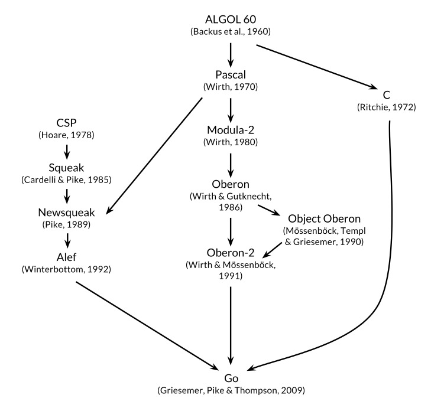
En ocaciones Go se describe como un lenguaje de tipo C, o como C para el siglo 21. De C, Go heredo su sintaxis de expresiones, instrucciones de flujo de control, tipos de datos basicos, paso de parametros por valor, punteros y, sobre todo, el enfasis de C en programas que compilan codigo maquina eficiente y cooperan naturalmente con las abstracciones de los sistemas operativos actuales.
Pero hay otros antepasados en el arbol genealogico de Go. Una importante corriente de influencia proviene de lenguajes de Niklaus Wirth, comenzando con Pascal. Modula-2 inspiro el concepto de paquete. Oberon elimino la distincion entre los archivos de interfaz del modulo y los archivos de implementacion del modulo. Oberon-2 influyo en la sintaxis de importacion y declaracion de paquetes, y Object Oberon proporciono la sintaxis para la declararcion de metodos.
Otro linaje entre los antepasados de Go, y uno que hace a Go distinto entre los lenguajes de programacion mas recientes, es una secuencia de lenguajes de investigacion poco conocidos desarrollados en los Laboratorios Bell, todos ellos inspiradas en el concepto de comunicacion de procesos secuenciales (CSP) del seminal articulo de 1978 de Tony Hoare en los cimientos de la concurrencia. En CSP, un programa es una composicion paralela de procesos que no tienen estado compartido; Los procesos se comunican y sincronizan utilizando canales. Pero el CSP de Hoare era un lenguaje formal para describir los conceptos fundamentales de la concurrencia, no un lenguaje de programacion para escribir programas ejecutables.
Rob Pike y otros comenzaron a experimentar con implementaciones CSP como lenguajes reales. El primero fue llamado Squeak (Un Lenguaje para comunicarce con ratones), que proporcionaron un lenguaje para el manejo de eventos de raton y teclado, con canales estaticamente creados. Esto fue seguido por Newsqueak, que ofrecia declaraciones y sintaxis de expresion como C y la notacion de tipo Pascal. Se trataba de un lenguaje puramente funcional con recoleccion de basura, dirigido nuevamente a administrar eventos de teclado, raton y ventanas. Los canales se convirtieron en valores de primera clase, creados dinamicamente y almacenados en variables.
El sistema operativo Plan 9 llevo adelante estas ideas en un lenguaje llamado Alef. Alef trato de hacer de Newsqueak un lenguaje viable para la programacion de sistemas, pero su omision de un recoleccion de basura hizo que la concurrencia fuera demasiado dolorosa.
Otras construcciones en Go muestran la influencia de genes no ancestrales aqui y alla; Por ejemplo iota es tomado libremente de APL, y el ambito lexico con funciones anidadas es de Scheme (y la mayoria de lenguajes desde entonces). Aqui tambien encontramos mutaciones novedosas. Go innova proporcionando slices (arreglos dinamicos) con acceso aleatorio eficiente, pero tambien permite sofisticados arreglos compartidos que recuerdan a las listas enlazadas. Y la declaracion defer es nueva con Go.
El Proyecto Go
Todos los lenguajes de programacion reflejan la filosofia de programacion de sus creadores, que a menudo incluye un componente significativo de la reaccion a las deficiencias percibidas de los lenguajes anteriores. El proyecto Go fue frustrado con varios sistemas de software de Google que estaban sufriendo una explosion de complejidad. (Este problema no es exclusivo de Google.)
Como Rob Pike dijo, la complejidad es multiplicativa: solucionar un problema al hacer una parte del sistema mas compleja, lenta pero seguramente añade complejidad a otras partes. Con la presion constante para agregar caracteristicas y opciones y configuraciones, y para enviar codigo rapidamente, es facil olvidar la sencillez, aunque a la larga la simplicidad es la clave para un buen software.
La simplicidad requiere mas trabajo al comienzo de un proyecto para reducir una idea a su esencia y mas disciplina durante la vida de un proyecto para distinguir los buenos cambios, de los malos o perniciosos. Con un esfuerzo suficiente, un buen cambio se puede acomodar sin comprometer lo que Fred Brooks llamo la integridad conceptual del diseño, pero un mal cambio no puede, un cambio pernicioso negocia la sencillez por una conveniencia superficial. Solo a traves de la simplicidad del diseño un sistema puede permanecer estable, seguro y coherente a medida que crece.
El proyecto Go incluye el lenguaje mismo, sus herramientas y librerias estandar, y por ultimo, pero no menos importante, una agenda cultural de simplicidad radical. Como un lenguaje reciente de alto nivel, Go tiene el beneficio de la retrospectiva, y los fundamentos se hacen bien: tiene recoleccion de basura, un sistema de paquetes, funciones de primera clase, alcance lexico, una interfaz de llamadas de sistema y cadenas inmutables en las que el texto es generalmente codificado en UTF-8. Pero tiene comparativamente pocas caracteristicas y es poco probable que agregue mas. Por ejemplo, no tiene conversiones numericas implicitas, no hay constructores o destructores, no hay sobrecarga de operadores, no hay valores de parametros predeterminados, no hay herencia, no hay genericos, no hay excepciones, no hay macros, no hay anotaciones de funcion y no hay almacenamiento local de subprocesos. El lenguaje es maduro y estable y garantiza la compatibilidad con versiones anteriores: los programas Go mas antiguos se pueden compilar y ejecutar con versiones mas recientes de compiladores y librerias estandar.
Go tiene un sistema de tipado para evitar la mayoria de los errores descuidados que afectan a los programadores en lenguajes dinamicos, pero tiene un sistema de tipado mas simple que los lenguajes tipados comparables. Este enfoque puede conducir en ocaciones a baches de programacion sin tipo dentro de un marco mas amplio de tipos, y los programadores Go no van a las longitudes que hacen a los programadores C++ o Haskell expresar propiedades de seguridad como pruebas basadas en tipo. Pero en la practica, Go da a los programadores gran parte de los beneficios de seguridad y rendimiento en tiempo de ejecucion de un sistema de tipado relativamente fuerte sin la carga de complejidad.
Go fomenta una conciencia del diseño de sistemas informaticos contemporaneos, particularmente la importancia de la localidad. Sus tipos de datos incorporados y la mayoria de las estructuras de datos de la libreria estan diseñados para funcionar naturalmente sin inicializacion explicita o constructores implicitos, por lo que relativamente pocas asignaciones de memoria y escrituras de memoria estan ocultas en el codigo. Los tipos agregados de Go (estructuras y matrices) mantienen sus elementos directamente, requiriendo menos almacenamiento y menos asignaciones e indireccion de punteros, que los lenguajes que utilizan campos indirectos. Y como la computadora moderna es una maquina paralela, Go tiene caracteristicas de concurrencia basadas en CSP, como se menciono anteriormente. Los stacs de tamaño variable de los hilos ligeros de Go o gorutinas son inicialmente lo suficientemente pequeñas como para que crear una gorutina sea barato y crear un millon sea practico.
La libreria estandar de Go, a menudo descrita como con baterias incluidas, proporciona bloques de construccion limpios y APIs de E/S, procesamiento de texto, graficos, criptografia, redes y aplicaciones distribuidas, con soporte para muchos formatos de archivos y protocolos estandar. Las librerias y las herramientas hacen uso extensivo de la convencion para reducir la necesidad de configuracion y explicaciones, simplificando asi la logica del programa y haciendo que diversos programas Go sean mas similares entre si y, por lo tanto, mas faciles de aprender. Los proyectos creados con la herramienta go solo utilizan nombres de archivos e identificadores y un comentario especial ocasional para determinar todas las librerias, ejecutables, pruebas, referencias, ejemplos, variantes especificas de la plataforma y documentacion para un proyecto; El codigo fuente de Go en si contiene la especificacion de compilacion.
Organizacion del Libro
Asumimos que usted ha programado en uno o mas lenguajes, compilados como C, C++ y Java, o interpretados como Python, Ruby y JavaScript, por lo que no solemos explicar todo como si fuera un completo principiante. La sintaxis superficial sera familiar, al igual que variables y constantes, expresiones, flujo de control y funciones.
El Capitulo 1 es un tutorial sobre las construcciones basicas de Go, introducido a traves de una docena de programas para tareas cotidianas como leer y escribir archivos, formatear texto, crear imagenes y comunicarse con clientes y servidores de Internet.
El Capitulo 2 describe los elementos estructurales de un programa Go–declaraciones, variables, nuevos tipos, paquetes y archivos, y alcance. El Capitulo 3 analiza numeros, booleanos, cadenas y constantes, y explica como procesar Unicode. El Capitulo 4 describe los tipos compuestos, es decir, los tipos construidos a partir de los mas sencillos utilizando arreglos, mapas, estructuras y slices, la aproximacion de Go para listas dinamicas. El Capitulo 5 cubre las funciones y discute el manejo de errores, panic y recover, y la sentencia defer.
Los Capitulos 1 a 5 son, son por lo tanto, lo basico, las cosas que forman parte de cualquier lenguaje imperativo popular. La sintaxis y el estilo de Go a veces difieren de otros lenguajes, pero la mayoria de los programadores los recogeran rapidamente. Los capitulos restantes se centran en temas en los que el enfoque de Go es menos convencional: metodos, interfaces, concurrencia, paquetes, pruebas y reflexion.
Go tiene un acercamiento inusual a la programacion orientada a objetos. No hay jerarquias de clase, o de hecho ninguna clase; Los comportamientos de objetos complejos se crean a partir de los mas simples por composicion, no por herencia. Los metodos pueden ser asociados con cualquier tipo definido por el usuario, no solo las estructuras, y la relacion entre tipos concretos y tipos abstractos (las interfaces) son implicitas, por lo que un tipo concreto puede satisfacer una interfaz que el diseñador del tipo desconocia. Los metodos estan cubiertos en el Capitulo 6, las interfaces en el Capitulo 7.
El Capitulo 8 presenta el enfoque de Go a la concurrencia, que se basa en la idea de comunicar procesos secuenciales (CSP), incorporados por goroutines y canales. El Capitulo 9 explica los aspectos mas tradicionales de la concurrencia basados en variables compartidas.
El Capitulo 10 describe los paquetes, el mecanismo para organizar las librerias. Este capitulo tambien muestra como hacer un uso efectivo de la herramienta go, provista para la compilacion, pruebas, benchmarking, formateo del programa, documentacion y muchas otras tareas, todo dentro de un solo comando.
El Capitulo 11 trata de las pruebas, donde Go adopta un enfoque notablemente ligero, evitando framewoks cargados de abstraccion en favor de librerias y herramientas simples. Las librerias de pruebas proporcionan una base sobre la que se pueden construir abstracciones mas complejas si es necesario.
El Capitulo 12 discute la reflexion, la capacidad de un programa para examinar su propia representacion durante la ejecucion. La reflexion es una herramienta poderosa, aunque debe ser usada con cuidado; Este capitulo explica como encontrar el equilibrio correcto, mostrando como se utiliza para implementar algunas librerias importantes en Go. El Capitulo 13 explica los detalles morbosos de programacion a bajo nivel que utiliza el paquete unsafe para dar un paso alrededor del sistema de tipado de Go, y cuando eso es apropiada.
Cada capitulo tiene una serie de ejercicios que puedes usar para probar tu comprension de Go, y para explorar extensiones y alternativas a los ejemplos del libro.
Todos menos los ejemplos de codigo mas triviales en el libro estan disponibles para su descarga desde un repositorio Git publico en gopl.io. Cada ejemplo se identifica por su ruta de importacion de paquete y puede ser convenientemente localizado, construido e instalado utilizando el comando go get. tendra que elegir un directorio para que sea su espacio de trabajo y establecer la variable de entorno GOPATH apuntando a este. La herramienta go creara el directorio si es necesario. Por ejemplo:
$ exportGOPATH=$HOME/gobook # Elegir el directorio de trabajo
$ go get gopl.io/ch1/helloworld # buscar, construir, instalar
$ $GOPATH/bin/helloworld # ejecutar
Hello, 世界
Para ejecutar los ejemplos, necesitara al menos la version 1.5 de Go.
La mejor fuente para obtener mas informacion sobre Go es el sitio web oficial, https://golang.org, que proporciona acceso a la documentacion, incluyendo la Especificacion del Lenguaje de Programacion Go, los paquetes estandar, y similares. Tambien hay tutoriales sobre como escribir Go y como escribirlo bien, y una amplia variedad de recursos de texto y video en linea que seran complementos valiosos para este libro. El Blog de Go se encuentra en blog.golang.org donde se publican algunos de los mejores escritos en Go, con articulos sobre el estado del lenguaje, los planes a futuro, los informes sobre conferencias y explicaciones en profundidad de una amplia variedad de temas relacionados.
Uno de los aspectos mas utiles del acceso en linea a Go (y una limitacion lamentable de un libro de papel) es la capacidad de ejecutar programas de Go desde las paginas web que los describen. Esta funcionalidad es proporcionada por Go Playground en play.golang.org, y puede ser embebido dentro de otras paginas, como la pagina de inicio en golang.org o las paginas de documentacion provistas por la herramienta godoc.
Playground hace que sea conveniente llevar a cabo experimentos sencillos para comprobar la propia comprension de la sintaxis, la semantica, o paquetes de librerias con programas cortos, y en muchos sentidos toma el lugar de un bucle leer-evaluar-imprimir (read-eval-print loop o REPL) de otros lenguajes. Sus URLs persistentes son ideales para compartir fragmentos de codigo con otros, para informar sobre errores o hacer sugerencias.
Construido sobre Playground, el Tour Go en tour.golang.org es una secuencia de breves lecciones interactivas sobre las ideas basicas y construcciones de Go, un paseo ordenado atraves del lenguaje.
El principal inconveniente del Playground y del Tour es que permiten que solo se importen librerias estandar, y muchas funciones de la libreria–por ejemplo, redes–estan restringidas por razones practicas o de seguridad. Tambien requiere de acceso a Internet para compilar y ejecutar cada programa. Asi que para experimentos mas elaborados, tendra que ejecutar programas Go en su propia computadora. Afortunadamente, el proceso de descarga es sencillo, por lo que no debe tomar mas de unos minutos para buscar su distribucion Go desde golang.org y empezar a escribir y ejecutar programas por su cuenta.
Ya que Go es un proyecto de codigo abierto, se puede leer el codigo fuente de cualquier tipo o funcion en la libreria estandar en https://golang.org/pkg; el mismo codigo forma parte de la distribucion descargada. Utilice esto para averiguar como funciona algo, o para responder a preguntas sobre los detalles, o simplemente para ver como los expertos escriben buen Go.
Agradecimientos
Rob Pike y Russ Cox, miembros centrales del equipo de Go, leyeron el manuscrito varias veces con mucho cuidado; Sus comentarios sobre todo, desde la eleccion de palabras hasta la estructura general y la organizacion han sido invaluables. Mientras preparaba la traduccion japonesa, Yoshiki Shibata iba mucho mas alla del llamado del deber; Su ojo meticuloso observo numerosas inconsistencias en el texto ingles y errores en el codigo. Apreciamos grandemente revisiones completas y comentarios criticos en el manuscrito entero de Brian Goetz, Corey Kosak, Arnold Robbins, Josh Bleecher Snyder, y Peter Weinberger.
Agradecemos a Sameer Ajmani, Ittai Balaban, David Crawshaw, Billy Donohue, Jonathan Feinberg, Andrew Gerrand, Roberto Griesemer, John Linderman, Minux Ma, Bryan Mills, Bala Natarajan, Cosmos Nicolaou, Paul Staniforth, Nigel Tao, y a Howard Trickey para muchas sugerencias utiles. Tambien damos las gracias a David Brailsford y Raph Levien por los consejos sobre composicion tipografica.
Nuestro redactor Greg Doench de Addison-Wesley consiguio hacer rodar la bola originalmente y ha estado ayunando continuamente desde entonces. El equipo de produccion de AW–John Fuller, Dayna Isley, Julie Nahil, Chuti Prasertsith y Barbara Wood–ha sido excepcional; Los autores no podrian esperar un mejor apoyo.
Alan Donovan desea agradecer a: Sameer Ajmani, Chris Demetriou, Walt Drummond, y Reid Tatge en Google por permitirle tiempo para escribir; Stephen Donovan, por su consejo y oportuno estimulo; Y sobre todo a su esposa Leila Kazemi, por su entusiasmo y apoyo inquebrantable a este proyecto, a pesar de las largas horas de distraccion y ausentismo de la vida familiar que ello conllevaba.
Brian Kernighan esta profundamente agradecido a sus amigos y colegas por su paciencia y autodominio mientras avanzaba lentamente por el camino hacia la comprension, y especialmente a su esposa Meg, que ha sido infaliblemente favorable a la escritura de libros y mucho mas.
Nueva York
Octubre 2015
Tutorial
Este capitulo es un recorrido por los componentes basicos de Go. Esperamos proporcionar suficiente informacion y ejemplos para sacarle del barro y hacer cosas utiles lo mas rapido posible. Los ejemplos aqui, y de hecho en todo el libro, estan dirigidos a tareas que usted podria tener que hacer en el mundo real. En este capitulo intentaremos darle una muestra de la diversidad de programas que uno podria escribir en Go, que van desde el simple procesamiento de archivos y un poco de graficos, a clientes y servidores de Internet concurrentes. Ciertamente no vamos a explicar todo en el primer capitulo, pero el estudio de estos programas en un nuevo lenguaje puede ser una manera eficaz de empezar.
Cuando estas aprendiendo un nuevo lenguaje, hay una tendencia natural a escribir codigo como lo habrias escrito en un languaje que ya conoces. Este consciente de este sesgo a medida que aprende Go y trate de evitarlo. Hemos tratado de ilustrar y explicar como escribir buen Go, asi que utilice el codigo aqui como guia cuando este escribiendo el suyo propio.
Hola, Mundo
Vamos a empezar con el ya tradicional ejemplo del hola, mundo, que aparece al comienzo de El lenguaje de programacion C, publicado en 1978. C es una de las influencias mas directas sobre Go, y hola, mundo ilustra una serie de ideas centrales.
Go es un lenguaje compilado. El conjunto de herramienta de Go convierte el codigo fuente de un programa y las cosas de las que depende, en instrucciones en el lenguaje maquina nativo de una computadora. Se puede acceder a estas herramientas a traves de un unico comando llamado go que tiene una serie de subcomandos. El mas simple de estos subcomandos es run, que compila el codigo fuente de uno o mas archivos de origen cuyos nombres terminan en .go, lo vincula con las librerias, y a continuacion, ejecuta el archivo ejecutable resultante. (Utilizaremos $ como el simbolo del sistema en todo el libro.)
$ go run helloworld.go
No es sorprendente que esto imprima
Hello, 世界
Go maneja Unicode de forma nativa, por lo que puede procesar texto en todos los idiomas del mundo.
Si el programa es mas que un experimento de un solo disparo, es probable que quiera compilarlo una vez y guardar el resultado compilado para su uso posterior. Esto se hace con go build:
$ go build helloworld.go
Esto crea un archivo binario ejecutable llamado helloworld que se pueden ejecutar en cualquier momento sin procesamiento adicional:
$ ./helloworld
Hello, 世界
Hemos etiquetado cada ejemplo significativo como un recordatorio de que puede obtener el codigo fuente del libro desde el repositorio en (gopl.io: gopl.io/ch1/helloworld
Si ejecuta go get gopl.io/ch1/helloworld, obtendra el codigo fuente y lo colocara en el directorio correspondiente. Hay mas informacion sobre este tema en la Seccion 2.6 y la Seccion 10.7.
Hablemos ahora del programa en si. El codigo Go esta organizado en paquetes, que son similares a librerias o modulos en otros lenguajes. Un paquete se compone de uno o mas archivos de codigo .go en un unico directorio que definen lo que hace el paquete. Cada archivo de codigo inicia con una declaracion del paquete, aqui es package main, que declara a que paquete pertenece el archivo, seguido de una lista de otros paquetes que importa, y luego las declaraciones del programa que se almacena en el archivo.
La libreria estandar de Go tiene mas de 100 paquetes para tareas comunes como entrada y salida, clasificacion y manipulacion de texto. Por ejemplo, el paquete fmt contiene funciones para la impresion y entrada de datos con formato. Println es una de las funciones basicas de salida en fmt; esta imprime uno o mas valores, separados por espacios, con un caracter de nueva linea al final para que los valores aparezcan como una sola linea de salida.
El paquete main es especial. Define un programa ejecutable independiente, no una libreria. Dentro del paquete main la funcionmain tambien es especial–es donde comienza la ejecucion del programa. Cualquier cosa que haga main es lo que hara el programa. Por supuesto, main sera normalmente un llamado a las funciones de otros paquetes que hacen gran parte del trabajo, como la funcion fmt.Println.
Debemos decirle al compilador que paquetes son necesarios para este archivo de codigo fuente; ese es el papel de la declaracion import seguida por la declaracion del paquete. El programa hola, mundo utiliza solo una funcion de otro paquete, pero en la mayoria de los programas importaran mas paquetes.
Debe importar exactamente los paquetes que necesita. Un programa no compilara si hay importaciones que faltan o si son innecesarias. Este estricto requisito impide que las referencias a paquetes no utilizados se acumulen a medida que los programas evolucionan.
Las declaraciones import deben ir luego de la declaracion package. Despues de eso, un programa consiste en la declaracion de funciones, variables, constantes y tipos (introducidos por las palabras clave func, var, const, y type); En su mayor parte, el orden de las declaraciones no importa. Este programa es lo mas corto posible, ya que declara solo una funcion, que a su vez solo llama a otra funcion. Para ahorrar espacio en la presentacion de ejemplos, a veces no mostramos las declaraciones package e import, pero estaran en el codigo del archivo y debemos estar alli para compilar el codigo.
Una declaracion de funcion consiste en la palabra clave func, el nombre de la funcion, una lista de parametros (vacia para main), una lista de resultados (aqui tambien vacia), y el cuerpo de la funcion–las declaraciones que definen lo que hace–encerradas entre llaves. Vamos a echar un vistazo mas de cerca a las funciones en el Capitulo 5.
Go no requiere punto y coma al final de las sentencias o declaraciones, excepto donde aparecen dos o mas en la misma linea. En efecto, las nuevas lineas que siguen ciertas palabras se convierten en punto y coma, por lo que cuando se colocan nuevas lineas se colocan en funcion del correcto analisis del codigo Go. Por ejemplo, la llave de apertura { de la funcion, debe estar en la misma linea, que el final de la declaracion func, no en una linea distinta, y en la expresion x + y, se permite un salto de linea despues, pero no antes del operador +.
Go toma una fuerte postura en el formato del codigo. La herramienta gofmt reescribe el codigo en el formato estandar, y el subcomando fmt de la herramienta go aplica gofmt a todos los archivos en el paquete especificado, o por defecto, a los que estan en el directorio actual. Se ha ejecutado gofmt sobre todos los archivos de codigo fuente en el libro, y usted debe optener el habito de hacer lo mismo con su propio codigo. Declarar un formato estandar por mandato elimina un monton de debate inutil sobre trivialidades y, lo que es mas importante, permite una variedad de transformaciones automatizadas de codigo fuente que serian imposibles si se permitiera el formato arbitrario.
Muchos editores de texto pueden ser configurados para ejecutar gofmt cada vez que se guarda un archivo, por lo que su codigo fuente siempre tendra el formato apropiado. Una herramienta relacionada, goimports, ademas, gestiona la insercion y extraccion de las declaraciones de importacion, segun sea necesario. No es parte de la distribucion estandar pero se puede obtener con este comando:
$ go get golang.org/x/tools/cmd/goimports
Para la mayoria de los usuarios, la forma habitual de descargar y construir paquetes, ejecutar pruebas, mostrar su documentacion, y asi sucesivamente, es con la herramienta go, que vamos a ver en la Seccion 10.7.
Argumentos de Linea de Comandos
La mayoria de los programas procesan alguna entrada para producir alguna salida; Que es mas o menos la definicion de la computacion. Pero, ¿como un programa obtiene datos de entrada para operar? Algunos programas generan sus propios datos, pero mas a menudo, la entrada proviene de una fuente externa: un archivo, una conexion de red, la salida de otro programa, un usuario en un teclado, argumentos de linea de comandos o similares. Los siguientes ejemplos discutiran algunas de estas alternativas, comenzando con argumentos de linea de comandos.
El paquete os proporciona funciones y otros valores para relacionarse con el sistema operativo de una manera independiente de la plataforma. Los argumentos de linea de comandos estan disponibles para un programa en una variable denominada Args que forma parte del paquete os; por lo tanto su nombre en cualquier lugar fuera del paquete os es os.Args.
La variable os.Args es un slice de strings. Los slices son una nocion fundamental en Go, y hablaremos mucho mas sobre ellos pronto. Por ahora, piensa en un slice como una secuencia s de elementos de un arreglo de tamaño dinamico, donde los elementos individuales pueden accederse como s[i] y una subsecuencia contigua como s[m:n]. El numero de elementos esta dado por len(s). Como en la la mayoria de los otros lenguajes de programacion, toda indexacion en Go utiliza intervalos semiabiertos que incluyen el primer indice, pero no incluyen el ultimo, ya que simplifica la logica. Por ejemplo, el slice s[m:n], donde 0 ≤ m ≤ n ≤ len(s), contiene n-m elementos.
El primer elemento de os.Args, os.Args[0], es el nombre del comando en si; Los otros elementos son los argumentos que se ofresieron al programa cuando se inicio la ejecucion. Una expresion de la forma s[m:n] produce un slice que hace referencia a los elementos entre m y n-1, por lo que los elementos que necesitamos para nuestro siguiente ejemplo corresponden al slice os.Args[1:len(os.Args)]. Si m o n se omite, el valor predeterminado es 0 o len(s), respectivamente, por lo que se puede abreviar el slice deseado como os.Args[1:].
Aqui esta una implementacion del comando echo de Unix, que imprime sus argumentos de linea de comandos en una sola linea. Importa dos paquetes, que se dan como una lista entre parentesis en lugar de como declaraciones de importacion individuales. Cualquiera de las formas es legal, pero convencionalmente se utiliza el formato de lista. El orden de las importaciones no importa; la herramienta gofmt ordena los nombres de los paquetes en orden alfabetico. (Cuando hay varias versiones de un ejemplo, a menudo las numeraremos para que pueda estar seguro de cual estamos hablando.)
// Echo1 imprime sus argumentos de linea de comandospackagemainimport("fmt""os")funcmain(){vars,sepstringfori:=1;i<len(os.Args);i++{s+=sep+os.Args[i]sep=" "}fmt.Println(s)}
Los comentarios comienzan con //. Todo el texto desde // hasta el final de la linea es el comentario para los programadores y es ignorado por el compilador. Por convencion, describimos cada paquete en un comentario inmediatamente anterior a su declaracion del paquete; para un paquete main, este comentario es una o varias frases completas que describen el programa en su conjunto.
La declaracion var declara dos variables s y sep, de tipo string. Una variable se puede inicializar como parte de su declaracion. Si no se inicia de forma explicita, se inicializa de forma implicita al valor cero para su tipo, que es 0 para los tipos numericos y la cadena vacia "" para strings. Asi, en este ejemplo, la declaracion implicita inicializa s y sep como cadenas vacias. Tendremos mas que decir acerca de las variables y las declaraciones en el Capitulo 2.
Para los numeros, Go proporciona los operadores aritmeticos y logicos habituales. Cuando se aplica a las cadenas, sin embargo, el operador +concatena los valores, por lo que la expresion
sep+os.Args[i]
representa la concatenacion de las cadenas sep y os.Args[i]. La declaracion que usamos en el programa,
s+=sep+os.Args[i]
es una sencencia de asignacion que concatena el antiguo valor de s con sep y os.Args[i] y lo asigna de nuevo a s; Es equivalente a
s=s+sep+os.Args[i]
El operador += es un operador de asignacion. Cada operador aritmetico y logico como + o * tiene un operador de asignacion correspondiente.
El programa echo podria haber impreso su salida en un bucle de una sola pieza a la vez, pero en esta version, en su lugar se acumula una cadena añadiendo repetidamente nuevo texto hasta el final. La cadena de s comienza su vida vacia, es decir, con el valor "", y cada ciclo a traves del bucle añade un poco de texto a ella; Despues de la primer iteracion, tambien se inserta un espacio para que cuando el bucle este terminado, haya un espacio entre cada argumento. Este es un proceso cuadratico que podria ser costoso si el numero de argumentos es grande, pero para echo, eso es poco probable. Vamos a mostrar una serie de versiones mejoradas de echo en este capitulo y el siguiente para hacer frente a cualquier ineficiencia real.
El indice variable i del bucle se declara en la primer parte del bucle for. El simbolo := es parte de una declaracion de variables compacta, una sentencia que declara una o mas variables y les da los tipos apropiados basados en los valores del inicializador; Hay mas informacion al respecto en el proximo capitulo.
La declaracion de incremento i++ añade 1 a i; que es equivalente a i += 1, que es a su vez equivalente a i = i + 1. Hay una declaracion de decremento correspondiente i-- que resta 1. Estas son declaraciones, no expresiones como lo son en la mayoria de los lenguajes en la familia C, por lo que j = i++ es ilegal, y solamente son de sufijo, asi --i tampoco es legal.
El bucle for es la unica sentencia de bucle en Go. Tiene una serie de formas, una de las cuales se ilustra aqui:
forinicializacion;condicion;incremento{// cero o mas declaraciones}
Los parentesis no se utilizan nunca alrededor de los tres componentes de un bucle for. Las llaves son obligatorias, sin embargo, y la llave de apertura deben estar en la misma linea que la declaracion incremento.
La declaracion opcional inicializacion se ejecuta antes de que comience el bucle. Si esta presente, debe ser una simple declaracion, es decir, una declaracion de variables compacta, una declaracion de incremento o asignacion, o una llamada a funcion. La condition es una expresion booleana que se evalua en al inicio de cada iteracion del bucle; si se evalua como true, las declaraciones controladas por el bucle se ejecutan. La declaracion incremento se ejecuta despues del cuerpo del bucle, luego la condicion se evalua de nuevo. El bucle termina cuando la condicion se convierte en falsa.
Cualquiera de estas partes puede omitirse. Si no hay inicializacion y ningun incremento, el punto y coma tambien pueden omitirse:
// un tradicional bucle "while"forcondicion{// ...}
Si la condicion se omite totalmente en cualquiera de estas formas, por ejemplo en
// un tradicional bucle infinitofor{// ...}
el bucle es infinito, aunque los bucles de esta forma se pueden terminar de alguna otra forma, como una declaracion break o return.
Otra forma en que el bucle for itera, es sobre un rango de valores de un tipo de datos como un string o un slice. Para ilustrar esto, he aqui una segunda version de echo:
// Echo2 imprime sus argumentos de linea de comandospackagemainimport("fmt""os")funcmain(){s,sep:="",""for_,arg:=rangeos.Args[1:]{s+=sep+argsep=" "}fmt.Println(s)}
En cada iteracion del bucle, range produce un par de valores: el indice y el valor del elemento en ese indice. En este ejemplo, no necesitamos el indice, pero la sintaxis de un bucle range requiere que si tratamos con el elemento, debemos tratar tambien con el indice. Una idea seria asignar el indice a una variable temporal, como temp y pasar por alto su valor, pero Go no permite tener variables locales sin utilizar, por lo que esto daria lugar a un error de compilacion.
La solucion es utilizar el identificador en blanco, cuyo nombre es _ (esto es, un guion bajo). El identificador en blanco puede utilizarse siempre que la sintaxis requiera un nombre de variable, pero la logica del programa no lo haga, por ejemplo para descartar un indice no deseado del bucle cuando solo necesitamos el valor del elemento. La mayoria de los programadores Go probablemente usarian range y _ para escribir el programa echo anterior, ya que la indexacion sobre os.Args es implicita, no explicita, y por lo tanto mas facil de hacerlo bien.
Esta version del programa utiliza una breve declaracion de variables para declarar e inicializar s y sep, pero podria igualmente haber declarado las variables por separado. Hay varias maneras de declarar una variable de cadena; Todas estas son equivalentes:
s:=""varsstringvars=""varsstring=""
Por que usted deberia preferir una forma sobre otra? El primer formato, una declaracion de variable compacta, es el mas compacto, pero puede ser utilizado solo dentro de una funcion, no para variables de nivel de paquete. La segunda forma se basa en la inicializacion por defecto al valor cero para strings, que es "". La tercera forma se utiliza raramente excepto cuando se declaran multiples variables. La cuarta forma es explicita sobre el tipo de la variable, que es redundante cuando es el mismo que el del valor inicial pero necesario en otros casos donde no son del mismo tipo. En la practica, generalmente debe utilizar una de las dos primeras formas, con inicializacion explicita para decir que el valor inicial es importante e implicita para decir que el valor inicial no importa.
Como se señalo anteriormente, cada iteracion alrededor del bucle, la cadena s obtiene contenidos completamente nuevos. La declaracion += crea una nueva cadena mediante la concatenacion de la cadena antigua, un caracter de espacio, y el siguiente argumento, a continuacion, asigna la nueva cadena a s. El contenido antiguo del s ya no estan en uso, por lo que sera recolectado por el recolector de basura en su debido momento.
Si la cantidad de datos involucrados es grande, esto podria ser costoso. Una solucion mas simple y mas eficiente seria utilizar la funcion Join del paquete strings:
Por ultimo, si no nos interesa el formato, y solo queremos ver los valores, tal vez para depuracion, podemos dejar que Println formatee el resultado por nosotros:
fmt.Println(os.Args[1:])
El resultado de esta sentencia es como la que se puede conseguir mediante strings.Join, pero con corchetes al rededor. Cualquier slice se puede imprimir de esta manera.
Ejercicio 1.1: Modificar el programa echo para imprimir tambien os.Args[0], el nombre del comando que lo invoco.
Ejercicio 1.2: Modificar el programa echo para imprimir el indice y el valor de cada uno de sus argumentos, uno por linea.
Ejercicio 1.3: Experimente para medir la diferencia en el tiempo de funcionamiento entre nuestras versiones potencialmente ineficientes y el que utiliza strings.Join. ( La Seccion 1.6 ilustra parte del paquete time, y la Seccion 11.4 muestra como escribir pruebas de referencia para la evaluacion sistematica del rendimiento.)
Encontrar lineas duplicadas
Los programas para copiar archivos, imprimir, buscar, clasificar, contar y similares tienen una estructura similar: un bucle sobre la entrada, algun calculo sobre cada elemento y generacion de salida al vuelo o al final. Mostraremos tres variantes de un programa llamado dup; se inspira en parte por el comando Unix uniq, que mira las lineas duplicadas adyacentes. Las estructuras y paquetes utilizados son modelos que se pueden adaptar facilmente.
La primer version de dup imprime cada linea que aparece mas de una vez en la entrada estandar, precedido por su recuento. Este programa presenta la declaracion if, el tipo de datos map y el paquete bufio.
// Dup1 imprime el texto de cada linea que aparece mas de// una vez en la entrada estandar, precedida por su recuento.packagemainimport("bufio""fmt""os")funcmain(){counts:=make(map[string]int)input:=bufio.NewScanner(os.Stdin)forinput.Scan(){counts[input.Text()]++}// NOTA: ignorando posibles errores de input.Err ()forline,n:=rangecounts{ifn>1{fmt.Printf("%d\t%s\n",n,line)}}}
Al igual que con for, nunca se usan parentesis alrededor de la declaracion de la condicion if, pero se requieren llaves para el cuerpo. Puede haber una parte else opcional que se ejecute si la condicion es falsa.
Un mapa contiene un conjunto de pares clave/valor y proporciona operaciones de tiempo constante para almacenar, recuperar, o comprobar un elemento en el conjunto. La clave puede ser de cualquier tipo cuyos valores puedan compararse con ==, siendo strings el ejemplo mas comun; El valor puede ser de cualquier tipo en absoluto. En este ejemplo, las claves son strings, y los valores son ints. La funcion incorporada make crea un nuevo mapa vacio; Tiene otros usos tambien. Los mapas se discuten extensamente en la Seccion 4.3.
Cada vez que dup lee una linea de entrada, la linea se utiliza como una clave en el mapa y se incrementa el valor correspondiente. La declaracion counts[input.Text()]++ es equivalente a estas dos afirmaciones:
line:=input.Text()counts[line]=counts[line]+1
No es un problema, si el mapa aun no contiene esa clave. La primera vez que se ve una nueva linea, la expresion counts[line] en el lado derecho se evalua al valor cero para su tipo, que es 0 para int.
Para imprimir los resultados, utilizamos otro bucle de repeticion for basado en range, esta vez sobre el mapa counts. Como antes, cada iteracion produce dos resultados, una clave y el valor del elemento del mapa para esa clave. El orden de la iteracion del mapa no es especifico, en la practica es aleatorio, variando de una ejecucion a otra. Este diseño es intencional, ya que impide que los programas se basen en cualquier orden particular donde no se garantiza ninguno.
El paquete bufio, ayuda a que la entrada y salida sea eficiente y conveniente. Una de sus caracteristicas mas utiles es un tipo llamado Scanner que lee la entrada y la rompe en lineas o palabras; A menudo es la manera mas facil de procesar la entrada que llega naturalmente en lineas.
El programa utiliza una breve declaracion de variables para crear una nueva variable de entrada que hace referencia a bufio.Scanner:
input:=bufio.NewScanner(os.Stdin)
El escaner lee de la entrada estandar del programa. Cada llamada a input.Scan() lee la siguiente linea y elimina el caracter de nueva linea al final; el resultado puede ser recuperado llamando a input.Text(). La funcion Scan devuelve true si hay una linea y false cuando no hay mas entrada.
La funcion fmt.Printf, como printf en C y otros lenguajes, produce una salida con formato de una lista de expresiones. Su primer argumento es una cadena de formato que especifica como deben formatearse los argumentos posteriores. El formato de cada argumento esta determinado por un caracter de conversion, una letra siguiendo un signo de porcentaje. Por ejemplo, %d formatea un operando entero usando la notacion decimal, y %s se expande para el valor de un operando de cadena.
Printf tiene mas de una docena de estas conversiones, que los programadores de Go llaman verbos. Esta tabla esta lejos de ser una especificacion completa, pero ilustra muchas de las caracteristicas que estan disponibles:
%d
entero decimal
%x, %o, %b
entero en hexadecimal, octal, binario
%f, %g, %e
numero de coma flotante: 3.141593 3.141592653589793 3.141593e + 00
%t
booleano: true o false
%c
runa (punto de codigo Unicode)
%s
string
%q
citar string "abc" o runa 'c'
%v
cualquier valor en un formato natural
%T
cualquier tipo de valor
%%
signo literal de porcentaje (sin operando)
El formato de cadena en dup1 tambien contiene una tabulacion \t y un salto de linea \n. Los literales de cadena pueden contener tales secuencias de escape para la representacion de caracteres de otra manera invisibles. Printf no escribe una nueva linea por defecto. Por convencion, las funciones de formato cuyos nombres terminan en f, tales como log.Printf y fmt.Errorf, utilizan las reglas de formato de fmt.Printf, mientras que aquellas cuyos nombres terminan en ln como Println, formatean sus argumentos con %v, seguido por una nueva linea.
Muchos programas leen ya sea a partir de su entrada estandar, como anteriormente, o de una secuencia de archivos con nombre. La proxima version de dup puede leer desde la entrada estandar o manejar una lista de nombres de archivos, utilizando os.Open para abrir cada uno de ellos:
// Dup2 imprime el recuento y el texto de las lineas que aparecen mas de una vez// en la entrada. Se lee desde stdin o desde una lista de archivos con nombre.packagemainimport("bufio""fmt""os")funcmain(){counts:=make(map[string]int)files:=os.Args[1:]iflen(files)==0{countLines(os.Stdin,counts)}else{for_,arg:=rangefiles{f,err:=os.Open(arg)iferr!=nil{fmt.Fprintf(os.Stderr,"dup2: %v\n",err)continue}countLines(f,counts)f.Close()}}forline,n:=rangecounts{ifn>1{fmt.Printf("%d\t%s\n",n,line)}}}funccountLines(f*os.File,countsmap[string]int){input:=bufio.NewScanner(f)forinput.Scan(){counts[input.Text()]++}// NOTE: Ignora errores potenciales de input.Err()}
La funcion os.Open devuelve dos valores. El primero es un archivo abierto (*os.File) que se utiliza en lecturas posteriores por Scanner.
El segundo resultado de os.Open es un valor nativo de tipo error. Si err es igual al valor especial nativo nil, el archivo fue abierto correctamente. El archivo se lee, y cuando se llega al final de la entrada, Close cierra el archivo y libera cualquier recurso. Por otro lado, si err no es nil, algo salio mal. En ese caso, el valor de error describe el problema. Nuestro sencillo manejo de errores imprime un mensaje en el flujo de error estandar utilizando Fprintf y el verbo %v, que muestra un valor de cualquier tipo en un formato predeterminado, y luego dup continua con el siguiente archivo; la instruccion continue va a la siguiente iteracion del bucle for.
Con el fin de mantener los ejemplos de codigo de un tamaño razonable, nuestros primeros ejemplos son intencionalmente un tanto descuidados en el manejo de errores. Es evidente que hay que comprobar si hay un error de parte de os.Open; Sin embargo, estamos ignorando la menos probable posibilidad de que pueda producirse un error al leer el archivo con input.Scan. Anotaremos los lugares donde hemos omitido la comprobacion de errores, entraremos en detalles sobre el manejo de errores en la Seccion 5.4.
Observe que la llamada a countLines precede a su declaracion. Las funciones y otras entidades a nivel de paquete se pueden declarar en cualquier orden.
Un mapa es una referencia a la estructura de datos creada por make. Cuando un mapa se pasa a una funcion, la funcion recibe una copia de la referencia, De modo que cualquier cambio que haga la funcion llamada en la estructura de datos subyacente, sera tambien visible a traves de la referencia del mapa del llamador. En nuestro ejemplo, los valores insertados en el mapa counts por countLines son vistos por main.
Las versiones anteriores de dup operan en un modo streaming en el que la entrada se lee y divide en lineas segun sea necesario, por lo que, en principio, estos programas pueden manejar una cantidad arbitraria de entrada. Un enfoque alternativo es leer la entrada entera en la memoria de un solo trago, dividirlo en lineas a la vez, y luego procesar las lineas. La siguiente version, dup3, funciona de esa manera. Se introduce la funcion ReadFile (del paquete io/ioutil), que lee todo el contenido de un archivo, y strings.Split, que divide una cadena en un slice de subcadenas. (Split es lo contrario de strings.Join, que vimos anteriormente.)
Hemos simplificado un poco dup3. En primer lugar, solo lee archivos por su nombre, no la entrada estandar, ya que ReadFile requiere como argumento un nombre de archivo. En segundo lugar, se paso el conteo de las lineas de nuevo a main, ya que ahora solo es necesario un solo lugar.
ReadFile devuelve un slice de bytes que se debe convertirse en un string para que pueda ser dividido por strings.Split. Vamos a discutir los strings y slices de bytes en detalle en la Seccion 3.5.4.
Bajo la cubierta, bufio.Scanner, ioutil.ReadFile y ioutil.WriteFile utilizan los metodos Read y Write de *os.File, pero es raro que la mayoria de los programadores necesiten acceder directamente a las rutinas de bajo nivel. Las funciones de nivel superior como bufio y io/ioutil son mas faciles de usar.
Ejercicio 1.4: Modificar dup2 para imprimir los nombres de todos los archivos en los que se produce cada linea duplicada.
GIF animados
El siguiente programa demuestra el uso basico de los paquetes de imagenes estandar en Go, que usaremos para crear una secuencia de imagenes de mapa de bits y luego codificar la secuencia como una animacion GIF. Las imagenes, llamadas figuras de Lissajous, eran un efecto visual basico en peliculas de ciencia ficcion de la decada de 1960. Son las curvas parametricas producidas por oscilacion armonica en dos dimensiones, tales como dos ondas sinusoidales alimentados en el entradas x e y de un osciloscopio. La Figura 1.1 muestra algunos ejemplos.
Figura 1.1. Cuatro figuras de Lissajous.
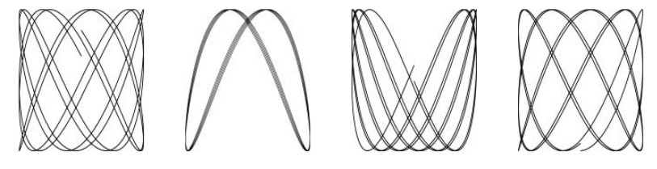
Hay varias nuevas construcciones en este codigo, incluyendo declaraciones const, tipos de estructura, y literales compuestos. A diferencia de la mayoria de nuestros ejemplos, este tambien implica calculos de punto flotante. Aqui vamos a discutir estos temas solo brevemente, desplazando la mayoria de los detalles a los capitulos posteriores, ya que el objetivo principal en este momento es darle una idea de como se ve Go y el tipo de cosas que se pueden hacer facilmente con el lenguaje y sus librerias.
// Lissajous genera GIF animados de figuras Lissajous aleatorias.packagemainimport("image""image/color""image/gif""io""math""math/rand""os")varpalette=[]color.Color{color.White,color.Black}const(whiteIndex=0// primer color en la paletablackIndex=1// siguiente color en la paleta)funcmain(){lissajous(os.Stdout)}funclissajous(outio.Writer){const(cycles=5// numero de revoluciones completas del oscilador xres=0.001// resolucion angularsize=100// dimencion de la imagen [-size..+size]nframes=64// numero de cuadros de animaciondelay=8// retardo entre fotogramas en unidades de 10ms)freq:=rand.Float64()*3.0// frecuencia relativa del oscilador yanim:=gif.GIF{LoopCount:nframes}phase:=0.0// diferencia de fasefori:=0;i<nframes;i++{rect:=image.Rect(0,0,2*size+1,2*size+1)img:=image.NewPaletted(rect,palette)fort:=0.0;t<cycles*2*math.Pi;t+=res{x:=math.Sin(t)y:=math.Sin(t*freq+phase)img.SetColorIndex(size+int(x*size+0.5),size+int(y*size+0.5),blackIndex)}phase+=0.1anim.Delay=append(anim.Delay,delay)anim.Image=append(anim.Image,img)}gif.EncodeAll(out,&anim)// NOTA: Ignorados errores de codificacion}
Despues de importar un paquete cuya ruta tiene multiples componentes, como image/color, nos referimos al paquete con el nombre que procede del ultimo componente. Por lo tanto la variable color.White pertenece al paquete image/color y gif.GIF pertenece a image/gif.
Una declaracion const (§3.6) da nombres a las constantes, es decir, valores que se establecen en tiempo de compilacion, tales como los parametros numericos para ciclos, cuadros, y el retardo. Igual a las declaraciones var, las declaraciones const pueden aparecer a nivel de paquete (por lo que los nombres son visibles en todo el paquete) o dentro de una funcion (por lo que los nombres son visibles solo dentro de esa funcion). El valor de una constante debe ser un numero, una cadena o un booleano.
Las expresiones []color.Color{...} y gif.GIF{...} son literales compuestos (§4.2, §4.4.1), una notacion compacta de Go para instanciar cualquiera de los tipos compuestos de una secuencia de valores de los elementos. Aqui, la primera es un slice y la segunda es una estructura.
El tipo gif.GIF es de tipo struct (§4.4). Una estructura es un grupo de valores denominados campos, a menudo de diferentes tipos, que se recogen juntos en un unico objeto que puede tratarse como una unidad. La variable anim es una estructura de tipo gif.GIF. La estructura literal crea un valor estructura cuyo campo LoopCount se establece en nframes; Todos los demas campos tienen el valor cero para su tipo. Los campos individuales de una estructura se puede acceder usando la notacion punto, al igual que en las dos ultimas asignaciones que actualizan de forma explicita los campos Delay e Image de anim.
La funcion lissajous tiene dos bucles anidados. El bucle exterior se ejecuta 64 iteraciones, cada una produciendo un solo fotograma de la animacion. Crea una nueva imagen de 201x201 con una paleta de dos colores, blanco y negro. Todos los pixeles se ajustan inicialmente al valor cero de la paleta (el color cero de la paleta), que se establece en blanco. Cada paso a traves del bucle interno genera una nueva imagen estableciendo algunos pixeles en negro. El resultado se añade a una lista de cuadros en anim utilizando la funcion incorporada append (§4.2.1), junto con un retardo especificado de 80 ms. Por ultimo, la secuencia de cuadros y los retrasos se codifica en formato GIF y se escribe en la salida de fluje out. El tipo de out es io.Writer, lo que nos permite escribir a una amplia gama de posibles destinos, como vamos a mostrar pronto.
El bucle interior ejecuta los dos osciladores. El oscilador x es simplemente la funcion sinusoidal. El oscilador y es tambien una sinusoide, pero su frecuencia es relativa a la del oscilador x un numero aleatorio entre 0 y 3, y su fase relativa al oscilador x es inicialmente cero, pero aumenta con cada fotograma de la animacion. El bucle se ejecuta hasta que el oscilador x ha completado cinco ciclos completos. En cada paso, que llaman a SetColorIndex para colorear el pixel correspondiente en (x, y) negro, que es en la posicion 1 de la paleta.
La funcion main llama a la funcion lissajous, dirigiendola a escribir en la salida estandar, por lo que este comando produce un GIF animado con marcos como los de la Figura 1.1:
$ go build gopl.io/ch1/lissajous
$ ./lissajous >out.gif
Ejercicio 1.5: Cambiar la paleta de colores del programa Lissajous a verde sobre negro, para mayor autenticidad. Para crear el color web #RRGGBB, utilice color.RGBA{0xRR, 0xGG, 0xBB, 0xff}, donde cada par de digitos hexadecimales representa la intensidad del componente de color rojo, verde o azul del pixel.
Ejercicio 1.6: Modificar el programa Lissajous para producir imagenes de multiples colores mediante la adicion de mas valores a la paleta y luego mostrarlos cambiando el tercer argumento de SetColorIndex de alguna manera interesante.
Obtener una URL
Para muchas aplicaciones, el acceso a la informacion de Internet es tan importante como el acceso al sistema de archivos local. Go ofrece una coleccion de paquetes, agrupados bajo net, que hacen que sea facil de enviar y recibir informacion a traves de Internet, realizar conexiones de red de bajo nivel, y configurar servidores, por lo que las caracteristicas de concurrencia de Go (introducidas en el Capitulo 8) son particularmente utiles.
Para ilustrar el minimo necesario para recuperar la informacion a traves de HTTP, aqui esta un programa simple llamado fetch que recupera el contenido de cada URL y lo imprime como texto sin interpretar; esta inspirado en la invaluable utilidad curl . Obviamente uno normalmente haria mas con tales datos, pero esto muestra la idea basica. Usaremos este programa con frecuencia en el libro.
// Fetch imprime el contenido encontrado en cada URL especificada.packagemainimport("fmt""io/ioutil""net/http""os")funcmain(){for_,url:=rangeos.Args[1:]{resp,err:=http.Get(url)iferr!=nil{fmt.Fprintf(os.Stderr,"fetch: %v\n",err)os.Exit(1)}b,err:=ioutil.ReadAll(resp.Body)resp.Body.Close()iferr!=nil{fmt.Fprintf(os.Stderr,"fetch: reading %s: %v\n",url,err)os.Exit(1)}fmt.Printf("%s",b)}}
Este programa introduce funciones a partir de dos paquetes, net/http y io/ioutil. La funcion http.Get realiza una peticion HTTP y, si no hay error, devuelve el resultado en la estructura resp . El campo Body de resp contiene la respuesta del servidor como un flujo legible. A continuacion, ioutil.ReadAll lee toda la respuesta; el resultado se almacena en b. El flujo Body es cerrado para evitar fuga de recursos y Printf escribe la respuesta a la salida estandar.
$ go build gopl.io/ch1/fetch
$ ./fetch http://gopl.io
<html>
<head>
<title>The Go Programming Language</title>
...
Si la solicitud HTTP falla, en su lugar, fetch reportara el error:
$ ./fetch http://bad.gopl.io
fetch: Get http://bad.gopl.io: dial tcp: lookup bad.gopl.io: no such host
En cualquiera de los casos de error, os.Exit(1) hace que el proceso termine con un codigo de estado de valor 1.
Ejercicio 1.7: La funcion io.Copy(dst, src) lee desde src y escribe en dst. Utilicelo en lugar de ioutil.ReadAll para copiar el cuerpo de la respuesta a os.Stdout sin requerir un buffer lo suficientemente grande como para contener todo el fluje de datos. Asegurese de comprobar el resultado del error de io.Copy.
Ejercicio 1.8: Modificar fetch para agregar el prefijo http:// a cada argumento URL si este so se proporciona. Es posible que desee utilizar strings.HasPrefix.
Ejercicio 1.9: Modificar fetch para imprimir tambien el codigo de estado HTTP, que se encuentra en resp.Status.
Obteniendo URL Concurrentemente
Uno de los aspectos mas interesantes y novedosos de Go es su soporte para la programacion concurrente. Este es un tema muy amplio, al que se dedican el Capitulo 8 y el Capitulo 9, asi que por ahora le daremos solo una muestra de los principales mecanismos de la concurrencia en Go, gorutinas y canales.
El siguiente programa, fetchall, realiza la misma busqueda del contenido de una URL como en el ejemplo anterior, pero obtiene muchas URL, todas al mismo tiempo, de modo que el proceso no tardara mas que la busqueda mas prolongada en lugar de la suma de todos los tiempos de busqueda. Esta version de fetchall descarta las respuestas, pero indica el tamaño y el tiempo transcurrido de cada una:
// Fetchall busca URLs en paralelo e informa de sus tiempos y tamaños.packagemainimport("fmt""io""io/ioutil""net/http""os""time")funcmain(){start:=time.Now()ch:=make(chanstring)for_,url:=rangeos.Args[1:]{gofetch(url,ch)// inicia una gorutina}forrangeos.Args[1:]{fmt.Println(<-ch)// recibir desde el canal ch}fmt.Printf("%.2fs elapsed\n",time.Since(start).Seconds())}funcfetch(urlstring,chchan<-string){start:=time.Now()resp,err:=http.Get(url)iferr!=nil{ch<-fmt.Sprint(err)// enviar al canal chreturn}nbytes,err:=io.Copy(ioutil.Discard,resp.Body)resp.Body.Close()// no pierdas recursosiferr!=nil{ch<-fmt.Sprintf("while reading %s: %v",url,err)return}secs:=time.Since(start).Seconds()ch<-fmt.Sprintf("%.2fs %7d %s",secs,nbytes,url)}
Una gorutina es una funcion de ejecucion concurrente. Un canal es un mecanismo de comunicacion que permite a una gorutina para pasar valores de un tipo especificado a otra gorutina. La funcion main se ejecuta en una gorutina y la sentencia go crea gorutinas adicionales.
La funcion main crea un canal de strings utilizando make . Para cada argumento de linea de comandos, la sentencia go en el primer bucle inicia una nueva gorutina que llama a fetch asincronamente para buscar la URL usando http.Get. La funcion io.Copy lee el cuerpo de la respuesta y la descarta escribiendo en el flujo de salida ioutil.Discard. Copy devuelve el numero de bytes, junto con cualquier error que prodicido. A medida que llega cada resultado, fetch envia una linea de resumen en el canal ch. El segundo bucle en main recibe e imprime esas lineas.
Cuando una gorutina intenta enviar o recibir en un canal, se bloquea hasta que otra gorutina intente la operacion correspondiente de recepcion o envio, momento en el cual se transfiere el valor y ambas gorutinas continuan. En este ejemplo, cada fetch envia un valor (expresionch <-) en el canal ch, y main recibe todos ellos (<-ch). Tener a main haciendo toda la impresion, asegura que la salida de cada gorutina se procesa como una unidad, sin el peligro de entrelazado si dos gorutinas terminan al mismo tiempo.
Ejercicio 1.10: Encontrar un sitio web que produce una gran cantidad de datos. Investiga el almacenamiento en cache mediante la ejecucion de fetchall dos veces consecutivas para ver si el tiempo reportado cambia mucho. ¿Obtienes el mismo contenido cada vez? Modificar fetchall para imprimir su salida a un archivo para que pueda ser examinado.
Ejercicio 1.11: Pruebe fetchall con listas de argumentos mas extensas, como muestras de los mejores sitios web disponibles en alexa.com. ¿Como se comporta el programa si un sitio web simplemente no responde? (La Seccion 8.9 describe los mecanismos para hacer frente en estos casos.)
Un servidor Web
Las Librerias de Go hacen que sea facil escribir un servidor web que responde a las solicitudes de los clientes, como las realizadas por fetch. En esta seccion, mostraremos un servidor minimo que devuelve el componente de ruta de la URL utilizada para acceder al servidor. Es decir, si la solicitud es http://localhost:8000/hello, la respuesta sera URL.Path = "/hello".
// Server1 es un servidor de "eco" minimo.packagemainimport("fmt""log""net/http")funcmain(){http.HandleFunc("/",handler)// cada solicitud llama a handlerlog.Fatal(http.ListenAndServe("localhost:8000",nil))}// handler hace eco del componente Path de la URL solicitida.funchandler(whttp.ResponseWriter,r*http.Request){fmt.Fprintf(w,"URL.Path = %q\n",r.URL.Path)}
El programa esta formado por solo un puñado de lineas, porque las funciones de la libreria hacen la mayor parte del trabajo. La funcion main conecta una funcion de manejo a las direcciones URL entrantes que comienzan con /, que son todas las direcciones URL, e inicia un servidor que escucha las peticiones entrantes en el puerto 8000. La solicitud se representa como una estructura de tipo http.Request, que contiene una serie de campos relacionados, uno de los cuales es la URL de la solicitud entrante. Cuando llega una peticion, se le da a la funcion de manejo, que extrae el componente de ruta (/hello) a partir de la URL de solicitud y la envia de vuelta como la respuesta, utilizando fmt.Fprintf. Los servidores web se explicaran en detalle en la Seccion 7.7.
Iniciemos el servidor en segundo plano. En Mac OS X o GNU/Linux, añadir un simbolo ampersand (&) al comando; En Microsoft Windows, necesitara ejecutar el comando sin el signo ampersand en una ventana de comandos distinta.
$ go run src/gopl.io/ch1/server1/main.go &
A continuacion, podemos hacer solicitudes desde la linea de comandos:
Como alternativa, podemos acceder al servidor desde un navegador web, como se muestra en la Figura 1.2.
Figura 1.2. Una respuesta del servidor de eco.
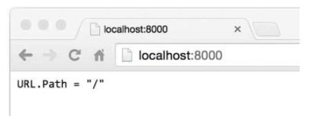
Es facil agregar funciones al servidor. Una adicion util es una URL especifica que devuelve un estado de algun tipo. Por ejemplo, esta version hace eco, pero tambien cuenta el numero de peticiones; una peticion a la URL /count devuelve el recuento hasta el momento, excluyendo la solicitud /count a si misma:
// Server2 es un servidor de eco y conteo minimopackagemainimport("fmt""log""net/http""sync")varmusync.Mutexvarcountintfuncmain(){http.HandleFunc("/",handler)http.HandleFunc("/count",counter)log.Fatal(http.ListenAndServe("localhost:8000",nil))}// handler hace eco del componente Path de la URL solicitida.funchandler(whttp.ResponseWriter,r*http.Request){mu.Lock()count++mu.Unlock()fmt.Fprintf(w,"URL.Path = %q\n",r.URL.Path)}// counter hace eco del numero de lamadas hasta ahora.funccounter(whttp.ResponseWriter,r*http.Request){mu.Lock()fmt.Fprintf(w,"Count %d\n",count)mu.Unlock()}
El servidor tiene dos manejadores, y la URL de la solicitud determina cual se llama: una solicitud por /count invoca a counter y todas los demas invocan a handler. Un patron de manejo que termina con una barra diagonal coincide con cualquier URL que tenga el patron como prefijo. Detras de escena, el servidor ejecuta el controlador para cada solicitud entrante en una gorutina separada para que pueda servir multiples solicitudes simultaneamente. Sin embargo, si dos solicitudes simultaneas intentan actualizar count al mismo tiempo, es posible que no se incremente consistentemente; El programa tendria un error grave llamado condicion de carrera (§9.1). Para evitar este problema, debemos asegurarnos de que a lo sumo solo una gorutina accede a la variable a la vez, que es el proposito de las llamadas a mu.Lock() y mu.Unlock() que rodean el acceso a count. Examinaremos mas de cerca a la concurrencia con variables compartidas en el Capitulo 9.
Como un ejemplo mas rico, la funcion de manejo puede informar sobre los encabezados y datos de formulario que recibe, haciendo que el servidor sea util para inspeccionar y depurar peticiones:
// handler responde a la peticion HTTP.funchandler(whttp.ResponseWriter,r*http.Request){fmt.Fprintf(w,"%s %s %s\n",r.Method,r.URL,r.Proto)fork,v:=ranger.Header{fmt.Fprintf(w,"Header[%q] = %q\n",k,v)}fmt.Fprintf(w,"Host = %q\n",r.Host)fmt.Fprintf(w,"RemoteAddr = %q\n",r.RemoteAddr)iferr:=r.ParseForm();err!=nil{log.Print(err)}fork,v:=ranger.Form{fmt.Fprintf(w,"Form[%q] = %q\n",k,v)}}
Este utiliza los campos de la estructura http.Request para producir una salida como esta:
GET /?q=query HTTP/1.1
Header["Accept-Encoding"] = ["gzip, deflate, sdch"]
Header["Accept-Language"] = ["en-US,en;q=0.8"]
Header["Connection"] = ["keep-alive"]
Header["Accept"] = ["text/html,application/xhtml+xml,application/xml;..."]
Header["User-Agent"] = ["Mozilla/5.0 (Macintosh; Intel Mac OS X 10_7_5)..."]
Host = "localhost:8000"
RemoteAddr = "127.0.0.1:59911"
Form["q"] = ["query"]
Observe como la llamada a ParseForm esta anidada dentro de una sentencia if. Go permite una declaracion simple, como una declaracion de variable local para preceder la sentencia if, lo que es particularmente util para el tratamiento de errores como en este ejemplo. Podriamos haberlo escrito como
err:=r.ParseForm()iferr!=nil{log.Print(err)}
la combinacion de las sentencias es mas corta y reduce el alcance de la variable err, que es una buena practica. Vamos a definir el alcance en la Seccion 2.7.
En estos programas, hemos visto tres tipos muy diferentes utilizados como flujos de salida. El programa fetch copia datos de la respuesta HTTP a os.Stdout, a un archivo, al igual que el programa lissajous. El programa fetchall arroja la respuesta copiando el flujo (mientras cuenta su longitud) de forma trivial en ioutil.Discard. Y el anterior servidor web utiliza fmt.Fprintf para escribir una representacion del navegador http.ResponseWriter.
Aunque estos tres tipos difieren en los detalles de lo que hacen, todos ellos satisfacen una interfaz comun, permitiendo que cualquiera pueda ser utilizado cuando sea necesario crear un flujo de salida. Esa interfaz, llamada io.Writer, se discute en la Seccion 7.1.
El mecanismo de interfaz de Go es el tema del Capitulo 7, pero para dar una idea de lo que es capaz de hacer, vamos a ver lo facil que es combinar el servidor web con la funcion lissajous para que los archivos GIF animados se escriben no en la salida estandar, en su lugar en el cliente HTTP. Simplemente agregue estas lineas al servidor web:
El segundo argumento de la funcion HandleFunc se conoce como una e(funcion literal), es decir, una funcion anonima definida en su punto de uso. Vamos a explicar mas a fondo en la Seccion 5.6.
Una vez que haya realizado este cambio, visite http://localhost:8000 en su navegador. Cada vez que cargue la pagina, vera una nueva animacion como la de la Figura 1.3.
Ejercicio 1.12: Modificar el servidor de Lissajous para leer valores de los parametros de la URL. Por ejemplo, es posible disponer de forma que una URL como http://localhost:8000/?cycles=20 establece el numero de ciclos a 20 en lugar del predeterminado 5. Utilice la funcion strconv.Atoi para convertir el parametro de string a un entero. Puede ver su mediante con go doc strconv.Atoi.
Figura 1.3. Figuras animadas de Lissajous en un navegador.
Cabos sueltos
Hay mucho mas de Go de lo que hemos cubierto en esta introduccion rapida. Aqui hay algunos temas que apenas hemos tocado o omitido por completo, con tratamiento suficiente para empezar a familiarizarse con ellos antes de un tratamiento completo.
Control flow
Cubrimos los dos estados de flujos de control fundamentales, if y for, pero no la sentencia switch, que es una via de multiples ramas. Aqui hay un pequeño ejemplo:
switchcoinflip(){case"heads":heads++case"tails":tails++default:fmt.Println("landed on edge!")}
El resultado de llamar a coinflip se compara con el valor de cada caso. Los casos se evaluan de arriba a abajo, por lo que se ejecuta la primera coincidencia. El caso opcional default coincide si ninguno de los otros casos lo hace; Puede colocarse en cualquier lugar. Los casos no caigan uno sobre otro, como en lenguajes tipo C (aunque hay una poco utilizada declaracion fallthrough que anula este comportamiento).
Un switch no necesita un operando; Solo puede enumerar los casos, cada uno de los cuales es una expresion booleana:
Esta forma se llama switch sin etiquetas; que es equivalente a switch true.
Al igual que las sentencias for e if, un switch puede incluir una declaracion, una unica declaracion de variables compacta opcional, una declaracion de incremento o asignacion, o una funcion de llamada que se puede utilizar para establecer un valor antes de ser puesto a prueba.
Las declaraciones break y continue modifican el flujo de control. Un break proboca control se reanude la siguiente sentencia despues de la secuenca for, switch, o select (que veremos mas adelante) mas anidada, y como hemos visto en la Seccion 1.3, un continue proboca que el bucle for mas interno inicie su proxima iteracion. Las declaraciones pueden etiquetarse de forma que un break y continue pueden referirse a ellos, por ejemplo, para salir de varios bucles anidados a la vez o para iniciar la siguiente iteracion del bucle mas externo. Hay incluso una sentencia goto, aunque esta destinada para el codigo generado por la maquina, sin el uso regular por los programadores.
Tipos con nombre
Una declaracion type hace que sea posible dar un nombre a un tipo existente. Puesto que los tipos de la estructura son a menudo largos, se nombran casi siempre. Un ejemplo conocido es la definicion de un tipo para un sistema de graficos 2-D Point:
typePointstruct{X,Yint}varpPoint
Las declaracion de tipos y tipos con nombre se trata en el Capitulo 2.
Punteros
Go proporciona punteros, es decir, los valores que contienen la direccion de una variable. En algunos lenguajes, notablemente C, los punteros son relativamente sin restricciones. En otros lenguajes, los punteros son disfrazados como referencias, y no hay mucho que se pueda hacer con ellos, excepto pasar a su alrededor. Go toma una posicion en algun lugar en el medio. Los punteros son explicitamente visibles. operador & obtiene la direccion de una variable, y el operador * recupera la variable a la que se refiere el puntero, pero no hay aritmetica de punteros. Vamos a explicar los punteros en la Seccion 2.3.2.
Metodos e interfaces
Un metodo es una funcion asociada con un tipo de dato; Go es inusual en el echo que los metodos se pueden vincular a casi cualquier tipo nombrado. Los Metodos son cubiertos en el Capitulo 6. Las interfaces son tipos abstractos que nos permiten manejar tipos concretos diferentes de la misma manera basados en que metodos tienen, no como se representan o implementan. Las interfaces son el tema del Capitulo 7.
Paquetes
Go llega con una extensa libreria de paquetes utiles estandar, y la comunidad Go ha creado y compartido muchas mas. La programacion es a menudo mas sobre el uso de paquetes existentes que sobre la escritura de codigo propio original. A lo largo del libro, vamos a señalar un par de docenas de los paquetes estandar mas importantes, pero hay muchos mas que no tenemos espacio para mencionar, y no podemos proporcionar nada remotamente cercana a una referencia completa para cualquier paquete.
Antes de embarcarse en cualquier programa nuevo, es una buena idea ver si ya existen paquetes que podrian ayudarle a hacer su trabajo mas facilmente. Puede encontrar un indice de los paquetes de librerias estandar en https://golang.org/pkg y los paquetes aportados por la comunidad en https://godoc.org. La herramienta go doc hace que estos documentos sean facilmente accesibles desde la linea de comandos:
$ go doc http.ListenAndServe
package http // import "net/http"
func ListenAndServe(addr string, handler Handler) error
ListenAndServe listens on the TCP network address addr and then
calls Serve with handler to handle requests on incoming connections.
...
Comentarios
Ya hemos mencionado los comentarios de documentacion al inicio de un programa o paquete. Tambien es un buen estilo escribir un comentario antes de la declaracion de cada funcion para especificar su comportamiento. Estas convenciones son importantes, ya que se utilizan por herramientas como go doc y godoc para localizar y monstrar la documentacion en pantalla (§10.7.4).
Para los comentarios que abarcan varias lineas o aparecen dentro de una expresion o declaracion, tambien existe la conocida notacion /* ... */ de otros lenguajes. Este tipo de comentarios se utilizan a veces al principio de un archivo en un gran bloque de texto explicativo para evitar un // en cada linea. Dentro de un comentario, // y /* no tienen ningun significado especial, por que los comentarios no se anidan.
Estructura del programa
En Go, como en cualquier otro lenguaje de programacion, se construyen grandes programas a partir de un pequeño conjunto de construcciones basicas. Las variables almacenan los valores. Las expresiones simples se combinan en las mas grandes con operaciones como suma y resta. Los tipos basicos se reunen en agregados como matrices y estructuras. Las expresiones se utilizan en declaraciones cuyo orden de ejecucion es determinado por instrucciones de control de flujo como if y for. Las declaraciones se agrupan en funciones por aislamiento y reutilizacion. Las funciones se agrupan en archivos de codigo fuente y paquetes.
Vimos ejemplos de la mayoria de estos en el capitulo anterior. En este capitulo, vamos a entrar en mas detalles sobre los elementos estructurales basicos de un programa Go. Los programas de ejemplo son intencionalmente simples, por lo que podemos centrarnos en el lenguaje sin desviarnos de complicados algoritmos o estructuras de datos.
Nombres
Los nombres de las funciones Go, variables, constantes, tipos, etiquetas de instrucciones y paquetes siguen una regla simple: un nombre comienza con una letra (es decir, cualquier cosa que Unicode considera una letra) o un guion bajo y puede tener cualquier numero de letras adicionales, Digitos y giones bajos. Las mayusculas importan: heapSort y Heapsort son nombres diferentes.
Go tiene 25 palabras claves como if y switch que solo puede utilizarse cuando la sintaxis lo permita; No pueden usarse como nombres.
break default func interface select
case defer go map struct
chan else goto package switch
const fallthrough if range type
continue for import return var
Ademas, hay cerca de tres docenas de nombres predeclarados como int y true para las constantes, tipos y funciones incorporadas:
make len cap new append copy close delete
complex real imag
panic recover
Estos nombres no estan reservados, por lo que puede utilizarlos en declaraciones. Vamos a ver un puñado de lugares donde redeclarar uno de ellos tiene sentido, pero tenga cuidado con la potencial confusion.
Si una entidad se declara dentro de una funcion, esta es local a esa funcion. Si se declara fuera de una funcion, sin embargo, es visible en todos los archivos del paquete al que pertenece. La primer letra de un nombre determina su visibilidad a traves de los limites del paquete. Si el nombre comienza con una letra mayuscula, se exporta, lo que significa que es visible y accesible fuera de su propio paquete y puede hacer referencia a otras partes del programa, al igual que con Printf en el paquete fmt. Los nombres de los paquetes estan siempre en minusculas.
No hay limite en la longitud del nombre, pero la convencion y el estilo en los programas de Go se inclinan hacia nombres cortos, especialmente para variables locales con ambitos pequeños; es mucho mas probable ver variables con nombre i que indiceDelBucle. Generalmente, cuanto mayor es el alcance de un nombre, mas largo y mas significativo debe ser.
Estilisticamente, los programadores Go utilizan la notacion camello cuando se forma nombres mediante la combinacion de palabras; Es decir, las letras mayusculas internas se prefieren sobre los subrayados interiores. Por lo tanto las librerias estandar tienen funciones con nombres como QuoteRuneToASCII y parseRequestLine pero nunca quote_rune_to_ASCII o parse_request_line. Las letras de acronimos y siglas como ASCII y HTML siempre se prestan en el mismo tipo, por lo que una funcion sera llamada htmlEscape, HTMLEscape o escapeHTML, pero no escapeHtml.
Declaraciones
Una declaracion nombra una entidad del programa y especifica todas o algunas de sus propiedades. Hay cuatro tipos principales de declaraciones: var, const, type y func. Hablaremos sobre variables y tipos en este capitulo, constantes en el Capitulo 3, y funciones en el Capitulo 5.
Un programa Go se almacena en uno o mas archivos cuyos nombres terminan en .go. Cada archivo comienza con una declaracion package que indica de que paquete forma parte el archivo. La declaracion package es seguido por cualquier declaraciones import, y luego una secuencia de declaraciones a nivel de paquete de tipos, variables, constantes y funciones, en cualquier orden. Por ejemplo, este programa declara una constante, una funcion y un par de variables:
// Boiling imprime el punto de ebullicion del agua.packagemainimport"fmt"constboilingF=212.0funcmain(){varf=boilingFvarc=(f-32)*5/9fmt.Printf("boiling point = %g°F or %g°C\n",f,c)// Salida:// boiling point = 212°F or 100°C}
La constante boilingF es una declaracion de nivel de paquete (como es main), mientras que las variables f y c son locales a la funcion main. El nombre de cada entidad de nivel de paquete es visible no solo en todo el archivo de origen que contiene su declaracion, sino en todos los archivos del paquete. Por el contrario, las declaraciones locales son visibles solo dentro de la funcion en la que se declaran y tal vez solo dentro de una pequeña parte de ella.
Una declaracion de funcion tiene un nombre, una lista de parametros (las variables cuyos valores se proporcionan por quien llama a la funcion), una lista opcional de resultados y el cuerpo de la funcion, que contiene las sentencias que definen lo que hace la funcion. La lista de resultados se omite si la funcion no devuelve nada. La ejecucion de la funcion comienza con la primer instruccion y continua hasta que encuentra una instruccion de retorno o llega al final de una funcion que no tiene resultados. El control y los resultados se devuelven a quien hiso la llamada.
Hemos visto un buen numero de funciones ya y hay muchas mas por venir, incluyendo una extenso tratamiento en el Capitulo 5, asi que esto es solo un esbozo. La funcion fToC a continuacion, encapsula la logica de conversion de temperatura de manera que se define solo una vez, pero puede utilizarse desde multiples lugares. Aqui main llama dos veces, utilizando los valores de las constantes de dos locales diferentes:
// Ftoc imprime dos conversiones de Fahrenheit a Celsius.packagemainimport"fmt"funcmain(){constfreezingF,boilingF=32.0,212.0fmt.Printf("%g°F = %g°C\n",freezingF,fToC(freezingF))// "32°F = 0°C"fmt.Printf("%g°F = %g°C\n",boilingF,fToC(boilingF))// "212°F = 100°C"}funcfToC(ffloat64)float64{return(f-32)*5/9}
Variables
Un declaracion var crea una variable de un tipo particular, vinculando un nombre a la misma, y se define su valor inicial. Cada declaracion tiene la forma general
varnombretipo=expresion
O bien el tipo o la parte = expresion pueden omitirse, pero no ambos. Si se omite el tipo, se determina mediante la expresion del inicializador. Si se omite la expresion, el valor inicial es el valor cero para el tipo, que es 0 para los numeros, false para booleanos, "" para string, y nil para interfaces y tipos de referencia (slices, punteros, mapa, canal, funcion). El valor cero de un tipo agregado como una matriz o una estructura tiene el valor cero de todos sus elementos o campos.
El mecanismo de valor cero asegura que una variable siempre tenga un valor bien definido de su tipo; En Go no hay tal cosa como una variable no inicializada. Esto simplifica el codigo y, a menudo, asegura un comportamiento sensible de las condiciones limite sin trabajo adicional. Por ejemplo,
varsstringfmt.Println(s)// ""
Imprime una cadena vacia, en lugar de causar algun tipo de error o comportamiento impredecible. Los programadores Go, suelen hacer algun esfuerzo por hacer el valor cero de un tipo mas complicado significativo, por lo que las variables comienzan su vida en un estado util.
Es posible declarar y opcionalmente inicializar un conjunto de variables en una sola declaracion, con una lista de expresiones correspondiente. Omitir el tipo permite la declaracion de multiples variables de diferentes tipos:
Los inicializadores pueden ser valores literales o expresiones arbitrarias. Las variables a nivel de paquete se inicializan antes del inicio de main (§2.6.2), y las variables locales se inicializan a medida que se encuentran sus declaraciones durante la ejecucion de la funcion.
Tambien se puede inicializar un conjunto de variables llamando a una funcion que devuelve valores multiples:
varf,err=os.Open(name)// os.Open returns a file and an error
Declaraciones de Variables Compacta
Dentro de una funcion, una forma alternativa llamada declaracion de variables compacta se puede usar para declarar e inicializar las variables locales. Toma la forma nombre := expresion, y el tipo de nombre esta determinada por el tipo de expresion. Aqui estan tres de las muchas declaraciones de variables compacta en la funcion lissajous (§1.4):
Debido a su brevedad y flexibilidad, la declaracion compacta de variables se utilizan para declarar e inicializar la mayoria de las variables locales. Una sentencia var tiende a ser reservado para las variables locales que necesitan un tipo explicito que difiere de la de la expresion de inicializacion, o para cuando se le asignara un valor mas adelante la variable y su valor inicial no es importante.
i:=100// an intvarboilingfloat64=100// a float64varnames[]stringvarerrerrorvarpPoint
Como con las sentencias var, multiples variables pueden ser declaradas e inicializadas en la misma declaracion compacta de variables,
i,j:=0,1
pero las declaraciones con multiples expresiones de inicializador deben utilizarse solo cuando ayudan a la legibilidad, como en agrupaciones cortas y naturales, como la parte de inicializacion de un bucle for.
Tenga en cuenta que := es una declaracion, mientras que = es una asignacion. Una declaracion de multiples variables no debe confundirse con una asignacion de tuplas (§2.4.1), en la que se asigna a cada variable en el lado de la izquierda el valor correspondiente de la parte derecha:
i,j=j,i// swap values of i and j
Al igual que en declaraciones var ordinarias, la declaraciones de variables compacta se puede utilizar para las llamadas a funciones como os.Open que devuelve dos o mas valores:
Un punto sutil pero importante: una declaracion de variables compacta no declara necesariamente todas las variables en su lado izquierdo. Si algunos de ellos ya fueron declarados en el mismo bloque lexico (§2.7), entonces la declaracion de variables compacta se comporta como una asignacion a esas variables.
En el codigo siguiente, la primera sentencia declara tanto in como err. El segundo declara out pero solo asigna un valor a la variable err existente.
Sin embargo, una declaracion de variable corta debe declarar al menos una variable nueva, por lo que este codigo no compilara:
f,err:=os.Open(infile)// ...f,err:=os.Create(outfile)// error de compilacion: no hay nuevas variables
La correccion consiste en utilizar una asignacion ordinaria para la segunda instruccion.
Una declaracion de variable compacta actua como una asignacion solo a variables que ya estaban declaradas en el mismo bloque lexico; Las declaraciones en un bloque externo se ignoran. Veremos ejemplos de esto al final del capitulo.
Punteros
Una variable es una pieza de almacenamiento que contiene un valor. Las variables creadas por las declaraciones se identifican por un nombre, como x, pero muchas variables se idientifican solo por expresion como x[i] o x.f. Todas estas expresiones leen el valor de una variable, excepto cuando aparecen en el lado izquierdo de una asignacion, en cuyo caso se asigna un nuevo valor a la variable.
El valor de un puntero es la direccion de una variable. Un puntero es, por tanto, la ubicacion en la que se almacena un valor. No todos los valores tienen una direccion, pero todas las variables si. Con un puntero, podemos leer o actualizar el valor de una variable indirectamente, sin utilizar o incluso saber el nombre de la variable, si es que tiene un nombre.
Si se declara una variable var x int, la expresion &x (direccion de x) produce un puntero a una variable de de tipo entero, es decir, un valor de tipo *int, que se pronuncia puntero a int. Si este valor se llama p, decimos p apunta a x," o equivalentemente p contiene la direccion de x. La variable a la que p apunta se escribe *p. La expresion *p produce el valor de dicha variable, un int, pero desde *p indica una variable, tambien puede aparecer en la parte izquierda de una asignacion, en cuyo caso la asignacion actualiza la variable.
x:=1p:=&x// p, of type *int, points to xfmt.Println(*p)// "1"*p=2// equivalent to x = 2fmt.Println(x)// "2"
Cada componente de una variable de tipo agregado–un campo de una estructura o un elemento de una matriz– es tambien una variable y por lo tanto tiene una direccion tambien.
Las variables se describen a veces como valores direccionables. Expresiones que denotan variables son las unicas expresiones a las que el operador de direccion & se puede aplicar.
El valor cero de un puntero de cualquier tipo es nil. La prueba de p != nil es verdadera si p apunta a una variable. Los punteros son comparables; Dos punteros son iguales si y solo si apuntan a la misma variable o ambos son nil.
Es perfectamente seguro para una funcion devolver la direccion de una variable local. Por ejemplo, en el codigo siguiente, la variable local v creada por la llamada a f seguira existiendo incluso despues de devolver la llamada, y el puntero p todavia se referira a ella:
varp=f()funcf()*int{v:=1return&v}
Cada llamada a f devuelve un valor distinto:
fmt.Println(f()==f())// "false"
Debido a que un puntero contiene la direccion de una variable, pasar un argumento de puntero a una funcion hace posible que la funcion actualice la variable que se paso indirectamente. Por ejemplo, esta funcion incrementa la variable a la que apunta su argumento y devuelve el nuevo valor de la variable para que pueda ser utilizada en una expresion:
funcincr(p*int)int{*p++// incrementa a lo que apunta p; no cambia preturn*p}v:=1incr(&v)// efecto secundario: ahora v es 2fmt.Println(incr(&v))// "3" (y v es 3)
Cada vez que se toma la direccion de una variable o se copia un puntero, creamos nuevos alias o maneras de identificar a la misma variable. Por ejemplo, *p es un alias para v. Los punteros como alias son utiles porque nos permite acceder a una variable sin usar su nombre, pero esto es una espada de doble filo: para encontrar todas las sentencias que acceden a una variable, tenemos que conocer todos sus alias. No son solo los punteros que crean alias; los alias tambien se crean cuando copiamos valores de otros tipos de referencia como slices, mapas y canales, e incluso estructuras, matrices e interfaces que contienen estos tipos.
Los punteros son clave para el paquete flag, que utiliza los argumentos de linea de comandos de un programa, para establecer los valores de ciertas variables distribuidas a lo largo del programa. Para ilustrar, esta variacion en el anterior comando echo tiene dos indicadores opcionales: -n provaca que echo omita el salto de linea final que normalmente se imprime, y -s sep hace que se separe los argumentos de salida por el contenido de la cadena sep en lugar de El espacio unico predeterminado. Como esta es nuestra cuarta version, el paquete se llama gopl.io/ch2/echo4.
// Echo4 imprime sus argumentos de linea de comandos.packagemainimport("flag""fmt""strings")varn=flag.Bool("n",false,"omit trailing newline")varsep=flag.String("s"," ","separator")funcmain(){flag.Parse()fmt.Print(strings.Join(flag.Args(),*sep))if!*n{fmt.Println()}}
La funcion flag.Bool crea una nueva variable bandera de tipo bool. Toma tres argumentos: el nombre de la bandera ("n"), el valor por defecto de la variable (false), y un mensaje que se imprimira si el usuario proporciona un argumento invalido, una bandera invalida, o -h o -help. Del mismo modo, flag.String toma un nombre, un valor por defecto, y un mensaje, y crea una variable string. Las variables sep y n son punteros a las variables de la bandera, que deben accederse indirectamente como *sep y *n.
Cuando se ejecuta el programa, debe llamar a flag.Parse antes de utilizar las banderas, para actualizar las variables bandera de sus valores por defecto. Los argumentos que no sean banderas estan disponibles mediante flag.Args() como un slice de strings. Si flag.Parse encuentra un error, se imprime un mensaje sobre el uso y llama a os.Exit(2) para terminar el programa.
Vamos a ejecutar algunos casos de prueba a echo:
$ go build gopl.io/ch2/echo4
$ ./echo4 a bc def
a bc def
$ ./echo4 -s / a bc def
a/bc/def
$ ./echo4 -n a bc def
a bc def$
$ ./echo4 -help
Usage of ./echo4:
-n omit trailing newline
-s string
separator (default " ")
La Funcion new
Otra forma de crear una variable es utilizar la funcion nativa de new. La expresion new(T) crea una variable sin nombre del tipo T, la inicializa al valor cero de T, y devuelve su direccion, que es un valor de tipo *T.
p:=new(int)// p, de tipo *int, apunta a una varible int sin nombrefmt.Println(*p)// "0"*p=2// establece el int sin nombre a 2fmt.Println(*p)// "2"
Una variable creada con new no es diferente de una variable local ordinaria cuya direccion es tomada, excepto que no hay necesidad de inventar (y declarar) un nombre ficticio, y podemos usar new(T) en una expresion. De este modo new es solo una conveniencia sintactica, no es una idea fundamental:
las dos funciones newInt a continuacion tienen comportamientos identicos.
funcnewInt()*int{returnnew(int)}
funcnewInt()*int{vardummyintreturn&dummy}
Cada llamada a new devuelve una variable distinta con una direccion unica:
p:=new(int)q:=new(int)fmt.Println(p==q)// "false"
Hay una excepcion a esta regla: dos variables cuyo tipo no lleva ninguna informacion y por lo tanto es de tamaño cero, como struct{} o [0]int, puede, dependiendo de la aplicacion, tener la misma direccion.
La funcion new se utiliza relativamente rara vez porque las variables sin nombre mas comunes son de tipo estructura, para el que la sintaxis literal struct (§4.4.1) es mas flexible.
Dado que new es una funcion nativa, no una palabra clave, es posible redefinir el nombre para algo distinto dentro de una funcion, por ejemplo:
funcdelta(old,newint)int{returnnew-old}
Por supuesto, dentro de delta, la funcion nativa new no esta disponible.
Tiempo de Vida de las Variables
La vida util de una variable es el intervalo de tiempo durante el cual existe a medida que el programa se ejecuta. La duracion de una variable a nivel de paquete, es la ejecucion completa del programa. Por el contrario, las variables locales tienen una vida util dinamica: una nueva instancia se crea cada vez que se ejecuta la instruccion de declaracion, y la variable vive hasta que se vuelve inaccesible, momento en el que su almacenamiento se puede reciclar. Los parametros de funcion y los resultados tambien son variables locales; Se crean cada vez que se llama a la funcion que las encierra.
Por ejemplo, en este extracto del programa de Lissajous de la Seccion 1.4,
la variable t se crea cada vez que el bucle for comienza, y nuevas variables x y y se crean en cada iteracion del bucle.
¿Como sabe el recolector de basura que el almacenamiento de una variable puede ser recuperado? La historia completa es mucho mas detallada de lo que necesitamos aqui, pero la idea basica es que cada variable a nivel de paquete, y cada variable local de cada funcion actualmente activa, puede ser el inicio o la raiz de una ruta a la variable en cuestion, sugiendo punteros y otros tipos de referencias que finalmente conducen a la variable. Si no existe tal ruta, la variable se ha vuelto inaccesible, por lo que ya no puede afectar el resto del calculo.
Debido a que el tiempo de vida de una variable se determina por ser o no accesible, una variable local puede sobrevivir a una sola iteracion del bucle que lo rodea. Puede seguir existiendo incluso despues de que su funcion de inclusion ha regresado.
Un compilador puede elegir por asignar las variables locales en el monticulo o en la pila, pero, tal vez sorprendentemente, esta eleccion no depende de si se utiliza var o new para declarar la variable.
varglobal*intfuncf(){varxintx=1global=&x}
funcg(){y:=new(int)*y=1}
Aqui, x debe ser asignado al monticulo porque todavia es accesible desde la variable global despues de haber devuelto f, a pesar de ser declarado como una variable local; decimos que x escapa de f. Por el contrario, cuando g regresa la variable *y se vuelve inaccesible y se pueden reciclar. Dado que *y no escapa de g, es seguro para el compilador asignar *y en la pila, a pesar de que se asigno con new. En cualquier caso, la nocion de escapar no es algo de lo que tengas que preocuparte para escribir codigo correcto, aunque es bueno tenerlo en cuenta durante la optimizacion de rendimiento, ya que cada variable que escapa requiere una asignacion de memoria adicional.
La recoleccion de basura es una tremenda ayuda para escribir programas correctos, pero no elimina la carga de pensar en la memoria. No es necesario asignar y liberar memoria de forma explicita, pero para escribir programas eficientes es necesario tener en cuenta la duracion de las variables. Por ejemplo, mantener punteros innecesarios a objetos de corta duracion dentro de objetos de larga vida, especialmente variables globales, evitara que el recolector de basura recupere los objetos de corta duracion.
Asignaciones
El valor contenido en una variable es actualizado por una instruccion de asignacion, que en su forma mas simple tiene una variable a la izquierda del signo = y una expresion a la derecha.
x=1// variable con nombre*p=true// variable indirectaperson.name="bob"// campo de ustructuracount[x]=count[x]*scale// elemento de arreglo, slice o mapa
Cada uno de los operadores aritmeticos y operadores binarios a nivel de bits tiene su correspondiente operador de asignacion permitiendo, por ejemplo, reescribir la ultima instruccion como
count[x]*=scale
Lo que nos ahorra tener que repetir (y reevaluar) la expresion de la variable.
Las variables numericas tambien se pueden incrementar y disminuir con las declaraciones ++ y --:
v:=1v++// igual a v = v + 1; v es 2v--// igual a v = v - 1; v es 1 de nuevo
Asignacion de Tuplas
Otra forma de asignacion, conocida como asignacion de tuplas, permite asignar varias variables a la vez. Todas las expresiones del lado derecho se evaluan antes de actualizar cualquiera de las variables, haciendo que este formato sea mas util cuando algunas de las variables aparecen en ambos lados de la asignacion, como sucede, por ejemplo, al intercambiar los valores de dos variables:
x,y=y,xa[i],a[j]=a[j],a[i]
O cuando se calcula el mayor comun divisor de dos enteros:
funcgcd(x,yint)int{fory!=0{x,y=y,x%y}returnx}
O al calcular el n-esimo numero de Fibonacci iterativamente:
La asignacion de tuplas tambien puede hacer una secuencia de tareas triviales mas compacta,
i,j,k=2,3,5
Aunque por una cuestion de estilo, evite la forma de tupla si las expresiones son complejas; una secuencia de declaraciones separadas es mas facil de leer.
Ciertas expresiones, como una llamada a una funcion con resultados multiples, producen varios valores. Cuando se utiliza una llamada de este tipo en una instruccion de asignacion, el lado izquierdo debe tener tantas variables como la funcion tenga resultados.
f,err=os.Open("foo.txt")// Llamada de funcion devuelve dos valores
A menudo, las funciones utilizan estos resultados adicionales para indicar algun tipo de error, ya sea devolviendo un error como en la llamada a os.Open, o un bool, generalmente llamado ok. Como veremos en capitulos posteriores, hay tres operadores que a veces se comportan de esta manera tambien. Si la busqueda en un mapa (§4.3), un tipo de asercion (§7.10), o la recepcion de un canal (§8.4.2) aparece en una asignacion en la que se esperan dos resultados, cada una produce un resultado booleano adicional:
v,ok=m[key]// map lookupv,ok=x.(T)// type assertionv,ok=<-ch// channel receive
Al igual que con la declaracion de variables, podemos asignar valores no deseados al identificador en blanco:
_,err=io.Copy(dst,src)// discard byte count_,ok=x.(T)// check type but discard result
Asignacion
Las sentencias de asignacion son una forma explicita de asignacion, pero hay muchos lugares en un programa donde se produce una asignacion implicita: una llamada de funcion asigna implicitamente los valores de los argumentos a las variables de parametros correspondientes; una instruccion return asigna implicitamente los operandos de retorno a las variables de resultado correspondientes; y una expresion literal para un tipo compuesto (§4.2), tal como esta slice:
medallas:=[]string{"oro","plata","bronce"}
Implicitamente asigna cada elemento, como si se hubiera escrito asi:
Los elementos de mapas y canales, aunque no son variables ordinarias, tambien estan sujetos a asignaciones implicitas similares.
Una asignacion, explicita o implicita, siempre es legal si el lado izquierdo (la variable) y el lado derecho (el valor) tienen el mismo tipo. En terminos mas generales, la asignacion es legal solo si el valor es asignable al tipo de la variable.
La regla para la asignabilidad tiene casos para varios tipos, por lo que vamos a explicar el caso relevante a medida que introducimos cada nuevo tipo. Para los tipos que hemos discutido hasta ahora, las reglas son simples: los tipos deben coincidir exactamente, y nil puede ser asignado a cualquier variable de interfaz o tipo de referencia. Las constantes (§3.6) tienen reglas mas flexibles para la asignacion que evitan la necesidad de conversiones mas explicitos.
Si dos valores pueden compararse con == y != se relaciona con la asignacion: en cualquier comparacion, el primer operando debe ser asignable al tipo del segundo operando, o viceversa. Al igual que con la asignabilidad, vamos a explicar los casos relevantes para la comparabilidad cuando presentamos cada nuevo tipo.
Declaraciones de tipo
El tipo de una variable o expresion define las caracteristicas de los valores que puede tomar, como su tamaño (numero de bits o numero de elementos, tal vez), como se representan internamente, las operaciones intrinsecas que se pueden realizar en ellos, Y los metodos asociados con ellos.
En cualquier programa hay variables que comparten la misma representacion pero que significan conceptos muy diferentes. Por ejemplo, un int podria ser usado para representar un indice de bucle, una marca de tiempo, un descriptor de archivo, o un mes; un float64 podria representar una velocidad en metros por segundo o una temperatura en una de varias escalas; y un string podria representar una contraseña o el nombre de un color.
Una declaracion type define un nuevo tipo con nombre que tiene el mismo tipo subyacente como un tipo existente. El tipo nombrado proporciona una manera de separar los diferentes usos y quizas incompatibles del tipo subyacente para que no puedan ser mezclados involuntariamente.
typenameunderlying-type
Las declaraciones de tipo aparecen mas a menudo en el nivel de paquete, donde el tipo nombrado es visible en todo el paquete, y si el nombre se exporta (inicia con una letra mayuscula), es accesible desde otros paquetes tambien.
Para ilustrar la declaracion de tipos, vamos a convertir las diferentes escalas de temperatura en tipos distintos:
// Paquete tempconv realiza calculos de temperatura Celsius y Fahrenheit.packagetempconvimport"fmt"typeCelsiusfloat64typeFahrenheitfloat64const(AbsoluteZeroCCelsius=-273.15FreezingCCelsius=0BoilingCCelsius=100)funcCToF(cCelsius)Fahrenheit{returnFahrenheit(c*9/5+32)}funcFToC(fFahrenheit)Celsius{returnCelsius((f-32)*5/9)}
Este paquete define dos tipos, Celsius y Fahrenheit, para las dos unidades de temperatura. A pesar de que ambos tienen el mismo tipo subyacente, float64, no son del mismo tipo, por lo que no pueden compararse o ser combinados en expresiones aritmeticas. Distinguir los tipos hace posible evitar errores como combinar inadvertidamente temperaturas en las dos escalas diferentes; una conversion de tipo explicita como Celsius(t) o Fahrenheit(t) es necesario para convertir desde un float64. Celsius(t) y Fahrenheit(t) son conversiones, no llamadas a funcion. No cambian el valor o la representacion de ninguna manera, pero hacen que el cambio de significado sea explicito. Por otro lado, las funciones CToF y FToC convertir entre las dos escalas; Estas devuelven valores diferentes.
Para cada tipo T, hay una operacion de conversion correspondiente T(x) que convierte el valor x al tipo T. Se permite una conversion de un tipo a otro si ambos tienen el mismo tipo subyacente, o si ambos son tipos apuntador sin nombre que apuntan a variables del mismo tipo subyacente; Estas conversiones cambian el tipo pero no la representacion del valor. Si x es asignable a T, se permite una conversion, pero suele ser redundante,
Las conversiones tambien se permiten entre tipos numericos, y entre la cadena y algunos tipos de slices, como veremos en el siguiente capitulo. Estas conversiones pueden cambiar la representacion del valor. Por ejemplo, la conversion de un numero de coma flotante a un entero descarta cualquier parte fraccionaria, y la conversion de una cadena a un slice []byte asigna una copia de los datos de cadena. En cualquier caso, una conversion nunca falla en tiempo de ejecucion.
El tipo subyacente de un tipo con nombre determina su estructura y representacion, asi como el conjunto de operaciones intrinsecas que admite, que son iguales que si el tipo subyacente se hubiera utilizado directamente. Eso significa que los operadores aritmeticos funcionan igual para Celsius y Fahrenheit como lo hacen para float64, como se podria esperar.
fmt.Printf("%g\n",BoilingC-FreezingC)// "100" °CboilingF:=CToF(BoilingC)fmt.Printf("%g\n",boilingF-CToF(FreezingC))// "180" °Ffmt.Printf("%g\n",boilingF-FreezingC)// error de compilacion: tipo incorrecto
Los operadores de comparacion como == y < tambien se puede utilizar para comparar un valor de un tipo con nombre a otro del mismo tipo, o a un valor del tipo subyacente. Pero dos valores de diferentes tipos con nombre no pueden compararse directamente:
varcCelsiusvarfFahrenheitfmt.Println(c==0)// "true"fmt.Println(f>=0)// "true"fmt.Println(c==f)// error de compilacion: tipo incorrectofmt.Println(c==Celsius(f))// "true"!
Anote cuidadosamente el ultimo caso. A pesar de su nombre, la conversion de tipo Celsius(f) no cambia el valor de su argumento, a su tipo. La prueba es cierto porque c y f son ambos cero.
Un tipo con nombre puede proporcionar conveniencia de notacion si ayuda a evitar escribir tipos complejos una y otra vez. La ventaja es pequeña cuando el tipo subyacente es tan simple como float64, pero grande para los tipos complicados, como veremos cuando hablemos de estructuras.
Los tipos nombrados tambien permiten definir nuevos comportamientos para los valores del tipo. Estos comportamientos se expresan como un conjunto de funciones asociadas con el tipo, llamado metodos del tipo. Veremos los metodos en detalle en el capitulo 6, pero daremos una idea del mecanismo aqui.
La siguiente declaracion, en la que el parametro Celsiusc aparece antes del nombre de la funcion, se asocia con el tipo Celsius un metodo llamado String que devuelve c como un valor numerico seguido por °C:
Muchos tipos declarar un metodo String de esta forma debido a que controla como aparecen los valores del tipo cuando se imprimen en una cadena con el paquete fmt, como veremos en la Seccion 7.1.
c:=FToC(212.0)fmt.Println(c.String())// "100°C"fmt.Printf("%v\n",c)// "100°C"; no es necesario llamar a String explicitamentefmt.Printf("%s\n",c)// "100°C"fmt.Println(c)// "100°C"fmt.Printf("%g\n",c)// "100"; no llama a Stringfmt.Println(float64(c))// "100"; no llama a String
Paquetes y Ficheros
Los paquetes en Go sirven a los mismos propositos que las librerias o modulos en otros lenguajes, soportando modularidad, encapsulacion, compilacion separada y reutilizacion. El codigo fuente de un paquete reside en uno o mas archivos .go, por lo general en un directorio cuyo nombre termina con la ruta de importacion; por ejemplo, los archivos del paquete gopl.io/ch1/helloworld se almacenan en el directorio $GOPATH/src/gopl.io/ch1/helloworld.
Cada paquete sirve como un espacio de nombres separado para sus declaraciones. Dentro del paquete image, por ejemplo, el identificador Decode se refiere a una funcion diferente de la que el mismo identificador en el paquete unicode/utf16. Para hacer referencia a una funcion desde fuera de su paquete, debemos calificar el identificador para hacer explicito si nos referimos a image.Decode o utf16.Decode.
Los paquetes tambien nos permiten ocultar informacion controlando que nombres son visibles fuera del paquete, o exportados. En Go, una regla simple regula que identificadores se exportan y cuales no: los identificadores exportados comienzan con una letra mayuscula.
Para ilustrar los fundamentos, supongamos que nuestro software de conversion de temperatura se ha vuelto popular y queremos ponerlo a disposicion de la comunidad Go como un nuevo paquete. ¿Como hacemos eso?
Vamos a crear un paquete llamado gopl.io/ch2/tempconv, una variacion del ejemplo anterior. (Aqui hemos hecho una excepcion a nuestra regla habitual de ejemplos de numeracion en secuencia, de modo que la ruta del paquete puede ser mas realista.) El propio paquete se almacena en dos archivos para mostrar como se accede a las declaraciones en archivos separados de un paquete; En la vida real, un pequeño paquete como este solo necesitaria un archivo.
Hemos puesto las declaraciones de los tipos, sus constantes y sus metodos en tempconv.go:
// El paquete tempconv realiza conversiones Celsius y Fahrenheit.packagetempconvimport"fmt"typeCelsiusfloat64typeFahrenheitfloat64const(AbsoluteZeroCCelsius=-273.15FreezingCCelsius=0BoilingCCelsius=100)func(cCelsius)String()string{returnfmt.Sprintf("%g°C",c)}func(fFahrenheit)String()string{returnfmt.Sprintf("%g°F",f)}
y las funciones de conversion en conv.go:
packagetempconv// CToF convierte una temperatura Celsius a Fahrenheit.funcCToF(cCelsius)Fahrenheit{returnFahrenheit(c*9/5+32)}// FToC convierte una temperatura Fahrenheit a Celsius.funcFToC(fFahrenheit)Celsius{returnCelsius((f-32)*5/9)}
Cada archivo comienza con una declaracion package que define el nombre del paquete. Cuando se importa el paquete, sus miembros se conocen como tempconv.CToF y asi. Los nombres a nivel de paquete como los tipos y las constantes declaradas en un archivo de un paquete son visibles para todos los otros archivos del paquete, como si el codigo fuente estuviera todo en un solo archivo. Observe que tempconv.go importa fmt, pero conv.go no lo hace, ya que no utiliza nada de fmt.
Debido a que los nombres const de nivel de paquete comienzan con letras mayusculas, tambien son accesibles con nombres calificados, por ejemplo, tempconv.AbsoluteZeroC:
El comentario de documentacion (§10.7.4) inmediatamente anterior a la declaracion del paquete, documenta el paquete en su conjunto. Convencionalmente, debe comenzar con una oracion de resumen en el estilo ilustrado. Solo un archivo en cada paquete debe tener un comentario de documentacion del paquete. Los comentarios de documentacion extensos, a menudo se colocan en su propio fichero, convencionalmente llamado doc.go.
Ejercicio 2.1: Añadir tipos, constantes y funciones a tempconv para el procesamiento de temperaturas en la escala Kelvin, donde cero Kelvin es -273,15°C y una diferencia de 1K tiene la misma magnitud de 1°C.
Importaciones
Dentro de un programa Go, cada paquete se identifica por una cadena unica llamada la ruta de importacion. Estas son las cadenas que aparecen en una declaracion import como "gopl.io/ch2/tempconv". La especificacion del lenguaje no define de donde provienen estas cadenas o lo que significan; Depende de las herramientas para interpretarlas. Cuando se utiliza la herramienta go de (Capitulo 10), una ruta de importacion denota un directorio que contiene uno o mas archivos de codigo fuento Go que juntos componen el paquete.
Ademas de su ruta de importacion, cada paquete tiene un nombre de paquete, que es corto (y no necesariamente unico) nombre que aparece en su declaracion package. Por convencion, el nombre de un paquete coincide con el ultimo segmento de la ruta de importacion, por lo que es facil predecir que el nombre del paquete de gopl.io/ch2/tempconv es tempconv.
Para utilizar gopl.io/ch2/tempconv, hay que importarlo:
// Cf conviente su argumento numerico en Celsius y Fahrenheit.packagemainimport("fmt""os""strconv""gopl.io/ch2/tempconv")funcmain(){for_,arg:=rangeos.Args[1:]{t,err:=strconv.ParseFloat(arg,64)iferr!=nil{fmt.Fprintf(os.Stderr,"cf: %v\n",err)os.Exit(1)}f:=tempconv.Fahrenheit(t)c:=tempconv.Celsius(t)fmt.Printf("%s = %s, %s = %s\n",f,tempconv.FToC(f),c,tempconv.CToF(c))}}
La declaracion de importacion vincula un nombre corto al paquete importado que se puede utilizar para referirse a su contenido en todo el archivo. El import anterior nos permite referimos a nombres dentro de gopl.io/ch2/tempconv mediante el uso de un identificador calificado como tempconv.CToF. Por defecto, el nombre corto es el nombre del paquete–en este caso tempconv, pero una declaracion de importacion puede especificar un nombre alternativo para evitar un conflicto (§10.3).
El programa cf convierte un unico argumento numerico de la linea de comando a su valor en grados Celsius y Fahrenheit:
Es un error importar un paquete y luego no hacer referencia a el. Esta verificacion ayuda a eliminar las dependencias que se hacen innecesarias, cuando el codigo evoluciona, aunque puede ser una molestia durante la depuracion, ya que al comentar una linea de codigo como log.Print("got here!") puede eliminar la unica referencia al de nombre de paquete log, probocando que el compilador emita un error. En esta situacion, es necesario comentar o eliminar el import innecesario.
Mejor aun, utilice la herramienta golang.org/x/tools/cmd/goimports, que inserta y elimina paquetes de la declaracion de importacion, segun sea necesario de forma automatica; la mayoria de los editores pueden configurarse para ejecutar goimports cada vez que se guarda un fichero. Al igual que la herramienta gofmt, tambien imprime bonitos ficheros de codigo fuene en el formato canonico.
Ejercicio 2.2: Escribir un programa de proposito general para conversion de unidades analogo a cf que leea los numeros de sus argumentos de linea de comando o de la entrada estandar si no hay argumentos, y convierta cada numero en unidades como la temperatura en grados Celsius y Fahrenheit, longitud en Pies y metros, peso en libras y kilogramos y similares.
Inicializacion del paquete
La inicializacion del paquete comienza inicializando las variables a nivel de paquete en el orden en que se declaran, excepto que las dependencias se resuelven primero:
vara=b+c// a inicializado tercero, a 3varb=f()// b inicializado segundo, a 2, llamando a fvarc=1// c inicializado primero, a 1funcf()int{returnc+1}
Si el paquete tiene multiples ficheros .go, se inicializan en el orden en que se dan los archivos al compilador; La herramienta go ordena los ficheros .go archivos por nombre antes de invocar el compilador.
Cada variable declarada en el nivel del paquete comienza su vida con el valor de su expresion de inicializador, pero para algunas variables, como tablas de datos, una expresion del inicializador no puede ser la manera mas simple de establecer su valor inicial. En ese caso, el mecanismo de la funcion init puede ser mas simple. Cualquier archivo puede contener cualquier numero de funciones cuya declaracion sea
funcinit(){/* ... */}
No se puede llamar o hacer referencia a estas funciones init, pero por lo demas son funciones normales. Dentro de cada archivo, las funciones init se ejecutan automaticamente cuando se inicia el programa, en el orden en que se declaran.
Los paquetes se inician uno a la vez, en el orden de las importaciones en el programa, las dependencias en primer lugar, por lo que un paquete p que importa a q puede estar seguro de que q se inicializa completamente antes de la inicialiacion de p. La inicializacion procede de abajo hacia arriba; el paquete main es el ultimo en ser inicializado. De esta manera, todos los paquetes se inicializan completamente antes de que inicie la funcion main.
El paquete a continuacion define una funcion PopCount que devuelve el numero de bits establecidos, es decir, los bits cuyo valor es 1, en un valor uint64, que se llama conteo de poblacion. Utiliza una funcion init para calcular previamente una tabla de resultados, pc, para cada posible valor de 8 bits de modo que la funcion PopCount no necesite tomar 64 pasos, pero solo puede devolver la suma de ocho consultas de tabla. (Esto definitivamente no es el algoritmo mas rapido para el recuento de bits, pero es conveniente para ilustrar las funciones init, y para mostrar como calcular previamente una tabla de valores, que a menudo es una tecnica de programacion util).
packagepopcount// pc[i] es el recuento de poblacion de i.varpc[256]bytefuncinit(){fori:=rangepc{pc[i]=pc[i/2]+byte(i&1)}}// PopCount regresa el conteo de la poblacion (numero de bist establecidos) de x.funcPopCount(xuint64)int{returnint(pc[byte(x>>(0*8))]+pc[byte(x>>(1*8))]+pc[byte(x>>(2*8))]+pc[byte(x>>(3*8))]+pc[byte(x>>(4*8))]+pc[byte(x>>(5*8))]+pc[byte(x>>(6*8))]+pc[byte(x>>(7*8))])}
Observe que el rango del bucle en init utiliza solo el indice; El valor es innecesario y por lo tanto no necesita ser incluido. El bucle tambien podria haber sido escrito como
i,_:=rangepc{
Veremos otros usos de funciones init en la siguiente seccion y en la seccion Seccion 10.5.
Ejercicio 2.3: Vuelve a escribir PopCount para utilizar un bucle en lugar de una sola expresion. Compare el rendimiento de las dos versiones. La (Seccion 11.4 muestra como comparar el rendimiento de diferentes implementaciones de forma sistematica.)
Ejercicio 2.4: Escribe una version de PopCount que cuenta los bits desplazando su argumento a traves de posiciones de 64 bits, poniendo a prueba el bit mas a la derecha cada vez. Compare su rendimiento con la version de buesqueda por la tabla.
Ejercicio 2.5: La expresion
Alcance
Una declaracion asocia un nombre a una entidad de programa, como una funcion o una variable. El alcance de una declaracion es la parte del codigo fuente, donde el uso de un nombre declarado hace referencia a esa declaracion.
No confunda el alcance con el tiempo de vida. El alcance de una declaracion es una region del texto del programa; Es una propiedad de tiempo de compilacion. La vida util de una variable es el intervalo de tiempo durante la ejecucion cuando la variable puede ser referida por otras partes del programa; Es una propiedad en tiempo de ejecucion.
Un bloque sintactico es una secuencia de sentencias encerradas entre llaves como las que rodean el cuerpo de una funcion o bucle. Un nombre declarado dentro de un bloque sintactico no es visible fuera de ese bloque. El bloque incluye sus declaraciones y determina su alcance. Podemos generalizar esta nocion de bloques para incluir otras agrupaciones de declaraciones que no estan explicitamente rodeadas por llaves en el codigo fuente; los llamaremos a todos bloques lexicos. Hay un bloque lexico para todo el codigo fuente, llamado bloque del universo; para cada paquete; para cada archivo; para cada sentencia for, if, y switch; para cada caso en una sentencia switch o select; Y, por supuesto, para cada bloque sintactico explicito.
El bloque lexico de una declaracion determina su alcance, que puede ser grande o pequeño. Las declaracion de tipos nativos, funciones y constantes, por ejemplo int, len, y true estan en el bloque universo y pueden ser referidos a lo largo de todo el programa. Declaraciones fuera de cualquier funcion, es decir, a nivel de paquete, puede ser refenciadas en cualquier archivo en el mismo paquete. Paquetes importados, como fmt en el ejemplo tempconv, se declaran a nivel de archivo, por lo que se puede hacer referencia a partir del mismo archivo, pero no desde otro archivo en el mismo paquete sin otro import. Muchas declaraciones, como la de la variable c en la funcion tempconv.CToF, son locales, por lo que puden ser referidos solo desde dentro de la misma funcion o tal vez solo en una parte de ella.
El alcance de una etiqueta de flujo de control, tal como se utiliza por las sentencias break, continue, y goto, es toda la funcion que la rodea.
Un programa puede contener varias declaraciones del mismo nombre, siempre y cuando cada declaracion este en un bloque lexico diferente. Por ejemplo, puede declarar una variable local con el mismo nombre que una variable a nivel de paquete. O, como se muestra en la Seccion 2.3.3, se puede declarar un parametro de funcion llamado new, a pesar de tener una funcion con este nombre declarada con anterioridad en el bloque universo. No exagere, cuanto mayor sea el alcance de la redeclaracion, mas probable es que sorprenda al lector.
Cuando el compilador encuentra una referencia a un nombre, busca una declaracion, comenzando con el bloque lexico interno mas cercano y explorando hasta el bloque universo. Si el compilador no encuentra ninguna declaracion, se informa de un error de nombre no declarado. Si se declara un nombre tanto en un bloque externo como en un bloque interno, se encontrara primero la declaracion interna. En ese caso, se dice que la declaracion interna obscurese u ocultar la exterior, por lo que es inaccesible:
funcf(){}varg="g"funcmain(){f:="f"fmt.Println(f)// "f"; la variable f local oculta la funcion f a nivel de paquetefmt.Println(g)// "g"; variable a nivel de paquetefmt.Println(h)// error de compilacion: sin definir: h}
Dentro de una funcion, los bloques lexicos pueden anidarse en una profundidad arbitraria, por lo que una declaracion local puede sombrear a otra. La mayoria de los bloques son creados por construcciones de flujo de control, como las declaraciones if y los bucles for. El programa siguiente tiene tres variables distintas llamadas x, ya que cada declaracion aparece en un bloque lexico diferente. (Este ejemplo ilustra las reglas de alcance, no es un buen estilo de programacion!)
funcmain(){x:="hello!"fori:=0;i<len(x);i++{x:=x[i]ifx!='!'{x:=x+'A'-'a'fmt.Printf("%c",x)// "HELLO" (una letra por iteracion)}}}
Las expresiones x[i] y x + 'A' - 'a' se refieren cada una a una declaracion de x a partir de un bloque exterior; Lo explicaremos en un momento. (Tenga en cuenta que esta ultima expresion no es equivalente a unicode.ToUpper).
Como se menciono anteriormente, no todos los bloques lexicos corresponden con secuencias delimitadas explicitamente por llaves; Algunos simplemente son implicitos. El bucle for anterior crea dos bloques lexicos: el bloque explicito para el cuerpo del bucle, y un bloque implicito que adicionalmente encierra las variables declaradas por la clausula de inicializacion, como i. El alcance de una variable declarada en el bloque implicito es la condicion, post-declaracion (i++), y el cuerpo del comunicado for.
El siguiente ejemplo tambien tiene tres variables denominadas x, cada una declarada en un bloque distinto–una en el cuerpo de la funcion, una en un bloque de sentencia for y uno en el cuerpo del bucle–pero solo dos de los bloques son explicitos:
funcmain(){x:="hello"for_,x:=rangex{x:=x+'A'-'a'fmt.Printf("%c",x)// "HELLO" (una letra por iteracion)}}
Al igual que bucle for, las declaraciones if y switch tambien crean un bloque implicito que, ademas del cuerpo de sus bloques. El codigo en la siguiente cadena if-else muestra el alcance de x y y:
ifx:=f();x==0{fmt.Println(x)}elseify:=g(x);x==y{fmt.Println(x,y)}else{fmt.Println(x,y)}fmt.Println(x,y)// error de compilacion: x y y no son visibles aqui
La segunda declaracion if esta anidada dentro de la primera, por lo que las variables declaradas dentro de la inicializacion de la primer declaracion son visibles dentro de la segunda. Reglas similares se aplican a cada caso de una sentencia switch: hay un bloque para la condicion y un bloque para cada cuerpo de caso.
En el nivel de paquete, el orden en el que aparecen las declaraciones no tiene ningun efecto en su alcance, por lo que una declaracion puede referirse a si misma, o a otra que le sigue, permitiendonos declarar tipos y funciones recursivos o recursivos mutuamente. Sin embargo, el compilador reportara un error si una declaracion constante o variable se refiere a si misma.
En este programa:
iff,err:=os.Open(fname);err!=nil{// error de compilacion: sin usar: freturnerr}f.ReadByte()// error de compilacion: f sin definirf.Close()// error de compilacion: f sin definir
el alcance de f es solo la sentencia if, por lo que f no es accesible a los estados que despues de enta, lo que resulta en errores de compilacion. Dependiendo del compilador, puede obtener un informe de errores adicional de que la variable local f nunca fue utilizada.
Por lo tanto, a menudo es necesario declarar f antes de la condicion de modo que sea accesible mas tarde:
Es posible que se sienta tentado a evitar declarar f y err en el bloque externo moviendo las llamadas a ReadByte y Close dentro del bloque else:
iff,err:=os.Open(fname);err!=nil{returnerr}else{// f and err are visible here toof.ReadByte()f.Close()}
pero una practica normal en Go es tratar con el error en el bloque if y luego regresar, de modo que la ruta de ejecucion exitosa no este indentada.
Las declaracion de variables compacta exige un conocimiento del alcance. Considere el siguiente programa, que comienza obteniendo su directorio de trabajo actual y guardandolo en una variable a nivel de paquete. Esto podria hacerse llamando a os.Getwd en la funcion main, pero podria ser mejor separar esta preocupacion de la logica primaria, sobre todo si no podemos conseguir el directorio, es un error fatal. La funcion log.Fatalf imprime un mensaje y llama os.Exit(1).
varcwdstringfuncinit(){cwd,err:=os.Getwd()// error de compilacion: sin usar: cwdiferr!=nil{log.Fatalf("os.Getwd failed: %v",err)}}
var cadena cwd
Dado que ni cwd ni err se declaran en el bloque de la funcion init, la sentencia := declara ambas como variables locales. La declaracion interna de cwd hace que la externa sea inaccesible, por lo que la sentencia no actualiza la variable cdw de nivel de paquete como se pretende.
Los compiladores de Go actuales detectan que la variable local cwd nunca se utilza e informar de esto como un error, pero no son estrictamente necesarias para llevar a cabo esta comprobacion. Por otra parte, un cambio menor, como la adicion de una declaracion de registro que se hace referencia a la cwd local, anularia la comprobacion.
Hemos visto como los paquetes, archivos, declaraciones y declaraciones expresan la estructura de los programas. En los proximos dos capitulos, veremos la estructura de los datos.
Tipos de datos basicos
En el fondo todo son solo bits, por supuesto, pero las computadoras operan fundamentalmente en numeros de tamaño fijo llamados palabras, que se interpretan como numeros enteros, numeros de punto flotante, conjuntos de bits, o direcciones de memoria, que luego se combinana en agregados mas grandes que representan paquetes, pixeles, carteras, poesia y todo lo demas. Go ofrece una variedad de formas de organizar los datos, con un espectro de tipos de datos que en un extremo coinciden con las caracteristicas del hardware y en el otro extremo proporcionan lo que los programadores necesitan para representar convenientemente estructuras de datos complicadas.
Los tipos de datos de Go se dividen en cuatro categorias: tipos basicos, tipos de agregados, tipos de referencia, y tipos de interfaz. Los tipos basicos, el tema de este capitulo, incluyen numeros, cadenas y booleanos. Los tipos agregados–arreglos (§4.1) y estructuras (§4.4)–forma tipos de datos mas complejos mediante la combinacion de otros valores mas simples. Los tipos de referencia son un grupo diverso, que incluye punteros (§2.3.2), slices (§4.2), mapas (§4.3), funciones (Capitulo 5), y canales (Capitulo 8), pero lo que tienen en comun es que se todos ellos se refieren a variables del programa o estados indirectamente, por lo que el efecto de una operacion que se aplica a una referencia es observado por todas las copias de esa referencia. Por ultimo, hablaremos de los tipos de interfaz en el Capitulo 7.
Enteros
Los tipos de datos numericos de Go incluyen varios tamaños de enteros, numeros de coma flotante y numeros complejos. Cada tipo numerico determina el tamaño y la firma de sus valores. Comencemos con numeros enteros.
Go proporciona tanto aritmetica con y sin signo. Hay cuatro tamaños distintos de numeros enteros–8, 16, 32 y 64 bits–representados por los tipos int8, int16, int32, y int64, y las correspondientes versiones sin signo uint8, uint16, uint32, y uint64.
Tambien hay dos tipos llamados simplemente int y uint que son del tamaño natural o mas eficiente para los numeros enteros con y sin signo en una plataforma en particular; int es de lejos el tipo numerico mas utilizado. Ambos tipos tienen el mismo tamaño, 32 o 64 bits, pero uno no debe hacer suposiciones sobre cual es; Diferentes compiladores pueden tomar diferentes opciones incluso en hardware identico.
El tipo rune es un sinonimo de int32 y convencionalmente indica que un valor es un punto de codigo Unicode. Los dos nombres pueden utilizarse indistintamente. Del mismo modo, el tipo de byte es un sinonimo de uint8, y hace hincapie en que el valor es una pieza de datos en bruto mas que una pequeña cantidad numerica.
Por ultimo, existe un tipo entero sin signo uintptr, cuya anchura no se especifica, pero es suficiente para contener todos los bits de un valor de puntero. El tipo uintptr solo se utiliza para la programacion a bajo nivel, por ejemplo, en el limite de un programa Go con una libreria C o un sistema operativo. Veremos ejemplos de esto cuando nos ocupemos del paquete unsafe en el Capitulo 13.
Independientemente de su tamaño, int, uint y uintptr son diferentes tipos de sus hermanos de tamaño de forma explicita. Por lo tanto int no es el mismo tipo que int32, incluso si el tamaño natural de enteros es de 32 bits, y requiere una conversion explicita utilizar un valor int donde se necesita un int32, y viceversa.
Numeros con signo se representan en forma de complemento a 2, en el que el bit de orden superior esta reservado para el signo del numero y la gama de valores de un numero de n bits es de -2ⁿ⁻¹ a 2ⁿ⁻¹-1. Los numeros enteros sin signo usan el rango completo de bits para valores no negativos y por lo tanto tienen el rango de 0 a 2ⁿ-1. Por ejemplo, la gama de int8 entre -128 y 127, mientras que la gama de uint8 es de 0 a 255.
En Go Los operadores binarios de aritmetica, logica y comparacion se enumeran aqui en orden decreciente de precedencia:
* / % << >> & &^
+ - | ^
== != < <= > >=
&&
||
Solo hay cinco niveles de precedencia para los operadores binarios. Los operadores en el mismo nivel se asocian a la izquierda, por lo que pueden ser necesarios parentesis, para mayor claridad, o para hacer que los operadores evaluan en el orden deseado en una expresion como mask & (1 << 28).
Cada operador en las dos primeras lineas de la tabla anterior, por ejemplo +, tiene un operador de asignacion correspondiente como += que pueden utilizarse para abreviar una instruccion de asignacion.
Los operadores aritmetica enteros +, -, *, y / pueden aplicarse a numeros enteros, de coma flotante, y numeros complejos, pero el operador % solo se aplica a numeros enteros. El comportamiento de % para los numeros negativos varia a traves de los lenguajes de programacion. En Go, el signo del resto es siempre el mismo que el signo del dividendo, por lo -5%3 y -5%-3 son ambos -2. El comportamiento de / depende de si sus operandos son numeros enteros, por lo que 5.0/4.0 es 1.25, pero 5/4 es 1 porque la division entera trunca el resultado hacia cero.
Si el resultado de una operacion aritmetica, ya sea con o sin signo, tiene mas bits de los que pueden ser representados en el tipo del resultado, se dice que se desborda. Los bits de orden superior que no encajan se descartan silenciosamente. Si el numero original es un tipo con signo, el resultado podria ser negativo si el bit mas a la izquierda es un 1, como en el int8 ejemplo aqui:
Dos numeros enteros del mismo tipo pueden compararse usando los operadores de comparacion binarios siguientes; El tipo de una expresion de comparacion es un booleano.
==
igual a
!=
no igual a
<
menor que
<=
Menor que o igual a
>
mayor que
>=
Mayor que o igual a
De hecho, todos los valores de tipo basico–booleanos, numeros y cadenas–son comparables, lo que significa que dos valores del mismo tipo pueden ser comparados con los operadores == y !=. Por otra parte, los numeros enteros, numeros de punto flotante y cadenas son ordenados por los operadores de comparacion. Los valores de muchos otros tipos no son comparables y no se ordenan otros tipos. A medida que nos encontramos cada tipo, vamos a presentar las normas que rigen la comparacion de sus valores.
Tambien hay operadores unarios de suma y resta:
+
Unario positivo (sin efecto)
-
Negacion unaria
Para enteros, +x es una abreviatura de 0+x y -x es una abreviatura de 0-x; para los numeros de punto flotante y complejos, +x es x y -x es la negacion de x.
Go tambien proporciona los siguientes operadores binarios a nivel de bits, cuyos cuatro primeros tratan a sus operandos como patrones de bits sin ningun concepto aritmetico o signo:
&
AND bit a bit
|
OR bit a bit
^
XOR bit a bit
&^
AND NOT
<<
desplazamiento a la izquierdo
>>
desplazamiento a la derecha
El operador bit a bit ^ es un OR exclusivo (XOR) cuando se utiliza como un operador binario (coloca un uno en cada posicion en donde sus operandos tienen bits distintos, y un cero en donde son iguales), pero cuando se utiliza como un operador de prefijo unario es el complemento a uno; es decir, devuelve un valor con cada bit en su operando invertido. El operador &^ es para lipiar bits (AND NOT): en la expresion z = x &^ y, cada bit de z es 0 si el bit correspondiente de y es 1; de lo contrario es igual al bit correspondiente de x.
El siguiente codigo muestra como se pueden utilizar las operaciones a nivel de bit para interpretar un valor uint8 como un conjunto compacto y eficiente de 8 bits independientes. Se utiliza el verbo %b de Printf para imprimir los digitos binarios de un numero; 08 modifica %b (un adverbio!) para rellenar el resultado con ceros a exactamente 8 digitos.
packagemainimport"fmt"funcmain(){varxuint8=1<<1|1<<5varyuint8=1<<1|1<<2fmt.Printf("%08b\n",x)// "00100010", el conjunto {1, 5}fmt.Printf("%08b\n",y)// "00000110", el conjunto {1, 2}fmt.Printf("%08b\n",x&y)// "00000010", la interseccion {1}fmt.Printf("%08b\n",x|y)// "00100110", la union {1, 2, 5}fmt.Printf("%08b\n",x^y)// "00100100", la diferencia simetrica {2, 5}fmt.Printf("%08b\n",x&^y)// "00100000", la diferencia {5}fori:=uint(0);i<8;i++{ifx&(1<<i)!=0{// prueba de pertenenciafmt.Println(i)// "1", "5"}}fmt.Printf("%08b\n",x<<1)// "01000100", el conjunto {2, 6}fmt.Printf("%08b\n",x>>1)// "00010001", el conjunto {0, 4}}
(La Seccion 6.5 muestra una implementacion de conjuntos de numeros enteros que pueden ser mucho mas grande que un byte).
En las operaciones de desplazamiento x<<n y x>>n, el operando n determina el numero de posiciones de bits a cambiar y debe ser sin signo; el operando x puede tener o no signo. Aritmeticamente, el desplazamiento a la izquierda x<<n es equivalente a la multiplicacion por 2ⁿ y un desplazamiento a la derecha x>>n es equivalente a dividir por 2ⁿ.
Los desplazamientos a la izquierda o derecha en enteros sin singno llenan los bits desocupados con ceros, pero los desplazamientos a la derecha de numeros con signo llenan los bits desocupados con copias del bit de signo. Por esta razon, es importante utilizar aritmetica sin signo cuando se esta tratando un entero como un patron de bits.
Aunque Go proporciona aritmetica y numeros sin signo, se tiende a utilizar un int con signo incluso para cantidades que no pueden ser negativas, tales como la longitud de un arreglo, aunque uint puede parecer una eleccion mas obvia. De hecho, la funcion nativa len devuelve un int con signo, como en este bucle que anuncia medallas de premio en el orden inverso:
La alternativa seria calamitosa. Si len devuelve un numero sin signo, entonces i tambien seria un uint, y la condicion i >= 0 siempre seria verdadera por definicion. Despues de la tercera iteracion, en la cual i == 0, la instruccion i-- no haria que i se volviera -1, en cambion seria el valor maximo de uint (es decir, 2⁶⁴-1), y la evaluacion de medallas[i] fallaria en tiempo de ejecucion, o de panico (§5.9), al tratar de acceder a un elemento fuera de los limites del slice.
Por esta razon, los numeros sin signo tienden a utilizarse solo cuando se requieren sus operadores bit a bit u operadores aritmeticos peculiares, como cuando se implementan conjuntos de bits, se analizan formatos binarios de archivos o se usan hash y criptografia. Normalmente no se usan para cantidades meramente no negativas.
En general, se requiere una conversion explicita para convertir un valor de un tipo a otro, y los operadores binarios para aritmetica y logica (excepto los desplazamientos) deben tener operandos del mismo tipo. Aunque esto resulta ocasionalmente en expresiones mas largas, tambien elimina toda una clase de problemas y hace que los programas sean mas faciles de entender.
Como ejemplo familiar de otros contextos, considere esta secuencia:
varmanzanasint32=1varnaranjasint16=2varcompotaint=manzanas+naranjas// Error de compiacion
Al intentar compilar estas tres declaraciones se genera un mensaje de error:
invalid operation: manzanas + naranjas (mismatched types int32 and int16)
Este tipo de incompatibilidad se puede corregir de varias maneras, mas directamente convirtiendo todo a un tipo comun:
varcompota=int(manzanas)+int(naranjas)
Como se describe en la Seccion 2.5, para cada tipo T, la operacion de conversion T(x) convierte el valor x a tipo T si se permite la conversion. Muchas conversiones de entero a entero no implican ningun cambio en el valor; Solo le dicen al compilador como interpretar un valor. Pero una conversion que reduce un entero grande a uno mas pequeño o una conversion de entero a punto flotante o viceversa, puede cambiar el valor o perder precision:
f:=3.141// un float64i:=int(f)fmt.Println(f,i)// "3.141 3"f=1.99fmt.Println(int(f))// "1"
La conversion de float a entero descarta cualquier parte fraccional, truncando hacia cero. Debe evitar las conversiones en las que el operando este fuera del rango del tipo destino, ya que el comportamiento depende de la implementacion:
f:=1e100// un float64i:=int(f)// el resultado depende de la implementacion
Los literales enteros de cualquier tamaño y tipo se pueden escribir como numeros decimales ordinarios, o bien con numeros octales si comienzan con 0, como en 0666, o como hexadecimal si comienzan con 0x o 0X, como en 0xdeadbeef. Los digitos hexadecimales pueden ser mayusculas o minusculas. Hoy en dia los numeros octales parecen ser utilizados para exactamente un proposito–permisos de archivo en sistemas POSIX–pero los numeros hexadecimales se utilizan ampliamente para enfatizar el patron de bits de un numero sobre su valor numerico.
Al imprimir numeros usando el paquete fmt, podemos controlar la base y el formato con los verbos %d, %o, y %x, como se muestra en este ejemplo:
Observe el uso de dos trucos de fmt. Por lo general, una cadena de formato Printf que contiene multiples verbos % requeriria el mismo numero de operandos adicionales, pero los adverbios[1] despues de % le indican a Printf utilizar el primer operando una y otra vez. En segundo lugar, el adverbio # enr %o o %x o %X indica a Printf emitir un prefijo 0 o 0x o 0X respectivamente.
Las literales de runa se escriben como un caracter entre comillas simples. El ejemplo mas simple es un caracter ASCII como 'a', pero es posible escribir cualquier punto de codigo Unicode directamente o con escapes numericos, como veremos en breve.
Las runas se imprimen con %c, o con %q si se desea citar:
Go ofrece dos tamaños de numeros de punto flotante, float32 y float64. Sus propiedades aritmeticas se rigen por el estandar IEEE 754 implementado por todas las CPUs modernas.
Los valores de estos tipos numericos varian de pequeño a enorme. Los limites de valores de coma flotante se pueden encontrar en el paquete math. La constante math.MaxFloat32, el mayor valor de float32, es cerca de 3.4e38 y math.MaxFloat64 es 1.8e308. Los valores positivos mas pequeños son 1.4e-45 y 4.9e-324, respectivamente.
Un float32 proporciona aproximadamente seis digitos decimales de precision, mientras que un float64 proporciona alrededor de 15 digitos; float64 debe ser preferido para la mayoria de los propositos porque los calculos sobre float32 acumulan errores rapidamente a menos que sea bastante cuidadoso, y el numero entero positivo mas pequeño que no se puede representar exactamente como float32 no es grande:
Los numeros de punto flotante se pueden escribir literalmente usando decimales, asi:
conste=2.71828// (aproximadamente)
Pueden omitirse los digitos antes del punto decimal (.707) o despues de el (1.). Es mejor escribir numeros muy pequeños o muy grandes en notacion cientifica, con la letra e o E precediendo el exponente decimal:
Los Valores de coma flotante se imprimen convenientemente con el verbo %g de Printf, que elige la representacion mas compacta con la precision adecuada, pero para las tablas de datos, es mas adecuado el formato %e (exponente) o %f (sin exponente). Los tres verbos permiten controlar el ancho del campo y la precision numerica.
El codigo anterior imprime las potencias de e con tres digitos decimales de precision, alineados en un campo de ocho caracteres:
x = 0 eˣ = 1.000
x = 1 eˣ = 2.718
x = 2 eˣ = 7.389
x = 3 eˣ = 20.086
x = 4 eˣ = 54.598
x = 5 eˣ = 148.413
x = 6 eˣ = 403.429
x = 7 eˣ = 1096.633
Ademas de una gran coleccion de las funciones matematicas comunes, el paquete math tiene funciones para crear y detectar los valores especiales definidas por IEEE 754: los infinitos positivo y negativo, que representan los numeros de magnitud excesiva y el resultado de la division por cero; y NaN (not a number), el resultado de operaciones matematicamente dudosas como 0/0 o [Sqrt(-1)].
La funcion math.IsNaN prueba si su argumento es un valor no-numerico, y math.NaN devuelve ese valor. Es tentador utilizar NaN como un valor centinela en un calculo numerico, pero probar si el resultado de un calculo especifico es igual NaN esta lleno de peligros, ya que cualquier comparacion con NaN siempre produce false:
El siguiente programa ilustra el calculo de graficos en coma flotante. Se traza una funcion de dos variables z = f(x, y) como una superficie de malla de alambre 3-D, utilizando graficos vectoriales escalables (SVG), en notacion XML estandar para dibujos lineales. La Figura 3.1 muestra un ejemplo de salida de la funcion sin(r)/r, donde r es sqrt(x*x+y*y).
Figura 3.1. Un grafico superficial de la funcion sin(r)/r.
// Surface calcula una representacion SVG de una funcion de superficie 3Dpackagemainimport("fmt""math")const(width,height=600,320// tamaño de la superficie en pixelescells=100// numero de celdas de la cuadriculaxyrange=30.0// ejes (-xyrange..+xyrange)xyscale=width/2/xyrange// pixeles por unidad x o yzscale=height*0.4// pixeles por unidad zangle=math.Pi/6// angulo de ejes x, y (=30°))varsin30,cos30=math.Sin(angle),math.Cos(angle)// sin(30°), cos(30°)funcmain(){fmt.Printf("<svg xmlns='http://www.w3.org/2000/svg' "+"style='stroke: grey; fill: white; stroke-width: 0.7' "+"width='%d' height='%d'>",width,height)fori:=0;i<cells;i++{forj:=0;j<cells;j++{ax,ay:=corner(i+1,j)bx,by:=corner(i,j)cx,cy:=corner(i,j+1)dx,dy:=corner(i+1,j+1)fmt.Printf("<polygon points='%g,%g %g,%g %g,%g %g,%g'/>\n",ax,ay,bx,by,cx,cy,dx,dy)}}fmt.Println("</svg>")}funccorner(i,jint)(float64,float64){// Hallar el punto (x,y) en la esquina de la celda (i,j).x:=xyrange*(float64(i)/cells-0.5)y:=xyrange*(float64(j)/cells-0.5)// Calcular la altura de la superficie z.z:=f(x,y)// Proyeccion isometrica (x,y,z) sobre superficie SVG 2-D (sx,sy).sx:=width/2+(x-y)*cos30*xyscalesy:=height/2+(x+y)*sin30*xyscale-z*zscalereturnsx,sy}funcf(x,yfloat64)float64{r:=math.Hypot(x,y)// distancia de (0,0)returnmath.Sin(r)/r}
Observe que la esquina de funcion devuelve dos valores, las coordenadas de la esquina de la celda.
La explicacion de como funciona el programa requiere solo geometria basica, pero esta bien pasarla por alto, ya que el punto es ilustrar la computacion de punto flotante. La esencia del programa es el mapeo entre tres sistemas de coordenadas diferentes, como se muestra en la Figura 3.2. La primera es una red de 2D de 100 y 100 celdas identificadas por coordenadas enteras (i, j), a partir de (0, 0) en la esquina mas lejanas. Trazamos desde la parte posterior al frente de modo que los poligonos del fondo puedan ser oscurecidos por los primeros.
El segundo sistema de coordenadas es una malla de coordenadas 3-D de punto flotante (x, y, z), donde x e y son funciones lineales de i y j, traducido de manera que el origen esta en el centro, y escalado por la constante xyrange. La altura z es el valor de la funcion de superficie ƒ(x, y).
El tercer sistema de coordenadas es la superficie 2-D de la imagen, con (0, 0) en la esquina superior izquierda. Los puntos en este plano se denotan (sx, sy). Utilizamos una proyeccion isometrica para correlacionar cada punto 3D
Figura 3.2. Tres sistemas de coordenadas diferentes.
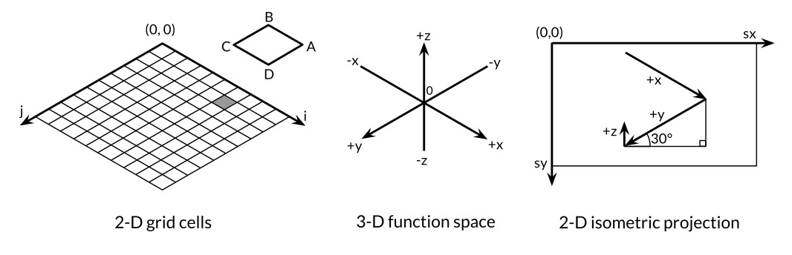
(x, y, z) sobre la superficie 2-D. Un punto aparece mas a la derecha en la superficie cuanto mayor sera su valor x o menor sea su valor y. Y un punto aparece mas abajo en la superficie cuanto mayor sera su valor x o el valor y, y cuanto menor sea su valor z. Los factores de escala horizontal o vertical para x e y se derivan del seno y coseno de un angulo de 30°. El factor de escala para z, 0.4, es un parametro arbitrario.
Para cada celda de la cuadricula 2-D, la funcion principal calcula las coordenadas en la superficie de imagen de las cuatro esquinas del poligono ABCD, donde B corresponde a (i, j) y A, C, y D son sus vecinos, entonces imprime una instruccion SVG para dibujarla.
Ejercicio 3.1: Si la funcion f devuelve un valor float64 no-finito, el archivo SVG contendra elementos <polygon> no validos (aunque muchos procesadores SVG manejan esto con gracia). Modifique el programa para omitir poligonos no validos.
Ejercicio 3.2: Experimente con visualizaciones de otras funciones del paquete math. ¿Puede usted producir una caja de huevos, moguls, o una montura?
Ejercicio 3.3: El color de cada poligono en funcion de su altura, por lo que los picos son de color rojo (#ff0000) y los valles azul (#0000ff).
Ejercicio 3.4: Siguiendo el enfoque del ejemplo Lissajous en la Seccion 1.7, construya un servidor web que calcule superficies y escriba los datos SVG al cliente. El servidor debe establecer el manejador Content-Type asi:
w.Header().Set("Content-Type","image/svg+xml")
(Este paso no era necesario en el ejemplo de Lissajous porque el servidor utiliza la heuristica estandar para reconocer formatos comunes como PNG de los primeros 512 bytes de la respuesta y generar el encabezado adecuado). Permitir al cliente especificar valores como altura, ancho y color como parametros de peticion HTTP.
Numeros complejos
Go proporciona dos tamaños de numeros complejos, complex64 y complex128, cuyos componentes son float32 y float64 respectivamente. La funcion nativa complex crea un numero complejo a partir de sus componentes real e imaginario, e incorpora funciones real y imag para extraer estos componentes:
Si un punto flotante literal entero o decimal literal es seguido inmediatamente por i, como 3.141592i o 2i, se convierte en un literal imaginario, que denota un numero complejo con un componente real cero:
fmt.Println(1i*1i)// "(-1+0i)", i² = -1
Bajo las reglas de la aritmetica constante, constantes complejas se pueden añadir a otras constantes (enteras o de coma flotante, real o imaginarias), lo que nos permite escribir numeros complejos de forma natural, como 1+2i, o equivalentemente, 2i+1 . Las anteriores declaraciones x y y se pueden simplificar:
x:=1+2iy:=3+4i
Los numeros complejos se pueden comparar por igualdad con == y !=. Dos numeros complejos son iguales si sus partes reales son iguales y sus partes imaginarias son iguales.
El paquete math/cmplx proporciona funciones de libreria para trabajar con numeros complejos, tales como las raiz cuadrada compleja y las funciones de exponenciacion.
fmt.Println(cmplx.Sqrt(-1))// "(0+1i)"
El siguiente programa utiliza aritmetica complex128 para generar un conjunto de Mandelbrot.
// Mandelbrot emite una imagen PNG del fractal de Mandelbrot.packagemainimport("image""image/color""image/png""math/cmplx""os")funcmain(){const(xmin,ymin,xmax,ymax=-2,-2,+2,+2width,height=1024,1024)img:=image.NewRGBA(image.Rect(0,0,width,height))forpy:=0;py<height;py++{y:=float64(py)/height*(ymax-ymin)+yminforpx:=0;px<width;px++{x:=float64(px)/width*(xmax-xmin)+xminz:=complex(x,y)// El punto de imagen (px, py) representa el valor complejo z.img.Set(px,py,mandelbrot(z))}}png.Encode(os.Stdout,img)// NOTA: ignorando errores}funcmandelbrot(zcomplex128)color.Color{constiterations=200constcontrast=15varvcomplex128forn:=uint8(0);n<iterations;n++{v=v*v+zifcmplx.Abs(v)>2{returncolor.Gray{255-contrast*n}}}returncolor.Black}
Los dos bucles anidados iteran sobre cada punto en una imagen en cuadricula de escala de grises de 1024x1024 que representa la porcion de -2 a +2 del plano complejo. El programa prueba si repetidamente cuadrando y añadiendo el numero del punto representado eventualmente escapa el circulo de radio 2. Si es asi, el punto es sombreado por el numero de iteraciones que se tardo en escapar. Si no, el valor pertenece al conjunto de Mandelbrot, y el punto permanece negro. Finalmente, el programa escribe en su salida estandar la imagen codificada en PNG del iconico fractal, que se muestra en la Figura 3.3.
Figura 3.3. El conjunto de Mandelbrot.
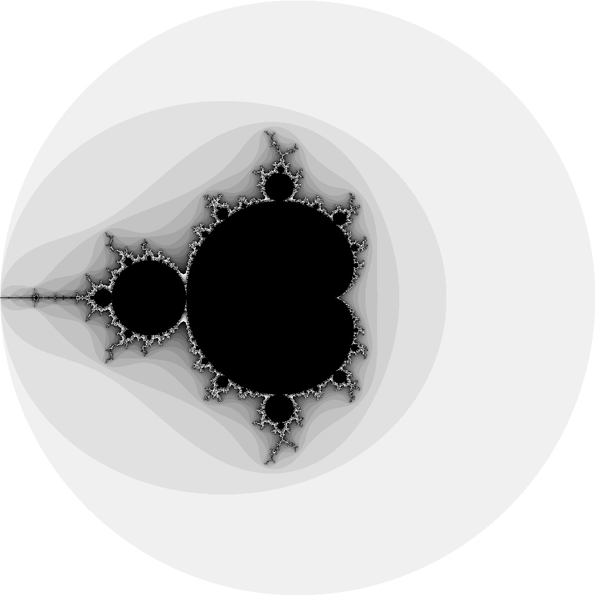
Ejercicio 3.5: Implementar a todo color el cojunto de Mandelbrot usando la funcion image.NewRGBA y el tipo color.RGBA o color.YCbCr.
Ejercicio 3.6: Supermuestreo es una tecnica para reducir el efecto de pixelacion calculando el valor del color en varios puntos dentro de cada pixel y tomando el promedio. El metodo mas simple consiste en dividir cada pixel en cuatro subpixeles. Implementalo.
Ejercicio 3.7: Otro fractal sencillo utiliza el metodo Newton para encontrar soluciones complejas a una funcion como z⁴-1 = 0. Sombrea cada punto de partida por el numero de iteraciones necesarias para acercarse a una de las cuatro raices. Colorea cada punto por la raiz que se aproxima.
Ejercicio 3.8: La Representacion de fractales con altos niveles de zoom exige una gran precision aritmetica. Implementa el mismo fractal utilizando cuatro representaciones diferentes de numeros: complex64, complex128, big.Float, y big.Rat. (Los ultimos dos tipos se encuentran en el paquete math/big. Float utiliza arbitraria, pero delimitada precision de punto flotante; Rat utiliza numeros racionales sin limites de precision.) ¿Como se comparan en el rendimiento y uso de memoria? ¿A que niveles de zoom se hacen visibles los artefactos de renderizacion?
Ejercicio 3.9: Escriba un servidor web que procese fractales y escribe los datos de imagen al cliente. Permita que el cliente especifique las coordenadas x, y, y los valores de zoom como parametros en la peticion HTTP.
Booleanos
Un valor de tipo bool, o booleano, tiene solo dos valores posibles, true y false. Las condiciones en if y for son declaraciones booleanas, y los operadores de comparacion como == y < producen un resultado booleano. El operador unario ! es la negacion logica, de modo que !true es false, o, por decirlo asi, (!true==false)==true, aunque por cuestion de estilo, siempre simplificamos las expresiones booleanas redundantes como x==true a x.
Los valores booleanos pueden ser combinados con los operadores && (AND) y || (OR), que tienen un comportamiento de cortocircuito: si la respuesta ya esta determinada por el valor del operando de la izquierda, el operando de la derecha no se evalua, por lo que es seguro para escribir expresiones como esta:
s!=""&&s[0]=='x'
donde s[0] produciria un panico si se aplica a una cadena vacia.
Ya que && tiene mayor precedencia que || (mnemonico: && es la multiplicacion booleana, || es la adicion boolean), no se requieren parentesis para las condiciones de esta forma:
if'a'<=c&&c<='z'||'A'<=c&&c<='Z'||'0'<=c&&c<='9'{// ...letra o digito ASCII...}
No hay una conversion implicita de un valor booleano a un valor numerico como 0 o 1, o viceversa. Es necesario utilizar un if explicito, como en
i:=0ifb{i=1}
Podria valer la pena escribir una funcion de conversion si esta operacion se necesita a menudo:
// btoi regresa 1 si b es verdadero y 0 sy es falso.funcbtoi(bbool)int{ifb{return1}return0}
La operacion inversa es tan simple que no necesita una funcion, pero por simetria aqui esta:
// itob reporta cuando i no es cero.funcitob(iint)bool{returni!=0}
Cadenas
Una cadena es una secuencia inmutable de bytes. Las cadenas pueden contener datos arbitrarios, incluyendo bytes con valor 0, pero normalmente contienen texto legible por humanos. Las cadenas de texto se interpretan de forma convencional como secuencias codificadas en UTF-8 de puntos de codigo Unicode (runas), que exploraremos en detalle muy pronto.
La funcion nativa len devuelve el numero de bytes (no runas) en una cadena, y la operacion de indice s[i] recupera el n-esimo byte de la cadena s, donde 0 ≤ i < len(s).
s:="hello, world"fmt.Println(len(s))// "12"fmt.Println(s[0],s[7])// "104 119" ('h' and 'w')
Intentar acceder a un byte fuera de este rango produce un panico:
c:=s[len(s)]// panico: indice fuera de rango
El n-esimo byte de una cadena no es necesariamente el n-esimo caracter de una cadena, porque la codificacion UTF-8 de un punto de codigo no ASCII requiere dos o mas bytes. Como Trabajar con caracteres se discutira en breve.
La operacion de subcadena s[i:j] produce una nueva cadena que consta de los bytes de la cadena original a partir del indice i y continua hasta, pero no incluyendo, el byte en el indice j. El resultado contiene j-i bytes.
fmt.Println(s[0:5])// "hello"
De nuevo, se produce un panico si cualquiera de los indices esta fuera de limite o si j es menor que i.
Cualquiera o ambos operandos i y j pueden omitirse, en cuyo caso los valores por defecto son 0 (el inicio de la cadena) y len(s) (su final), respectivamente.
El operador c(+) crea una nueva cadena mediante la concatenacion de dos cadenas:
fmt.Println("goodbye"+s[5:])// "goodbye, world"
Las cadenas pueden compararse con los operadores de comparacion como == y <; La comparacion se realiza byte a byte, por lo que el resultado es el orden lexicografico natural.
Los valores de cadena son inmutables: la secuencia de bytes contenidos en un valor de cadena no se puede cambiar, aunque, por supuesto, podemos asignar un nuevo valor a una variable de cadena. Para añadir una cadena a otra, por ejemplo, podemos escribir
s:="left foot"t:=ss+=", right foot"
Esto no modifica la cadena que retenia s originalmente, pero hace que s contenga la nueva cadena formada por la sentencia +=; Mientras tanto, t aun contiene la cadena antigua.
fmt.Println(s)// "left foot, right foot"fmt.Println(t)// "left foot"
Dado que las cadenas son inmutables, no se permiten las construcciones que intentan modificar los datos de una cadena en su lugar:
s[0]='L'// error de compilacion: no se puede asignar a s[0]
Inmutabilidad significa que es seguro que dos copias de una cadena compartan la misma memoria subyacente, por lo que es barato copiar cadenas de cualquier longitud. Del mismo modo, una cadena s y una subcadena como s[7:] pueden compartir de forma segura los mismos datos, por lo que la operacion subcadena tambien es barata. No se asigna ninguna memoria nueva en ningun caso. La Figura 3.4 ilustra la disposicion de una cadena y dos de sus subcadenas que comparten el mismo arreglo de bytes subyacente.
Figura 3.4. La cadena "hello, world" y dos subcadenas.
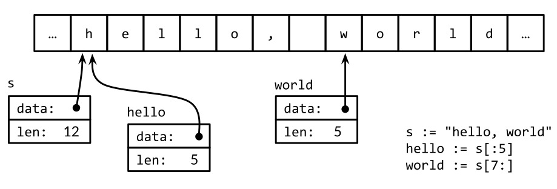
Cadenas Literales
Un valor de cadena se puede escribir como una cadena literal, una secuencia de bytes entre comillas dobles:
"Hello, 世界"
Debido a que los archivos fuente de Go siempre estan codificados en UTF-8 y las cadenas de texto Go son interpretadas convencionalmente como UTF-8, podemos incluir puntos de codigo Unicode en literales de cadena.
Dentro de una literal de cadena entre comillas dobles, las secuencias de escape que comienzan con una barra invertida \ se pueden utilizar para insertar valores arbitrarios de bytes en la cadena. Un conjunto de escape maneja codigos de control ASCII como newline, retorno de carro y tabulacion:
\a
alerta o campana
\b
retroceso
\f
form feed
\n
linea nueva
\r
retorno de carro
\t
tabulador
\v
tabulador vertical
\'
comilla simple (solo en la runa literal '\'')
\"
comillas dobles (solo dentro de "..." literales)
\\
barra invertida
Los bytes arbitrarios tambien se pueden incluir en cadenas literales usando escapes hexadecimales u octales. Un escape hexadecimal se escribe \xhh, con exactamente dos digitos hexadecimales h (en mayusculas o minusculas). Un escape octal se escribe \ooo con exactamente tres digitos octales o (0 a 7) no superior a \377. Ambos denotan un solo byte con el valor especificado. Mas adelante, veremos como codificar numericamente los puntos de codigo Unicode en literales de cadena.
Una literal de cadena sin formato se escribe `...`, utilizando comillas inversas en lugar de comillas dobles. Dentro de una literal de cadena sin formato, no se procesan secuencias de escape; Los contenidos se toman literalmente, incluyendo barras invertidas y lineas nuevas, por lo que un literal de cadena sin formato puede extenderse por varias lineas en el codigo del programa. El unico procesamiento es que los retornos de carro se eliminan para que el valor de la cadena sea el mismo en todas las plataformas, incluidas aquellas que convencionalmente ponen retornos de carro en archivos de texto.
Las literales de cadenas sin formato son una manera conveniente de escribir expresiones regulares, que tienden a tener un monton de barras inversas. Tambien son utiles para plantillas HTML, literales JSON, mensajes de uso de comandos y similares, que a menudo se extienden sobre varias lineas.
constGoUsage=`Go is a tool for managing Go source code.Usage: go command [arguments]...`
Unicode
Hace mucho tiempo, la vida era simple y habia, por lo menos un punto de vista parroquial, solo un conjunto de caracteres a manejar: ASCII, el codigo estandar americano para el intercambio de la informacion (American Standard Code for Information Interchange). ASCII, o mas precisamente US-ASCII, utiliza 7 bits para representar 128 caracteres: las letras mayusculas y minusculas del ingles, digitos y una variedad de caracteres de puntuacion y control de dispositivo. Durante gran parte de los primeros dias de la informatica, esto fue adecuado, pero dejo a una gran parte de la poblacion mundial incapaz de utilizar sus propios sistemas de escritura en las computadoras. Con el crecimiento de Internet, los datos en innumerables idiomas se han vuelto mucho mas comunes. ¿Como puede manejarse esta rica variedad y, si es posible, de forma eficiente?
La respuesta es Unicode (unicode.org), que recoge todos los caracteres de todos los sistemas de escritura del mundo, ademas de acentos y otros signos diacriticos, codigos de control como tabulador y retorno de carro, y plenty of esoterica, y asigna a cada uno un numero estandar denominado punto de codigo Unicode o, en la terminologia Go, una runa.
Unicode version 8 define puntos de codigo para mas de 120.000 caracteres en mas de 100 idiomas y scripts. ¿Como se representan esto en los datos y programas de computadora? El tipo de datos naturales para almacenar una sola runa es int32, y eso es lo utiliza Go; tiene el sinonimo rune precisamente para este proposito.
Podriamos representar una secuencia de runas como una secuencia de valores int32. Esta representacion, se llama UTF-32 o UCS-4, la codificacion de cada punto de codigo Unicode tiene el mismo tamaño, 32 bits. Esto es simple y uniforme, pero utiliza mucho mas espacio de lo necesario, ya que la mayoria de texto legible por computadora esta en ASCII, que requiere solo 8 bits o 1 byte por caracter. Todos los caracteres en uso generalizado todavia aun son menos de 65.536, que cabrian en 16 bits. ¿Podemos hacerlo mejor?
UTF-8
UTF-8 es una codificacion de longitud variable de puntos de codigo Unicode como bytes. UTF-8 fue inventado por Ken Thompson y Rob Pike, dos de los creadores de Go, y ahora es un estandar Unicode. Utiliza entre 1 y 4 bytes para representar cada runa, pero solo 1 byte para caracteres ASCII y solo 2 o 3 bytes para la mayoria de runas en uso comun. Los bits de orden alto del primer byte de la codificacion de una runa indican cuantos bytes siguen. Un alto orden 0 indica ASCII de 7 bits, donde cada runa toma solo 1 byte, por lo que es identica a ASCII convencional. Un alto orden 110 indica que la runa toma 2 bytes; el segundo byte comienza con 10. Las runas mas grandes tienen codificaciones analogas.
0xxxxxx
runas 0−127
(ASCII)
11xxxxx 10xxxxxx
128−2047
(valores <128 no utilizados)
110xxxx 10xxxxxx 10xxxxxx
2048−65535
(valores <2048 no utilizados)
1110xxx 10xxxxxx 10xxxxxx 10xxxxxx
65536−0x10ffff
(otros valores no utiliados)
Una codificacion de longitud variable impide la indexacion directa para acceder al n-esimo caracter de una cadena, pero UTF-8 tiene muchas propiedades deseables para compensar. La codificacion es compacta, compatible con ASCII y auto-sincronizada: es posible encontrar el inicio de un caracter al realizar una copia de seguridad de no mas de tres bytes. Tambien es un prefijo de codigo, por lo que se puede decodificar de izquierda a derecha sin ninguna ambigüedad o lookahead. La codificacion de ninguna runa es una subcadena de cualquier otra, o incluso de una secuencia de otras, por lo que puedes buscar una runa simplemente buscando sus bytes, sin preocuparte por el contexto anterior. El orden de bytes lexicografico es igual al orden de los puntos de codigo Unicode, por lo que la ordenacion de UTF-8 funciona de forma natural. No hay ningun NUL incrustado (cero) bytes, que es conveniente para los lenguajes de programacion que utilizan NUL para terminar cadenas.
Los archivos de codigo fuente de Go siempre estan codificados en UTF-8 y UTF-8 es la codificacion preferida para las cadenas de texto manipuladas por los programas Go. El paquete unicode proporciona funciones para trabajar con runas individuales (como distinguir letras de numeros, o la conversion de una letra mayuscula a una minuscula), y el paquete unicode/utf8 proporciona funciones para codificar y decodificar runas como bytes usando UTF-8.
Muchos caracteres Unicode son dificiles de escribir en un teclado o distinguir visualmente de otros de similar aspecto; Algunos son incluso invisibles. Go nos permite el escape de literales Unicode en una cadena Go al especificarlos por su valor numerico. Hay dos formas, \uhhhh para un valor de 16 bits y \Uhhhhhhhh para un valor de 32 bits, donde cada h es un digito hexadecimal; La necesidad de la forma de 32 bits se presenta con poca frecuencia. Cada uno denota la codificacion UTF-8 del punto de codigo especificado. Asi, por ejemplo, los siguientes literales de cadena representan la misma cadena de seis bytes:
Las tres secuencias de escape anteriores proporcionan notaciones alternativas para la primera cadena, pero los valores que denotan son identicos. Los escapes Unicode tambien se puede utilizar en runas literales. Estos tres literales son equivalentes:
'世' '\u4e16' '\U00004e16'
Una runa cuyo valor es menor que 256 se puede escribir con una sola de escape hexadecimal, por ejemplo '\x41' para 'A', pero para los valores mas altos, debe utilizar un \u o \U de escape. En consecuencia, '\xe4\xb8\x96' no es una runa literal legal, a pesar de que esos tres bytes son un UTF-8 valido de un unico punto de codigo.
Gracias a las buenas propiedades de UTF-8, muchas operaciones de cadena no requieren decodificacion. Podemos probar si una cadena contiene otra como prefijo:
Utilizando la misma logica para un texto codificado en UTF-8 como para bytes sin procesar. Esto no es cierto para otras codificaciones. (Las funciones anteriores se han extraido del paquete strings, aunque su implementacion de Contains utiliza una tecnica de hash para buscar de manera mas eficiente.)
Por otro lado, si realmente nos preocupamos por los caracteres Unicode individuales, tenemos que usar otros mecanismos. Consideremos la cadena de nuestro primer ejemplo, la cual incluye dos caracteres asiaticos. La Figura 3.5 ilustra su representacion en la memoria. La cadena contiene 13 bytes, pero interpretada como UTF-8, codifica solo nueve puntos de codigo o runas:
Para procesar esos caracteres, necesitamos un decodificador UTF-8. El paquete unicode/utf8 proporciona uno que podemos utilizar de la siguiente manera:
Cada llamada a DecodeRuneInString regresa r, la runa en si, y size, el numero de bytes ocupados por la codificacion UTF-8 de r. El tamaño se utiliza para actualizar el indice del byte i de la siguiente runa en la cadena. Pero esto es torpe, y necesitamos bucles de este tipo todo el tiempo. Afortunadamente, Go tiene los bucles range, cuando se aplica a una cadena, realiza decodificacion UTF-8 de forma implicita. La salida del bucle de siguiente se muestra en la Figura 3.5; Observe como el indice salta en mas de 1 para cada runa no ASCII.
Figura 3.5. Un bucle range descodifica una cadena UTF-8-codificado.
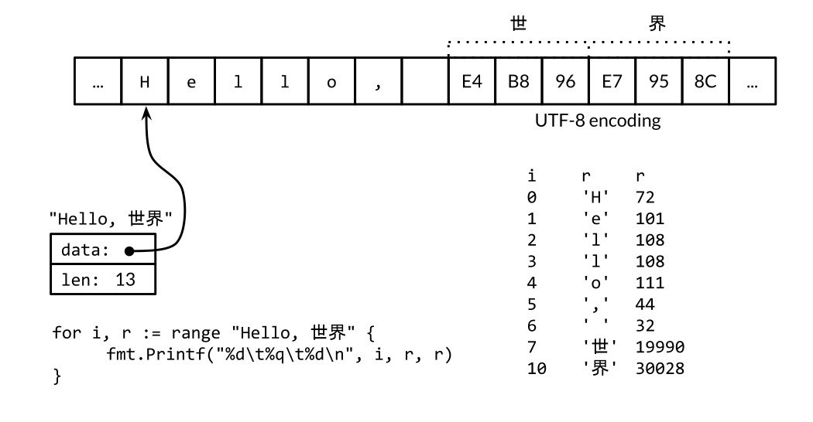
Podriamos usar un simple bucle range para contar el numero de runas en una cadena, como aqui:
n:=0for_,_=ranges{n++}
Al igual que con las otras formas de bucle range, podemos omitir las variables que no necesitamos:
n:=0forranges{n++}
O podemos simplemente llamar a utf8.RuneCountInString(s).
Ya hemos mencionado que es sobre todo una cuestion de convencion en Go que las cadenas de texto se interpretan como secuencias codificadas en UTF-8 de puntos de codigo Unicode, pero para el uso correcto de bucles range de cadenas, es mas que una convencion, es una necesidad. ¿Que sucede si aplicamos range en cadena que contiene datos binarios arbitrarios o, de hecho, datos UTF-8 que contienen errores?
Cada vez que un decodificador UTF-8, ya sea explicito en una llamada a utf8.DecodeRuneInString o implicito en un bucle range, consume un byte de entrada inesperado, se genera un caracter Unicode de reemplazo especial, '\uFFFD', que generalmente se impreme como un signo de interrogacion dentro de una forma hexagonal o un diamante negro �. Cuando un programa encuentra este valor de runa, a menudo es un signo de que parte del sistema que genero los datos de cadena ha sido descuidado en su tratamiento de las codificaciones de texto.
UTF-8 es excepcionalmente conveniente como un formato de intercambio, pero dentro de un programa las runas puede ser mas conveniente porque son de tamaño uniforme y por lo tanto, de facil indexado en arreglos y slices.
Una conversion []rune aplicada a una cadena codificada en UTF-8 devuelve la secuencia de codigos Unicode:
(El verbo % x en el primer Printf inserta un espacio entre cada par de digitos hexadecimales.)
Si un slice de runas se convierte en una cadena, produce la concatenacion de las codificaciones UTF-8 de cada runa:
fmt.Println(string(r))// "プログラム"
Convertir un valor entero en una cadena interpre el entero como un valor de runa, y produce la representacion UTF-8 de esa runa:
fmt.Println(string(65))// "A", not "65"fmt.Println(string(0x4eac))// "京"
Si la runa no es valida, se reemplasa por el caracter de sustitucion:
fmt.Println(string(1234567))// "�"
Cadenas y Slices de Bytes
cuatro paquetes estandar son particularmente importantes para la manipulacion de cadenas: bytes, strings, strconv y unicode. El paquete strings ofrece muchas funciones para busqueda, reemplazo, comparacion, recorte, division, y union en cadenas.
El paquete bytes tiene funciones similares para manipular slices de bytes, de tipo []byte, que comparten algunas propiedades con strings. Debido a que las cadenas son inmutables, la construccion de cadenas de forma incremental puede implicar una gran cantidad de asignacion y copiado. En tales casos, es mas eficaz utilizar el tipo bytes.Buffer, que vamos a mostrar en un momento.
El paquete strconv proporciona funciones para convertir booleanos, enteros, y valores de coma flotante hacia y desde sus representaciones en cadenas, y funciones para citar y des-citar cadenas.
El paquete unicode proporciona funciones como IsDigit, IsLetter, IsUpper y IsLower para la clasificacion de runas. Cada funcion toma un unico argumento de tipo runa y devuelve un booleano. Las funciones de conversion como ToUpper y ToLower convierten una runa en el caso concreto si se trata de una letra. Todas estas funciones utilizan las categorias estandar de Unicode para las letras, los digitos, etc. El paquete strings tiene funciones similares, tambien llamadas ToUpper y ToLower, que devuelven una nueva cadena con la transformacion especificada aplicada a cada caracter de la cadena original.
La siguiente funcion basename se inspiro en la utilidad de shell Unix del mismo nombre. En nuestra version, basename(s) elimina cualquier prefijo de s que paresca una ruta de sistema con componentes separados por barras, y elimina cualquier sufijo que se parece a un tipo de archivo:
// basename elimina los .subfijos y componentes de directorios.// e.g., a => a, a.go => a, a/b/c.go => c, a/b.c.go => b.cfuncbasename(sstring)string{// Descarta el ultimo '/' y todo lo anterior.fori:=len(s)-1;i>=0;i--{ifs[i]=='/'{s=s[i+1:]break}}// Conserva todo antes del ultimo '.'.fori:=len(s)-1;i>=0;i--{ifs[i]=='.'{s=s[:i]break}}returns}
Una version mas simple utiliza la funcion de libreria strings.LastIndex:
funcbasename(sstring)string{slash:=strings.LastIndex(s,"/")// -1 si no se encuentra "/"s=s[slash+1:]ifdot:=strings.LastIndex(s,".");dot>=0{s=s[:dot]}returns}
Los paquetes path y path/filepath proporcionan un conjunto general de funciones para manipular nombres jerarquicos. El paquete path funciona con rutas delimitada por barras en cualquier plataforma. No se debe utilizar para nombres de archivo, pero es apropiado para otros dominios, como los componente de ruta de una URL. Por el contrario, path/filepath manipula los nombres de archivos usando las reglas para la plataforma huesped, tales como /foo/bar para POSIX o c:\foo\bar en Microsoft Windows.
Vamos a continuar con otro ejemplo de subcadena. La tarea es tomar una representacion de cadena de un entero, como "12345", e insertar comas cada tres posiciones, como en "12,345" . Esta version solo funciona para enteros; El manejo de numeros de coma flotante se deja como un ejercicio.
// comma inserta comas en una cadena de numeros enteros decimales negativos.funccomma(sstring)string{n:=len(s)ifn<=3{returns}returncomma(s[:n-3])+","+s[n-3:]}
El argumento de comma es una cadena. Si su longitud es menor o igual a 3, no es necesaria una coma. De lo contrario, comma se llama a si misma de forma recursiva con una subcadena formada por todos menos los tres ultimos caracteres, y añåde una coma y los tres ultimos caracteres en el resultado de la llamada recursiva.
Una cadena contiene un arreglo de bytes que, una vez creado, es inmutable. Por el contrario, los elementos de una slice de bytes se pueden modificar libremente.
Las cadenas se pueden convertir en slices de bytes y viceversa:
s:="abc"b:=[]byte(s)s2:=string(b)
Conceptualmente, la conversion []byte(s) asigna un nuevo arreglo de bytes que guarda una copia de bytes de s, y produce un slice que hace referencia a la totalidad del arreglo. Un compilador optimizado puede ser capaz de evitar la asignacion y la copia en algunos casos, pero en general, la copia es necesaria para asegurar que los bytes de s se mantienen sin cambios incluso si los de b son modificados posteriormente. La conversion de slice de byte de nuevo a cadena con string(b) tambien genera una copia, para asegurar inmutabilidad de la cadena resultante s2.
Para evitar conversiones y asignacion de memoria innecesaria, muchas de las funciones de utilidad en el paquete bytes directamente paralelos a sus contrapartes en el paquete strings. Por ejemplo, aqui hay una media docena de funciones en strings:
La unica diferencia es que las cadenas han sido reemplazadas por slices de bytes.
El paquete bytes proporciona el tipo Buffer para la manipulacion eficiente de slices de byte. Un Buffer comienza vacio, pero crece a medida que los datos de tipos como string, byte, y []byte se escriben en el. Como muestra el siguiente ejemplo, una variable bytes.Buffer no requiere inicializacion porque su valor cero es utilizable:
// intsToString es como fmt.Sprint(values) pero agrega comas.funcintsToString(values[]int)string{varbufbytes.Bufferbuf.WriteByte('[')fori,v:=rangevalues{ifi>0{buf.WriteString(", ")}fmt.Fprintf(&buf,"%d",v)}buf.WriteByte(']')returnbuf.String()}funcmain(){fmt.Println(intsToString([]int{1,2,3}))// "[1, 2, 3]"}
Cuando se agrega la codificacion UTF-8 de un runa arbitraria a un bytes.Buffer, lo mejor es utilizar el metodo WriteRune de bytes.Buffer, pero WriteByte esta bien para caracteres ASCII como '[' y ']'.
El tipo bytes.Buffer es extremadamente versatil, y cuando hablemos de interfaces en el Capitulo 7, vamos a ver como se puede utilizar como un sustituto de un archivo cada vez que una funcion de E/S requiere un poso de bytes (io.Writer) como Fprintf, o una fuente de bytes (io.Reader).
Ejercicio 3.10: Escribir una version no recursiva de comma, utilizando bytes.Buffer en lugar de la concatenacion de cadenas.
Ejercicio 3.11: Mejorar comma para que se maneje correctamente los numeros de punto flotante y un opcionalmente con signo.
Ejercicio 3.12: Escribir una funcion que informa de si dos cadenas son anagramas entre si, es decir, que contienen las mismas letras en un orden diferente.
Conversiones entre cadenas y numeros
Ademas de las conversiones entre cadenas, runas y bytes, a menudo es necesario convertir entre valores numericos y sus representaciones de cadena. Esto se realiza con las funciones del paquete strconv.
Para convertir un entero a una cadena, una opcion es utilizar fmt.Sprintf; otra es utilizar la funcion strconv.Itoa (entero a ASCII):
Los verbos %b, %d, %u y %x de fmt.Printf a menudo son mas conveniente que las funciones Format, sobre todo si queremos incluir informacion adicional ademas del numero:
s:=fmt.Sprintf("x=%b",x)// "x=1111011"
Para analizar una cadena que representa un numero entero, utilice las funciones de strconv como Atoi o ParseInt, o ParseUint para enteros sin signo:
x,err:=strconv.Atoi("123")// x es un enteroy,err:=strconv.ParseInt("123",10,64)// base 10, hasta 64 bits
El tercer argumento de ParseInt da el tamaño del tipo de entero que debe ser el resultado; por ejemplo, 16 implica int16, y el valor especial 0 implica int . En cualquier caso, el tipo del resultado y es siempre int64, que luego se puede convertir a un tipo mas pequeño.
A veces es util fmt.Scanf para el analisis de entrada que consta de mezclas ordenadas de cadenas y numeros todo en una sola linea, pero puede ser inflexible, especialmente cuando se maneja una entrada incompleta o irregular.
Constantes
Las constantes son expresiones cuyo valor es conocido por el compilador y cuya evaluacion se garantiza que se produzca en tiempo de compilacion, no en tiempo de ejecucion. El tipo subyacente de cada constante es un tipo basico: booleano, cadena o numero.
Una declaracion const define los valores que se ven sintacticamente como variables con nombre pero cuyo valor es constante, lo que evita cambios accidentales (o nefastos) durante la ejecucion del programa. Por ejemplo, una constante es mas apropiada que una variable para una constante matematica como pi, ya que su valor no cambiara:
constpi=3.14159// aproximadamente; math.Pi un una mejor aproximacion
Al igual que con las variables, una secuencia de constantes puede aparecer en una declaracion; Esto seria apropiado para un grupo de valores relacionados:
Muchos calculos de constantes pueden evaluarse completamente en tiempo de compilacion, reduciendo el trabajo necesario en tiempo de ejecucion y habilitando otras optimizaciones de compilador. Los errores ordinariamente detectados en tiempo de ejecucion pueden ser reportados en tiempo de compilacion cuando sus operandos son constantes, como la division entera por cero, una cadena de indexacion fuera de limites y cualquier operacion de punto flotante que daria lugar a un valor no finito.
Los resultados de toda la aritmetica, y operaciones de comparacion logicos aplicados a operandos constantes son en si mismas constantes, como son los resultados de las conversiones y las llamadas a ciertas funciones nativas como len, cap, real, imag, complex, y unsafe.Sizeof (§13.1).
Ya que sus valores son conocidos por el compilador, las expresiones constantes pueden aparecer en los tipos, especificamente como la longitud de un tipo de arreglo:
constIPv4Len=4// parseIPv4 analiza una direccion IPv4 (d.d.d.d).funcparseIPv4(sstring)IP{varp[IPv4Len]byte// ...}
Una declaracion constante puede especificar un tipo como un valor, pero en ausencia de un tipo explicito, el tipo se infiere de la expresion en el lado derecho. En el siguiente ejemplo, time.Duration es un tipo con nombre cuyo tipo subyacente es int64, y time.Minute es una constante de ese tipo. Por lo tanto las dos constantes declaradas a continuacion tienen el tipo time.Duration, como lo revela %T:
Cuando una secuencia de constantes se declara como un grupo, la expresion del lado derecho se puede omitir para todas excepto para la primera del grupo, lo que implica que la expresion anterior y su tipo deben ser utilizados de nuevo. Por ejemplo:
const(a=1bc=2d)fmt.Println(a,b,c,d)// "1 1 2 2"
Esto no es muy util si la expresion del lado derecho implicitamente copiada se evalua siempre con el mismo valor. Pero, ¿y si pudiera variar? Esto nos lleva a iota.
El Generador Constante iota
Una declaracion const puede utilizar el generador de constante iota, que se utiliza para crear una secuencia de valores relacionados sin escribir cada uno de forma explicita. En una declaracion const, el valor de iota comienza en cero y se incrementa en uno en cada elemento de la secuencia.
He aqui un ejemplo del paquete time, que define constantes de tipo Weekday de los dias de la semana, a partir de cero para Sunday. Tipos de esta clase a menudo se conocen como enumeraciones, o enums, para abreviar.
Esto declara que Sunday debe ser 0, Monday debe ser 1, y asi sucesivamente.
Podemos utilizar iota en expresiones mas complejas, como en este ejemplo del paquete net en el que se le da a cada uno de los 5 bits mas bajos de un entero sin signo un nombre distinto e interpretacion booleana:
typeFlagsuintconst(FlagUpFlags=1<<iota// esta arribaFlagBroadcast// soporta acceso broadcastFlagLoopback// es una interface loopbackFlagPointToPoint// pertenece a un enlace punto-a-puntoFlagMulticast// soporta acceso multicast)
Como iota incrementa, a cada constante se le asigna el valor de 1 << iota, que evalua a potencias consecutivas de dos, cada un corresponde a un solo bit. Podemos utilizar estas constantes dentro de funciones que prueban, establecen o borran uno o mas de estos bits:
El mecanismo iota tiene sus limites. Por ejemplo, no es posible generar las potencias mas familiares de 1000 (KB, MB, etc.) porque no hay un operador de exponenciacion.
Ejercicio 3.13: Escribir declaraciones const para KB, MB, hasta YB lo mas compacto como sea posible.
Constantes Sin Tipo
Las constantes en Go son un poco inusuales. Aunque una constante puede tener cualquiera de los tipos de datos basicos como int o float64, incluyendo tipos basicos con nombre como time.Duration, muchas constantes no estan comprometidas con un tipo particular. El compilador representa estas constantes no comprometidas con una precision numerica mucho mayor que los valores de tipos basicos, y la aritmetica en ellas es mas precisa que la aritmetica de la maquina; Puede suponer al menos 256 bits de precision. Hay seis sabores de estas constantes no comprometidos, llamado booleanos sin tipo, enteros sin tipo, runas sin tipo, punto flotante sin tipo, complejos sin tipo y cadenas sin tipo.
Al aplazar este compromiso, las constantes no tipificadas no solo conservan su mayor precision hasta mas tarde, sino que pueden participar en muchas mas expresiones que las constantes comprometidas sin requerir conversiones. Por ejemplo, los valores ZiB y YiB en el ejemplo anterior son demasiado grandes para almacenase en cualquier variable entera, pero son legitimas constantes que pueden utilizarse en las expresiones como esta:
fmt.Println(YiB/ZiB)// "1024"
Como otro ejemplo, la constante de coma flotante math.Pi puede utilizarse alli donde se necesite cualquier valor de coma flotante o complejo:
Si math.Pi entubiera comprometido con un tipo especifico, como float64, el resultado no seria tan preciso, y se requerira de conversion de tipos para usarlo con valores float32 o complex128:
Para literales, la sintaxis determina el sabor. Los literales de 0, 0.0, 0i, y '\u0000' representan constantes del mismo valor pero diferentes sabores: entero sin tipo, sin tipo de punto flotante, complejo sin tipo, y runa sin tipo, respectivamente. Del mismo modo, true y false son booleanos sin tipo y literales de cadena son cadenas sin tipo.
Recordemos que / puede representar un numero entero o division de punto flotante dependiendo de sus operandos. En consecuencia, la eleccion de literal puede afectar el resultado de una expresion de division constante:
varffloat64=212fmt.Println((f-32)*5/9)// "100"; (f - 32) * 5 es un float64fmt.Println(5/9*(f-32))// "0"; 5/9 es un entero sin tipo, 0fmt.Println(5.0/9.0*(f-32))// "100"; 5.0/9.0 es un float sin tipo
Solo las constantes pueden no tener tipo. Cuando una constante no tipificada se asigna a una variable, como en la primer instruccion a continuacion, o aparece en el lado derecho de una declaracion de variable con un tipo explicito, como en las otras tres sentencias, la constante se convierte implicitamente en el tipo de esa variable si es posible.
varffloat64=3+0i// complejo sin tipo -> float64f=2// entero sin tipo -> float64f=1e123// punto flotante sin tipo -> float64f='a'// runa sin tipo -> float64
Las afirmaciones anteriores son, pues, equivalentes a estas:
Ya sea implicita o explicitamente, la conversion de una constante de un tipo a otro requiere que el tipo de destino pueda representar el valor original. Se permite el redondeo para numeros reales y complejos de coma flotante:
const(deadbeef=0xdeadbeef// int sin tipo con valor 3735928559a=uint32(deadbeef)// uint32 con valor 3735928559b=float32(deadbeef)// float32 con valor 3735928576 (rounded up)c=float64(deadbeef)// float64 con valor 3735928559 (exact)d=int32(deadbeef)// error de compilacion: desbordamiento constante int32e=float64(1e309)// error de compilacion: desbordamiento constante float64f=uint(-1)// error de compilacion: subdesbordamiento constante uint)
En una declaracion de variable sin un tipo explicito (incluyendo declaracion de variables compacto), el sabor de la constante no tipificada determina implicitamente el tipo predeterminado de la variable, como en estos ejemplos:
i:=0// entero sin tipo; int(0) implicitior:='\000'// runa sin tipo; rune('\000') implicitiof:=0.0// punto flotante sin tipo; float64(0.0) implicitioc:=0i// complejo sin tipo; complex128(0i) implicitio
Observese la asimetria: los enteros sin tipo se convierten en int, cuyo tamaño no esta garantizado, pero los numeros de punto flotante y numeros complejos se convierten a los tipos de tamaño float64 y complex128 de forma explicita. El lenguaje no cuenta con tipos float y complex sin tamaño, analogos a int sin tamaño, porque es muy dificil escribir algoritmos numericos correctos sin conocer el tamaño de uno de los tipos de datos de punto flotante.
Para dar un tipo diferente a la variable, debemos convertir explicitamente la constante no tipificada en el tipo deseado o indicar el tipo deseado en la declaracion de variables, como en estos ejemplos:
vari=int8(0)variint8=0
Estos valores predeterminados son particularmente importantes cuando se convierte una constante sin tipo a un valor de interfaz (ver Capitulo 7) ya que determinan su tipo dinamico.
Ahora hemos cubierto los tipos de datos basicos de Go. El siguiente paso es mostrar como se pueden combinar en agrupaciones mas grandes como arreglos y estructuras, y luego en estructuras de datos para resolver problemas de programacion real; ese es el tema del Capitulo 4.
Tipos Compuestos
En el Capitulo 3 hablamos de los tipos basicos que sirven como bloques de construccion para estructuras de datos en un programa Go; Son los atomos de nuestro universo. En este capitulo, vamos a echar un vistazo a los tipos compuestos, las moleculas creadas mediante la combinacion de los tipos basicos de diversas maneras. Hablaremos de cuatro de estos tipos–arreglos, slices, mapas y estructuras–y al final del capitulo mostraremos como los datos estructurados que utilizan estos tipos pueden ser codificados y analizados a partir de datos JSON y usados para generar HTML desde plantillas.
Arreglos y estructuras son tipos de agregados; Sus valores son concatenaciones de otros valores en la memoria. Los arreglos son homogeneos, sus elementos tienen el mismo tipo, mientras que las estructuras son heterogeneas. Los arreglos y las estructuras son de tamaño fijo. Por el contrario, slices y mapas son estructuras de datos dinamicas que crecen a medida que se agregan valores.
Arreglos
Un arreglo es una secuencia de longitud fija de cero o mas elementos de un tipo particular. Debido a su longitud fija, en Go raramente se utilizan arreglos directamente. Los slices, pueden crecer y encogerse, son mucho mas versatiles, pero para entender los slices primero debemos entender los arreglos.
Los elementos individuales de arreglo se acceden con la notacion de subindices convencional, donde los subindices abarcan desde cero a uno menos que la longitud de la arreglo. La funcion nativa len devuelve el numero de elementos de la arreglo.
vara[3]int// arreglo de 3 enterosfmt.Println(a[0])// imprime el primer elementofmt.Println(a[len(a)-1])// imprime el ultime elemento, a[2]// imprimir los indices y elementos.fori,v:=rangea{fmt.Printf("%d %d\n",i,v)}// imprimir solo los elementos.for_,v:=rangea{fmt.Printf("%d\n",v)}
Por defecto, los elementos de un nuevo arreglo de variables estan configurados inicialmente a el valor cero para el tipo de elemento, que es 0 para los numeros. Podemos utilizar un arreglo literal para inicializar un arreglo con una lista de valores:
En un arreglo literal, si aparece una elipsis "..." aparece en lugar de la longitud, la longitud del arreglo se determina por el numero de inicializadores. La definicion de q se puede simplificar como
q:=[...]int{1,2,3}fmt.Printf("%T\n",q)// "[3]int"
El tamaño de un arreglo es parte de su tipo, por lo que [3]int y [4]int son tipos diferentes. El tamaño debe ser una expresion constante, es decir, una expresion cuyo valor se puede calcular a medida que se esta compilando el programa.
q:=[3]int{1,2,3}q=[4]int{1,2,3,4}// error de compilacion: no puede asignar [4]int a [3]int
Como veremos, la sintaxis literal es similar para arreglos, slices, mapas y estructuras. El formato especifico anterior es una lista de valores en orden, pero tambien es posible especificar una lista de pares de indice y valor, como aqui:
En esta forma, los indices pueden aparecer en cualquier orden y algunos pueden ser omitidos; Como antes, los valores no especificados toman el valor cero para el tipo de elemento. Por ejemplo,
r:=[...]int{99:-1}
define un arreglo r con 100 elementos, todos en cero excepto para el ultimo, que tiene un valor -1.
Si el tipo de los elementos de un arreglo es comparable entonces, el tipo del arreglo tambien es comparable, asi que podemos comparar directamente dos arreglos de ese tipo usando el operador ==, que informa de si todos los elementos correspondientes son iguales. El operador != es su negacion.
a:=[2]int{1,2}b:=[...]int{1,2}c:=[2]int{1,3}fmt.Println(a==b,a==c,b==c)// "true false false"d:=[3]int{1,2}fmt.Println(a==d)// error de compilacion: no puede comparar [2]int == [3]int
Como un ejemplo mas plausible, la funcion Sum256 en el paquete crypto/sha256 produce el digest o hash criptografico SHA256 o DIGEST de un mensaje almacenado en un slice arbitrario de bytes. El hash tiene 256 bits, por lo que su tipo es [32]byte . Si dos hash son los mismos, es muy probable que los dos mensajes sean iguales; Si los hash difieren, los dos mensajes son diferentes. Este programa imprime y compara los hash SHA256 de "x" y "X":
Las dos entradas difieren por un solo bit, pero aproximadamente la mitad de los bits son diferentes en los hash. Note las verbos Printf: %x para imprimir todos los elementos de un arreglo o una slice de bytes en hexadecimal, %t para mostrar un valor booleano, y %T para mostrar el tipo de un valor.
Cuando se llama a una funcion, se asigna una copia de cada valor de argumento a la variable de parametro correspondiente, por lo que la funcion recibe una copia, no el original. Pasar grandes arreglos de esta manera puede ser ineficiente, y cualquier cambio que la funcion hace a elementos de arreglo afectan solo a la copia, no al original. En este sentido, Go trata a los arreglos como a cualquier otro tipo, pero este comportamiento es diferente de otros lenguajes que implicitamente pasan arreglos por referencia.
Por supuesto, podemos pasar explicitamente un puntero a un arreglo para que cualquier modificacion que la funcion hace a los elementos del arreglo sean visibles para quien llama a la funcion. Esta funcion pone a cero el contenido de un arreglo [32]byte:
funczero(ptr*[32]byte){fori:=rangeptr{ptr[i]=0}}
El arreglo literal [32]byte{} produce una serie de 32 bytes. Cada elemento del arreglo tiene el valor cero para byte, que es cero. Podemos utilizar este hecho para escribir una version diferente de zero:
funczero(ptr*[32]byte){*ptr=[32]byte{}}
El uso de un puntero a un arreglo es eficiente y permite que la funcion llamada mute la variable de quien la llama, pero los arreglos son intrinsecamente inflexibles debido a su tamaño fijo. La funcion zero no aceptara un puntero a una variable [16]byte, por ejemplo, ni hay ninguna manera de añadir o eliminar elementos del arreglo. Por estas razones, aparte de casos especiales como el hash SHA256 de tamaño fijo, rara vez se usan arreglos como parametros de funcion; En su lugar, utilizamos slices.
Ejercicio 4.1: Escribir una funcion que cuente el numero de bits que son diferentes en dos hash SHA256. (Ver PopCount en la Seccion 2.6.2.)
Ejercicio 4.2: Escribir un programa que imprima el hash SHA256 de su entrada estandar por defecto, pero que accepte una bandera de linea de comando para imprimir tambien los hash SHA384 o SHA512.
Slices
Los slices representan secuencias de longitud variable cuyos elementos tienen todos el mismo tipo. Un tipo slice se escribe []T, donde los elementos tienen el tipo T; es como un tipo arreglo pero sin un tamaño.
Arreglos y slices estan intimamente conectados. Un slice es una estructura de datos ligera que da acceso a una subsecuencia de (o tal vez todos) los elementos de un arreglo, que se conoce como arreglo subyacente del slice. Una slice tiene tres componentes: un puntero, una longitud y una capacidad. El puntero apunta al primer elemento del arreglo que se puede acceder a traves del slice, que no es necesariamente el primer elemento del arreglo. La longitud es el numero de elementos del slice; No puede exceder la capacidad, que suele ser el numero de elementos entre el inicio de la division y el final del arreglo subyacente. Las funciones nativas len y cap regresan esos valores.
Multiples slices pueden compartir el mismo arreglo subyacente y pueden referirse a partes superpuestas de ese arreglo. La Figura 4.1 muestra un arreglo de cadenas para los meses del año, y dos slices superpuestos del mismo. El arreglo se declara como
asi Enero es meses[1] y Diciembre es meses[12]. Normalmente, el elemento de arreglo en el indice 0 contendria el primer valor, pero como los meses siempre estan numerados apartir de 1, podemos dejarlo fuera de la declaracion y se inicializara en una cadena vacia.
Figura 4.1. Dos slices superpuestos de un arreglo de meses.
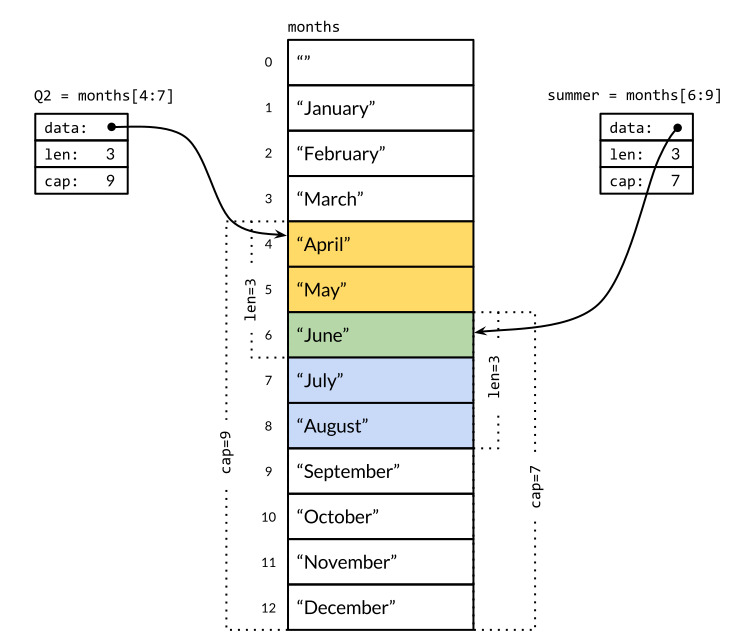
El operador de slices[i:j], donde 0 ≤ i ≤ j ≤ cap(s), crea un nuevo segmento que se refiere a los elementos de i a j-1 de la secuencia s, que puede ser una variable del arreglo, un puntero a un arreglo u otra porcion. El slice resultante tiene j-i elementos. Si i se omite, es 0, y si j se omite, es len(s). Asi, el slice meses[1:13] se refiere a toda la gama de meses validos, como lo hace el slice meses[1:]; el slice meses[:] se refiere a todo el arreglo. Vamos a definir slices superpuestos para el segundo trimestre y el verano boreal:
Junio se incluye en ambos y es la unica salida de esta (ineficiente) prueba para elementos comunes:
for_,s:=rangeverano{for_,q:=rangeQ2{ifs==q{fmt.Printf("%s aparece en ambos\n",s)}}}
Seccionar mas alla de cap(s) causa un panico, pero seccionar mas alla len(s) extiende el slice, por lo que el resultado puede ser mas largo que el original:
fmt.Println(verano[:20])// panico: fuera de rangoveranoSinFin:=verano[:5]// ampliar slice (dentro de la capacidad)fmt.Println(veranoSinFin)// "[Junio Julio Augosto Septiembre Octubre]"
Como anotacion, tenga en cuenta la similitud de la operacion de subcadena en cadenas con el operador slice en slices de []byte. Ambos se escriben x[m:n], y ambos vuelven una subsecuencia de los bytes originales, compartiendo la representacion subyacente de modo que ambas operaciones toman tiempo constante. La expresion x[m:n] produce una cadena si x es una cadena, o un []byte si x es un []byte.
Dado que un slice contiene un puntero a un elemento de un arreglo, el paso de un slice a una funcion permite a la funcion modificar los elementos del arreglo subyacente. En otras palabras, la copia de una slice crea un alias (§2.3.2) para el arreglo subyacente. La funcion reverse invierte los elementos de un slice []int en su lugar, y se puede aplicar a slices de cualquier longitud.
Una forma sencilla de rotar un slice a la izquierda n elementos es aplicar la funcion reverse tres veces, primero a los n elementos iniciales, luego a los elementos restantes, y finalmente a todo el slice. (Para rotar a la derecha, primero haga la tercer llamada.)
s:=[]int{0,1,2,3,4,5}// rotar s a la izquierda dos posiciones.reverse(s[:2])reverse(s[2:])reverse(s)fmt.Println(s)// "[2 3 4 5 0 1]"
Observe como la expresion que inicializa el slice s difiere de la del arreglo de a. Una slice literal se ve similar a un arreglo literal, una secuencia de valores separados por comas y rodeada por llaves, pero el tamaño no se proporciona. Esto crea implicitamente una variable de arreglo del tamaño correcto y produce una division que apunta a el. Al igual que con los arreglos literales, los slices literales pueden especificar los valores en orden, o dar sus indices explicitamente, o usar una mezcla de los dos estilos.
A diferencia de los arreglos, los slices no son comparables, por lo que no pueden usar == para probar si dos slices contienen los mismos elementos. La libreria estandar proporciona la funcion bytes.Equal altamente optimizada para comparar dos slices de bytes ([]byte), pero para otros tipos de slice, tenemos que hacer la comparacion nosotros mismos:
En vista de lo natural, que es esta prueba de igualdad de la profundidad, y que no es mas costosa en tiempo de ejecucion que el operador == para arreglos de cadenas, puede ser desconcertante que la comparacion de slice no funcionen tambien de esta manera. Hay dos razones por las cuales la equivalencia de profunda es problematica. En primer lugar, a diferencia de los elementos del arreglo, los elementos de un slice son indirectos, lo que hace posible que una slice se contenga a si mismo. Aunque hay maneras de tratar con tales casos, ninguno es simple, eficiente, y lo mas importante, obvio.
En segundo lugar, debido a que los elementos del slice son indirectos, un valor fijo del slice puede contener diferentes elementos en momentos diferentes a medida que se modifican los contenidos del arreglo subyacente. Dado que una tabla hash como el tipo de mapa de Go solo hace copias poco profundas de sus claves, requiere que la igualdad para cada clave permanezca igual durante toda la vida de la tabla hash. La equivalencia profunda haria asi que los slices no fueran adecuados para ser utilizados como mapas de claves. Para los tipos de referencia como punteros y canales, el operador == prueba la identidad de la referencia, es decir, si las dos entidades se refieren a la misma cosa. Una prueba de igualdad superficial similar para slices podria ser util, y resolveria el problema con los mapas, pero el tratamiento inconsistente de slices y arreglos por el operador == seria confuso. La opcion mas segura es no permitir comparaciones de slices por completo.
La unica comparacion legal en slices es contra nil, como en
ifsummer==nil{/* ... */}
El valor cero de un tipo slice es nil. Un slice nil no tiene arreglo subyacente. El slice nil tiene longitud y capacidad cero, pero tambien hay slices no nulos de longitud y capacidad cero, como []int{} o make([]int, 3)[3:]. Como con cualquier tipo que puede tener valores nulos, el valor nulo de un tipo de segmento particular puede ser escrito utilizando una expresion de conversion como []int(nil).
vars[]int// len(s) == 0, s == nils=nil// len(s) == 0, s == nils=[]int(nil)// len(s) == 0, s == nils=[]int{}// len(s) == 0, s != nil
Por lo tanto, si usted necesita probar si una slice esta vacio, utilice len(s) == 0, no s == nil. Ademas de comparar la igualdad con nil, una slice nil se comporta como cualquier otro slice de longitud cero; por ejemplo, reverse(nil) es perfectamente seguro. A menos que se demuestre claramente lo contrario, las funciones de Go deben tratar todos los slices de longitud cero de la misma manera, sea o no nulo.
La funcion nativa make crea un slice de un tipo de elemento, con longitud y capacidad especifico. Se puede omitir el argumento capacidad, en cuyo caso la capacidad es igual a la longitud.
make([]T,len)make([]T,len,cap)// igual que make([]T, cap)[:len]
Bajo el capo, make crea una variable de arreglo sin nombre y devuelve un slice de este; El arreglo es accesible solo a traves del slice devuelto. En la primera forma, el slice es una vista de todo el arreglo. En el segundo, el slice es una vista de solo los primeros len elementos, pero su capacidad incluye toda el arreglo arreglo. Los elementos adicionales se reservan para el futuro crecimiento.
La Funcion append
La funcion nativa append agrega elementos a slices:
El bucle utiliza append para construir el slice codificado de nueve runas literales, aunque este problema especifico se resuelve mas convenientemente mediante el uso de la conversion nativa []rune("Hello, 世界").
La funcion append es crucial para la comprension de como trabajan los slices, asi que vamos a echar un vistazo a lo que esta pasando. Aqui hay una version llamada appendInt que se especializa en slices []int:
funcappendInt(x[]int,yint)[]int{varz[]intzlen:=len(x)+1ifzlen<=cap(x){// Hay espacio para crecer. Extiende el slicez=x[:zlen]}else{// No hay suficiente espacio. Asigna un nuevo arreglo.// Crecer al doble, para compenzar la complejidad lineal.zcap:=zlenifzcap<2*len(x){zcap=2*len(x)}z=make([]int,zlen,zcap)copy(z,x)// a built-in function; see text}z[len(x)]=yreturnz}
Cada llamada a appendInt debe comprobar si el slice tiene capacidad suficiente para contener los nuevos elementos en el arreglo existente. Si es asi, se extiende el slice mediante la definicion de una slice mas grande (todavia dentro de la arreglo original), copia el elemento y en el nuevo espacio, y devuelve el slice. La entrada x y el resultado z comparten el misma arreglo subyacente.
Si no hay suficiente espacio para el crecimiento, appendInt debe asignar un nueva arreglo lo suficientemente grande para contener el resultado, copiar los valores de x en el y, a continuacion, añadir el nuevo elemento y. Ahora el resultado z hace referencia a un arreglo subyacente diferente al que referia el arreglo x.
Seria facil copiar los elementos con bucles explicitas, pero es mas facil utilizar la funcion nativa copy, que copia los elementos de un slice a otro del mismo tipo. Su primer argumento es el destino y el segundo es la fuente, parecido al orden de los operandos de una asignacion como dst = src. Los slices pueden referirse al mismo arreglo subyacente; Incluso pueden superponerse. Aunque no lo usamos aqui, copy devuelve el numero de elementos copiados realmente, que es la longitud del menor de los slices, por lo que no hay peligro de se acabe o sobreescriba algo fuera del rango.
Por eficiencia, el nueva arreglo es generalmente algo mayor que el minimo necesario para almacenar x y y. La expandir el arreglo duplicando su tamaño en cada expansion evita un numero excesivo de asignaciones y asegura que anexar un solo elemento tome un tiempo constante en promedio. Este programa demuestra el efecto:
Echemos un vistazo mas cercano a la iteracion i=3. El slice x contiene tres elementos [0 1 2], pero tiene la capacidad de 4, por lo que hay un solo elemento de holgura en el extremo, y agrerar el elemento 3 procede sin reasignacion en appendInt. El slice y resultante tiene longitud y capacidad 4, y tiene el mismo arreglo subyacente que el slice x original, como lo muestra la Figura 4.2.
Figura 4.2. Adicion con espacio para crecer.
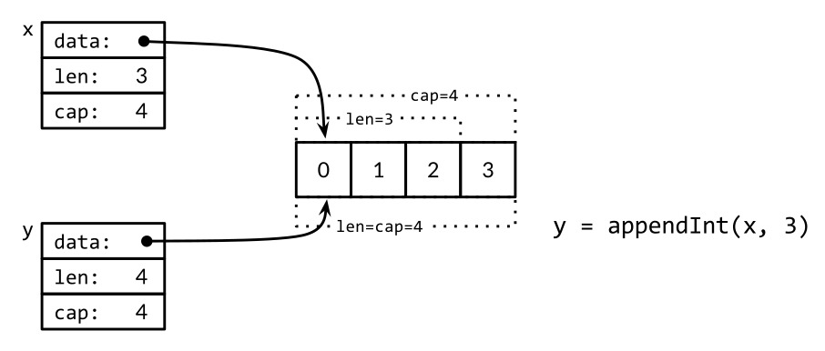
En la siguiente iteracion, i=4, no hay holgura en absoluto, por lo que appendInt asigna un nueva arreglo de tamaño 8, copia los cuatro elementos de x ([0 1 2 3]), y agrega 4, el valor de i. El slice resultante y tiene una longitud de 5, pero una capacidad de 8; La holgura de 3 guardara las siguientes tres iteraciones. Las slices y y x son vistas de diferentes arreglos. Esta operacion se muestra en la Figura 4.3.
Figura 4.3. Adicion sin crear espacio.
La funcion nativa append puede utilizar una estrategia de crecimiento mas sofisticado que la simplista appendInt. Por lo general, no sabemos si una llamada a append provocara una reasignacion, asi que no podemos asumir que el slice original se refiere al mismo arreglo que el slice resultante, ni que este se refiere a uno diferente. Del mismo modo, no debemos suponer que las operaciones sobre los elementos del antiguo slice se reflejaran (o no) en la nuevo slice. Como resultado de ello, es habitual asignar el resultado de una llamada a append al mismo slice cuyo valor pasamos a append:
runes=append(runes,r)
La actualizacion de la variable slice se requiere no solo al llamar a append, sino tambien a cualquier funcion que pueda cambiar la longitud o la capacidad de una slice o hacer que se refiere a un arreglo subyacente diferente. Para usar los slices correctamente, es importante tener en cuenta que aunque los elementos del arreglo subyacente son indirectos, el puntero, la longitud y la capacidad de la slice no lo son. Para actualizarlos se requiere una asignacion como la anterior. En este sentido, los slices no son los tipos de referencia puros, sino que se asemejan a un tipo de agregado como esta estructura:
typeIntSlicestruct{ptr*intlen,capint}
Nuestra funcion appendInt añade un elemento a un slice, pero el append nativo nos permite añadir mas de un elemento nuevo, o incluso todo un slice de ellos.
Con la pequeña modificacion se muestra a continuacion, podemos hacer coincidir el comportamiento con el append nativo. Los puntos suspensivos ("...") en la declaracion de appendInt crean una funcion variadic: acepta cualquier numero de argumentos finales. Los puntos suspensivos en la llamada append anterior muestran como suministrar una lista de argumentos apartir de un slice. Vamos a explicar este mecanismo en detalle en la Seccion 5.7.
funcappendInt(x[]int,y...int)[]int{varz[]intzlen:=len(x)+len(y)// ...expand z to at least zlen...copy(z[len(x):],y)returnz}
La logica para expandir el arreglo z subyacente, se mantiene sin cambios y no se muestra.
Tecnicas de Slices In Situ
Veamos mas ejemplos de funciones que, como rotate y reverse, modifican los elementos de un slice en su lugar. Dada una lista de cadenas, la funcion nonempty devuelve las que no estan vacias:
// Nonempty es un ejemplo de algoritmo in situ.packagemainimport"fmt"// nonempty regresa un slice que contiene solo las cadenas no vacias.// El arreglo subyacente se modifica durante la llamada.funcnonempty(strings[]string)[]string{i:=0for_,s:=rangestrings{ifs!=""{strings[i]=si++}}returnstrings[:i]}
La parte sutil es que la porcion de entrada y la porcion de salida comparten el mismo arreglo subyacente. Esto evita la necesidad de asignar otro arreglo, aunque por supuesto los contenidos de datos se sobrescriben en parte, como se evidencia por la segunda instruccion de impresion:
Por lo tanto normalmente escribe: data = nonempty(data).
La funcion nonempty tambien se puede escribir utilizando append:
funcnonempty2(strings[]string)[]string{out:=strings[:0]// slice del original con longitud cerofor_,s:=rangestrings{ifs!=""{out=append(out,s)}}returnout}
Cualquiera que sea la variante que utilicemos, la reutilizacion de un arreglo de este modo requiere que se produzca como maximo un valor de salida para cada valor de entrada, lo que es cierto para muchos algoritmos que filtran elementos de una secuencia o combinan elementos adyacentes. Este uso intrincado de un slice es la excepcion, no la regla, pero puede ser clara, eficiente y util en ocasiones.
Se puede usar un slice para implementar una pila. Dada que tenemos un slice vacio stack, podemos empujar un nuevo valor en el extremo del slice con append:
stack=append(stack,v)// push v
La parte superior del stack es el ultimo elemento:
top:=stack[len(stack)-1]// parte superior del stack
y para sacar el elemento del stack es
stack=stack[:len(stack)-1]// sacar
Para eliminar un elemento a la mitad de una slice, preservando el orden de los elementos restantes, utilice copy para deslizar los elementos de numeros mas altos hacia abajo por uno, para llenar el hueco:
Ejercicio 4.3: Reescribir reverse para utilizar un puntero a un arreglo en lugar de un slice.
Ejercicio 4.4: Escribir una version de rotate que opere en una sola pasada.
Ejercicio 4.5: Escribir una funcion in situ para eliminar duplicados adyacentes en una slice []string.
Ejercicio 4.6: Escribir una funcion in situ que aplaste cada sequencia Unicode de espacios adyacentes (ver unicode.IsSpace) en un slice []byte codificado en UTF-8 en solo espacio ASCII.
Ejercicio 4.7: Modificar reverse para invertir in situ los caracteres de una slice []byte que represente una cadena codificado en UTF-8. ¿Puedes hacerlo sin asignar nueva memoria?
Mapas
La tabla hash es una de las mas ingeniosas y versatiles de todas las estructuras de datos. Es una coleccion desordenada de pares clave/valor en la que todas las claves son distintas, y el valor asociado con una clave dada puede ser recuperado, actualizado o eliminado, usando un numero constante de comparaciones clave en promedio, no importa cuan grande sea el tamaño de la tabla hash.
En Go, un mapa es una referencia a una tabla hash, y un tipo de mapa se escribe como map[K]V, en donde K y V son los tipos de sus claves y valores. Todas las claves en un mapa son del mismo tipo, y todos los valores son del mismo tipo, pero las claves no necesitan ser del mismo tipo que los valores. El tipo de clave K debe ser comparable usando ==, de modo que el mapa puede probar si una clave dada es igual a una que ya esta dentro de ell. Aunque los numeros de punto flotante son comparables, es una mala idea comparar floats por igualdad y, como mencionamos en el Capitulo 3, es especialmente malo si NaN es un valor posible. No hay restricciones sobre el tipo de valor V.
Se puede utilizar la funcion nativa make para crear un mapa:
edades:=make(map[string]int)// mapeo de cadenas a ints
Tambien podemos usar un mapa literal para crear un nuevo mapa poblada con algunos pares iniciales clave/valor:
Todas estas operaciones son seguras incluso si el elemento no esta en el mapa; una busqueda en el mapa utulizando una clave que no esta presente devuelve el valor cero para su tipo, por ejemplo, lo siguiente funciona incluso cuando "bob" aun no es una clave en el mapa, por lo que el valor de edades["bob"] sera 0.
edades["bob"]=edades["bob"]+1// feliz cumpleaños!
Las formas de asignacion abreviada x += y y x++ tambien funcionan para elementos del mapa, asi que podemos rescribir la sentencia anterior como
edades["bob"]+=1
O incluso mas conciso como
edades["bob"]++
Pero un elemento del mapa no es una variable, y no podemos tomar su direccion:
_=&ages["bob"]// error de compilacion: no puede tomar la direccion del elemento mapa
Una de las razones por las que no podemos tomar la direccion de un elemento de un mapa es que el crecimiento de un mapa podria provocar la reorganizacion de elementos existentes en nuevas ubicaciones de almacenamiento, lo que podria invalidar la direccion.
Para enumerar todos los pares clave/valor en el mapa, se utiliza un bucle for basado en range similar al que vimos para los slices. Las iteraciones sucesivas del bucle hacen que las variables name y age se establecen en el siguiente par clave/valor:
El orden de iteracion del mapa no se especifica, y las diferentes implementaciones pueden utilizar una funcion de hash diferente, lo que conduce a un orden diferente. En la practica, el orden es aleatorio, variando de una ejecucion a la siguiente. Esto es intencional; Haciendo que la secuencia varie ayuda a obligar a los programas a ser robustos en todas las implementaciones. Para enumerar los pares clave/valor en orden, hay que ordenar las claves de forma explicita, por ejemplo, mediante la funcion Strings del paquete sort si las claves son cadenas. Este es un patron comun:
Dado que sabemos el tamaño final de nombres desde el principio, es mas eficiente asignar un arreglo del tamaño requerido por adelantado. La siguiente declaracion crea un slice que esta inicialmente vacio, pero tiene la capacidad suficiente para contener todas las llaves del mapa edades:
nombres:=make([]string,0,len(edades))
En el primer range del bucle anterior, solo necesitamos las llaves claves del mapa edades, por lo que se omite la segunda variable de bucle. En el segundo bucle, se requieren solo los elementos del slice nombres, por lo que se utiliza el identificador en blanco _ para ignorar la primer variable, el indice.
El valor cero para el tipo de un mapa es nil, es decir, una referencia a ninguna tabla hash en absoluto.
La mayoria de las operaciones en los mapas, incluyendo las operaciones de busqueda, delete, len y bucles range, son seguros para llevar a cabo en un mapa de referencia a nil, ya que se comporta como un mapa vacio. Pero almacenar en un mapa nil provoca un panico:
ages["carol"]=21// panic: assignment to entry in nil map
Debe asignar el mapa antes de poder almacenarlo.
El acceso a un elemento de un mapa mediante subindice siempre produce un valor. Si la clave esta presente en el mapa, se obtiene el valor correspondiente; si no, se obtiene el valor cero para el tipo de elemento, como hemos visto con edades["bob"]. Para muchos propositos eso esta bien, pero a veces necesitas saber si el elemento estaba realmente ahi o no. Por ejemplo, si el tipo de elemento es numerico, es posible que tenga que distinguir entre un elemento inexistente y un elemento que tiene el valor cero, mediante una prueba como esta:
edad,ok:=edades["bob"]if!ok{/* "bob" no es una clave en este mapa; edad == 0. */}
A menudo vera estas dos afirmaciones combinadas, como aqui:
ifage,ok:=ages["bob"];!ok{/* ... */}
El subindice de un mapa en este contexto produce dos valores; El segundo es un booleano que informa si el elemento estaba presente. La variable booleana a menudo se denomina ok, especialmente si se utiliza inmediatamente en una condicion if.
Como con los slices, los mapas no pueden ser compararse uno con otro; la unica comparacion legal es con nil. Para probar si dos mapas contienen las mismas claves y los mismos valores asociados, debemos escribir un bucle:
Observe como se utiliza !ok para distinguir los casos que faltan y los presentes, pero en cero. Si hubieramos escrito ingenuamente xv != y[k], la llamada de abajo reportaria incorrectamente sus argumentos como iguales:
// Verdadero si equal esta escrito incorrectamente.equal(map[string]int{"A":0},map[string]int{"B":42})
Go no proporciona un tipo set, pero ya que las claves de un mapa son distintas, un mapa puede servir a este proposito. Para ilustrarlo, el programa dedup lee una secuencia de lineas e imprime solo la primera ocurrencia de cada linea distinta. (Es una variante del programa dup que mostramos en la Seccion 1.3). El programa dedup utiliza un mapa cuyas claves representan el conjunto de lineas que ya han aparecido para asegurar que las ocurrencias posteriores no se impriman.
funcmain(){consulta:=make(map[string]bool)// un conjunto de cadenasentrada:=bufio.NewScanner(os.Stdin)forentrada.Scan(){linea:=input.Text()if!consulta[linea]{consulta[linea]=truefmt.Println(linea)}}iferr:=entrada.Err();err!=nil{fmt.Fprintf(os.Stderr,"dedup: %v\n",err)os.Exit(1)}}
Los programadores de Go a menudo describen un mapa de esta manera utilizandolo como un conjunto de cadenas sin mas preambulos, pero cuidado, no todo los valores map[string]bool son conjuntos simples; algunos pueden contener valores tanto true y false.
A veces necesitamos un mapa o conjunto cuyas claves sean slices, pero ya que las claves de un mapa deben ser comparables, esto se no puede expresar directamente. Sin embargo, se puede hacer en dos pasos. Primero definimos una funcion auxiliar k que mapea cada clave en una cadena, con la caracteristica que k(x) == k(y) si y solo si consideramos x e y equivalentes. Luego creamos un mapa cuyas claves son cadenas, aplicando la funcion auxiliar a cada clave antes de acceder al mapa.
El siguiente ejemplo utiliza un mapa para registrar el numero de veces que se ha llamado a Add con una lista dada de cadenas. Utiliza fmt.Sprintf para convertir un slice de cadenas en una sola cadena que es una clave de mapa adecuada, citando cada elemento del slice con %q para registrar los limites de las cadena fielmente:
El mismo enfoque se puede utilizar para cualquier tipo de clave no comparable, no solo para slices. Incluso es util para este tipo de claves comparables cuando se desea una definicion de igualdad distinta de ==, como comparaciones entre mayusculas y minusculas para cadenas. Y el tipo de k(x) no necesita ser una cadena; Cualquier tipo comparable con la propiedad de equivalencia deseada lo hara, como enteros, arreglos o estructuras.
Aqui hay otro ejemplo de mapas en accion, un programa que cuenta las apariciones de cada punto de codigo Unicode distinto en su entrada. Puesto que hay un gran numero de caracteres posibles, solo una pequeña fraccion de ellos aparecera en cualquier documento en particular, un mapa es una manera natural de hacer un seguimiento de solo los que se han visto y su conteo correspondiente.
// Charcount calcula la cuenta de caracteres Unicode.packagemainimport("bufio""fmt""io""os""unicode""unicode/utf8")funcmain(){counts:=make(map[rune]int)// cuenta de caracteres Unicodevarutflen[utf8.UTFMax+1]int// cuenta de longitudes de codificaciones UTF-8invalid:=0// cuenta de caracteres UTF-8 invalidosin:=bufio.NewReader(os.Stdin)for{r,n,err:=in.ReadRune()// regresa runa, nbytes, erroriferr==io.EOF{break}iferr!=nil{fmt.Fprintf(os.Stderr,"charcount: %v\n",err)os.Exit(1)}ifr==unicode.ReplacementChar&&n==1{invalid++continue}counts[r]++utflen[n]++}fmt.Printf("rune\tcount\n")forc,n:=rangecounts{fmt.Printf("%q\t%d\n",c,n)}fmt.Print("\nlen\tcount\n")fori,n:=rangeutflen{ifi>0{fmt.Printf("%d\t%d\n",i,n)}}ifinvalid>0{fmt.Printf("\n%d invalid UTF-8 characters\n",invalid)}}
El metodo ReadRune realiza la decodificacion UTF-8 y devuelve tres valores: la runa decodificada, la longitud en bytes de su codificacion UTF-8, y un valor de error. El unico error que esperamos es el fin de archivo. Si la entrada no era la codificacion UTF-8 legal de una runa, la runa devuelta es unicode.ReplacementChar y la su longitud es 1.
El programa charcount tambien imprime un recuento de las longitudes de las codificaciones UTF-8 de las runas que aparecieron en la entrada. Un mapa no es la mejor estructura de datos para eso; ya que las longitudes de codificacion varian solo de 1 a utf8.UTFMax (que tiene el valor 4), un arreglo es mas compacto.
Como un experimento, en un momento ejecutamos charcount. Aunque (originalmente) esta principalmente en Ingles, por supuesto, tiene un buen numero de caracteres no ASCII. Aqui estan los diez primeros:
° 27 世 15 界 14 é 13 ˣ 10 ≤ 5 × 5 𢉩 4 � 4 □ 3
Y aqui esta la distribucion de las longitudes de todas las codificaciones UTF-8:
len count
1 765391
2 60
3 70
4 0
El tipo de valor de un mapa puede ser un tipo compuesto, como un mapa o un slice. En el siguiente codigo, el tipo de la clave de graph es string y el tipo de valor es map[string]bool, lo que representa un conjunto de cadenas. Conceptualmente, graph asigna una cadena a un conjunto de cadenas relacionadas, sus sucesores en un grafo dirigido.
La funcion addEdge muestra la forma idiomatica para poblar un mapa perezosamente, es decir, para inicializar cada valor como su clave cuando aparece por primera vez. La funcion hasEdge muestra como el valor cero de una entrada del mapa que falta se pone a trabajar: incluso si no estan precentes ni from ni to, graph[from][to] siempre dara un resultado significativo.
Ejercicio 4.8: Modificar charcount para contar letras, digitos, y demas en sus categorias Unicode, utilizando funciones como unicode.IsLetter.
Ejercicio 4.9: Escribir un programa wordfreq para reportar la frecuencia de cada palabra en un archivo de texto de entrada. Llamar a input.Split(bufio.ScanWords) antes de la primer llamada a Scan para romper la entrada en palabras en lugar de lineas.
Estructuras
Una estructura es un tipo de datos agregada que agrupa de cero a mas valores con nombre de tipos arbitrarios como una entidad unica. Cada valor se denomina campo. El ejemplo clasico de una estructura de procesamiento de datos es el registro de un empleado, cuyos campos son un identificador unico, el nombre del empleado, direccion, fecha de nacimiento, posicion, salario, gerente y similares. Todos estos campos se recopilan en una sola entidad que puede ser copiada como una unidad, pasada a funciones y devuelta por ellas, almacenada en arreglos, y demas.
Estas dos declaraciones declaran un tipo de estructura llamada Empleado y una variable llamada dilbert que es una instancia de un Empleado:
Los campos individuales de dilbert se accede usando la notacion de punto como dilbert.Nombre y dilbert.DoB. Puesto que dilbert es una variable, sus campos son variables tambien, por lo que podemos establecer un campo:
dilbert.Salario-=5000// Rebajado, por escribir muy pocas lineas de codigo
O tomar su direccion y acceder a ella a traves de un puntero:
posicion:=&dilbert.Posicion*posicion="Senior "+*posicion// promovido, para subcontrata a Elbonia
La notacion de punto tambien funciona con un puntero a una estructura:
varempleadoDelMes*Empleado=&dilbertempleadoDelMes.Posicion+=" (proactive team player)"
La ultima sentencia es equivalente a
(*empleadoDelMes).Posicion+=" (proactive team player)"
Ya que un empleado tiene un ID unico, la funcion EmpleadoPorID devuelve un puntero a una estructura Empleado. Podemos usar la notacion de punto para acceder a sus campos:
funcEmpleadoPorID(idint)*Empleado{/* ... */}fmt.Println(EmpleadoPorID(dilbert.GerenteID).Posicion)// "Jefe de pelo puntiagudo"id:=dilbert.IDEmpleadoPorID(id).Salario=0// despedido por... ninguna razon real
La ultima instruccion actualiza la estructura Empleado a la que apunta el resultado de la llamada a EmpleadoPorID. Si el tipo de resultado de EmpleadoPorID se cambiara a Empleado en lugar de *Empleado, la instruccion de asignacion no compilara ya que su lado izquierdo no identificaria a una variable.
Generalmente, se escribe un campo por linea, con el nombre del campo que precede a su tipo, pero pueden combinarse los campos consecutivos del mismo tipo, como con Nombre y Direccion:
El orden del campo es significativo para identificar el tipo. Si hubieramos combinado tambien la declaracion del campo Posicion (tambien una cadena), o intercambiado Nombre y Direccion, estariamos definiendo un tipo de estructura diferente. Normalmente solo combinamos la declaracion de campos relacionados.
El nombre de un campo en la estructura se exporta si comienza con una letra mayuscula; este es el mecanismo principal de control de acceso en Go. Una estructura puede contener una mezcla de campos exportados y no exportados.
Los tipos estructura tienden a ser detallados porque a menudo implican una linea para cada campo. Aunque podriamos escribir todo el tipo cada vez que sea necesario, la repeticion cansaria. En cambio, los tipos estructura suelen aparecer dentro de la declaracion de un tipo con nombre como Empleado.
Un llamado tipo de estructura S no puede declarar un campo del mismo tipo S: un valor agregado no puede contenerse a si mismo. (Una restriccion analoga se aplica a los arreglos.) Pero S puede declarar un campo del tipo puntero *S, lo que nos permite crear estructuras de datos recursivas como listas enlazadas y arboles. Esto se ilustra en el siguiente codigo, que utiliza un arbol binario para implementar un tipo de insercion:
typetreestruct{valueintleft,right*tree}// Sort ordena los valores en su lugar.funcSort(values[]int){varroot*treefor_,v:=rangevalues{root=add(root,v)}appendValues(values[:0],root)}// appendValues agrega los alementos de t a los valores en orden// y devuelve el slice resultante.funcappendValues(values[]int,t*tree)[]int{ift!=nil{values=appendValues(values,t.left)values=append(values,t.value)values=appendValues(values,t.right)}returnvalues}funcadd(t*tree,valueint)*tree{ift==nil{// Equivalente a regresar &tree{value: value}.t=new(tree)t.value=valuereturnt}ifvalue<t.value{t.left=add(t.left,value)}else{t.right=add(t.right,value)}returnt}
El valor cero de una estructura se compone de los valores cero de cada uno de sus campos. Por lo general, es deseable que el valor cero sea un defecto natural o razonable. Por ejemplo, en bytes.Buffer, el valor inicial de la estructura es un buffer vacio listo para su uso, y el valor cero de sync.Mutex, que veremos en el Capitulo 9, es un mutex desbloqueado listo para usas. A veces este comportamiento inicial razonable ocurre de forma gratuita, pero a veces el diseñador de tipo tiene que trabajar en ello.
El tipo de una estructura sin campos se denomina estructura vacia, se escribe struct{}. Tiene un tamaño cero y no lleva ninguna informacion, sin embargo puede ser util. Algunos programadores lo utilizan en lugar de bool como el tipo de valor de un mapa que representa un conjunto, hacer hincapie en que solo las claves son significativas, pero el ahorro de espacio es marginal y la sintaxis es mas engorrosa, por lo que generalmente lo evitamos.
seen:=make(map[string]struct{})// conjunto de strings// ...if_,ok:=seen[s];!ok{seen[s]=struct{}{}// ...primera ves viendo s...}
Estructuras Literales
Un valor de un tipo de estructura se puede escribir usando una estructura literal que especifique los valores de sus campos.
typePointstruct{X,Yint}p:=Point{1,2}
Hay dos formas de struct literal. La primer forma, mostrada arriba, requiere que se especifique un valor de cada campo, en el orden correcto. Se carga al escritor (y al lector) el recordar exactamente cuales son los campos, y hace que el codigo sea fragil si el conjunto de campos crece mas tarde o se reordena. En consequencia, esta forma tiende a ser utilizado solo dentro del paquete que define el tipo de estructura o con tipos de estructuras mas pequeños para los cuales existe una convencion de ordenacion de campos obvia, como image.Point{x, y} o color.RGBA{red, green, blue, alpha}.
Mas a menudo, se utiliza la segunda forma, en la que una estructura se inicia haciendo una lista de todos o algunos de los nombres de los campos y sus valores correspondientes, como en esta declaracion del programa Lissajous de la Seccion 1.4:
anim:=gif.GIF{LoopCount:nframes}
Si se omite un campo en este tipo de literal, se establece en el valor cero para su tipo. Ya que los nombres se proporcionan, el orden de los campos no importa.
Las dos formas no se pueden mezclar en el mismo literal. Tampoco se puede usar la primer forma de literal (basada en ordenes) para colarse alrededor de la regla de que los identificadores no exportados no pueden ser referidos desde otro paquete.
packageptypeTstruct{a,bint}// no se exportan a y b
packageqimport"p"var_=p.T{a:1,b:2}// error de compilacion: no se puede referenciar a, bvar_=p.T{1,2}// error de compilacion: no se puede referenciar a, b
Aunque la ultima linea no menciona los identificadores de campo no exportados, realmente los esta usando implicitamente, por lo que no es permitido.
Los valores de una estructura se pueden pasar como argumentos a funciones y ser devueltos. Por ejemplo, esta funcion escala un Point por un factor especifico:
Y esto es necesario si la funcion debe modificar su argumento, ya que en un lenguaje de llamada por valor como Go, la funcion llamada recibe solo una copia, no una referencia al argumento original.
Debido a que las estructuras se manejan tan comunmente mediante punteros, es posible utilizar esta notacion conpacta para crear e inicializar una estructura y obtener su direccion:
pp:=&Point{1,2}
Es exactamente equivalente a
pp:=new(Point)*pp=Point{1,2}
pero &Point{1, 2} se puede utilizar directamente dentro de una expresion, como una llamada de funcion.
Comparacion de estructuras
Si todos los campos de una estructura son comparables, la estructura en si es comparable, por lo que se puede comparar dos expresiones de ese tipo usando == o !=. La operacion == compara los campos correspondientes de las dos estructuras en orden, por lo que las dos expresiones a continuacion son equivalentes:
En esta seccion, veremos como utilizar el inusual mecanismo de estructura enbebida de Go que nos permite usar una estructura como un campo anonimo de otra estructura, proporcionando un acceso directo, sintacticamente conveniente para que una simple expresion de punto como x.f puede representar una cadena de campos como x.d.e.f.
Considere un programa de dibujo 2-D que proporciona una libreria de formas, como rectangulos, elipses, estrellas y ruedas. Aqui hay dos de los tipos que podria definir:
Un Circulo tiene campos para las coordenadas de su centro X y Y, y un Radio. Una Rueda tiene todas las caracteristicas de un Circulo, ademas de Rayos, el numero de radios radiales inscritos. Vamos a crear una rueda:
varwRuedaw.X=8w.Y=8w.Radio=5w.Rayos=20
A medida que el conjunto de formas crece, estamos obligados a notar semejanzas y repeticiones entre ellos, por lo que puede ser conveniente factorizar sus partes comunes:
Go nos permite declarar un campo con un tipo pero sin nombre; estos campos se denominan campos anonimos. El tipo del campo debe ser un tipo con nombre o un puntero a un tipo con nombre. Debajo, Circulo y Rueda tienen un campo anonimo cada uno. Se dice que un Punto esta enbebido dentro del Circulo, y un Circulo esta enbebido dentro de la Rueda.
Gracias al embebido, podemos referirnos a los nombres en las hojas del arbol implicitamento sin dar los nombres participantes:
varwRuedaw.X=8// equivalente a w.Circulo.Punto.X = 8w.Y=8// equivalente a w.Circulo.Punto.Y = 8w.Radio=5// equivalente a w.Circulo.Radio = 5w.Rayos=20
Las formas explicitas que se muestran en los comentarios anteriores siguen siendo validas, sin embargo, demuestra que campo anonimo es un termino inapropiado. Los campos Circulo y Punto tienen nombres–del tipo nombrado–pero esos nombres son opcionales en las expresiones de punto. Podemos omitir cualquiera o todos los campos anonimos al seleccionar sus subcampos.
Desafortunadamente, no hay una sintaxis compacta correspondiente para una estructura literal, por lo que ninguna de ellas compilara:
w=Wheel{8,8,5,20}// error de compilacion: campos desconocidosw=Wheel{X:8,Y:8,Radius:5,Spokes:20}// error de compilacion: campos desconocidos
La estructura literal debe seguir el formato de la declaracion del tipo, por lo que debemos utilizar una de las siguientes dos formas, que son equivalentes entre si:
w=Rueda{Circulo{Punto{8,8},5},20}w=Rueda{Circulo:Circulo{Punto:Punto{X:8,Y:8},Radio:5,},Rayos:20,// NOTA: comma necesaria aqui (y en el Radio)}fmt.Printf("%#v\n",w)// Salida:// Rueda{Circulo:Circulo{Punto:Punto{X:8, Y:8}, Radio:5}, Rayos:20}w.X=42fmt.Printf("%#v\n",w)// Salida:// Rueda{Circulo:Circulo{Punto:Punto{X:42, Y:8}, Radio:5}, Rayos:20}
Observe como el adverbio # hace que el verbo %v de Printf muestre los valores en una forma similar a la sintaxis Go. Para los valores de estructura, este formato incluye el nombre de cada campo.
Dado que los campos anonimos tienen nombres implicitos, no se puede tener dos campos anonimos del mismo tipo, ya que sus nombres entran en conflicto. Y debido a que el nombre del campo esta implicitamente determinado por su tipo, tambien lo es la visibilidad del campo. En los ejemplos anteriores, se exportan campos anonimos Punto y Circulo. Si no hubieran sido exportados (punto y circulo), podriamos utilizar la forma compacta
w.X=8// equivalente a w.circulo.punto.X = 8
pero el fomato explicito que se muestra en el comentario estaria prohibido fuera del paquete porque circulo y punto serian inaccesibles.
Lo que hemos visto hasta ahora sobre estructuras enbebidas es solo una pisca de azucar sintactico en la notacion de punto utilizada para seleccionar los campos de la estructura. Mas adelante, veremos que los campos anonimos no necesitan ser de tipo estructura; puede ser cualquier tipo con nombre o puntero a un tipo con nombre. Pero, ¿para que querrias incorporar un tipo que no tiene subcampos?
La respuesta tiene que ver con los metodos. La notacion compacta utilizada para seleccionar los campos de un tipo enbebido funciona para seleccionar tambien sus metodos. En efecto, el tipo de estructura externa gana no solo los campos del tipo enbebido sino tambien sus metodos. Este mecanismo es la forma principal en que los comportamientos de objetos complejos se componen de los mas simples. La composicion es fundamental para la programacion orientada a objetos en Go, y la exploraremos mas adelante en la Seccion 6.3.
JSON
JavaScript Object Notation (JSON) es una notacion estandar para enviar y recibir informacion estructurada. JSON no es la unica notacion. XML (§7.14), ASN.1, y Google’s Protocol Buffers sirven a propositos similares y cada uno tiene su nicho, pero debido a su simplicidad, facilidad de lectura, y un apoyo universal, JSON es el mas utilizado.
Go tiene un excelente soporte para la codificacion y decodificacion de estos formatos, proporcionado por los paquetes de las librerias estandar encoding/json, encoding/xml, encoding/asn1, y demas, y todos estos paquetes tienen APIs similares. En esta seccion se presenta una breve descripcion de las partes mas importantes del paquete encoding/json.
JSON es una codificacion de valores JavaScript–cadenas, numeros, booleanos, arreglos y objetos–como texto Unicode. Es una representacion eficiente pero legible para los tipos de datos basicos del Capitulo 3 y los tipos compuestos de este capitulo–arreglos, slices, estructuras, y mapas.
Los tipos JSON basicos son numeros (en notacion decimal o cientifica), booleanos (true o false), y cadenas, que son secuencias de puntos de codigo Unicode entre comillas dobles, con escapes mediante la barra invertida utilizando una notacion similar a Go, aunque los escapes JSON \Uhhhh denotan codigos UTF-16, no runas.
Estos tipos basicos se pueden combinar recursivamente utilizando arreglos JSON y objetos. Un arreglo JSON es una secuencia ordenada de valores, escrita como una lista separada por comas entre corchetes; los arreglos JSON se utilizan para codificar arreglos Go y slices. Un objeto JSON es un mapeo de cadenas a valores, escrito como una secuencia de pares nombre:valor separados por comas y rodeados por llaves; Los objetos JSON se usan para codificar mapas Go (con claves de tipo cadena) y estructuras. Por ejemplo:
Considere una aplicacion que reune reseñas de peliculas y ofrece recomendaciones. A continuacion se declara un tipo de datos Movie y luego una lista de estos valores. (Los literales de cadena despues de las declaraciones Year y Color son etiquetas de campo; las explicaremos en un momento.)
typeMoviestruct{TitlestringYearint`json:"released"`Colorbool`json:"color,omitempty"`Actors[]string}varmovies=[]Movie{{Title:"Casablanca",Year:1942,Color:false,Actors:[]string{"Humphrey Bogart","Ingrid Bergman"}},{Title:"Cool Hand Luke",Year:1967,Color:true,Actors:[]string{"Paul Newman"}},{Title:"Bullitt",Year:1968,Color:true,Actors:[]string{"Steve McQueen","Jacqueline Bisset"}},// ...}
Las estructuras de datos como esta son un excelente ajuste para JSON, y es facil de convertir en ambas direcciones. Convertir una estructura de datos Go como movies a JSON se denomina marshaling. La ordenacion se se realiza con json.Marshal:
Marshal produce una slice de bytes que contiene una cadena muy grande sin ningun espacio en blanco:
[{"Title":"Casablanca","released":1942,"Actors":["Humphrey Bogart","Ingrid Bergman"]},{"Title":"Cool Hand Luke","released":1967,"color":true,"Actors":["Paul Newman"]},{"Title":"Bullitt","released":1968,"color":true,"Actors":["Steve McQueen","Jacqueline Bisset"]}]
Esta representacion compacta contiene toda la informacion, pero es dificil de leer. Para el consumo humano, una variante llamada json.MarshalIndent produce una salida perfectamente indentada. Dos argumentos adicionales definen un prefijo para cada linea de salida y una cadena para cada nivel de sangria:
[{"Title":"Casablanca","released":1942,"Actors":["Humphrey Bogart","Ingrid Bergman"]},{"Title":"Cool Hand Luke","released":1967,"color":true,"Actors":["Paul Newman"]},{"Title":"Bullitt","released":1968,"color":true,"Actors":["Steve McQueen","Jacqueline Bisset"]}]
Marshaling utiliza los nombres de los campos en la estructura Go como los nombres de campo de los objetos JSON (mediante reflexion, como veremos en la Seccion 12.6). Solo se exportan los campos exportables, por lo que elegimos nombres en mayusculas para todos los nombres de campo.
Habra notado que el nombre del campo Year cambia a released en la salida, y Color cambia a color . Eso es debido a las etiquetas de los campos. Una etiqueta de campo es una cadena de metadatos asociados en tiempo de compilacion con el campo de una estructura:
Una etiqueta de campo puede ser cualquier cadena literal, pero se interpreta convencionalmente como una lista separada por espacios de pares clave:"valor"; Ya que contiene comillas dobles, las etiquetas de campo normalmente se escriben con literales de cadena sin formato. La clave json controla el comportamiento del paquete encoding/json, y otros paquetes encoding/... siguen esta convencion. La primera parte de la etiqueta de campo json especifica un nombre JSON alternativo para el campo Go. Las etiquetas de los campos a menudo se utilizan para especificar un nombre JSON idiomatico como total_count para un campo Go llamado TotalCount. La etiqueta Color tiene una opcion adicional, omitempty, lo que indica que no se debe producir ninguna salida JSON si el campo tiene el valor cero para su tipo (false, aqui) o esta vacia. Efectivamente, la salida JSON para Casablanca, una pelicula en blanco y negro, no tiene el campo color.
La operacion inversa para marshaling, la decodificacion de JSON y rellenar una estructura de datos Go, se denomina unmarshaling, y se realiza por json.Unmarshal. El codigo de abajo descoloca los datos de la pelicula JSON en un slice de estructuras cuyo unico campo es Title . De esta manera, al definir estructuras de datos Go adecuadas, podemos seleccionar que partes de la entrada JSON se deben descifrar y cuales descartar. Cuando Unmarshal regresa, se ha llenado el slice con la informacion de Title; Otros nombres en el JSON se ignoran.
vartitles[]struct{Titlestring}iferr:=json.Unmarshal(data,&titles);err!=nil{log.Fatalf("JSON unmarshaling failed: %s",err)}fmt.Println(titles)// "[{Casablanca} {Cool Hand Luke} {Bullitt}]"
Muchos servicios web proporcionan una interfaz JSON–se hace una solicitud con HTTP y devuelve la informacion deseada en formato JSON. Para ilustrarlo, vamos a consultar el seguimiento de problemas en GitHub con su interfaz de servicio web. Primero definiremos los tipos y constantes necesarios:
// El paquete github proporciana una API en Go para el seguimiento de problemas.// Ver https://developer.github.com/v3/search/#search-issues.packagegithubimport"time"constIssuesURL="https://api.github.com/search/issues"typeIssuesSearchResultstruct{TotalCountint`json:"total_count"`Items[]*Issue}typeIssuestruct{NumberintHTMLURLstring`json:"html_url"`TitlestringStatestringUser*UserCreatedAttime.Time`json:"created_at"`Bodystring// En formato Markdown}typeUserstruct{LoginstringHTMLURLstring`json:"html_url"`}
Como antes, los nombres de todos los campos de estructura deben estar en mayuscula incluso si sus nombres JSON no. Sin embargo, el proceso de coincidencia que asocia los nombres de JSON con los nombres de una estructura de Go durante el unmarshaling no distingue entre mayusculas y minusculas, por lo que solo es necesario utilizar una etiqueta de campo cuando hay un subrayado en el nombre JSON pero no en el nombre Go. Una vez mas, estamos siendo selectivos acerca de que campos decodificar; La respuesta de busqueda de GitHub contiene considerablemente mas informacion de la que mostramos aqui.
La funcion SearchIssues realiza una peticion HTTP y decodifica el resultado como JSON. Puesto que los terminos de consulta presentados por un usuario pueden contener caracteres como ? y & que tienen un significado especial en una URL, usamos url.QueryEscape para asegurar de que se tomen literalmente.
packagegithubimport("encoding/json""fmt""net/http""net/url""strings")// SearchIssues consulta el seguimiento de problemas de GitHub.funcSearchIssues(terms[]string)(*IssuesSearchResult,error){q:=url.QueryEscape(strings.Join(terms," "))resp,err:=http.Get(IssuesURL+"?q="+q)iferr!=nil{returnnil,err}// Debemos cerrar resp.Body en todas las rutas de ejecucion.// (El Capitulo 5 presenta 'defer', lo que simplifica esto.)ifresp.StatusCode!=http.StatusOK{resp.Body.Close()returnnil,fmt.Errorf("search query failed: %s",resp.Status)}varresultIssuesSearchResultiferr:=json.NewDecoder(resp.Body).Decode(&result);err!=nil{resp.Body.Close()returnnil,err}resp.Body.Close()return&result,nil}
Los ejemplos anteriores utilizaron json.Unmarshal para decodificar todo el contenido de una slice de bytes como una sola entidad JSON. Para variar, este ejemplo utiliza el decodificador de flujo, json.Decoder, que permite que varias entidades JSON sean decodificados en secuencia desde el mismo flujo, aunque aqui no necesitamos esa caracteristica. Como era de esperar, hay un codificador de flujo correspondiente llamado json.Encoder.
La llamada a Decode rellena la variable result. Hay varias maneras en que podemos dar un formato agradable a su valor. A continuacion mostramos el mas simple, con el commando issues, es como una tabla de texto con columnas de ancho fijo, pero en la siguiente seccion vamos a ver un enfoque mas sofisticado basado en plantillas.
// Issues imprime una tabla de coincidencia de problemas que coinciden// con los terminos de busquedapackagemainimport("fmt""log""os""gopl.io/ch4/github")funcmain(){result,err:=github.SearchIssues(os.Args[1:])iferr!=nil{log.Fatal(err)}fmt.Printf("%d issues:\n",result.TotalCount)for_,item:=rangeresult.Items{fmt.Printf("#%-5d %9.9s %.55s\n",item.Number,item.User.Login,item.Title)}}
Los argumentos de linea de comandos especifican los terminos de busqueda. El comando siguiente consulta el rastreador de problemas del proyecto Go para la lista de errores abiertos relacionados con la descodificacion JSON:
$ go build gopl.io/ch4/issues
$ ./issues repo:golang/go is:open json decoder
13 issues:
#5680 eaigner encoding/json: set key converter on en/decoder#6050 gopherbot encoding/json: provide tokenizer#8658 gopherbot encoding/json: use bufio#8462 kortschak encoding/json: UnmarshalText confuses json.Unmarshal#5901 rsc encoding/json: allow override type marshaling#9812 klauspost encoding/json: string tag not symmetric#7872 extempora encoding/json: Encoder internally buffers full output#9650 cespare encoding/json: Decoding gives errPhase when unmarshalin#6716 gopherbot encoding/json: include field name in unmarshal error me#6901 lukescott encoding/json, encoding/xml: option to treat unknown fi#6384 joeshaw encoding/json: encode precise floating point integers u#6647 btracey x/tools/cmd/godoc: display type kind of each named type#4237 gjemiller encoding/base64: URLEncoding padding is optional
La interfaz de servicio web en GitHub https://developer.github.com/v3/ tiene muchas mas funciones delas que tenemos espacio para mostrar aqui.
Ejercicio 4.10: Modificar issues para reportar los resultados en categorias de edad, es decir menos de un mes de edad, menos de un año de edad, y mas de un año de edad.
Ejercicio 4.11: Construir una herramienta que permite a los usuarios crear, leer, actualizar y eliminar los problemas de GitHub desde la linea de comandos, invocando su editor de texto preferido cuando se requiera la introduccion de texto sustancial.
Ejercicio 4.12: El popular comic web xkcd tiene una interfaz JSON. Por ejemplo, una solicitud a https://xkcd.com/571/info.0.json produce una descripcion detallada del comic 571, uno de mis muchos favoritos. Descargue cada URL (una vez) y construya un indice sin conexion. Escriba una herramienta xkcd que, utilizando este indice, imprima la URL y transcripcion de cada comic que coincida con un termino de busqueda proporcionado en la linea de comandos.
Ejercicio 4.13: El servicio web basado en JSON de Open Movie Database le permite buscar en https://omdbapi.com/ una pelicula por su nombre y descargar la su imagen del poster. Escriba una herramienta poster que descargue la imagen del poster de la pelicula que se nombre en la linea de comandos.
Plantillas de Texto y HTML
El ejemplo anterior muestra como hacer el formato lo mas simple posible, para lo cual Printf es completamente adecuado. Pero a veces el formato debe ser mas elaborado, y es deseable separar el formato del codigo completamente. Esto se puede hacer con los paquetes text/template y html/template, que proporcionan un mecanismo para la sustitucion de los valores de las variables en una plantilla de texto o HTML.
Una plantilla es una cadena o un archivo que contiene una o mas partes encerradas entre llaves dobles, {{...}}, llamadas acciones. La mayor parte de la cadena se imprime literalmente, pero las acciones desencadenan otros comportamientos. Cada accion contiene una expresion en el lenguaje de la plantilla, una notacion sencilla pero poderosa para imprimir valores, seleccionar de campos de la estructura, llamar a la funciones y metodos, expresar el flujo de control, como sentencias if-else y bucles range, y crear instancias de otras plantillas. A continuacion se muestra una cadena de plantilla simple:
Esta plantilla primero imprime el numero de problemas encontrados, luego imprime el numero, usuario, titulo y edad en dias de cada uno. Dentro de una accion, hay una nocion del valor actual, denominado como punto y escrita como ., un punto. El punto se refiere inicialmente al parametro de la plantilla, que sera en este ejemplo github.IssuesSearchResult. La accion {{.TotalCount}} expande al valor del campo TotalCount, que se imprime en la forma habitual. Las acciones {{range .Items}} y {{end}} crean un bucle, por lo que el texto entre ellos se expande varias veces, con el punto ligado a elementos sucesivos de Items.
Dentro de una accion, la notacion | hace que el resultado de una operacion sea el argumento de otra, analoga a una tuberia del shell de Unix. En el caso de Title, la segunda operacion es la funcion printf, que es un sinonimo nativo para fmt.Sprintf en todas las plantillas. Para Age, la segunda operacion es la funcion, daysAgo, que convierte el campo CreatedAt en el tiempo transcurrido, usando time.Since:
Observe que el tipo de CreatedAt es time.Time, no string. Del mismo modo que un tipo puede controlar su formato de cadena (§2.5) mediante la definicion de ciertos metodos, un tipo puede definir tambien metodos para controlar su comportamiento para el marshaling y unmarshaling JSON. El valor marshaling JSON de un time.Time es una cadena en un formato estandar.
Producir la salida con una plantilla es un proceso de dos pasos. Primero debemos analizar la plantilla en una representacion interna adecuada, y luego ejecutarla en entradas especificas. El analisis se debe hacer solo una vez. El siguiente codigo crea y analiza la plantilla templ definida anteriormente. Observe el encadenamiento de llamadas a metodos: template.New crea y devuelve una plantilla; Funcs añade daysAgo al conjunto de funciones accesibles dentro de esta plantilla, luego, devuelve esa plantilla; Por ultimo, se llama a Parse en el resultado.
Dado que las plantillas suelen fijarse en tiempo de compilacion, la falta de analisis de una plantilla indica un error fatal en el programa. La funcion auxiliar template.Must hace que el manejo de errores sea mas conveniente: acepta una plantilla y un error, comprueba que el error es nil (y panicos de lo contrario) y, luego devuelve la plantilla. Volveremos a esta idea en la Seccion 5.9.
Una vez la plantilla ha sido creada, aumentada con daysAgo, analizada y comprobada, podemos ejecutarla utilizando como fuente de datos github.IssuesSearchResult y os.Stdout como el destino:
El programa imprime un informe en texto plano como este:
$ go build gopl.io/ch4/issuesreport
$ ./issuesreport repo:golang/go is:open json decoder
13 issues:
---------------------------------------
Number: 5680
User: eaigner
Title: encoding/json: set key converter on en/decoder
Age: 750 days
---------------------------------------
Number: 6050
User: gopherbot
Title: encoding/json: provide tokenizer
Age: 695 days
---------------------------------------
...
Ahora pasemos al paquete html/template. Utiliza el mismo API y el mismo lenguaje de expresion que text/template pero añade caracteristicas para el escape automatico y apropiado de cadanes que aparecen dentro de HTML, JavaScript, CSS o URLs. Estas caracteristicas pueden ayudar a evitar un problema de seguridad perenne de la generacion de HTML, un ataque de inyeccion, en el que un adversario crea un valor de cadena como el titulo de un tema, para incluir codigo malicioso, que cuando se escapa indebidamente por una plantilla, les da control sobre la pagina.
La plantilla siguiente muestra la lista de temas como una tabla HTML. Observe la diferente importacion:
La figura 4.4 muestra la apariencia de la tabla en un navegador web. Los enlaces se conectan a las paginas web apropiadas en GitHub.
Figura 4.4. Una tabla HTML de los temas del proyecto Go relacionados con la codificacion JSON.
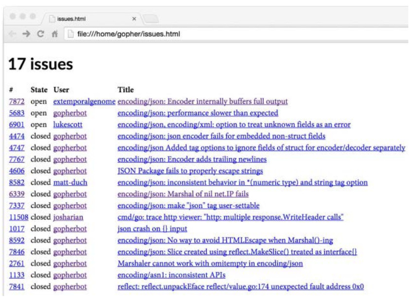
Ninguno de los temas en la Figura 4.4 representan un desafio para HTML, pero podemos ver el efecto mas claramente con temas cuyos titulos contienen metacaracteres HTML como & y <. Hemos seleccionado dos problemas para este ejemplo:
La Figura 4.5 muestra el resultado de esta consulta. Observe que el paquete html/template de forma automatica escapa los titulos HTML de modo que aparezcan literalmente. Si por error hubieramos usado el paquete text/template, la cadena de cuatro caracteres "<" se habria convertido en el caracter '<' y la cadena "<link>" se habria convertido en un elemento link, cambiando la estructura del documento HTML y tal vez comprometiendo su seguridad.
Podemos suprimir este comportamiento de auto-escape para los campos que contienen datos HTML confiables mediante el uso de un tipo de cadena denominada template.HTML en lugar de string . Existen tipos con nombres similares para JavaScript, CSS y URL de confianza. El siguiente programa demuestra el principio usando campos con el mismo valor, pero con diferentes tipos: c(A) es un string y B es un template.HTML.
Figura 4.5. Los metacaracteres HTML del titulos de temas se muestran correctamente.
funcmain(){consttempl=`<p>A: {{.A}}</p><p>B: {{.B}}</p>`t:=template.Must(template.New("escape").Parse(templ))vardatastruct{Astring// texto sin fiavilidadBtemplate.HTML// HTML confiable}data.A="<b>Hello!</b>"data.B="<b>Hello!</b>"iferr:=t.Execute(os.Stdout,data);err!=nil{log.Fatal(err)}}
La Figura 4.6 muestra la salida de la plantilla tal como aparece en un navegador. Podemos ver que A esta sujeto a escapar, pero B no.
Figura 4.6. Los valores de cadena tinen escapado HTML escapado, pero los valores template.HTML no.
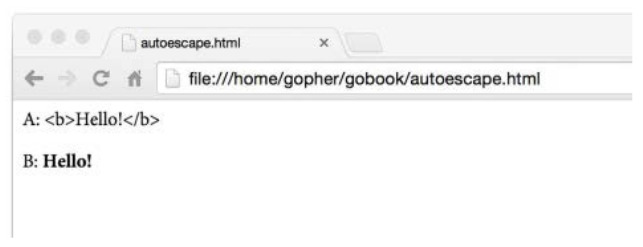
Tenemos espacio aqui para mostrar solo las caracteristicas mas basicas del sistema de plantillas. Como siempre, para obtener mas informacion, consulte la documentacion del paquete:
$ go doc text/template
$ go doc html/template
Ejercicio 4.14: Crear un servidor web que consulta GitHub una vez y luego permita la navegacion de la lista de informe de errores, hitos y usuarios.
Funciones
Una funcion nos permite envolver una secuencia de sentencias como una unidad que se puede llamar desde cualquier lugar de un programa, tal vez varias veces. Las funciones hacen posible romper un gran trabajo en pedazos mas pequeños que bien podrian ser escritos por diferentes personas separadas por el tiempo y el espacio. Una funcion oculta sus detalles de implementacion a sus usuarios. Por todas estas razones, las funciones son una parte critica de cualquier lenguaje de programacion.
Ya hemos visto muchas funciones. Ahora tomaremos un tiempo para una discusion mas exhaustiva. El ejemplo de ejecucion de este capitulo es un rastreador web, es decir, el componente de un motor de busqueda web responsable de buscar paginas web, descubrir los vinculos dentro de ellas, buscar las paginas identificadas por dichos vinculos, etc. Un rastreador web nos da una amplia oportunidad para explorar la recursividad, funciones anonimas, manejo de errores y aspectos de funciones que son unicos de Go.
Declaracion de Funciones
Una declaracion de funcion tiene un nombre, una lista de parametros, una lista opcional de resultados y un cuerpo:
La lista de parametros especifica el nombres y tipos de los parametros de la funcion, que son las variables locales cuyos valores o argumentos son suministrados por quien hace la llamada. La lista de resultados especifica los tipos de los valores que devuelve la funcion. Si la funcion devuelve un resultado sin nombre o ningun resultado, los parentesis son opcionales y normalmente se omiten. Dejar fuera la lista de resultados declara completamente que una funcion que no devuelve ningun valor y se llama solo por sus efectos. En la funcion hypot,
x y y son parametros en la declaracion, 3 y 4 son argumentos de la llamada, y la funcion devuelve un valor float64.
Al igual que los parametros, los resultados pueden tener nombre. En ese caso, cada nombre declara una variable local inicializada al valor cero para su tipo.
Una funcion que tiene una lista de resultados debe terminar con una declaracion return, a menos que la ejecucion claramente no pueda llegar al final de la funcion, tal vez porque la funcion termina con una llamada a panic o un bucle for infinito sin break.
Como hemos visto con hypot, una secuencia de parametros o resultados del mismo tipo puede ser un factor para que el propio tipo se escriba una sola vez. Estas dos declaraciones son equivalentes:
Aqui hay cuatro formas de declarar una funcion con dos parametros y un resultado, todos de tipo int. El identificador en blanco puede usarse para enfatizar que un parametro no se utiliza.
El tipo de una funcion a veces se denomina su firma. Dos funciones tienen el mismo tipo o firma si tienen la misma secuencia de tipos de parametros y la misma secuencia de tipos de resultados. Los nombres de los parametros y resultados no afectan al tipo, ni tampoco si se declararon utilizando el formto factorizado.
Cada llamada de funcion debe proporcionar un argumento para cada parametro, en el orden en que se declararon los parametros. Go no tiene concepto de valores de parametro predeterminados, ni ninguna forma de especificar argumentos por nombre, por lo que los nombres de parametros y resultados no importan al llamador, excepto como documentacion.
Los parametros son variables locales dentro del cuerpo de la funcion, con sus valores iniciales establecidos a los argumentos proporcionados por quien realiza la llamada. Los parametros de funcion y los resultados con nombre son variables en el mismo bloque lexico que las variables locales mas externas de la funcion.
Los argumentos se pasan por valor, por lo que la funcion recibe una copia de cada argumento; Las modificaciones a la copia no afectan a la persona que llama. Sin embargo, si el argumento contiene algun tipo de referencia, como un puntero, slice, mapa, funcion o canal, entonces la persona que llama puede verse afectada por las modificaciones que hace la funcion de las variables que referencian indirectamente por el argumento.
De vez en cuando puede encontrar una declaracion de funcion sin un cuerpo, lo que indica que la funcion se implementa en un idioma que no es Go. Dicha declaracion define la firma de la funcion.
packagemathfuncSin(xfloat64)float64// implementado en lenguaje ensamblador
Recursividad
Las funciones pueden ser recursivas, es decir, que pueden llamarse a si mismas, ya sea directa o indirectamente. La recursion es una tecnica poderosa para muchos problemas, y por supuesto es esencial para procesar estructuras de datos recursivas. En la Seccion 4.4, se utilizo la recursividad sobre un arbol para implementar un mecanismo de insercion sencillo. En esta seccion, volveremos a usarlo para procesar documentos HTML.
El siguiente programa de ejemplo utiliza un paquete no estandar, golang.org/x/net/html, que proporciona un analizador de HTML. Los repositorios golang.org/x/... tienen paquetes diseñados y mantenidos por el equipo de Go para aplicaciones tales como redes, procesamiento de texto internacionalizado, plataformas moviles, manipulacion de imagenes, criptografia, y herramientas de desarrollo. Estos paquetes no estan en la libreria estandar porque todavia estan en desarrollo o porque son raramente necesarios por la mayoria de los programadores de Go.
Las partes de la API golang.org/x/net/html que tendremos que se muestran a continuacion. La funcion html.Parse lee una secuencia de bytes, los analiza, y devuelve la raiz del arbol del documento HTML, que es un html.Node. HTML tiene varios tipos de nodos–texto, comentarios, etc.–pero aqui solo nos interesan con nodos de elemento de la forma <nombre clave='valor'>.
// Findlinks1 imprime los enlaces en un documento HTML leido en la entrada estandarpackagemainimport("fmt""os""golang.org/x/net/html")funcmain(){doc,err:=html.Parse(os.Stdin)iferr!=nil{fmt.Fprintf(os.Stderr,"findlinks1: %v\n",err)os.Exit(1)}for_,link:=rangevisit(nil,doc){fmt.Println(link)}}
La funcion visit atraviesa un arbol de nodos HTML, extrae el enlace desde el atributo href de cada elemento de anclaje<a href='...'>, añade los enlaces a un slice de strings, y devuelve el slice resultante:
// visit agrega los enlaces de cada enlace encontrado en n y devuelve el resultadofuncvisit(links[]string,n*html.Node)[]string{ifn.Type==html.ElementNode&&n.Data=="a"{for_,a:=rangen.Attr{ifa.Key=="href"{links=append(links,a.Val)}}}forc:=n.FirstChild;c!=nil;c=c.NextSibling{links=visit(links,c)}returnlinks}
Para descender por el arbol a un nodo n, visit se llama a si misma recursivamente para cada uno de los hijos de n, que se mantienen en el lista enlazada FirstChild.
Vamos a ejecutar findlinks en la pagina principal de Go, canalizando el resultado de fetch (§1.5) a la entrada de findlinks. Hemos modificado la salida ligeramente por brevedad.
Observe la variedad de formas de enlaces que aparecen en la pagina. Mas adelante veremos como resolverlos con relacion al URL base, https://golang.org, para crear URL absolutas.
El siguiente programa utiliza la recursion sobre el arbol de nodos HTML para imprimir la estructura del arbol en esquema. Cuando encuentra cada elemento, empuja la etiqueta del elemento sobre una pila, luego imprime la pila.
Considere una sutileza: aunque outlineempuja un elemento en el stack, no hay ninguna extraccion correspondiente. Cuando outline se llama a si misma de forma recursiva, el receptor recibe una copia del stack. Aunque el destinatario de la llamada puede añadir elementos a este slice, modificando de su arreglo subyacente e incluso asignando un nuevo arreglo, no modifica los elementos iniciales que son visibles para quien realiza la llamada, asi que cuando la funcion regresa, el stack del llamantede es tal cual antes de la llamada.
Aqui esta el esquema de https://golang.org, editado nuevamente por razones de brevedad:
$ go build gopl.io/ch5/outline
$ ./fetch https://golang.org | ./outline
[html][html head][html head meta][html head title][html head link][html body][html body div][html body div][html body div div][html body div div form][html body div div form div][html body div div form div a]
Como puede ver mediante la experimentacion con outline, la mayoria de los documentos HTML pueden ser procesados con solo unos pocos niveles de recursividad, pero no es dificil de construir paginas web patologicas que requieren una recursion extremadamente profunda.
Muchas implementaciones de lenguaje de programacion utilizan una funcion stack de tamaño fijo; Tamaños de 64KB a 2MB son tipicos. Pilas de tamaño fijo imponen un limite en la profundidad de la recursividad, por lo que hay que tener cuidado para evitar un desbordamiento de pila cuando se atraviesa grandes estructuras de datos de forma recursiva; Las pilas de tamaño fijo pueden incluso suponer un riesgo para la seguridad. En contraste, las implementaciones tipicas de Go usan pilas de tamaño variable que comienzan pequeñas y crecen segun sea necesario hasta un limite del orden de un gigabyte. Esto nos permite usar la recursion de forma segura y sin preocuparnos por el desbordamiento.
Ejercicio 5.1: Cambiar el programa findlinks para atravesar la lista enlazada n.FirstChild mediante llamadas recursivas a visit en lugar de un bucle.
Ejercicio 5.2: Escribir una funcion para rellenar un mapeo con los nombres de los elementos–p, div, span, y asi sucesivamente-al numero de elementos con ese nombre en un arbol de documentos HTML.
Ejercicio 5.3: Escribir una funcion para imprimir el contenido de todos los nodos de texto en un arbol de documentos HTML. No descender dentro de elementos <script> o <style>, ya que sus contenidos no son visibles en un navegador web.
Ejercicio 5.4: Extender la funcion visit para que los extractos otros tipos de enlaces desde el documento, como imagenes, scripts y hojas de estilo.
Multiples Valores de Retorno
Una funcion puede devolver mas de un resultado. Hemos visto muchos ejemplos de funciones de paquetes estandar que devuelven dos valores, el resultado computacional deseado y un valor de error o booleano que indica si el calculo funciono. El siguiente ejemplo muestra como escribir una nosotros mismos.
El programa siguiente es una variacion de findlinks que hace la peticion HTTP por si mismo, asi que ya no necesitamos para ejecutar fetch. Ya que las operaciones de analisis y HTTP pueden fallar, findLinks declara dos resultados: la lista de enlaces descubiertos y un error. Por cierto, el analizador de HTML por lo general puede recuperarse de una entrada incorrecta y construir un documento que contiene nodos de error, por lo Parse raramente falla; Cuando lo hace, normalmente se debe a errores de E/S subyacentes.
funcmain(){for_,url:=rangeos.Args[1:]{links,err:=findLinks(url)iferr!=nil{fmt.Fprintf(os.Stderr,"findlinks2: %v\n",err)continue}for_,link:=rangelinks{fmt.Println(link)}}}// findLinks realiza una peticion HTTP GET por la url, analiza la// respuesta como HTML, y extrae y regresa los enlaces.funcfindLinks(urlstring)([]string,error){resp,err:=http.Get(url)iferr!=nil{returnnil,err}ifresp.StatusCode!=http.StatusOK{resp.Body.Close()returnnil,fmt.Errorf("getting %s: %s",url,resp.Status)}doc,err:=html.Parse(resp.Body)resp.Body.Close()iferr!=nil{returnnil,fmt.Errorf("parsing %s as HTML: %v",url,err)}returnvisit(nil,doc),nil}
Hay cuatro sentencias return en findLinks, cada uno de las cuales devuelve un par de valores. Los tres primeros return hacen la funcion pase los errores subyacentes de los paquetes http y html al llamador. En el primer caso, el error se devuelve sin cambios; en el segundo y tercero, que expande con informacion de contexto adicional con fmt.Errorf (§7.8). Si findLinks tiene exito, la ultima sentencia return devuelve el slice de enlaces, sin error.
Debemos asegurarnos de cerrar resp.Body para que los recursos de red se liberen adecuadamente, incluso en caso de error. El recolector de basura de Go recicla la memoria no utilizada, pero no asume que liberara recursos del sistema operativo no utilizados como archivos abiertos y conexiones de red. Deberan cerrarse explicitamente.
El resultado de llamar a una funcion multi-valor es una tupla de valores. El llamador de tal funcion debe asignar explicitamente los valores a las variables si se desea utilizar alguna de ellas:
links,err:=findLinks(url)
Para ignorar uno de los valores, asintelo al identificador en blanco:
links,_:=findLinks(url)// errors ignored
El resultado de una llamada multi-valor en si puede ser devuelto desde una llamada funcion (multi-valor), como en esta funcion que se comporta como findLinks pero registra su argumento:
Una llamada multi-valor puede aparecer como el unico argumento cuando se llama a una funcion de multiples parametros. Aunque rara vez se utiliza en codigo de produccion, esta caracteristica es a veces conveniente durante la depuracion, ya que nos permite imprimir todos los resultados de una llamada utilizando una sola sentencia. Las dos instrucciones de impresion siguientes tienen el mismo efecto.
Los nombres bien elegidos pueden documentar la importancia de los resultados de una funcion. Los nombres son particularmente valiosos cuando una funcion devuelve multiples resultados del mismo tipo, como
Pero no siempre es necesario nombrar multiples resultados unicamente para la documentacion. Por ejemplo, la convencion dicta que un resultado final bool indica el exito; un resultado erroneo a menudo no necesita explicacion.
En una funcion con resultados nombrados, se pueden omitir los operandos de una sentencia de devolucion. Esto se llama un retorno desnudo.
// CountWordsAndImages realiza una peticion HTTP GET para la URL del// documento HTML y regresa el numero de palabras e imagenes que contiene.funcCountWordsAndImages(urlstring)(words,imagesint,errerror){resp,err:=http.Get(url)iferr!=nil{return}doc,err:=html.Parse(resp.Body)resp.Body.Close()iferr!=nil{err=fmt.Errorf("parsing HTML: %s",err)return}words,images=countWordsAndImages(doc)return}funccountWordsAndImages(n*html.Node)(words,imagesint){/* ... */}
Un retorno desnudo es una forma abreviada de devolver cada una de las variables de resultado nombradas en orden, por lo que en la funcion anterior, cada sentencia return es equivalente a
returnwords,images,err
En funciones como esta, con muchas declaraciones de retorno y varios resultados, los resultados desnudos pueden reducir la duplicacion de codigo, pero rara vez hacen que el codigo sea mas facil de entender. Por ejemplo, no es obvio a primera vista que los dos primeros resultados son equivalentes a return 0, 0, err (porque las variables de resultado words e images se inicializan con sus valores cero) y que el ultimo return es equivalente a return words, images, nil. Por esta razon, es mejor utilizar los resultados desnudos con moderacion.
Ejercicio 5.5: Implementar countWordsAndImages. (Ver el ejercicio 4.9 para la division de palabras.)
Ejercicio 5.6: Modificar la funcion corner en gopl.io/ch3/surface (§3.2) para utilizar resultados con nombre y una declaracion de retorno desnudo.
Errores
Algunas funciones siempre tienen exito en su tarea. Por ejemplo, strings.Contains y strconv.FormatBool tienen bien definidos todos los posibles valores de los argumentos y no pueden fallar–salvo escenarios catastroficos e impredecibles como quedarse sin memoria, donde el sintoma esta lejos de la causa y de la cual hay poca esperanza de recuperacion.
Otras funciones siempre tienen exito siempre y cuando se cumplan sus condiciones previas. Por ejemplo, la funcion time.Date siempre construye un time.Time a partir de sus componentes–año, mes, y asi sucesivamente–a menos que el ultimo argumento (la zona horaria) sea nil, en cuyo caso se entra en panico. Este panico es un signo seguro de un error en el codigo de llamada y nunca debe suceder en un programa bien escrito.
Para muchas otras funciones, incluso en un programa bien escrito, el exito no esta asegurado porque depende de factores ajenos al control del programador. Cualquier funcion que haga E/S, por ejemplo, debe enfrentarse a la posibilidad de error, y solo un programador ingenuo cree que una simple lectura o escritura no puede fallar. De hecho, es cuando las operaciones mas confiables fallan inesperadamente que necesitamos saber por que.
Los errores son, por lo tanto, una parte importante de la API de un paquete o de la interfaz de usuario de una aplicacion, y el error es solo uno de varios comportamientos esperados. Este es el enfoque que Go toma respecto al manejo de errores.
Una funcion cuyo fallo es un comportamiento esperado devuelve un resultado adicional, convencionalmente el ultimo. Si el fallo tiene solo una causa posible, el resultado es un valor booleano, generalmente llamado ok, como en este ejemplo de una busqueda en la cache que siempre tiene exito a menos que no hubiera ninguna entrada para esa clave:
value,ok:=cache.Lookup(key)if!ok{// ...cache[key] does not exist...}
Mas a menudo, y especialmente para E/S, el fallo puede tener una variedad de causas para las cuales el llamador necesitara una explicacion. En tales casos, el tipo del resultado adicional es error.
El tipo nativo error es un tipo de interfaz. Veremos mas de lo que esto significa y sus implicaciones para el manejo de errores en el Capitulo 7. Por ahora es suficiente saber que un error puede ser o no nil, que nil implica el exito y no-nil implica el fracaso, y que un error no-nil tiene una cadena del mensaje de error que se puede obtener llamando a su metodo Error o imprimir mediante fmt.Println(err) o fmt.Printf("%v", err).
Normalmente cuando una funcion devuelve un error no-nil, sus otros resultados son indefinidos y se deben ignorar. Sin embargo, algunas funciones pueden devolver resultados parciales en casos de error. Por ejemplo, si se produce un error durante la lectura de un archivo, una llamada a Read devuelve el numero de bytes que fue capaz de leer y un valor error que describe el problema. Para el comportamiento correcto, algunos llamadores pueden necesitar procesar los datos incompletos antes de manejar el error, por lo que es importante que estas funciones documente claramente sus resultados.
El enfoque de Go lo diferencia de muchos otros lenguajes en los que se reportan fallos utilizando excepciones, no valores normales. Aunque Go tiene un mecanismo de excepcion, como veremos en la Seccion 5.9, se utiliza solo para informar de los errores realmente inesperadas que indican un error, no los errores de rutina que un programa robusto deberia esperar.
La razon de este diseño es que las excepciones tienden a enredar la descripcion de un error con el flujo de control requerido para manejarlo, conduciendo a menudo a un resultado indeseable: los errores de rutina se informan al usuario final en forma de un rastro de pila incomprensible, lleno de informacion sobre la estructura del programa pero carece de un contexto inteligible sobre lo que salio mal.
Por el contrario, los programas Go utilizan mecanismos de control de flujo normales como if y return para responder a los errores. Este estilo indudablemente exige que se preste mas atencion a la logica de manejo de errores, pero ese es precisamente el punto.
Estrategias de Manejo de Errores
Cuando una llamada de funcion devuelve un error, es responsabilidad del llamador comprobarlo y tomar la accion apropiada. Dependiendo de la situacion, puede haber una serie de posibilidades. Echemos un vistazo a cinco de ellas.
La primera y mas comun, es propagar el error, por lo que un fallo en una subrutina se convierte en un fracaso de la rutina de llamada. Vimos ejemplos de esto en la funcion findLinks de la Seccion 5.3. Si la llamada a http.Get falla, findLinks devuelve el error HTTP a la persona al llamador sin mas preambulos:
resp,err:=http.Get(url)iferr!=nil{returnnil,err}
Por el contrario, si la llamada a html.Parse falla, findLinks no devuelve el error del analizador de HTML directamente, porque carece de dos piezas cruciales de informacion: que se produjo el error en el analizador, y la direccion URL del documento que se esta analizando. En este caso, findLinks construye un nuevo mensaje de error que incluye las dos piezas de informacion, asi como un analisis del error subyacente:
doc,err:=html.Parse(resp.Body)resp.Body.Close()iferr!=nil{returnnil,fmt.Errorf("parsing %s as HTML: %v",url,err)}
La funcion fmt.Errorf da formato a un mensaje de error utilizando fmt.Sprintf y devuelve un nuevo valor error. Lo utilizamos para generar errores descriptivos mediante el prefijo sucesivo de informacion de contexto adicional al mensaje de error original. Cuando el error es en ultima instancia, manejado por la funcion main del programa, se debe proporcionar una cadena causal clara a partir de la raiz del problema de la falta en su conjunto, que recuerda a una investigacion de accidentes de la NASA:
genesis: crashed: no parachute: G-switch failed: bad relay orientation
Debido a que los mensajes de error con frecuencia se encadenan juntos, las cadenas de mensajes no deben ser mayusculas y las lineas nuevas deben evitarse. Los errores resultantes pueden ser largos, pero seran autocontenidos cuando sean encuontrados por herramientas como grep.
Cuando diseñe mensajes de error, sea deliberado, de modo que cada uno sea una descripcion significativa del problema con detalles suficientes y relevantes, y sea consistente, de modo que los errores devueltos por la misma funcion o por un grupo de funciones en el mismo paquete sean similares en forma y se puedan tratar de la misma manera.
Por ejemplo, el paquete os garantiza que cada error devuelto por una operacion de archivo, como os.Open o los metodos Read, Write, o Close de un archivo abierto, no describen solo la naturaleza de la falla (permiso denegado, directorio erroneo, etc), sino tambien el nombre del archivo, por lo el que llamador no necesita incluir esta informacion en el mensaje de error.
En general, la llamada f(x) es responsable de informar el intento de operacion f y el valor del argumento x en su relacion con el contexto del error. El llamador es responsable de añadir mas informacion que tiene, pero la llamada f(x) no, tal como la URL en la llamada a html.Parse anterior.
Pasemos a la segunda estrategia para manejar errores. Para errores que representan problemas transitorios o impredecibles, puede tener sentido volver a intentar la operacion fallida, posiblemente con un retardo entre intentos, y tal vez con un limite en el numero de intentos o el tiempo dedicado a tratar antes de renunciar por completo.
// WaitForServer intenta ponerse en contacto con el servidor de una URL// Se intenta durante un minuto usando retroceso exponencial.// Informa un error si todos los intentos fallan.funcWaitForServer(urlstring)error{consttimeout=1*time.Minutedeadline:=time.Now().Add(timeout)fortries:=0;time.Now().Before(deadline);tries++{_,err:=http.Head(url)iferr==nil{returnnil// exito}log.Printf("server not responding (%s); retrying...",err)time.Sleep(time.Second<<uint(tries))// retroceso exponencial}returnfmt.Errorf("server %s failed to respond after %s",url,timeout)}
En tercer lugar, si el progreso es imposible, el llamante puede imprimir el error y detener el programa con gracia, pero este curso de accion generalmente debe reservarse para el paquete principal de un programa. Las funciones de la libreria normalmente deben propagar errores al llamante, a menos que el error sea un signo de una inconsistencia interna, es decir, un error.
// (Dentro de la funcion main.)iferr:=WaitForServer(url);err!=nil{fmt.Fprintf(os.Stderr,"Site is down: %v\n",err)os.Exit(1)}
Una forma mas conveniente para lograr el mismo efecto es llamar a log.Fatalf. Al igual que con todas las funciones log, por defecto se prefija la hora y la fecha para el mensaje de error.
iferr:=WaitForServer(url);err!=nil{log.Fatalf("Site is down: %v\n",err)}
El formato predeterminado es util en un servidor de larga ejecucion, pero menos para una herramienta interactiva:
2006/01/02 15:04:05 Site is down: no such domain: bad.gopl.io
Para una salida mas atractiva, podemos establecer el prefijo utilizado por el paquete log en el nombre del comando, y suprimir la visualizacion de la fecha y hora:
log.SetPrefix("wait: ")log.SetFlags(0)
En cuarto lugar, en algunos casos, basta con registrar el error y luego continuar, tal vez con funcionalidad reducida. Una vez mas hay una eleccion entre utilizar el paquete log, que añade el prefijo habitual:
(Todas las funciones log añaden un salto de linea si no hay uno presente).
Y quinto y ultimo, en casos raros podemos ignorar un error completamente:
dir,err:=ioutil.TempDir("","scratch")iferr!=nil{returnfmt.Errorf("failed to create temp dir: %v",err)}// ...use temp dir...os.RemoveAll(dir)// ignorar errores; $TMPDIR se limpia periodicamente
La llamada a os.RemoveAll puede fallar, pero el programa lo ignora porque el sistema operativo periodicamente limpia el directorio temporal. En este caso, descartar el error fue intencional, pero la logica del programa seria la misma si hubieramos olvidado tratar con el. Adquiera el habito de considerar errores despues de cada llamada de funcion, y cuando deliberadamente ignora uno, documente claramente su intencion.
El manejo de errores en Go tiene un ritmo particular. Despues de comprobar un error, el fracaso suele tratarse antes del exito. Si el fallo hace que la funcion regrese, la logica para el exito no se sangra dentro de un bloque else, pero continua en el nivel externo. Las funciones tienden a exhibir una estructura comun, con una serie de comprobaciones iniciales para rechazar errores, seguidas por la esencia de la funcion al final, minimamente indentada.
Fin de Archivo (EOF)
Normalmente, la variedad de errores que una funcion puede devolver es interesante para el usuario final, pero no para la logica del programa intermedio. En ocasiones, sin embargo, un programa debe tomar diferentes acciones dependiendo del tipo de error que se ha producido. Considere un intento de leer n bytes de datos de un archivo. Si se elige n para ser la longitud del archivo, cualquier error representa un fracaso. Por otro lado, si el llamador trata repetidamente de leer fragmentos de tamaño fijo hasta que el archivo se agote, el llamador debe responder de manera diferente a una condicion de fin de archivo que a todos los demas errores. Por esta razon, el paquete io garantiza que cualquier daño causado por una condicion de fin de archivo siempre informa de un error distinguida, io.EOF, que se define de la siguiente manera:
packageioimport"errors"// EOF es el error devuelto por Read cuando no hay mas entrada disponible.varEOF=errors.New("EOF")
El llamador puede detectar esta condicion usando una comparacion simple, como en el bucle siguiente, que lee runas de la entrada estandar. (El programa charcount en la Seccion 4.3 ofrece un ejemplo mas completo.)
Puesto que en una condicion de fin de archivo no existe informacion que informar ademas del hecho de que, io.EOF tiene un mensaje de error fijo, "EOF". Para otros errores, es posible que tengamos que informar tanto la calidad como la cantidad del error, por asi decirlo, por lo que un valor de error fijo no lo hara. En la Seccion 7.11, vamos a presentar de manera mas sistematica a distinguir ciertos valores de error de los demas.
Valores de la Funcion
En Go las funciones son valores de primera clase: al igual que otros valores, los valores de funcion tienen tipos, y pueden ser asignados a variables o pasarse a o regresarlas de funciones. Un valor de funcion puede ser llamado como cualquier otra funcion. Por ejemplo:
funcsquare(nint)int{returnn*n}funcnegative(nint)int{return-n}funcproduct(m,nint)int{returnm*n}f:=squarefmt.Println(f(3))// "9"f=negativefmt.Println(f(3))// "-3"fmt.Printf("%T\n",f)// "func(int) int"f=product// error de compilacion: no se puede asignar f(int, int) int a f(int) int
El valor cero para el tipo funcion es nil. Llamar a un valor de funcion nulo produce un panico:
varffunc(int)intf(3)// panico: llamar a funcion nil
Los valores de funcion pueden compararse con nil:
varffunc(int)intiff!=nil{f(3)}
Pero no son comparables, por lo que no pueden comparse entre si o utilizarse como claves en un mapa.
Los valores de las funciones nos permiten parametrizar nuestras funciones no solo sobre los datos sino tambien sobre el comportamiento. Las librerias estandar contienen muchos ejemplos. Por ejemplo, strings.Map aplica una funcion a cada caracter de una cadena, uniendo los resultados para formar otra cadena.
La funcion findLinks de la Seccion 5.2 utiliza una funcion auxiliar, visit, para visitar todos los nodos en un documento HTML y aplicar una accion a cada uno. Usando el valor de una funcion, podemos separar la logica del recorrido del arbol de la logica para la accion a aplicar a cada nodo, permitiendonos reutilizar el recorrido con diferentes acciones.
// forEachNode llama a las funciones pre(x) y post(x) para cada nodo// x en el arbol originado en n. Ambas funciones son opcionales.// pre se llama antes de que los hijos sean visitados (preorden) y// post se llama despues (postorden).funcforEachNode(n*html.Node,pre,postfunc(n*html.Node)){ifpre!=nil{pre(n)}forc:=n.FirstChild;c!=nil;c=c.NextSibling{forEachNode(c,pre,post)}ifpost!=nil{post(n)}}
La funcion forEachNode acepta dos argumentos de funcion, una para llamar antes de que se visiten los hijos de un nodo y otra para llamar despues. Esta disposicion da a al lamador una gran flexibilidad. Por ejemplo, las funciones startElement y endElement imprimen las etiquetas de inicio y fin de un elemento HTML, como <b>...</b>:
Las funciones tambien indentan la salida usando otro truco de fmt.Printf. El adverbio * en %*s imprime una cadena rellena con un numero variable de espacios. La anchura y la cadena se proporcionan por los argumentos depth*2 y "".
Si llamamos a forEachNode en un documento HTML, de esta forma:
forEachNode(doc,startElement,endElement)
obtenemos una variacion mas elaborada en la salida de nuestra programa outline anterior:
Ejercicio 5.7: Desarrolla startElement y endElement en una agradable impresora HTML general. Imprime los nodos de comentarios, nodos de texto y los atributos de cada elemento (<a href='...'>). Utilizar formas cortas como <img/> en lugar de <img></img> cuando un elemento no tiene hijos. Escribir una prueba para asegurarse de que la salida se puede analizar con exito. (Vease el Capitulo 11).
Ejercicio 5.8: Modificar forEachNode para que las funciones pre y post devuelvan un resultado booleano que señale si se debe continuar el recorrido. Utilicelo para escribir una funcion ElementByID con la siguiente firma que se encuentra el primer elemento HTML con el atributo id especificado. La funcion debe detener el recorrido tan pronto como se encuentre una coincidencia.
funcElementByID(doc*html.Node,idstring)*html.Node
Ejercicio 5.9: Escribir una funcion expand(s string, f func(string) string) string que reemplaze cada subcadena "$foo" dentro de s con el texto devuelto por f("foo").
Funciones Anonimas
Funciones con nombre se pueden declarar solo a nivel de paquete, pero podemos utilizar un literal de funcion para denotar un valor de funcion dentro de cualquier expresion. Un literal funcion se escribe como una declaracion de la funcion, pero sin un nombre despues de la palabra clave func. Es una expresion, y su valor se denomina funcion anonima.
Los literales de la funcion definen una funcion en su punto de uso. A modo de ejemplo, la llamada anterior a strings.Map se puede reescribir como
Mas importante aun, las funciones definidas de esta manera tienen acceso a todo el entorno lexico, por lo que la funcion interna puede referirse a variables de la funcion de inclusion, como muestra este ejemplo:
// squares regresa una funcion que devuelve el siguiente// cuadrado del numero cada ves que se llama.funcsquares()func()int{varxintreturnfunc()int{x++returnx*x}}funcmain(){f:=squares()fmt.Println(f())// "1"fmt.Println(f())// "4"fmt.Println(f())// "9"fmt.Println(f())// "16"}
La funcion squares devuelve otra funcion, de tipo func() int. Una llamada a squares crea una variable local x y devuelve una funcion anonima que, cada vez que se llama, incrementa x y devuelve su cuadrado. Una segunda llamada a squares crearia una segunda variable x y devolvera una nueva funcion anonima que incremente esa variable.
El ejemplo squares demuestra que los valores de funcion no son solo codigo, sino que pueden tener estado. La funcion anonima interna puede acceder y actualizar las variables locales dentro de la funcion squares. Estas referencias de variables ocultas son el por que clasificamos a las funciones como tipos de referencia y motivo de que los valores de las funciones no sean comparables. Los valores de funcion como estos se implementan utilizando una tecnica llamada closures, y los programadores Go a menudo utilizan este termino para los valores de la funcion.
Aqui de nuevo vemos un ejemplo donde el tiempo de vida de una variable no esta determinada por su ambito de aplicacion: la variable x existe despues del retorno de squares dentro de main, aunque x este oculta dentro de f.
Como un ejemplo un tanto academico de funciones anonimas, considere el problema de calcular una secuencia de los cursos de ciencias de la computacion que satisfagan los requisitos previos de cada uno. Los prerequisitos se dan en la tabla prereqs de abajo, que es un mapeo de cada curso a la lista de cursos que se deben completar antes de ella.
// prereqs asigna cursos de ciencia de la computacion a sus prerequisitos.varprereqs=map[string][]string{"algoritmos":{"estructura de datos"},"calculo":{"algebra lineal"},"compiladores":{"estructura de datos","lenguajes formales","organizacion de computadoras",},"estructura de datos":{"matematicas discretas"},"bases de datos":{"estructura de datos"},"matematicas discretas":{"introduccion a la programacion"},"lenguajes formales":{"matematicas discretas"},"redes":{"sitemas operativos"},"sistemas operativos":{"estructura de datos","organizacion de computadoras"},"lenguajes de programacion":{"estructura de datos","organizacion de computadoras"},}
Este tipo de problema se conoce como clasificacion topologica. Conceptualmente, la informacion de los requisitos previos forma un grafico dirigido con un nodo para cada curso y los bordes de cada curso a los cursos de los que depende. El grafico es aciclico: no hay camino de un curso que vuelva a si mismo. Podemos calcular una secuencia valida usando la busqueda de profundidad en el grafico con el siguiente codigo:
Cuando una funcion anonima requiere recursion, como en este ejemplo, primero debemos declarar una variable, y luego asignar la funcion anonima a esa variable. Si estos dos pasos estuvieran combinados en la declaracion, la funcion literal no estaria dentro del alcance de la variable visitAll por lo que no tendria ninguna manera de llamarse a si misma de forma recursiva:
La salida del programa toposort se muestra a continuacion. Es determinista, una propiedad a menudo deseable que no siempre viene de forma gratuita. En este caso, los valores del mapa prereqs son slices, no mas mapas, por lo que su orden de iteracion es determinista, y ordenamos las llaves de prereqs antes de hacer las llamadas iniciales a visitAll .
1: introduccion a la programacion
2: matematicas discretas
3: estructura de datos
4: algoritmos
5: algebra lineal
6: calculo
7: lenguajes formales
8: organizacion de computadoras
9: compiladores
10: bases de datos
11: sistemas operativos
12: redes
13: Lenguajes de programacion
Volvamos a nuestro ejemplo findLinks. Hemos movido la funcion de extraccion de enlaces links.Extract a su propio paquete, ya que la usaremos de nuevo en el Capitulo 8. Hemos sustituido la funcion visit con una funcion anonima que agrega directamente los links al slice, y utilizamos forEachNode para manejar el recorrido. Ya que Extract solo necesita la funcion pre, se pasa nil para el argumento post.
// El paquete links proporciona una funcion de extraccion de links.packagelinksimport("fmt""net/http""golang.org/x/net/html")// Extract hace una peticion HTTP GET a la URL especificada, analiza// la respuesta como HTML, y regresa el enlace en el documento HTML.funcExtract(urlstring)([]string,error){resp,err:=http.Get(url)iferr!=nil{returnnil,err}ifresp.StatusCode!=http.StatusOK{resp.Body.Close()returnnil,fmt.Errorf("getting %s: %s",url,resp.Status)}doc,err:=html.Parse(resp.Body)resp.Body.Close()iferr!=nil{returnnil,fmt.Errorf("parsing %s as HTML: %v",url,err)}varlinks[]stringvisitNode:=func(n*html.Node){ifn.Type==html.ElementNode&&n.Data=="a"{for_,a:=rangen.Attr{ifa.Key!="href"{continue}link,err:=resp.Request.URL.Parse(a.Val)iferr!=nil{continue// ignora URLs incorrectas}links=append(links,link.String())}}}forEachNode(doc,visitNode,nil)returnlinks,nil}
En lugar de añadir el atributo href en bruto al slice links, esta version lo analiza como una direccion URL relativa a la URL base del documento, resp.Request.URL. El enlace resultante esta en formato absoluta, adecuado para su uso en una llamada a http.Get.
El rastreador web es, en su corazon, un problema de grafico transversal. El ejemplo topoSort mostra un recorrido en profundidad; Para nuestro rastreador web, vamos a utilizar la anchura de primera transversal, al menos inicialmente. En el Capitulo 8, vamos a explorar el recorrido concurrente.
La siguiente funcion encapsula la esencia de un recorrido de primer-anchura. El llamador proporciona una lista inicial worklist de elementos a visitar y un valor de la funcion f a llamar para cada elemento. Cada elemento se identifica mediante una cadena. La funcion f devuelve una lista de elementos nuevos a añadir a la lista de trabajo. La funcion breadthFirst regresa cuando todos los elementos han sido visitados. Mantiene un conjunto de cadenas para garantizar que ningun elemento se visita dos veces.
// breadthFirst llama a f para cada elemento en worklist.// Todos los elementos devueltos por f se agregan a worklist.// f se llama como maximo una vez para cada elemento.funcbreadthFirst(ffunc(itemstring)[]string,worklist[]string){seen:=make(map[string]bool)forlen(worklist)>0{items:=worklistworklist=nilfor_,item:=rangeitems{if!seen[item]{seen[item]=trueworklist=append(worklist,f(item)...)}}}}
Como explicamos al pasar por el Capitulo 3, el argumento de f(item)... hace que todos los elementos de la lista devuelta por f que se añadan a la lista de trabajo.
En nuestro rastreador, los elementos son URL. La funcion crawl que suministramos a breadthFirst imprime la URL, extrae sus enlaces, y los devuelve para que tambien se visiten..
El proceso finaliza cuando todas las paginas web alcanzables se han rastreado o se ha agotado la memoria del equipo.
Ejercicio 5.10: Vuelve a escribir topoSort para utilizar mapas en lugar de slices y eliminar la clasificacion inicial. Verifique que los resultados, aunque no deterministicos, sean ordenamientos topologicos validos.
Ejercicio 5.11: El instructor del curso de algebra lineal decide que ahora es un requisito previo. Extender la funcion topoSort para reportar ciclos.
Ejercicio 5.12: Las funciones startElement y endElement en gopl.io/ch5/outline2 (§5.5) comparten una variable global, depth. Conviertalas en funciones anonimas que compartan una variable local de la funcion outline.
Ejercicio 5.13: Modificar crawl para hacer copias locales de las paginas que encuentre, la creando directorios segun sea necesario. No haga copias de paginas que provengan de un dominio diferente. Por ejemplo, si la pagina original proviene de golang.org, guarda todos los archivos de alli, pero excluyen los de vimeo.com.
Ejercicio 5.14: Usar la funcion breadthFirst para explorar una estructura diferente. Por ejemplo, podria utilizar las dependencias de cursos del ejemplo topoSort (un grafo dirigido), la jerarquia del sistema de archivos en el ordenador (un arbol), o una lista de rutas de autobus o de metro descargados desde el sitio web de su gobierno de la ciudad (un grafo no dirigido).
Advertencia: Captura de Variables de Iteracion
En esta seccion, veremos una trampa de las reglas de alcance lexico de Go que pueden causar resultados sorprendentes. Le recomendamos que comprenda el problema antes de proceder, porque la trampa puede atrapar incluso a programadores experimentados.
Considere un programa que debe crear un conjunto de directorios y luego eliminarlos. Podemos usar una porcion de valores de funcion para mantener las operaciones de limpieza. (Para mayor brevedad, hemos omitido todo el manejo de errores en este ejemplo.)
varrmdirs[]func()for_,d:=rangetempDirs(){dir:=d// NOTA: necesario!os.MkdirAll(dir,0755)// tambien crea los directorios padrermdirs=append(rmdirs,func(){os.RemoveAll(dir)})}// ...algo de trabajo...for_,rmdir:=rangermdirs{rmdir()// clean up}
Es posible que se pregunte por que asignamos la variable de bucle d a una nueva variable local dir dentro del cuerpo del bucle, en lugar de simplemente nombrar a la variable de bucle dir que en esta variante sutil incorrectos:
La razon es una consecuencia de las reglas de alcance para variables de bucle. En el programa inmediatamente anterior, el bucle for introduce un nuevo bloque lexico en el que se declara la variable dir. Todos los valores de la funcion creados por esta bucle capturan y comparten la misma variable–Un lugar de almacenamiento direccionable, no su valor en ese momento en particular. El valor de dir se actualiza en iteraciones sucesivas, de manera que cuando las funciones de limpieza son llamados, la variable dir ha sido actualizado varias veces por el ahora completado bucle for. Por lo tanto dir mantiene el valor de la iteracion final, y por lo tanto todas las llamadas a os.RemoveAll intentaran eliminar el mismo directorio.
Con frecuencia, la variable interna introducido para evitar este problema–dir en nuestro ejemplo–se le da exactamente el mismo nombre que la variable externa de la que es una copia, lo que lleva a las declaraciones de variables de aspecto extraño pero cruciales como este:
for_,dir:=rangetempDirs(){dir:=dir// declara dir interno, inicializado a dir externo// ...}
El riesgo no es unica para bucles for basados en range. El bucle en el siguiente ejemplo adolece del mismo problema debido a la captura no intencionada de la variable de indice i.
El problema de la iteracion de captura variable se encuentran mas a menudo cuando se utiliza la sentencia go (Capitulo 8) o con defer (que veremos en un momento), ya que ambos pueden retrasar la ejecucion de un valor de funcion hasta despues de que el bucle ha finalizado. Pero el problema no es inherente a go o defer.
Funciones Variadic
Una funcion variadic es uno que se puede llamar con un numero de argumentos variable. Los ejemplos mas conocidos son fmt.Printf y sus variantes. Printf requiere un argumento fijo al principio, luego acepta cualquier numero de argumentos posteriores.
Para declarar una funcion variadic, el tipo del parametro final va precedida por una elipsis, ..., que indica que la funcion puede ser llamada con cualquier numero de argumentos de este tipo.
La funcion sum anterior devuelve la suma de cero o mas argumentos int. Dentro del cuerpo de la funcion, el tipo de vals es un slice []int. Cuando llame a sum, cualquier numero de valores puede ser proporcionado pora su parametro vals.
Implicitamente, el llamador asigna un arreglo, copia los argumentos en ell y pasa un slice de toda la arreglo a la funcion. La llamada anterior se comporta de la misma manera que la llamada que se muestra a continuacion, que muestra como invocar una funcion variadica cuando los argumentos ya estan en un slice: coloca una elipsis despues del argumento final.
Aunque el parametro ...int se comporta como una slice dentro del cuerpo de la funcion, el tipo de una funcion variadic es distinto del tipo de una funcion con un parametro slice ordinario.
Las funciones variadic se utilizan a menudo para el formato de la secuencia. La funcion errorf a continuacion construye un mensaje de error con formato con un numero de linea en el principio. El sufijo f es una convencion de nomenclatura ampliamente seguido para funciones variadic que aceptan una cadena de formato de estilo Printf.
funcerrorf(linenumint,formatstring,args...interface{}){fmt.Fprintf(os.Stderr,"Line %d: ",linenum)fmt.Fprintf(os.Stderr,format,args...)fmt.Fprintln(os.Stderr)}linenum,name:=12,"count"errorf(linenum,"undefined: %s",name)// "Linea 12: sin definir: count"
El tipo interface{} significa que esta funcion puede aceptar cualquier valor en absoluto para sus argumentos finales, como explicaremos en el Capitulo 7.
Ejercicio 5.15: Escribir funciones variadic max y min, analoga a sum. ¿Que deben hacer estas funciones cuando se llaman sin argumentos? Escribir variantes que requieren al menos un argumento.
Ejercicio 5.16: Escribir una version variadic de strings.Join .
Ejercicio 5.17: Escribir una funcion variadic ElementsByTagName que, dado un arbol de nodos HTML y cero o mas nombres, devuelve todos los elementos que coinciden con uno de esos nombres. Aqui hay dos ejemplos de llamadas:
Nuestros ejemplos findLinks utilizan la salida de http.Get como la entrada de html.Parse. Esto funciona bien si el contenido de la URL solicitada es de hecho HTML, pero muchas paginas contienen imagenes, texto sin formato y otros formatos de archivo. La alimentacion de estos archivos en un analizador HTML podria tener efectos no deseados.
El siguiente programa recupera un documento HTML e imprime su titulo. La funcion title inspecciona la cabecera Content-Type de la respuesta del servidor y devuelve un error si el documento no es HTML.
functitle(urlstring)error{resp,err:=http.Get(url)iferr!=nil{returnerr}// Comprueba que Content-Type sea HTML (e.g., "text/html; charset=utf-8").ct:=resp.Header.Get("Content-Type")ifct!="text/html"&&!strings.HasPrefix(ct,"text/html;"){resp.Body.Close()returnfmt.Errorf("%s has type %s, not text/html",url,ct)}doc,err:=html.Parse(resp.Body)resp.Body.Close()iferr!=nil{returnfmt.Errorf("parsing %s as HTML: %v",url,err)}visitNode:=func(n*html.Node){ifn.Type==html.ElementNode&&n.Data=="title"&&n.FirstChild!=nil{fmt.Println(n.FirstChild.Data)}}forEachNode(doc,visitNode,nil)returnnil}
Aqui esta una sesion tipica, ligeramente editada para encajar:
$ go build gopl.io/ch5/title1
$ ./title1 http://gopl.io
The Go Programming Language
$ ./title1 https://golang.org/doc/effective_go.html
Effective Go - The Go Programming Language
$ ./title1 https://golang.org/doc/gopher/frontpage.png
title: https://golang.org/doc/gopher/frontpage.png
has type image/png, not text/html
Observe la llamada duplicada resp.Body.Close(), que asegura que title se cierre la conexion de red en todas las rutas de ejecucion, incluyendo las fallas. A medida que las funciones se vuelven mas complejas y tienen que manejar mas errores, tal duplicacion de la logica de limpieza puede convertirse en un problema de mantenimiento. Veamos como el nuevo mecanismo defer de Go hace las cosas mas sencillas.
Sintacticamente, una sentencia defer es una funcion ordinaria o una llamada a un metodo con la palabra clave defer como prefijo. Las expresiones de funcion y los argumentos se evaluan cuando se ejecuta la instruccion, pero la llamada real se aplaza hasta que la funcion que contiene la declaracion defer ha terminado, ya sea ejecutando una instruccion de retorno o llegando al final, o anormalmente, por un panico. Cualquier numero de llamadas puede ser diferido; se ejecutan en el orden inverso en que fueron aplazadas.
Una sentencia defer se utiliza a menudo con operaciones pareadas como abrir y cerrar, conectar y desconectar o bloquear y desbloquear para garantizar que los recursos se liberan en todos los casos, independientemente de la complejidad del flujo de control. El lugar adecuado para una sentencia defer que libera un recurso es inmediatamente despues de que el recurso se ha adquirido con exito. En la funcion title a continuacion, una sola llamada diferida sustituye a las dos llamadas anteriores de resp.Body.Close():
functitle(urlstring)error{resp,err:=http.Get(url)iferr!=nil{returnerr}deferresp.Body.Close()ct:=resp.Header.Get("Content-Type")ifct!="text/html"&&!strings.HasPrefix(ct,"text/html;"){returnfmt.Errorf("%s has type %s, not text/html",url,ct)}doc,err:=html.Parse(resp.Body)iferr!=nil{returnfmt.Errorf("parsing %s as HTML: %v",url,err)}// ...imprimir los elementos title del documento...returnnil}
El mismo patron se puede utilizar para otros recursos ademas de las conexiones de red, por ejemplo para cerrar un archivo abierto:
La sentencia defer tambien se puede utilizar para emparejar acciones de entrada y salida al depurar una funcion compleja. A continuacion la funcion bigSlowOperation llama inmediatamente a trace, lo que la hace una accion de entrada que devuelve un valor de funcion que, cuando se le llama, hace la accion de salida. Al diferir una llamada a la funcion devuelta de esta manera, podemos instrumentar el punto de entrada y todos los puntos de salida de una funcion en una sola declaracion, e incluso pasar valores, como el tiempo de inicion start, entre las dos acciones. Pero no se olvide de los parentesis finales en el sentencia defer, o la accion de entrada ocurrira en la salida y la accion en la salida no ocurrira en absoluto!
funcbigSlowOperation(){defertrace("bigSlowOperation")()// no olvide los parentesis adicionales// ...mucho trabajo...time.Sleep(10*time.Second)// simula el funcionamiento lento durmiendo}functrace(msgstring)func(){start:=time.Now()log.Printf("enter %s",msg)returnfunc(){log.Printf("exit %s (%s)",msg,time.Since(start))}}
Cada vez bigSlowOperation se llama, registra su entrada y salida y el tiempo transcurrido entre ellos. (Utilizamos time.Sleep para simular una operacion lenta.)
$ go build gopl.io/ch5/trace
$ ./trace
2015/11/18 09:53:26 enter bigSlowOperation
2015/11/18 09:53:36 exit bigSlowOperation (10.000589217s)
Las funciones diferidas se ejecutan despues de las declaraciones de retorno han actualizado las variables de resultado de la funcion. Debido a que una funcion anonima puede acceder a las variables de su funcion de inclusion, incluidos los resultados con nombra, una funcion anonima diferida puede observar los resultados de la funcion.
Considere la funcion doble:
funcdoble(xint)int{returnx+x}
Al nombrar a su variable de resultado y agregar una sentecia defer, podemos hacer que la funcion imprimir sus argumentos y resultados cada vez que se llame.
Dado que las funciones diferidos no se ejecutan hasta el final de la ejecucion de una funcion, una declaracion defer en un bucle merece un escrutinio adicional. El codigo siguiente podria quedar sin los descriptores de archivo ya que ningun archivo se cerrara hasta que todos los archivos se hayan procesado:
for_,filename:=rangefilenames{f,err:=os.Open(filename)iferr!=nil{returnerr}deferf.Close()// NOTA: arriesgado; podria quedarse sin los descriptores de archivo// ...procesando f...}
Una solucion es mover el cuerpo del bucle, incluyendo la declaracion defer, a otra funcion que se llame en cada iteracion.
El siguiente ejemplo es una mejora del programa fetch (§1.5) que escribe la respuesta HTTP a un archivo local en lugar de a la salida estandar. Deriva el nombre del archivo del el ultimo componente de la ruta URL, que obtiene utilizando la funcion path.Base.
// Fetch descarga la URL y regresa el rombre// y la longitud del archivo local.funcfetch(urlstring)(filenamestring,nint64,errerror){resp,err:=http.Get(url)iferr!=nil{return"",0,err}deferresp.Body.Close()local:=path.Base(resp.Request.URL.Path)iflocal=="/"{local="index.html"}f,err:=os.Create(local)iferr!=nil{return"",0,err}n,err=io.Copy(f,resp.Body)// Close file, but prefer error from Copy, if any.ifcloseErr:=f.Close();err==nil{err=closeErr}returnlocal,n,err}
La llamada diferida a resp.Body.Close deberia resultar familiar por ahora. Es tentador utilizar una segunda llamada diferida, a f.Close, para cerrar el archivo local, pero esto seria sutilmente incorrecto porque os.Create abre un archivo para escribir, crear, segun sea necesario. En muchos sistemas de archivos, notablemente NFS, los errores de escritura no se informan inmediatamente pero se pueden posponer hasta que se cierre el archivo. Si no se comprueba el resultado de la operacion de cierre, la perdida de datos graves podria pasar desapercibida. Sin embargo, si ambos io.Copy y f.Close fallan, debemos preferir reportar el error de io.Copy desde que ocurre por primera vez y es mas probable que nos diga la causa raiz.
Ejercicio 5.18: Sin cambiar su comportamiento, reescriba la funcion fetch utilizando defer para cerrar el archivo de escritura.
Panico
El sistema de tipado de Go captura muchos errores en tiempo de compilacion, pero otros, como un acceso a un arreglo fuera de limites o una desreferencia de puntero nulo, requieren comprobaciones en tiempo de ejecucion. Cuando go detecta errores en tiempo de ejecucion, entra en panico.
Durante un panico tipico, la ejecucion normal se detiene, todas las llamadas de funcion diferida en esa gorutina se ejecutan, y el programa se bloquea con un mensaje de registro. Este mensaje de registro incluye el valor de panico, que suele ser un mensaje de error de algun tipo, y, para cada goroutine, un seguimiento de pila que muestra la pila de llamadas a funciones que estaban activas en el momento del panico. Este mensaje de registro a menudo tiene suficiente informacion para diagnosticar la causa raiz del problema sin ejecutar el programa de nuevo, por lo que siempre debe incluirse en un informe de error acerca de un programa de panico.
No todos los panicos provienen del tiempo de ejecucion. La funcion nativa panic se puede llamar directamente; acepta cualquier valor como argumento. Un panico es a menudo lo mejor que puede hacer cuando ocurre alguna situacion imposible, por ejemplo, la ejecucion llega a un caso que logicamente, no puede suceder:
Es una buena practica afirmar que las precondiciones de una funcion se mantienen, pero esto puede hacerse facilmente en exceso. A menos que pueda proporcionar un mensaje de error mas informativo o detectar un error antes, no tiene sentido afirmar una condicion que el tiempo de ejecucion comprobara por usted.
funcReset(x*Buffer){ifx==nil{panic("x is nil")// innecesario!}x.elements=nil}
Aunque el mecanismo de panico de Go se parece a las excepciones de otros lenguajes, las situaciones en las que se utiliza el panico son muy diferentes. Puesto que un panico hace que el programa se bloquee, generalmente se usa para errores graves, como una inconsistencia logica en el programa; Los programadores diligentes consideran cualquier accidente como prueba de un error en su codigo. En un programa robusto, los errores esperados, el tipo que surgen de una entrada incorrecta, mala configuracion, o un defecto de E/S, deben manejarse con gracia; se tratan mejor con el uso de valores de error.
Considere la funcion regexp.Compile, que compila una expresion regular en una forma eficiente para la coincidencia. Se devuelve un error si se llama con un patron mal formado, pero la comprobacion de este error es innecesaria y onerosa si la persona que llama sabe que una llamada en particular no puede fallar. En tales casos, es razonable que el llamador maneje un error con un panico, ya que se cree que es imposible.
Como la mayoria de las expresiones regulares son literales en el codigo fuente del programa, la paquete regexp proporciona una funcion de envoltura regexp.MustCompile que hace esta comprobacion:
La funcion de envoltura hace que sea conveniente para los clientes inicializar una variable de nivel de paquete con una expresion regular compilada, como esta:
varhttpSchemeRE=regexp.MustCompile(`^https?:`)// "http:" or "https:"
Por supuesto, MustCompile no debe ser llamada con valores de entrada no confiables. El prefijo Must es una convencion de nomenclatura comun para este tipo de funciones, como template.Must en la Seccion 4.6.
Cuando se produce una situacion de panico, todas las funciones diferidas se ejecutan en orden inverso, comenzando con las funciones en lo mas alto de la pila y procediendo hasta main, como muestra el siguiente programa:
funcmain(){f(3)}funcf(xint){fmt.Printf("f(%d)\n",x+0/x)// panics if x == 0deferfmt.Printf("defer %d\n",x)f(x-1)}
Cuando se ejecuta, el programa imprime lo siguiente en la salida estandar:
f(3)
f(2)
f(1)
defer 1
defer 2
defer 3
Un panico se produce durante la llamada a f(0), provocando que se ejecuten las tres llamadas diferidas a fmt.Printf. A continuacion, el tiempo de ejecucion finaliza el programa, imprimiendo el mensaje de panico y un volcado de pila en el flujo de error estandar (simplificado para mayor claridad):
panic: runtime error: integer divide by zero
main.f(0)
src/gopl.io/ch5/defer1/defer.go:14
main.f(1)
src/gopl.io/ch5/defer1/defer.go:16
main.f(2)
src/gopl.io/ch5/defer1/defer.go:16
main.f(3)
src/gopl.io/ch5/defer1/defer.go:16
main.main()
src/gopl.io/ch5/defer1/defer.go:10
Como veremos mas adelante, es posible que una funcion se recupere de un panico para que no termine el programa.
Por propositod de diagnostico, el paquete runtime permite al programador volcar la pila utilizando la misma maquinaria. Al diferir una llamada a printStack en main,
Los lectores familiarizados con excepciones en otros lenguajes pueden sorprenderse de que runtime.Stack pueda imprimir informacion sobre funciones que parecen haber sido desenrolladas. El Mecanismo de panico de Go ejecuta las funciones diferidos antes de desenrollar la pila.
Recover
Desistir es generalmente la respuesta correcta a un panico, pero no siempre. Podria ser posible recuperarse de alguna manera, o al menos limpiar el lio antes de marcharse. Por ejemplo, un servidor web que encuentra un problema inesperado podria cerrar la conexion en lugar de dejar al cliente colgado y, durante el desarrollo, podria informar el error al cliente tambien.
Si la funcion nativa recover se llama dentro de una funcion diferida y la funcion que contiene la sentencia defer es presa del panico, recover termina el actual estado de panico y devuelve el valor de panico. La funcion que estaba en panico no continua donde lo dejo pero devuelve normalmente. Si recover se llama en cualquier otro momento, no tiene ningun efecto y devuelve nil.
Para ilustrar, considere el desarrollo de un analizador para un lenguaje. Incluso cuando parece estar funcionando bien, dada la complejidad de su trabajo, los bichos todavia pueden acechar en esquinas oscuras. Podriamos preferir que, en lugar de fallar, el analizador convierta estos panicos en errores comunes de analisis, quizas con un mensaje extra exhortando al usuario a presentar un informe de error.
La funcion diferida en Parse se recupera de una situacion de panico, utilizando el valor de panico para construir un mensaje de error; una version mas elegante podria incluir toda la pila de llamadas usando runtime.Stack. Luego la funcion diferida, asigna err al resultado, que se devuelve al llamador.
La recuperacion indiscriminada de los panicos es una practica dudosa porque el estado de las variables de un paquete despues de un panico raramente esta bien definido o documentado. Quizas una actualizacion critica de una estructura de datos estaba incompleta, se abrio una conexion de archivo o de red pero no se cerro o se obtuvo un bloqueo pero no se libero. Ademas, al reemplazar un bloqueo con, por ejemplo, una linea en un archivo de registro, la recuperacion indiscriminada puede hacer que los errores pasen desapercibidos.
La recuperacion de un panico dentro del mismo paquete puede ayudar a simplificar el manejo de errores complejos o inesperados, pero como regla general, no debe intentar recuperarse del panico de otro paquete. Las APIs publicas deben informar de fallos como errores. Del mismo modo, no debe recuperarse de un panico que puede pasar a traves de una funcion que no mantiene, como una llamador de devolucion de lllamada, ya que no puede razonar sobre su seguridad.
Por ejemplo, el paquete net/http proporciona un servidor web que envia las solicitudes entrantes a funciones de controlador proporcionados por el usuario. En lugar de permitir que un panico en uno de estos controladores elimine el proceso, el servidor llama a recover, imprime un seguimiento de la pila, y sigue atendiendo. Esto es conveniente en la practica, pero se corre el riesgo de perder recursos o dejar al manejador fallido en un estado no especificado que podria conducir a otros problemas.
Por todas las razones anteriores, es mas seguro recuperarse selectivamente si es necesario. En otras palabras, recuperar solo de los panicos que estaban destinados a ser recuperados, lo que deberia ser raro. Esta intencion puede ser codificado mediante el uso de un tipo distinto, sin exportar para el valor de panico y probar si el valor devuelto por recover tiene ese tipo. (Veremos una manera de hacer esto en el siguiente ejemplo.) Si es asi, el informamos el panico como un error ordinario; si no, que llamamos a panic con el mismo valor para reanudar el estado de panico.
El ejemplo siguiente es una variacion sobre el programa title que informa de un error si el documento HTML contiene multiples elementos <title>. Si es asi, se aborta la recursividad llamando a panic con un valor del tipo especial bailout.
// soleTitle regresa el siguiente texto del primer elemento title no vacio// en doc, y un error si no existiera exactamente uno.funcsoleTitle(doc*html.Node)(titlestring,errerror){typebailoutstruct{}deferfunc(){switchp:=recover();p{casenil:// sin panicocasebailout{}:// panico "esperado"err=fmt.Errorf("multiple title elements")default:panic(p)// panico inersperado; continuar el panico}}()// Bail out de recursion si encontramos mas de un titulo no vacio.forEachNode(doc,func(n*html.Node){ifn.Type==html.ElementNode&&n.Data=="title"&&n.FirstChild!=nil{iftitle!=""{panic(bailout{})// multiples elementos titulo}title=n.FirstChild.Data}},nil)iftitle==""{return"",fmt.Errorf("no title element")}returntitle,nil}
La funcion diferida que llama a recover, comprueba el valor de panico, e informa de un error ordinario si el valor era bailout{}. Todos los demas valores no nulos indican un panico inesperados, en cuyo caso el controlador llama a panic con ese valor, deshace el efecto de recover y reanuda el estado original de panico. (Este ejemplo viola algo nuestro consejo acerca de no usar panicos para errores esperados, pero proporciona una ilustracion compacta de la mecanica).
De algunas condiciones no hay recuperacion. La falta de memoria, por ejemplo, provoca en tiempo de ejecucion que el programa termine con un error grave.
Ejercicio 5.19: Utilice panic y recover para escribir una funcion que no contenga ninguna sentencia return y devuelva un valor distinto de cero.
Metodos
Desde principios de los noventa, la programacion orientada a objetos (OOP) ha sido el paradigma de programacion dominante en la industria y la educacion, y casi todos las lenguajes ampliamente utilizadas desarrolladas desde entonces han incluido el soporte para ello. Go no es una excepcion.
Aunque no existe una definicion universalmente aceptada de la programacion orientada a objetos, para nuestros propositos, un objeto es simplemente un valor o variable que tiene metodos, y un metodo es una funcion asociada a un tipo particular. Un programa orientado a objetos es aquel que utiliza metodos para expresar las propiedades y operaciones de cada estructura de datos de modo que los clientes no necesitan acceder directamente a la representacion del objeto.
En los capitulos anteriores, hemos hecho uso regular de metodos de la libreria estandar, como el metodo Seconds del tipo time.Duration:
En este capitulo, el primero de dos en la programacion orientada a objetos, mostraremos como definir y utilizar metodos de manera eficaz. Tambien vamos a cubrir dos principios fundamentales de la programacion orientada a objetos, encapsulacion y composicion.
Declaracion de Metodos
Se declara un metodo con una variante de la declaracion de funcion ordinaria en la que aparece un parametro extra antes del nombre de la funcion. El parametro asigna la funcion al tipo de ese parametro.
Vamos a escribir nuestro primer metodo en un simple paquete de geometria plana:
packagegeometriaimport"math"typePuntostruct{X,Yfloat64}// funcion tradicionalfuncDistancia(p,qPunto)float64{returnmath.Hypot(q.X-p.X,q.Y-p.Y)}// lo mismo, pero como un metodo del tipo Puntofunc(pPunto)Distancia(qPunto)float64{returnmath.Hypot(q.X-p.X,q.Y-p.Y)}
El parametro extra p se denomina el receptor del metodo, un legado de los primeros lenguajes orientados a objetos que describen la llamada a un metodo como el envio de un mensaje a un objeto.
En Go, no utilizamos un nombre especial como this o self para el receptor; Elegimos los nombres de los receptores tal como lo hariamos para cualquier otro parametro. Pusto que el nombre del receptor se utilizara con frecuencia, es una buena idea elegir algo corto y ser coherente entre los metodos. Una opcion comun es la primer letra del nombre del tipo, como p por Point.
En una llamada al metodo, el argumento del receptor aparece antes del nombre del metodo. Esto es paralelo a la declaracion, en la que el parametro del receptor aparece antes del nombre del metodo.
p:=Punto{1,2}q:=Punto{4,6}fmt.Println(Distancia(p,q))// "5", llamada a funcionfmt.Println(p.Distancia(q))// "5", llamada a metodo
No hay conflicto entre las dos declaraciones de funcion llamadas Distancia anteriores. La primera declara una funcion de nivel paquete llamada geometria.Distancia. La segunda declara un procedimiento del tipo Punto, por lo que su nombre es Punto.Distancia.
La expresion p.Distancia se denomina un selector, porque selecciona el metodo apropiado Distancia para el receptor p de tipo Punto. Los selectores tambien se utilizan para seleccionar los campos de un tipo estructura, como en p.X. Dado que los metodos y campos habitan el mismo espacio de nombres, si declara un metodo X para el tipo de estructura Punto seria ambiguo y el compilador lo rechazara.
Debido a que cada tipo tiene su propio espacio de nombres para los metodos, podemos usar el nombre Distancia para otros metodos, siempre y cuando pertenecen a diferentes tipos. Vamos a definir un tipo Ruta que representa una secuencia de segmentos de linea y a darle un metodo Distancia tambien.
// Una Ruta es un caminoA que conecta los puntos con lineas reactas.typeRuta[]Punto// Distancia devuelve la distancia recorrida a lo largo de la Ruta.func(rutaRuta)Distancia()float64{sum:=0.0fori:=rangeruta{ifi>0{sum+=ruta[i-1].Distancia(ruta[i])}}returnsum}
Ruta es un tipo de slice con nombre, no un tipo de estructura como Punto, sin embargo, podemos definir metodos para el. Al permitir que los metodos se asocien con cualquier tipo, Go es diferente de muchos otros lenguajes orientados a objetos. A menudo es conveniente definir comportamientos adicionales para tipos simples como numeros, cadenas, slices, mapas, y a veces, incluso funciones. Los metodos pueden ser declarados en cualquier tipo con nombre definido en el mismo paquete, siempre y cuando su tipo subyacente no sea un puntero ni una interfaz.
Las dos metodos Distancia tienen diferentes tipos. No estan relacionados entre si en absoluto, aunque Ruta.Distancia utiliza a Punto.Distancia internamente para calcular la longitud de cada segmento que une los puntos adyacentes.
Vamos a llamar al nuevo metodo para calcular el perimetro de un triangulo rectangulo:
En las dos llamadas anterior a metodos con nombre Distancia, el compilador determina que funcion debe llamar basandose tanto en el nombre del metodo y el tipo de receptor. En el primero, ruta[i-1] tiene tipo Punto, asi que se llama a Punto.Distancia; en el segundo, perim tiene el tipo Ruta, por lo que se llama a Ruta.Distancia.
Todos los metodos de un tipo dado deben tener nombres unicos, pero diferentes tipos pueden utilizar el mismo nombre para un metodo, al igual que los metodos Distancia para Punto y Ruta; no hay necesidad de calificar los nombres de funcion (por ejemplo, RutaDistancia) para eliminar la ambigüedad. Aqui vemos el primer beneficio al usar metodos sobre funciones ordinarias: los nombres de metodos pueden ser mas cortos. El beneficio se magnifica para las llamadas que se originan fuera del paquete, ya que pueden utilizar el nombre mas corto y omitir el nombre del paquete:
import"gopl.io/ch6/geometry"perim:=geometry.Path{{1,1},{5,1},{5,4},{1,1}}fmt.Println(geometry.PathDistance(perim))// "12", funcion independientefmt.Println(perim.Distance())// "12", metodo de geometry.Path
Metodos con un Receptor de Puntero
Ya que llamar a una funcion crea una copia de cada valor de argumento, si una funcion necesita actualizar una variable, o si un argumento es tan grande que queremos evitar copiarlo, debemos pasar la direccion de la variable usando un puntero. Lo mismo ocurre con los metodos que necesitan actualizar la variable del receptor: los adjudicamos al tipo como puntero, como *Point.
El nombre de este metodo es (*Point).ScaleBy. Los parentesis son necesarios; sin ellos, la expresion se analiza como *(Point.ScaleBy).
En un programa realista, la convencion dicta que si cualquier metodo de Point tiene un receptor puntero, entonces todos los metodos de Point deben tener un receptor puntero, incluso los que no lo necesitan estrictamente. Hemos roto esta regla para Point de modo que podamos mostrar ambos tipos de metodo.
Tipos con nombre (Point) y punteros a ellos (*Point) son los unicos tipos que pueden aparecer en una declaracion receptor. Ademas, para evitar ambigüedades, las declaraciones de metodos no estan permitidas en tipos con nombre que son ellos mismos tipos de puntero:
typeP*intfunc(P)f(){/* ... */}// error de compilacion: tipo de receptor invalido
El metodo (*Point).ScaleBy se puede llamar al proporcionar un receptor *Point, asi:
Pero los dos ultimos casos son desagradables. Afortunadamente, el lenguaje nos ayuda aqui. Si el receptor p es una variable de tipo Point, pero el metodo requiere un receptor *Point, podemos emplear esta abreviatura:
p.ScaleBy(2)
y el compilador realizara un &p implicito sobre la variable. Esto solo funciona para las variables, incluyendo los campos de la estructura como p.X y elementos de la arreglo o slice como perim[0]. No podemos llamar a un metodo *Point en un receptor Point no direccionable, porque no hay manera de obtener la direccion de un valor temporal.
Point{1,2}.ScaleBy(2)// compile error: can't take address of Point literal
Sin embargo, podemos llamar a un metodo Point como Point.Distance con un receptor *Point, porque hay una manera de obtener el valor de la direccion: solo tiene que cargar el valor apuntado por el receptor. El compilador inserta una operacion * implicita por nosotros. Estas dos llamadas de funcion son equivalentes:
pptr.Distance(q)(*pptr).Distance(q)
Vamos a resumir estos tres casos de nuevo, ya que son un punto frecuente de confusion. En cada expresion de llamada de metodo valida, exactamente una de estas tres sentencias es verdadera.
O bien el argumento receptor tiene el mismo tipo que el parametro del receptor, por ejemplo ambos tienen tipo T o ambos tienen tipo *T:
O el argumento de receptor es una variable de tipo T y el parametro receptor tiene tipo *T. El compilador toma implicitamente la direccion de la variable:
p.ScaleBy(2)// implicit (&p)
O el argumento receptor tiene tipo *T y el parametro receptor tiene tipo T. El compilador dereferencia implicitamente al receptor, en otras palabras, carga el valor:
pptr.Distance(q)// implicit (*pptr)
Si todos los metodos de un tipo con nombre T tienen un tipo de receptor T en si (no *T), es seguro copiar las instancias de ese tipo; Llamar a cualquiera de sus metodos necesariamente hace una copia. Por ejemplo, los valores time.Duration se copian liberalmente, incluyendo como argumentos a las funciones. Pero si cualquier metodo tiene un receptor de puntero, se debe evitar copiar instancas de T, ya que hacerlo puede violar invariantes internos. Por ejemplo, copiar una instancia de bytes.Buffer haria que el original y la copia como alias (§2.3.2) tubieran el mismo arreglo subyacente de bytes. Las llamadas de metodo subsiguientes tendrian efectos impredecibles.
Nil es un Valor de Receptor Valido
Al igual que algunas funciones permiten punteros nulos como argumentos, tambien lo hacen algunos metodos para su receptor, especialmente si nil es un valor cero significativo del tipo, al igual que con los mapas y los slices. En esta sencilla lista enlazada de numeros enteros, nil representa la lista vacia:
// Un IntList es una lista enlazada de enteros.// Un nil *IntList representa la lista vacia.typeIntListstruct{ValueintTail*IntList}// Sum regresa la suma de la lista de elementos.func(list*IntList)Sum()int{iflist==nil{return0}returnlist.Value+list.Tail.Sum()}
Cuando se define un tipo cuyos metodos permiten nil como valor receptor, vale la pena señalar esto explicitamente en su comentario de documentacion, como lo hicimos arriba.
Aqui esta parte de la definicion del tipo Values del paquete net/url:
net/url
packageurl// Values map asigna clave de cadena a una lista de valores.typeValuesmap[string][]string// Get devuelve el primer valor asociado con la clave dada,// o "" si no hay nada.func(vValues)Get(keystring)string{ifvs:=v[key];len(vs)>0{returnvs[0]}return""}// Add agrega el valor a la clave.// Se añade a cualquier valor existente asociado con la clave.func(vValues)Add(key,valuestring){v[key]=append(v[key],value)}
Expone su representacion como un mapa, pero tambien proporciona metodos para simplificar el acceso al mapa, cuyos valores son slices de cadenas–es un mapa multiple. Sus clientes pueden utilizar sus operadores intrinsecos (make, slice literales, m[key], etc.), o sus metodos, o ambos, como prefiera:
m:=url.Values{"lang":{"en"}}// construccion directam.Add("item","1")m.Add("item","2")fmt.Println(m.Get("lang"))// "en"fmt.Println(m.Get("q"))// ""fmt.Println(m.Get("item"))// "1" (primer valor)fmt.Println(m["item"])// "[1 2]" (acceso directo al mapa)m=nilfmt.Println(m.Get("item"))// ""m.Add("item","3")// panico: asignacion a ingresar en un mapa nil
En la llamada final a Get, el receptor nil se comporta como un mapa vacio. Podriamos haberlo escrito como Values(nil).Get("item"), pero nil.Get("item") no se compilara porque el tipo nil no se ha determinado. Por el contrario, la llamada final a Add proboca un panico, ya que trata de actualizar un mapa nil.
Debido a que url.Values es un tipo de mapa y un mapa se refiere a sus pares clave/valor indirectamente, las actualizaciones y supresiones que url.Values.Add hace a los elementos del mapa son visibles para el llamador. Sin embargo, al igual que con las funciones ordinarias, los cambios que un metodo hace a la propia referencia, como establecerlo en nil o hacer que se refiera a una estructura de mapa de datos diferente, no se reflejaran en el llamador.
Podriamos haber definido ColoredPoint como una estructura de tres campos, pero en su lugar, enbebimos un Point para proporcionar los campos X e Y. Como vimos en la Seccion 4.4.3, la incrustacion nos permite tomar un atajo sintactico para definir un tipo ColoredPoint que contiene todos los campos de Point, ademas de un poco mas. Si queremos, podemos seleccionar los campos de ColoredPoint que fueron aportados por el Point embebido sin mencionar a Point:
Un mecanismo similar se aplica a los metodos de Point. Podemos llamar a los metodos del enbebido Point utilizando un receptor de tipo ColoredPoint, a pesar de que ColoredPoint no tiene metodos declarados:
Los metodos de Point han sido promovidos a ColoredPoint. De esta manera, la incrustacion permite tipos complejos con muchos metodos que se construiran por la composicion de varios campos, cada uno proporcionando unos pocos metodos.
Los lectores familiarizados con lenguajes orientados a objetos basados en clases pueden ser tentados a ver Point como una clase base y ColoredPoint como una subclase o clase derivada, o a interpretar la relacion entre estos tipos como si ColoredPointes unPoint. Pero eso seria un error. Observe las llamadas a Distance arriba. Distance tiene un parametro de tipo Point, ya que q no es un Point, asi que aunque q tiene un campo enbebido de ese tipo, debemos seleccionarlo explicitamente. Si intenta pasar q seria un error:
p.Distance(q)// error de compilacion: no se puede utilizar q (ColoredPoint) como Point
Un ColoredPoint no es un Point, pero tiene unPoint, y tiene dos metodos adicionales Distance y ScaleBy promocionados desde Point. Si prefiere pensar en terminos de implementacion, el campo enbebido instruye al compilador a generar metodos de envoltura adicionales que delegan en los metodos declarados, equivalentes a los siguientes:
Cuando Point.Distance es llamado por el primero de estos metodos de envoltura, su valor receptor es p.Point, no p, y no hay manera de que el metodo accededa a ColoredPoint en el que Point esta enbebido.
El tipo de un campo anonimo puede ser un puntero a un tipo con nombre, en cuyo caso los campos y metodos se promueven indirectamente del puntero al objeto. Agregar otro nivel de indireccion nos permite compartir estructuras comunes y variar las relaciones entre los objetos dinamicamente. La declaracion de ColoredPoint a continuacion incorpora un *Point:
typeColoredPointstruct{*PointColorcolor.RGBA}p:=ColoredPoint{&Point{1,1},red}q:=ColoredPoint{&Point{5,4},blue}fmt.Println(p.Distance(*q.Point))// "5"q.Point=p.Point// ahora p y q comparten el mismo Pointp.ScaleBy(2)fmt.Println(*p.Point,*q.Point)// "{2 2} {2 2}"
Un tipo de estructura puede tener mas de un campo anonimo. Si hubieramos declarado ColoredPoint como
typeColoredPointstruct{Pointcolor.RGBA}
entonces un valor de este tipo tendria todos los metodos de Point, todos los metodos de RGBA, y cualesquiera otros metodos declarados en ColoredPoint directamente. Cuando el compilador resuelve un selector como p.ScaleBy a un metodo, primero se busca un metodo llamado directamente declarada ScaleBy, luego, para los metodos promovidos de campos incrustados en ColoredPoint, luego, para los metodos promovidos dos veces de campos incrustados dentro Point y RGBA, y asi sucesivamente. El compilador informa de un error si el selector es ambiguo porque se promocionaron dos metodos desde el mismo rango.
Los metodos pueden ser declaradas solo en tipos con nombre (como Point) y punteros a ellos (*Point), pero gracias al embedido, es posible y, a veces util que los tipos de estructura sin nombre tambien tengan metodos.
Aqui hay un buen truco para ilustrarlo. Este ejemplo muestra parte de una cache simple implementada usando dos variables a nivel de paquete, un mutex (§9.2) y el mapa que lo protege:
var(musync.Mutex// protege a mappingmapping=make(map[string]string))funcLookup(keystring)string{mu.Lock()v:=mapping[key]mu.Unlock()returnv}
La version de abajo es funcionalmente equivalente pero agrupa a las dos variables relacionadas en una unica variable de nivel de paquete, cache:
La nueva variable da nombres mas expresivos a las variables relacionadas con la cache, y debido a que el campo sync.Mutex esta enbebido dentro de ella, su metodos Lock y Unlock se promueven al tipo de estructura sin nombre, lo que nos permite bloquear la cache con una sintaxis auto explicativa.
Valores y Expresiones de los Metodos
Normalmente seleccionamos y llamamos a un metodo en la misma expresion, como en p.Distance(), pero es posible separar estas dos operaciones. El selector p.Distance produce un valor de metodo, una funcion une un metodo (Point.Distance) a un valor de receptor especifico p. Esta funcion puede entonces ser invocada sin un valor de receptor; Solo necesita los argumentos del no receptor.
p:=Point{1,2}q:=Point{4,6}distanceFromP:=p.Distance// volor del metodofmt.Println(distanceFromP(q))// "5"varoriginPoint// {0, 0}fmt.Println(distanceFromP(origin))// "2.23606797749979", √5scaleP:=p.ScaleBy// valor del metodoscaleP(2)// p se vuelve (2, 4)scaleP(3)// luego (6, 12)scaleP(10)// luego (60, 120)
Los valores de metodo son utiles cuando la API de un paquete solicita un valor de funcion y el comportamiento deseado del cliente para esa funcion es llamar a un metodo en un receptor especifico. Por ejemplo, la funcion time.AfterFunc llama a un valor de funcion despues de un retardo especificado. Este programa lo utiliza para lanzar el cohete r despues de 10 segundos:
En relacion con el valor del metodo es la expresion del metodo. Al llamar a un metodo, a diferencia de una funcion ordinaria, debemos suministrar al receptor de una manera especial usando la sintaxis del selector. Una expresion de metodo, escrita T.f o (*T).f donde T es un tipo, produce un valor de funcion con un primer parametro tomando el lugar del receptor, por lo que puede ser llamado de la manera habitual.
Las expresiones de metodo pueden ser utiles cuando se necesita un valor para representar una eleccion entre varios metodos pertenecientes al mismo tipo para que pueda llamar al metodo elegido con muchos receptores diferentes. En el siguiente ejemplo, la variable op representa el metodo de suma o resta del tipo Point, y Path.TranslateBy lo llama para cada punto en Path:
typePointstruct{X,Yfloat64}func(pPoint)Add(qPoint)Point{returnPoint{p.X+q.X,p.Y+q.Y}}func(pPoint)Sub(qPoint)Point{returnPoint{p.X-q.X,p.Y-q.Y}}typePath[]Pointfunc(pathPath)TranslateBy(offsetPoint,addbool){varopfunc(p,qPoint)Pointifadd{op=Point.Add}else{op=Point.Sub}fori:=rangepath{// llama en cada path[i].Add(offset) o path[i].Sub(offset).path[i]=op(path[i],offset)}}
Ejemplo: Tipo de Vector de Bits
Los conjuntos en Go se implementan generalmente como un map[T]bool, donde T es el tipo del elemento. Un conjunto representado por un mapa es muy flexible pero, para ciertos problemas, una representacion especializada puede superarla. Por ejemplo, en dominios tales como el analisis de flujo de datos donde los elementos del conjunto son pequeños numeros enteros no negativos, los conjuntos tienen muchos elementos, y las operaciones de conjunto como union e interseccion son comunes, un vector de bits es ideal.
Un vector de bits utiliza una slice de valores o palabras de enteros sin signo, cada bit de los cuales representa un posible elemento del conjunto. El conjunto contiene i si se establece el enesimo bit. El siguiente programa muestra un tipo de vector de bits simple con tres metodos:
// un IntSet es us conjunto pequeño de enteros no negativos.// El valor cero representa un conjunto vacio.typeIntSetstruct{words[]uint64}// Has Informa cuando el conjunto contiene valores x no negativos.func(s*IntSet)Has(xint)bool{word,bit:=x/64,uint(x%64)returnword<len(s.words)&&s.words[word]&(1<<bit)!=0}// Add agrega el valor x no negativo al conjunto.func(s*IntSet)Add(xint){word,bit:=x/64,uint(x%64)forword>=len(s.words){s.words=append(s.words,0)}s.words[word]|=1<<bit}// UnionWith establece s a la union de s y t.func(s*IntSet)UnionWith(t*IntSet){fori,tword:=ranget.words{ifi<len(s.words){s.words[i]|=tword}else{s.words=append(s.words,tword)}}}
Ya que cada palabra tiene 64 bits, para localizar el bit para x, se utiliza el cociente x/64 como el indice de la palabra y el resto x%64 como el indice de bit dentro de esa palabra. La operacion UnionWith utiliza el operador binario OR | Para calcular la union de 64 elementos a la vez. (Vamos a revisar la eleccion de palabras de 64 bits en el Ejercicio 6.5.)
Esta aplicacion carece de muchas caracteristicas deseables, algunas de las cuales se plantean como ejercicios, pero es dificil vivir sin : una forma de imprimir un IntSet como una cadena. Vamos a darle una String metodo como lo hicimos con Celsius en la Seccion 2.5:
// String regresa el conjunto como una cadena de la forma "{1 2 3}".func(s*IntSet)String()string{varbufbytes.Bufferbuf.WriteByte('{')fori,word:=ranges.words{ifword==0{continue}forj:=0;j<64;j++{ifword&(1<<uint(j))!=0{ifbuf.Len()>len("{"){buf.WriteByte(' ')}fmt.Fprintf(&buf,"%d",64*i+j)}}}buf.WriteByte('}')returnbuf.String()}
Note la similitud del metodo anterior String con intsToString en la Seccion 3.5.4; bytes.Buffer se utiliza a menudo de esta manera en metodos String. El paquete fmt maneja tipos con un metodo String especialmente para que los valores de los tipos complicados se puedan mostrar de una manera amigable para el usuario. En lugar de imprimir la representacion del valor en bruto (una estructura en este caso), fmt llama al metodo String. El mecanismo se basa en interfaces y tipo de afirmaciones, que vamos a explicar en el Capitulo 7.
Una palabra de precaucion: declaramos String y Has como metodos del tipo de puntero *IntSet no por necesidad, sino por coherencia con los otros dos metodos, los cuales necesitan un receptor puntero porque asignan a s.words. En consecuencia, un valor IntSet no tiene una metodo String, en ocasiones, conduce a sorpresas como esta:
En el primer caso, Imprimimos un puntero *IntSet, que tiene un metodo String. En el segundo caso, que llamamos a String() en una variable IntSet; el compilador inserta la operacion & implicita, que nos da un puntero, que tiene el metodo String. Sin embargo, en el tercer caso, debido a que el valor IntSet no tiene un metodo String, fmt.Println imprime la representacion de la estructura en su lugar. Es importante no olvidar el operador &. Hacer String un metodo de IntSet, no *IntSet, podria ser una buena idea, pero esto es un juicio caso por caso.
Ejercicio 6.1: Implementar estos metodos adicionales:
func(*IntSet)Len()int// regresa el numero de elementosfunc(*IntSet)Remove(xint)// elimina x del conjuntofunc(*IntSet)Clear()// elimina todos los elementos del conjuntofunc(*IntSet)Copy()*IntSet// regresa una copia del conjunto
Ejercicio 6.2: Definir una metodo variadic (*IntSet).AddAll(...int) que permita añadir una lista de valores, como s.AddAll(1, 2, 3).
Ejercicio 6.3: (*IntSet).UnionWith calcula la union de dos conjuntos utilizando |, el operador OR binario. Implementar metodos para IntersectWith, DifferenceWith, y SymmetricDifference para las operaciones de conjuntos correspondientes. (La diferencia simetrica de dos conjuntos contiene los elementos presentes en un conjunto o el otro, pero no ambos.)
Ejercicio 6.4: añadir un metodo Elems que devuelve una slice que contiene los elementos del conjunto, apto para iterar sobre el con una bucle range.
Ejercicio 6.5: El tipo de cada palabra usada por IntSet es uint64, pero la aritmetica de 64 bits puede ser ineficiente en una plataforma de 32 bits. Modificar el programa para usar el tipo uint, que es el tipo entero sin signo mas eficiente para la plataforma. En lugar de dividir por 64, definir una constante que almacene el tamaño efectivo de uint en bits, 32 o 64. Se puede utilizar la expresion tal vez demasiado inteligente 32 << (^uint(0) >> 63) para este proposito.
Encapsulacion
Se dice que una variable o metodo de un objeto esta encapsulado si es inaccesible para los clientes del objeto. La encapsulacion, a veces llamado ocultacion de la informacion, es un aspecto clave de la programacion orientada a objetos.
Go solo tiene un mecanismo para controlar la visibilidad de los nombres: los identificadores en mayusculas se exportan desde el paquete en el que estan definidos y los nombres no capitalizados no. El mismo mecanismo que limita el acceso a los miembros de un paquete tambien limita el acceso a los campos de una estructura o los metodos de un tipo. Como consecuencia, para encapsular un objeto, debemos hacer que sea una estructura.
Esa es la razon por la que el tipo IntSet de la seccion anterior fue declarado como un tipo de estructura a pesar de que solo tiene un unico campo:
typeIntSetstruct{words[]uint64}
En cambio podriamos definir IntSet como un tipo de slice de la siguiente manera, aunque por supuesto tendriamos que sustituir cada ocurrencia de s.words por *s en sus metodos:
typeIntSet[]uint64
Aunque esta version de IntSet esencialmente seria equivalente, permitiria a clientes de otros paquetes leer y modificar el slice directamente. Dicho de otra manera, mientras que la expresion *s se podrian utilizar en cualquier paquete, s.words solo puede aparecer en el paquete que define IntSet.
Otra consecuencia de este mecanismo basado en el nombre es que la unidad de encapsulacion es el paquete, no el tipo como en muchos otros lenguajes. Los campos de un tipo de estructura son visibles para todo el codigo dentro del mismo paquete. Si el codigo aparece en una funcion o un metodo no hace ninguna diferencia.
La encapsulacion proporciona tres beneficios. En primer lugar, debido a que los clientes no pueden modificar directamente las variables del objeto, es necesario inspeccionar menos enunciados para comprender los valores posibles de esas variables.
En segundo lugar, ocultar los detalles de la implementacion impide que los clientes dependan de las cosas que podrian cambiar, lo que le da al diseñador mayor libertad para evolucionar la implementacion sin romper la compatibilidad de la API.
Como ejemplo, considere el tipo bytes.Buffer tipo. Se utiliza con frecuencia para acumular cadenas muy cortas, por lo que es una optimizacion rentable para reservar un poco mas de espacio en el objeto para evitar la asignacion de memoria en este caso comun. Ya que Buffer es un tipo struct, este espacio tiene la forma de un campo adicional de tipo [64]byte con un nombre en minusculas. Cuando se añadio este campo, ya que no se exporto, los clientes de Buffer fuera del paquete bytes no eran conscientes de ningun cambio, excepto un rendimiento mejorado. Buffer y su metodo Grow se muestran a continuacion, simplificado para mayor claridad:
typeBufferstruct{buf[]byteinitial[64]byte/* ... */}// Grow apmlia la capacidad del buffer, si es necesario,// para garantizar espacio por otron n bytes. [...]func(b*Buffer)Grow(nint){ifb.buf==nil{b.buf=b.initial[:0]// use preallocated space initially}iflen(b.buf)+n>cap(b.buf){buf:=make([]byte,b.Len(),2*cap(b.buf)+n)copy(buf,b.buf)b.buf=buf}}
El tercer beneficio de la encapsulacion, y en muchos casos el mas importante, es que impide que los clientes establezcan arbitrariamente las variables de un objeto. Debido a que las variables del objeto solo pueden ser definidas por funciones en el mismo paquete, el autor de ese paquete puede garantizar que todas esas funciones mantengan las invariantes internas del objeto. Por ejemplo, el tipo Counter continuacion permite a los clientes incrementar el contador o reestablecerlo a cero, pero no ponerlo en un valor arbitrario:
Las Funciones que simplemente acceso o modifican los valores internos de un tipo, como los metodos del tipo Logger del paquete log, a continuacion, se denominan getters (optenedores) y setters (definidores). Sin embargo, al nombrar a un metodo getter, por lo general omitimos el prefijo Get. Esta preferencia por razones de brevedad se extiende a todos los metodos, no solo a los accesores de campo, y para otros prefijos redundantes, asi como Fetch, Find, y Lookup.
El stilo de Go no prohibe exportar los campos. Por supuesto, una vez exportado, un campo no puede ser exportado sin un cambio incompatible a la API, por lo que la eleccion inicial debe ser deliberada y debe considerar la complejidad de los invariantes que deben mantenerse, la probabilidad de cambios futuros y la cantidad del codigo cliente que se veria afectado por un cambio.
La encapsulacion no siempre es deseable. Al revelar su representacion como un numero int64 de nanosegundos, time.Duration nos permite usar todas las operaciones aritmeticas y de comparacion con duraciones habituales, e incluso para definir constantes de este tipo:
Como otro ejemplo, contraste IntSet con el tipo geometry.Path al principio de este capitulo. Path se definio como un tipo de slice, permitiendo a sus clientes construir instancias utilizando la sintaxis literal de slice, para iterar sobre sus puntos usando un bucle de rango, y asi sucesivamente, mientras que estas operaciones se le niegan a los clientes de IntSet.
Esta es la diferencia fundamental: geometry.Path es intrinsecamente una secuencia de puntos, ni mas ni menos, y no prevemos la adicion de nuevos campos a la misma, asi que tiene sentido para el paquete geometry revelar que Path es un slice. En contraste, un IntSet simplemente pasa a ser representado como un slice []uint64. Podria haber sido representado mediante []uint, o algo completamente diferente para los conjuntos que son escasos o muy pequeños, y que tal vez podrian beneficiarse de caracteristicas adicionales como un campo adicional para registrar el numero de elementos en el conjunto. Por estas razones, tiene sentido que IntSet sea opaco.
En este capitulo, aprendimos como asociar metodos con tipos con nombre y como llamar a esos metodos. Aunque los metodos son cruciales para la programacion orientada a objetos, son solo la mitad de la imagen. Para completarla, necesitamos interfaces, el tema del proximo capitulo.
Interfaces
Los tipos de interfaz expresan generalizaciones o abstracciones sobre los comportamientos de otros tipos. Al generalizar, las interfaces nos permiten escribir funciones que son mas flexibles y adaptables porque no estan vinculadas a los detalles de una implementacion en particular.
Muchos lenguajes orientados a objetos tienen alguna nocion de interfaces, pero lo que hace las interfaces de Go sean tan distintivas es que se satisfacen de manera implicita. En otras palabras, no hay necesidad de declarar todas las interfaces que satisface un tipo determinado en concreto; Basta con poseer los metodos necesarios. Este diseño le permite crear nuevas interfaces que sean satisfechas por tipos concretos existentes sin cambiar los tipos existentes, lo cual es particularmente util para tipos definidos en paquetes que no controla.
En este capitulo, comenzaremos examinando la mecanica basica de los tipos de interfaz y sus valores. En el camino, estudiaremos varias interfaces importantes de la libreria estandar. Muchos programas Go hacen uso intensivo de interfaces estandar como lo hacen con sus propios. Por ultimo, examinaremos los tipos de aserciones (§7.10) y switches de tipo (§7.13) y veremos como permiten un tipo diferente de generalidad.
Interfaces como Contratos
Todos los tipos que hemos visto hasta ahora han sido tipos concretos. Un tipo concreto especifica la representacion exacta de sus valores y expone las operaciones intrinsecas de esa representacion, como la aritmetica para numeros, o indexacion, append, y range para slices. Un tipo concreto tambien puede proporcionar comportamientos adicionales a traves de sus metodos. Cuando se tiene un valor de un tipo concreto, usted sabe exactamente lo que es y lo que puede hacer con el.
Hay otro tipo en Go llama un tipo de interfaz. Una interfaz es un tipo abstracto. No expone la representacion o estructura interna de sus valores, ni el conjunto de operaciones basicas que soporta; Revela solo algunos de sus metodos. Cuando se tiene un valor de un tipo interfaz, que no saben nada de lo que es; solo se sabe lo que puede hacer, o mas exactamente, que comportamientos son proporcionados por sus metodos.
A lo largo del libro, hemos estado utilizando dos funciones similares para el formateo de cadenas: fmt.Printf, que escribe el resultado a la salida estandar (un archivo), y fmt.Sprintf, que devuelve el resultado como un string. Seria lamentable que la parte dificil, el formato del resultado, tuviera que ser duplicado debido a estas diferencias superficiales en la forma en que el resultado se utiliza. Gracias a las interfaces, no lo hace. Ambas funciones son, en efecto, envolturas alrededor de una tercer funcion, fmt.Fprintf, que es agnostico acerca de lo que ocurre con el resultado que calcula:
El prefijo F de Fprintf significa file (archivo) e indica que la salida formateada se debe escribir en el fichero proporcionado como primer argumento. En el caso de Printf, el argumento, os.Stdout, es un *os.File. En el caso Sprintf, sin embargo, el argumento no es un archivo, aunque se asemeja superficialmente a uno: &buf es un puntero a un bufer de memoria a la que se pueden escribir bytes.
El primer parametro de Fprintf no es un archivo cualquiera. Es un io.Writer, que es un tipo de interfaz con la siguiente declaracion:
packageio// Writer es la interfaz que envuelve el metodo de escritura basico.typeWriterinterface{// Write escribe len(p) bytes de p en el flujo de datos subyacentes.// Devuelve el numero de bytes escritos de p (0 <= n <= len(p))// y cualquier error encontrado que causo un paro temprano en la escritura.// Write debe regresar un error no-nil si devulve n < len(p).// Write no debe modificar los datol del slice, ni siquier temporalmente.//// Las imprementaciones no deben retener a p.Write(p[]byte)(nint,errerror)}
La interfaz io.Writer define el contrato entre Fprintf y sus interlocutores. Por un lado, el contrato requiere que el llamador proporcione un valor de un tipo concreto como *os.File o *bytes.Buffer que tiene un metodo denominado Write con la firma y el comportamiento apropiado. Por otra parte, el contrato garantiza que Fprintf hara su trabajo dando cualquier valor que satisfaga la interfaz io.Writer. Fprintf no puede asumir que se esta escribiendo en un archivo o en la memoria, solo que se puede llamar a Write.
Ya que fmt.Fprintf no asume nada acerca de la representacion del valor y se basa unicamente en los comportamientos garantizados por el contrato io.Writer, podemos pasar con seguridad un valor concreto de cualquier tipo que satisfaga io.Writer como primer argumento de fmt.Fprintf. Esta libertad para sustituir un tipo por otro que satisface la misma interfaz se denomina sustituibilidad, y es una caracteristica de la programacion orientada a objetos.
Vamos a probar esto usando un nuevo tipo. A continuacion el metodo Write del tipo *ByteCounter simplemente cuenta los bytes escritos antes de descartarlos. (La conversion se requiere para hacer que los tipos de len(p) y *c coincidan en la sentencia de asignacion +=.)
typeByteCounterintfunc(c*ByteCounter)Write(p[]byte)(int,error){*c+=ByteCounter(len(p))// convert int to ByteCounterreturnlen(p),nil}
Puesto que *ByteCounter satisface el contrato io.Writer, podemos pasarlo a Fprintf, que hace su formato de cadenas ajeno a este cambio; ByteCounter acumula correctamente la longitud del resultado.
Ademas de io.Writer, hay otra interfaz de gran importancia para el paquete fmt. Fprintf y Fprintln proporcionan una forma para que los tipos controles como se imprimen sus valores. En la Seccion 2.5, definimos un metodo String para el tipo Celsius de modo que las temperaturas se impriman como "100°C", y en la Seccion 6.5 hemos equipado a *IntSet con un metodo String de modo que los conjuntos fueran renderizados utilizando la notacion de conjuntos tradicional como "{1 2 3}". La declaracion de un metodo String hace que un tipo satisfaga una de las interfaces mas utilizados de todas, fmt.Stringer:
packagefmt// El metodo String se utiliza para imprimr los valores recividos// como un operando de cualquier formato que acepte una cadena// o una impresion sin formato como Print.typeStringerinterface{String()string}
Vamos a explicar como el paquete fmt descubre que valores satisfacen esta interfaz en la Seccion 7.10.
Ejercicio 7.1: Haciendo uso de las ideas de ByteCounter, implementar contadores para lineas y palabras. Puedes encontrar util bufio.ScanWords.
Ejercicio 7.2: Escribir una funcion CountingWriter con la firma de abajo que, pasando un io.Writer, devuelva un nuevo Writer que envuelva el original, y un puntero a una variable int64 que contenga en cualquier momento el numero de bytes escritos en el nuevo Writer .
funcCountingWriter(wio.Writer)(io.Writer,*int64)
Ejercicio 7.3: Escribir un metodo String para el tipo *tree de gopl.io/ch4/treesort (§4.4) que revela la secuencia de valores en el arbol.
Tipos de Interfaz
Un tipo de interfaz especifica un conjunto de metodos que un tipo de concreto debe poseer para ser considerado una instancia de esa interfaz.
El tipo io.Writer es una de las interfaces mas utilizados, ya que proporciona una abstraccion de todos los tipos a los que se pueden escribir bytes, que incluye archivos, buffers de memoria, conexiones de red, clientes HTTP, archivadores, hashers, etc. El paquete io define muchas otras interfaces utiles. Un Reader representa cualquier tipo del que se puede leer bytes, y un Closer es cualquier valor que se puede cerrar, como un archivo o una conexion de red. (Por ahora probablemente has notado la convencion de nomenclatura para muchas de las interfaces de metodo unico de Go).
La sintaxis utilizada, se asemeja al enbebido de estructuras, nos permite nombrar otra interfaz como una abreviatura para escribir todos sus metodos. Esto se conoce denomina como embeber una interfaz. Podriamos haber escrito io.ReadWriter sin enbeberla, aunque de manera menos sucinta, como aqui:
Las tres declaraciones tienen el mismo efecto. El orden en que aparecen los metodos es irrelevante. Todo lo que importa es el conjunto de metodos.
Ejercicio 7.4: La funcion strings.NewReader devuelve un valor que satisface la interfaz io.Reader (y otras) mediante la lectura de su argumento, una cadena. Implementa tu mismo una version simple de NewReader, y utilizala para hacer que el analizador de HTML (§5.2) tome la entrada de una cadena.
Ejercicio 7.5: La funcion LimitReader en el paquete io acepta un io.Readerr y un numero de bytes n, y devuelve otro Reader que lee desde r pero reporta una condicion de fin de archivo despues de n bytes. Implementalo.
funcLimitReader(rio.Reader,nint64)io.Reader
Satisfaccion de la Interfaz
Un tipo satisface una interfaz si posee todos los metodos que la interfaz requiere. Por ejemplo, un *os.File satisface io.Reader, Writer, Closer, y ReadWriter. Un *bytes.Buffer satisface Reader, Writer, y ReadWriter, pero no satisfacer Closer, ya que no tiene un metodo Close. Como una abreviatura, los programadores de Go a menudo dicen que un tipo concreto es un tipo de interfaz en particular, lo que significa que satisface la interfaz. Por ejemplo, un *bytes.Buffer es un io.Writer; un *os.File es un io.ReadWriter.
La regla de asignabilidad (§2.4.2) para interfaces es muy simple: una expresion puede ser asignada a una interfaz solo si su tipo se ajusta a la interfaz. Asi que:
varwio.Writerw=os.Stdout// OK: *os.File tiene metodo Writew=new(bytes.Buffer)// OK: *bytes.Buffer tiene metodo Writew=time.Second// error de compilacion: time.Duration carece de metodo Writevarrwcio.ReadWriteCloserrwc=os.Stdout// OK: *os.File tiene metodos Read, Write, Closerwc=new(bytes.Buffer)// error de compilacion: *bytes.Buffer carece de metodo Close
Esta regla se aplica incluso cuando el lado derecho es en si mismo una interfaz:
w=rwc// OK: io.ReadWriteCloser tiene metodo Writerwc=w// error de compilacion: io.Writer carece de metodo Close
Como ReadWriter y ReadWriteCloser incluyen todos los metodos de Writer, cualquier tipo que satisface ReadWriter o ReadWriteCloser satisface Writer necesariamente.
Antes de ir mas lejos, debemos explicar una sutileza en lo que significa para un tipo tener un metodo. Recuerde de la Seccion 6.2 que para cada tipo concreto llamado T, algunos de sus metodos tienen un receptor de tipo T, mientras que otros requieren un puntero *T. Recordemos tambien que es legal para llamar a un metodo *T en un argumento de tipo T, siempre y cuando el argumento sea una variable; El compilador toma implicitamente su direccion. Pero esto es mero azucar sintactico: un valor de tipo T no posee todos los metodos que tiene un puntero *T, y como resultado podria satisfacer menos interfaces.
Un ejemplo lo hara claro. El metodo String del tipo IntSet de la Seccion 6.5 requiere un receptor puntero, asi que no podemos llamar a ese metodo en un valor IntSet no direccionable:
typeIntSetstruct{/* ... */}func(*IntSet)String()stringvar_=IntSet{}.String()// error de compilacion: String requiere un receptor *intSet
pero podemos decir que es una variables IntSet:
varsIntSetvar_=s.String()// OK: s es una variable y &s tiene el metodo String
Sin embargo, puesto que solamente *IntSet tiene un metodo String, solamente *IntSet satisface la interfaz fmt.Stringer:
var_fmt.Stringer=&s// OKvar_fmt.Stringer=s// error de compilacion: IntSet carece de metodo String
La Seccion 12.8 incluye un programa que imprime los metodos de un valor arbitrario, y la herramienta godoc -analysis=type (§10.7.4) muestra los metodos de cada tipo y la relacion entre las interfaces y tipos concretos.
Como un sobre que envuelve y oculta la carta que contiene, una interfaz envuelve y oculta el tipo concreto y el valor que contiene. Solo los metodos revelados por el tipo de interfaz pueden ser llamados, incluso si el tipo concreto tiene otros:
os.Stdout.Write([]byte("hello"))// OK: *os.File tiene el metodo Writeos.Stdout.Close()// OK: *os.File tiene el metodo Closevarwio.Writerw=os.Stdoutw.Write([]byte("hello"))// OK: io.Writer tiene el metodo Writew.Close()// compile error: io.Writer carece del metodo Close
Una interfaz con mas metodos, como io.ReadWriter, nos dice mas acerca de los valores que contiene, y coloca mayores demandas sobre los tipos que la implementan, que un interfaz con un menos metodos como io.Reader. Entonces, que hace el tipo interface{}, que no tiene ningun metodo en absoluto, nos cuenta sobre los tipos concretos que lo satisfacen?
Eso es correcto: nada. Esto puede parecer inutil, pero en realidad el tipo interface{}, que se denomina el tipo de interfaz vacia, es indispensable. Debido a que el tipo de interfaz vacia no impone exigencias a los tipos que lo satisfacen, podemos asignar cualquier valor a la interfaz vacia.
A pesar de que no ser obvio, hemos utilizando el tipo de interfaz vacia desde el primer ejemplo en este libro, porque es lo que permite que funciones como fmt.Println, o errorf en la Seccion 5.7, acepten argumentos de cualquier tipo.
Por supuesto, despues de crear un valor interface{} que contiene un valor booleano, float, string, mapa, puntero, o de cualquier otro tipo, no podemos hacer nada directamente con el valor que posee ya que la interfaz no tiene metodos. Necesitamos una forma de recuperar el valor nuevamente. Veremos como hacerlo utilizando un tipo de asercion en la Seccion 7.10.
Dado que la satisfaccion de la interfaz depende solo de los metodos de los dos tipos implicados, no hay necesidad de declarar la relacion entre un tipo concreto y las interfaces que satisface. Dicho esto, ocasionalmente es util documentar y afirmar la relacion cuando se pretende, pero no se aplica de otro modo por el programa. La declaracion a continuacion afirma en tiempo de compilacion que un valor de tipo *bytes.Buffer satisface io.Writer:
No tenemos que asignar una nueva variable, ya que cualquier valor de tipo *bytes.Buffer lo hara, incluso nil, que escribimos como (*bytes.Buffer)(nil) mediante una conversion explicita. Y ya que nunca intentamos referirnos a w, podemos sustituirlo por el identificador en blanco. Juntos, estos cambios nos dan esta variante mas frugal:
Los tipos de interfaces no-vacios como io.Writer suelen ser satisfechos por un tipo de puntero, sobre todo cuando uno o mas de los metodos de interfaz implica algun tipo de mutacion en el receptor, como la hace el metodo Write. Un puntero a una estructura es un tipo de metodo especialmente comun.
Pero los tipos de puntero no son de ninguna manera los unicos tipos que satisfacen las interfaces, e incluso las interfaces con los metodos mutator pueden ser satisfechas por uno de los otros tipos de referencia de Go. Hemos visto ejemplos de tipos de slice con metodos (geometry.Path, §6.1) y tipos de mapas con metodos (url.Values, §6.2.1), y mas adelante veremos un tipo de funcion con metodos (http.HandlerFunc, §7.7). Incluso los tipos basicos pueden satisfacer interfaces; como vimos en la Seccion 7.4, time.Duration satisface fmt.Stringer.
Un tipo concreto puede satisfacer muchas interfaces no relacionadas. Considere un programa que organiza o vende artefactos culturales digitalizados como musica, peliculas y libros. Podria definir el siguiente conjunto de tipos concretos:
Album
Book
Movie
Magazine
Podcast
TVEpisode
Track
Podemos expresar cada abstraccion de interes como una interfaz. Algunas propiedades son comunes a todos los artefactos, como un titulo, una fecha de creacion y una lista de creadores (autores o artistas).
Otras propiedades estan restringidas a ciertos tipos de artefactos. Las propiedades de printed_word solo son relevantes para libros y revistas, mientras que solo las peliculas y episodios de television tienen una resolucion de pantalla.
Estas interfaces no son sino una forma util de agrupar tipos concretos relacionados y expresar las facetas que comparten en comun. Podemos descubrir otras agrupaciones mas tarde. Por ejemplo, si descubrimos que necesitamos manejar elementos de Audio y Video de la misma manera, podemos definir una interfaz Streamer para representar sus aspectos comunes sin cambiar ninguna declaracion de tipos existentes.
Cada agrupacion de tipos concretos basados en sus comportamientos compartidos puede expresarse como un tipo de interfaz. A diferencia de los lenguajes basados en clases, en los que el conjunto de interfaces satisfecho por una clase es explicito, en Go podemos definir nuevas abstracciones o agrupaciones de interes cuando las necesitamos, sin modificar la declaracion del tipo concreto. Esto es particularmente util cuando el tipo concreto proviene de un paquete escrito por un autor diferente. Por supuesto, es necesario que haya puntos comunes subyacentes en los tipos concretos.
Analizar Banderas con flag.Value
En esta seccion, vamos a ver como otro interfaz estandar, flag.Value, nos ayuda a definir nuevas notaciones de opciones de linea de comandos. Considere el programa a continuacion, que duerme durante un periodo de tiempo especificado.
varperiod=flag.Duration("period",1*time.Second,"sleep period")funcmain(){flag.Parse()fmt.Printf("Sleeping for %v...",*period)time.Sleep(*period)fmt.Println()}
Antes de que se vaya a dormir imprime el periodo de tiempo. El paquete fmt llama al metodo String de time.Duration para imprimir el periodo no como un numero de nanosegundos, sino en una notacion facil de usar:
$ go build gopl.io/ch7/sleep
$ ./sleep
Sleeping for 1s...
Por defecto, el periodo de sueño es de un segundo, pero se puede controlar a traves de la bandera de linea de comandos -period. La funcion flag.Duration crea una variable de tipo bandera time.Duration y permite al usuario especificar la duracion en una variedad de formatos faciles de usar, incluyendo la misma notacion que imprime el metodo String. Esta simetria de diseño conduce a una interfaz de usuario agradable.
$ ./sleep -period 50ms
Sleeping for 50ms...
$ ./sleep -period 2m30s
Sleeping for 2m30s...
$ ./sleep -period 1.5h
Sleeping for 1h30m0s...
$ ./sleep -period "1 day"
invalid value "1 day"for flag -period: time: invalid duration 1 day
Debido a que las banderas de valor de duracion son tan utiles, esta caracteristica esta integrada en el paquete flag, pero es facil de definir nuevas notaciones bandera para nuestros propios tipos de datos. Solo necesitamos definir un tipo que satisfaga la interfaz flag.Value, cuya declaracion es la siguiente:
packageflag// Value es la interfaz con el valor almacenado en un indicador.typeValueinterface{String()stringSet(string)error}
El metodo String formatea el valor de la bandera para su uso en los mensajes de ayuda de linea de comandos; Asi, cada flag.Value es tambien un fmt.Stringer. El metodo Set analiza su argumento de cadena y actualiza el valor del indicador. En efecto, el metodo Set es el inverso del metodo String, y es una buena practica para que puedan utilizar la misma notacion.
Vamos a definir un tipo celsiusFlag que permite una temperatura que se especifica en Celsius o en Fahrenheit con una conversion apropiada. Observe que celsiusFlag incorpora unCelsius (§2.5), consiguiendo asi un metodo String de forma gratuita. Para satisfacer flag.Value, solo tenemos que declarar el metodo Set:
// *celsiusFlag satisface la interfaz flag.Value.typecelsiusFlagstruct{Celsius}func(f*celsiusFlag)Set(sstring)error{varunitstringvarvaluefloat64fmt.Sscanf(s,"%f%s",&value,&unit)// no es necesario comprobar el errorswitchunit{case"C","°C":f.Celsius=Celsius(value)returnnilcase"F","°F":f.Celsius=FToC(Fahrenheit(value))returnnil}returnfmt.Errorf("invalid temperature %q",s)}
La llamada a fmt.Sscanf analiza un numero de coma flotante (value) y una cadena (unit) de la entrada s. Aunque por lo general se debe comprobar el resultado error de Sscanf, en este caso, no lo necesitamos porque si habia un problema, ningun caso coincidira con el swich.
La funcion CelsiusFlag a continuacion de lo envuelve todo. Al llamador, devuelve un puntero al campo Celsius enbebido dentro de la variable f de celsiusFlag. El campo Celsius es la variable que sera actualizada por el metodo Set durante el procesamiento de banderas. La llamada a Var agrega la bandera al conjunto de banderas de linea de comando, la variable global flag.CommandLine. Los programas con interfaces de linea de comandos inusualmente complejos pueden tener varias variables de este tipo. La llamada a Var asigna un argumento *celsiusFlag a un parametro flag.Value, haciendo que el compilador compruebe que *celsiusFlag tiene los metodos necesarios.
// CelsiusFlag define una bandera Celsius con el nombre especificado,// valor predeterminado, y uso, y devuelve la direccion de la variable flag.// El argumento flag debe tener una cantidad y una unidad, por ejemplo, "100C".funcCelsiusFlag(namestring,valueCelsius,usagestring)*Celsius{f:=celsiusFlag{value}flag.CommandLine.Var(&f,name,usage)return&f.Celsius}
Ahora podemos empezar a usar la nueva bandera en nuestros programas:
$ go build gopl.io/ch7/tempflag
$ ./tempflag
20°C
$ ./tempflag -temp -18C
-18°C
$ ./tempflag -temp 212°F
100°C
$ ./tempflag -temp 273.15K
invalid value "273.15K"for flag -temp: invalid temperature "273.15K"
Usage of ./tempflag:
-temp value
the temperature (default 20°C)
$ ./tempflag -help
Usage of ./tempflag:
-temp value
the temperature (default 20°C)
Ejercicio 7.6: Añadir soporte para temperaturas Kelvin a tempflag.
Ejercicio 7.7: Explicar por que el mensaje de ayuda contiene °C cuando el valor por defecto de 20.0 no.
Valores de Interfaz
Conceptualmente, un valor de un tipo de interfaz, o el valor de la interfaz, tiene dos componentes, un tipo concreto y un valor de ese tipo. Estos se llaman tipo dinamico de la interfaz y el valor dinamico.
Para un lenguaje de tipo estatico como Go, los tipos son un concepto de compilacion, por lo que un tipo no es un valor. En nuestro modelo conceptual, un conjunto de valores denominados descriptores de tipo proporcionan informacion sobre cada tipo, como su nombre y metodos. En un valor de interfaz, el componente de tipo esta representado por el descriptor de tipo apropiado.
En las siguientes cuatro declaraciones, la variable w toma tres valores diferentes. (Los valores inicial y final son los mismos.)
varwio.Writerw=os.Stdoutw=new(bytes.Buffer)w=nil
Echemos un vistazo mas de cerca el valor y el comportamiento dinamico de w despues de cada declaracion. La primera sentencia declara a w:
varwio.Writer
En Go, las variables siempre se inicializan en un valor bien definido, y las interfaces no son la excepcion. El valor cero para una interfaz tiene ambos componentes de tipo y valor establecidos en nil (Figura 7.1).
Figura 7.1. Una interfaz de valor nil.
w
┏━━━━━━━━━━━━┓
tipo ┃ nil ┃
┣━━━━━━━━━━━━┫
valor ┃ nil ┃
┗━━━━━━━━━━━━┛
Un valor de interfaz se describe como nil o no nil basado en su tipo dinamico, por lo que este es un valor de interfaz nil. Puede probar si un valor de interfaz es nil usando w == nil o w != nil. Llamar a cualquier metodo de un valor de interfaz nil causa un panico:
w.Write([]byte("hello"))// panico: desreferencia de puntero nil
La segunda instruccion asigna un valor de tipo *os.File a w:
w=os.Stdout
Esta asignacion implica una conversion implicita de un tipo concreto para un tipo de interfaz, y es equivalente a la conversion explicita io.Writer(os.Stdout). Una conversion de este tipo, ya sea explicita o implicita, captura el tipo y el valor de su operando. Tipo dinamico del valor de la interfaz se establece en el descriptor de tipo para el tipo de puntero *os.File, y su valor dinamico contiene una copia de os.Stdout, que es un puntero a la variable os.File que representa la salida estandar del proceso (Figura 7.2).
Figura 7.2. Un valor de interfaz contiene un puntero *os.File.
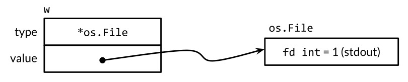
Llamar al metodo Write en un valor de interfaz que contiene un puntero *os.File hace que se llama al metodo (*os.File).Write. La llamada imprime "hello".
w.Write([]byte("hello"))// "hello"
En general, no podemos saber en tiempo de compilacion cual sera el tipo dinamico de un valor interfaz, por lo que una llamada a traves de una interfaz debe utilizar el envio dinamico. En lugar de una llamada directa, el compilador debe generar codigo para obtener la direccion del metodo con nombre Write desde el descriptor de tipos, y luego, realizar una llamada indirecta a esa direccion. El argumento del receptor de la llamada es una copia del valor dinamico de la interfaz, os.Stdout. El efecto es como si hubieramos hecho esta llamada directamente:
os.Stdout.Write([]byte("hello"))// "hello"
La tercera instruccion asigna un valor de tipo *bytes.Buffer al valor de la interfaz:
w=new(bytes.Buffer)
El tipo dinamico es ahora *bytes.Buffer y el valor dinamico es un puntero a al buffer recien asignado (Figura 7.3).
Figura 7.3. Un valor de interfaz que contiene un puntero *bytes.Buffer..
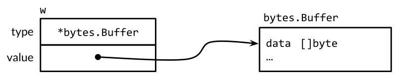
Una llamada al metodo Write utiliza el mismo mecanismo que antes:
w.Write([]byte("hello"))// escribe "hello" en bytes.Buffer
Esta vez, el tipo de descriptor es *bytes.Buffer, por lo que se llama al metodo (*bytes.Buffer).Write con la direccion del buffer como el valor del parametro de receptor. La llamada agrega "hello" al buffer.
Por ultimo, la cuarta instruccion asigna nil al valor de la interfaz:
w=nil
Esto restablece sus dos componentes a nil, restaurando w al mismo estado que cuando fue declarado, que se muestra en la Figura 7.1.
Un valor de interfaz puede contener valores dinamicos arbitrariamente grandes. Por ejemplo, el tipo time.Time, que representa un instante en el tiempo, es un tipo struct con varios campos no exportadas. Si creamos un valor de interfaz de ella,
varxinterface{}=time.Now()
El resultado podria ser similar al de la Figura 7.4. Conceptualmente, el valor dinamico siempre se ajusta dentro del valor de la interfaz, no importa cuan grande sea su tipo. (Esto es solo un modelo conceptual, una implementacion realista es muy diferente.)
Figura 7.4. Un valor de interfaz que contiene una estructura time.Time.
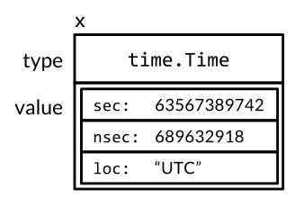
Los valores de interfaz se pueden comparar usando == y !=. Dos valores de la interfaz son iguales si ambos son nil, o si sus tipos dinamicos son identicos y sus valores dinamicos son iguales de acuerdo con el comportamiento usual de == para ese tipo. Dado que los valores de interfaz son comparables, pueden utilizarse como las claves de un mapa o como el operando de una instruccion switch.
Sin embargo, si se comparan dos valores de interfaz y tienen el mismo tipo dinamico, pero ese tipo no es comparable (por ejemplo, un slice), entonces la comparacion falla con un panico:
varxinterface{}=[]int{1,2,3}fmt.Println(x==x)// panico: comparacion de tipo incompatible []int
En este sentido, los tipos de interfaz son inusuales. Otros tipos son comparables de forma segura (como tipos basicos y punteros) o no son comparables en absoluto (como slices, mapas y funciones), pero cuando se comparan valores de interfaz o tipos agregados que contienen valores de interfaz, debemos estar conscientes del potencial de una panico. Un riesgo similar existe cuando se utilizan interfaces como claves de mapa u operandos de conmutador. Solo compare valores de interfaz si esta seguro de que contienen valores dinamicos de tipos comparables.
Cuando se manejan errores o durante la depuracion, a menudo es util informar el tipo dinamico de un valor de interfaz. Para ello, utilizamos el verbo %T del paquete fmt:
Internamente, fmt utiliza la reflexion para obtener el nombre del tipo dinamico de la interfaz. Veremos la reflexion en el Capitulo 12.
Advertencia: Una interfaz que Contiene un Puntero Nil es No-Nil
Un valor de interfaz nil, que no contiene ningun valor, no es el mismo que un valor de interfaz que contiene un puntero que pasa a ser nil. Esta sutil distincion crea una trampa en la que cada programador de Go se ha tropezado.
Considere el programa a continuacion. Con debug establecido en true, la funcion main recoge la salida de la funcion f en un bytes.Buffer.
constdebug=truefuncmain(){varbuf*bytes.Bufferifdebug{buf=new(bytes.Buffer)// Habilitar la recopilacion de la salida}f(buf)// NOTA: sutilmente incorrecto!ifdebug{// ...use buf...}}// Si out no es nil, la salida se escribe en este.funcf(outio.Writer){// ...hacer algo...ifout!=nil{out.Write([]byte("done!\n"))}}
Podriamos esperar que el cambio de debug a false podria desactivar la recoleccion de la salida, pero en realidad hace que el programa entre en panico durante la llamada out.Write:
ifout!=nil{out.Write([]byte("done!\n"))// panico: desreferencia de puntero nil}
Cuando main llamada a f, asigna un puntero nil del tipo *bytes.Buffer al parametro out, por lo que el valor dinamico de out es nil. Sin embargo, su tipo dinamico es *bytes.Buffer, lo que significa que out es una interfaz no-nil que contiene un valor de puntero nulo (Figura 7.5), por lo que la comprobacion defensiva out != nil sigue siendo verdadero.
Figura 7.5. Una interfaz no-nil que contiene un puntero nil.
w
┏━━━━━━━━━━━━━━━━━┓
type ┃ *bytes.Buffer ┃
┣━━━━━━━━━━━━━━━━━┫
value ┃ nil ┃
┗━━━━━━━━━━━━━━━━━┛
Como antes, el mecanismo de envio dinamico determina que (*bytes.Buffer).Write debe ser llamado pero esta vez con un valor receptor que es nil. Para algunos tipos, como *os.File, nil es un receptor valido (§6.2.1), pero *bytes.Buffer no esta entre ellos. El metodo se llama, pero entra en panico al intentar acceder al bufer.
El problema es que aunque un puntero *bytes.Buffer nulo tiene los metodos necesarios para satisfacer la interfaz, no satisface los requisitos de comportamiento de la interfaz. En particular, la llamada viola la condicion implicita de (*bytes.Buffer).Write de que receptor no sea nil, por lo que la asignacion de puntero nulo a la interfaz fue un error. La solucion es cambiar el tipo de buf en main a io.Writer, evitando de ese modo la asignacion del valor disfuncional a la interfaz en el primer lugar:
varbufio.Writerifdebug{buf=new(bytes.Buffer)// Habilitar la recopilacion de la salida}f(buf)// OK
Ahora que hemos cubierto la mecanica de los valores de interfaz, echemos un vistazo a algunas de las interfaces mas importantes de la libreria estandar. En las tres siguientes secciones, veremos como se utilizan las interfaces para ordenacion, para servir en la web y gestionar errores.
Ordenacion con sort.Interface
Al igual que el formateo de cadenas, la ordenacion es una operacion frecuentemente utilizada en muchos programas. Aunque un Quicksort minimo se puede escribir en unas 15 lineas, una implementacion robusta es mucho mas larga, y no es el tipo de codigo que deberiamos escribir de nuevo o copiar cada vez que lo necesitamos.
Afortunadamente, el paquete sort provee in situ la ordenacion de cualquier sequencia de acuerdo con cualquier funcion de ordenacion. Su diseño es bastante inusual. En muchos lenguajes, el algoritmo de ordenacion esta asociado con el tipo de datos de la secuencia, mientras que la funcion de ordenacion esta asociada con el tipo de los elementos. Por el contrario, la funcion sort.Sort de Go, no asume nada sobre de la representacion de la secuencia o de sus elementos. En su lugar, utiliza una interfaz, sort.Interface, para especificar el contrato entre el algoritmo de ordenacion generica y cada tipo de secuencia que puede ser ordenada. Una implementacion de esta interfaz determina tanto la representacion concreta de la secuencia, que es a menudo un slice, y el orden deseado de sus elementos.
Un algoritmo de ordenacion in situ necesita tres cosas–la longitud de la secuencia, una forma de comparar dos elementos, y una manera de intercambiar dos elementos–por lo que son los tres metodos de sort.Interface:
packagesorttypeInterfaceinterface{Len()intLess(i,jint)bool// i, j son indices de la sequencia de elementosSwap(i,jint)}
Para ordenar cualquier secuencia, es necesario definir un tipo que implemente estos tres metodos, luego, aplicar sort.Sort a una instancia de ese tipo. Como quizas el ejemplo mas simple, considere clasificar un slice de cadenas. El nuevo tipo StringSlice y sus metodos Len, Less, y Swap se muestran a continuacion.
Ahora podemos ordenar una slice de strings, names, convirtiendo el slice a un StringSlice como aqui:
sort.Sort(StringSlice(names))
La conversion produce un valor de slice con la misma longitud, capacidad, y arreglo subyacente como names, pero con un tipo que tiene los tres metodos necesarios para la clasificacion.
Ordenar un slice de strings es tan comun que el paquete sort proporciona el tipo StringSlice, asi como una funcion llamada Strings por lo que la llamada anterior se puede simplificar a sort.Strings(names).
La tecnica aqui se adapta facilmente a otros ordenes de clasificacion, por ejemplo, para ignorar mayusculas o caracteres especiales. (El programa Go que ordena los terminos del indice y el numero de paginas de este libro hace esto, con una logica adicional para los numeros romanos.) Para una ordenacion mas complicada, usamos la misma idea, pero con estructuras de datos mas complicadas o implementaciones mas complicadas de los metodos sort.Interface.
Nuestro ejemplo de ejecucion para la clasificacion sera una lista de reproduccion de musica, mostrada como una tabla. Cada pista es una sola fila y cada columna es un atributo de esa pista, como artista, titulo y tiempo de ejecucion. Imagine que una interfaz grafica de usuario presenta la tabla y que al hacer clic en la cabecera de una columna, la lista de reproduccion se clasifica por ese atributo; Haciendo clic en la misma columna, vuelve a invertir el orden. Echemos un vistazo a lo que podria suceder en respuesta a cada clic.
La siguiente variable tracks contiene una lista de reproduccion. (Uno de los autores se disculpa por los gustos musicales del otro autor.) Cada elemento es indirecto, un puntero a un Track. Aunque el codigo de abajo funcionaria si almacenamos los Tracks directamente, la funcion de clasificacion intercambiara muchos pares de elementos, por lo que se ejecutara mas rapido si cada elemento es un puntero, que es una sola palabra de la maquina, en lugar de un Track completo, lo que podrian ser ocho o mas palabras.
typeTrackstruct{TitlestringArtiststringAlbumstringYearintLengthtime.Duration}vartracks=[]*Track{{"Go","Delilah","From the Roots Up",2012,length("3m38s")},{"Go","Moby","Moby",1992,length("3m37s")},{"Go Ahead","Alicia Keys","As I Am",2007,length("4m36s")},{"Ready 2 Go","Martin Solveig","Smash",2011,length("4m24s")},}funclength(sstring)time.Duration{d,err:=time.ParseDuration(s)iferr!=nil{panic(s)}returnd}
La funcion printTracks imprime la lista de reproduccion como una tabla. Una pantalla grafica seria mejor, pero esta pequeña rutina utiliza el paquete text/tabwriter para producir una tabla cuyas columnas estan perfectamente alineadas y rellenas, como se muestra a continuacion. Observe que *tabwriter.Writer satisface io.Writer. Recoge cada pieza de datos escrita en ella; su metodo Flush da formato a toda la tabla y lo escribe en os.Stdout.
funcprintTracks(tracks[]*Track){constformat="%v\t%v\t%v\t%v\t%v\t\n"tw:=new(tabwriter.Writer).Init(os.Stdout,0,8,2,' ',0)fmt.Fprintf(tw,format,"Title","Artist","Album","Year","Length")fmt.Fprintf(tw,format,"-----","------","-----","----","------")for_,t:=rangetracks{fmt.Fprintf(tw,format,t.Title,t.Artist,t.Album,t.Year,t.Length)}tw.Flush()// calculate column widths and print table}
Para ordenar la lista de reproduccion por el campo Artist, definimos un nuevo tipo de slice con los necesarios metodos Len, Less, y Swap, analogos a lo que hicimos para StringSlice.
Para llamar a la rutina de ordenacion generica, primero debemos convertir tracks al nuevo tipo, byArtist, que define el orden:
sort.Sort(byArtist(tracks))
Despues de ordenar el slice por artista, la salida de printTracks es
Title Artist Album Year Length
----- ------ ----- ---- ------
Go Ahead Alicia Keys As I Am 2007 4m36s
Go Delilah From the Roots Up 2012 3m38s
Ready 2 Go Martin Solveig Smash 2011 4m24s
Go Moby Moby 1992 3m37s
Si el usuario solicita ordenar por artista una segunda vez, vamos a resolver los tracks en orden inverso. No tenemos que definir un nuevo tipo byReverseArtist con un metodo Less invertido, ya que el paquete sort proporciona una funcion Reverse que transforma cualquier orden a su inversa.
sort.Sort(sort.Reverse(byArtist(tracks)))
Despues de la ordenacin inversa del slice por artista, la salida de printTracks es
Title Artist Album Year Length
----- ------ ----- ---- ------
Go Moby Moby 1992 3m37s
Ready 2 Go Martin Solveig Smash 2011 4m24s
Go Delilah From the Roots Up 2012 3m38s
Go Ahead Alicia Keys As I Am 2007 4m36s
La funcion sort.Reverse merece un vistazo mas de cerca, ya que utiliza la composicion (§6.3), que es una idea importante. El paquete sort define un tipo no exportado reverse, que es una estructura que enbebe un sort.Interface. El metodo Less de reverse llama al Less del varol enbebido sort.Interface, pero con los indices invertidos, invirtiendo el orden de los resultados.
packagesorttypereversestruct{Interface}// that is, sort.Interfacefunc(rreverse)Less(i,jint)bool{returnr.Interface.Less(j,i)}funcReverse(dataInterface)Interface{returnreverse{data}}
Len y Swap, los otros dos metodos de reverse, son proporcionados implicitamente por el valor original sort.Interface porque es un campo enbebido. La funcion exportada Reverse devuelve una instancia del tipo reverse que contiene el valor original sort.Interface.
Para ordenar por una columna diferente, hay que definir un nuevo tipo, como byYear:
Despues de ordenamos los tracks por año usando sort.Sort(byYear(tracks)), printTracks muestra una lista cronologica:
Title Artist Album Year Length
----- ------ ----- ---- ------
Go Moby Moby 1992 3m37s
Go Ahead Alicia Keys As I Am 2007 4m36s
Ready 2 Go Martin Solveig Smash 2011 4m24s
Go Delilah From the Roots Up 2012 3m38s
Para cada tipo de slice y cada funcion de ordenacion necesitamos, declarar una nueva implementacion de sort.Interface. Como se puede ver, los metodos Len y Swap tienen definiciones identicas para todos los tipos de slice. En el siguiente ejemplo, el tipo concreto customSort combina un slice con una funcion, permitiendo definir un nuevo orden de clasificacion escribiendo unicamente la funcion de comparacion. Por cierto, los tipos concretos que implementan sort.Interface no siempre son slices; customSort es un tipo struct.
Vamos a definir una funcion de ordenamiento de multiples niveles cuya clave de ordenacion principal es Title, cuya clave secundaria es Year, y cuya clave terciaria es el tiempo de ejecucion, Length. Aqui esta la llamada a Sort usando una funcion de ordenacion anonima:
Y aqui esta el resultado. Observe que el empate entre las dos pistas tituladas Go se rompe en favor de la mas antigua.
Title Artist Album Year Length
----- ------ ----- ---- ------
Go Moby Moby 1992 3m37s
Go Delilah From the Roots Up 2012 3m38s
Go Ahead Alicia Keys As I Am 2007 4m36s
Ready 2 Go Martin Solveig Smash 2011 4m24s
Aunque la clasificacion de una secuencia de longitud n requiere O(n log n) operaciones de comparacion, probar si una secuencia ya esta ordenada requiere al menos n-1 comparaciones. La funcion IsSorted del paquete sort comprueba esto para nosotros. Al igual que sort.Sort, abstrae tanto la secuencia y su funcion de ordenacion utilizando sort.Interface, pero nunca llama al metodo Swap: Este codigo muestra las funciones IntsAreSorted y Ints y el tipo IntSlice:
Por conveniencia, el paquete sort proporciona versiones de sus funciones y tipos especializados para c([]int), []string, y []float64 usando sus ordenamientos naturales. Para otros tipos, como []int64 o []uint, estamos por nuestra cuenta, aunque el camino es corto.
Ejercicio 7.8: Muchas interfaces graficas de usuario proporcionan un widget de tabla con ordenacion de multiple nivel: la clave de ordenacion principal es la primer columna, la segunda clae de ordenacion es la segunda columna, y asi sucesivamente. Defina una implementacion de sort.Interface para utilizar con dicha tabla. Compare este enfoque con repetidos ordenamientos utilizando sort.Stable.
Ejercicio 7.9: Utilice el paquete html/template (§4.6) para reemplazar printTracks con una funcion que muestre los tracks como una tabla HTML. Utilice la solucion del ejercicio anterior para organizar que cada clic en un encabezado de columna haga una solicitud HTTP para ordenar la tabla.
Ejercicio 7.10: El tipo sort.Interface se puede adaptar a otros usos. Escriba una funcion IsPalindrome(s sort.Interface) bool que informe si la secuencia s es un palindromo, es decir, la inversion de la secuencia no lo cambiaria. Suponga que los elementos en los indices i y j son iguales si !s.Less(i, j) && !s.Less(j, i).
La Interfaz http.Handler
En el Capitulo 1, vimos una idea de como utilizar el paquete net/http para implementar clientes web (§1.5) y servidores (§1.7). En esta seccion, vamos a ver mas de cerca la API del servidor, cuyo fundamento es la interfaz http.Handler:
La función ListenAndServe requiere una dirección de servidor, como "localhost:8000", y una instancia de la interfaz Handler a la que todas las solicitudes deben enviarse. Se ejecuta para siempre, o hasta que el servidor falla (o no se inicia) con un error, que siempre devuelve no-nil.
Imagine un sitio de comercio electronico con una base de datos de los articulos a la venta con sus precios en dolares. El siguiente programa muestra la implementacion imaginable mas sencilla. Modelos del inventario como un tipo de mapa, database, a la que ha adjuntado un metodo ServeHTTP para que satisfaga la interfaz http.Handler. El controlador se extiende sobre el mapa e imprime los elementos.
Hasta ahora, el servidor solo puede enumerar su inventario completo y lo hara para cada solicitud, independientemente de la URL. Un servidor mas realista define varias URL diferentes, cada una desencadenando un comportamiento diferente. Vamos a llamar al comportamiento existente /list y añadamos otra que se llame /price que informa el precio de un solo articulo, especificado como un parametro de la peticion, por ejemplo /price?item=socks.
func(dbdatabase)ServeHTTP(whttp.ResponseWriter,req*http.Request){switchreq.URL.Path{case"/list":foritem,price:=rangedb{fmt.Fprintf(w,"%s: %s\n",item,price)}case"/price":item:=req.URL.Query().Get("item")price,ok:=db[item]if!ok{w.WriteHeader(http.StatusNotFound)// 404fmt.Fprintf(w,"no such item: %q\n",item)return}fmt.Fprintf(w,"%s\n",price)default:w.WriteHeader(http.StatusNotFound)// 404fmt.Fprintf(w,"no such page: %s\n",req.URL)}}
Ahora el controlador decide que logica hay que usar basado en el componente de la ruta de la URL, req.URL.Path. Si el controlador no reconoce la ruta, se informa de un error HTTP al cliente llamando a w.WriteHeader(http.StatusNotFound); esto debe hacerse antes de escribir cualquier texto a w. (Por cierto, http.ResponseWriter es otra interfaz. aumenta a io.Writer con metodos para enviar cabeceras de respuesta HTTP.) De manera equivalente, podriamos utilizar la funcion de utilidad http.Error:
msg:=fmt.Sprintf("no such page: %s\n",req.URL)http.Error(w,msg,http.StatusNotFound)// 404
El argumento /price llama al metodo Query de la URL para analizar los parametros de la peticion HTTP como un mapa, o mas precisamente, un mapa multiple de tipo url.Values (§6.2.1) del paquete net/url. A continuacion, busca el primer parametro item y mira su precio. Si no se encontro el elemento, informa de un error.
He aqui una sesion de ejemplo con el nuevo servidor:
$ go build gopl.io/ch7/http2
$ go build gopl.io/ch1/fetch
$ ./http2 &
$ ./fetch http://localhost:8000/list
shoes: $50.00
socks: $5.00
$ ./fetch http://localhost:8000/price?item=socks
$5.00
$ ./fetch http://localhost:8000/price?item=shoes
$50.00
$ ./fetch http://localhost:8000/price?item=hat
no such item: "hat"
$ ./fetch http://localhost:8000/help
no such page: /help
Obviamente podriamos seguir añadiendo casos a ServeHTTP, pero en una aplicacion real, es conveniente definir la logica para cada caso en una funcion o un metodo independiente. Ademas, las URL relacionadas pueden necesitar una logica similar; varios archivos de imagen pueden tener URLs de tipo /images/*.png, por ejemplo. Por estas razones, net/http proporciona ServeMux, una solicitud multiplexor, para simplificar la asociacion entre las direcciones URL y manipuladores. ServeMux agrega una coleccion de http.Handlers en un solo http.Handler. Una vez mas, vemos que los diferentes tipos que satisfacen la misma interfaz son sustituibles: el servidor web es capaz de consultar a cualquier http.Handler, independientemente del tipo concreto esta detras de el.
Para una aplicacion mas compleja, varios ServeMuxes pueden estar compuestos para manejar requerimientos de secuenciacion mas intrincados. Go no tiene un framework web canonico analogo a Rails de Ruby o a Django de Python. Esto no quiere decir que tales frameworks no existan, pero los bloques de construccion en la libreria estandar de Go son lo suficientemente flexibles como para que los frameworks sean a menudo innecesarios. Ademas, aunque los frameworks son convenientes en las primeras fases de un proyecto, su complejidad adicional puede hacer que el mantenimiento a largo plazo sea mas dificil.
En el siguiente programa, creamos un ServeMux y lo usamos para asociar las direcciones URL con los controladores correspondientes para las operaciones /list y /price, que se han dividido en metodos separados. A continuacion, utilizamos ServeMux como el controlador principal en la llamada a ListenAndServe.
funcmain(){db:=database{"shoes":50,"socks":5}mux:=http.NewServeMux()mux.Handle("/list",http.HandlerFunc(db.list))mux.Handle("/price",http.HandlerFunc(db.price))log.Fatal(http.ListenAndServe("localhost:8000",mux))}typedatabasemap[string]dollarsfunc(dbdatabase)list(whttp.ResponseWriter,req*http.Request){foritem,price:=rangedb{fmt.Fprintf(w,"%s: %s\n",item,price)}}func(dbdatabase)price(whttp.ResponseWriter,req*http.Request){item:=req.URL.Query().Get("item")price,ok:=db[item]if!ok{w.WriteHeader(http.StatusNotFound)// 404fmt.Fprintf(w,"no such item: %q\n",item)return}fmt.Fprintf(w,"%s\n",price)}
Centremonos en las dos llamadas a mux.Handle que registran los manejadores. En la primera, db.list es un valor de metodo (§6.4), es decir, un valor de tipo
func(whttp.ResponseWriter,req*http.Request)
que, cuando se llama, invoca el metodo database.list con el valor receptor db. Asi que db.list es una funcion que implementa el comportamiento manipulador, pero ya que no tiene metodos, no satisface la interfaz http.Handler y no se puede pasar directamente a mux.Handle.
La expresion http.HandlerFunc(db.list) es una conversion, no una llamada de funcion, ya que http.HandlerFunc es un tipo. Tiene la siguiente definicion:
HandlerFunc demuestra algunas caracteristicas inusuales del mecanismo de interfaz de Go. Es un tipo de funcion que tiene metodos y satisface una interfaz, http.Handler. El comportamiento de su ServeHTTP metodo es llamar a la funcion subyacente. HandlerFunc es, por tanto, un adaptador que permite que un valor de funcion de satisfaga una interfaz, donde la funcion y el unico metodo de la interfaz tienen la misma firma. En efecto, este truco permite que un solo tipo, como database cumpla con la interfaz http.Handler de varias maneras: una vez a traves de su list metodo, una vez que a traves de su metodo price, y asi sucesivamente.
Debido a que el registro de un manejador de esta manera es tan comun, ServeMux tiene un metodo de conveniencia llamado HandleFunc que lo hace por nosotros, por lo que podemos simplificar el codigo de registro del manejador a esto:
Es facil ver desde el codigo anterior como uno podria construir un programa en el que hay dos servidores web diferentes, escuchando en diferentes puertos, definiendo diferentes URL y enviando a diferentes manejadores. Simplemente construiriamos otro ServeMux y hariamos otra llamada a ListenAndServe, tal vez al mismo tiempo. Pero en la mayoria de los programas, un servidor web es suficiente. Ademas, es tipico definir manejadores HTTP a traves de muchos archivos de una aplicacion, y seria una molestia si todos tuvieran que ser registrados de manera explicita con la instancia de la aplicacion ServeMux.
Asi que, por conveniencia, net/http proporciona unna instancia global ServeMux llamada DefaultServeMux y funciones a nivel de paquete llamadas http.Handle y http.HandleFunc. Para utilizar DefaultServeMux como manejador principal del servidor, no es necesario pasarlo a ListenAndServe; nil lo hara.
La funcion principal del servidor se puede simplificar a
Por ultimo, un recordatorio importante: como mencionamos en la Seccion 1.7, el servidor web invoca cada manejador en una nueva goroutine, por lo que los manipuladores deben tomar precauciones como el bloqueo al acceder a variables de otras gorutinas, incluyendo otras solicitudes al mismo manejador. Hablaremos de concurrencia en los proximos dos capitulos.
Ejercicio 7.11 Agregar manejadores adicionales para que los clientes pueden crear, leer, actualizar y eliminar entradas de database. Por ejemplo, una solicitud con formato /update?item=socks&price=6 actualizara el precio de un articulo en el inventario e informar un error si el elemento no existe o si el precio no es valido. (Advertencia: este cambio introduce actualizacion de variables concurrentes.)
Ejercicio 7.12: Cambiar el manejador de /list para imprimir su salida como una tabla HTML, no como texto. Puede que el paquete html/template (§4.6) sea util.
La Interfaz error
Desde el comienzo de este libro, hemos estado usando y creando valores del misterioso tipo predeclarado error sin explicar lo que realmente es. De hecho, es solo un tipo de interfaz con un unico metodo que devuelve un mensaje de error:
typeerrorinterface{Error()string}
La forma mas sencilla de crear un error es llamando a errors.New, que devuelve un nuevo error para un mensaje de error dado. Todo el paquete errors solo son cuatro lineas:
El tipo subyacente de errorString es una estructura, no una cadena, para proteger su representacion de cambios involuntarios (o premeditados). Y la razon de que el tipo de puntero sea *errorString, no es solo errorString, para satisfacer la interfaz error es para que cada llamada a New asigne una instancia de error distinta que no es igual a ninguna otra. No queremos que un error distinguido como io.EOF sea igual a o uno que simplemente contien el mismo mensaje.
Las llamadas a errors.New son relativamente poco frecuentes porque hay una funcion de envoltura conveniente, fmt.Errorf, que tambien hace formateo de cadenas. Lo usamos varias veces en el Capitulo 5.
Aunque *errorString puede ser el tipo mas sencillo de error, esta lejos de ser el unico. Por ejemplo, el paquete syscall proporciona la API de llamadas a bajo nivel de Go. En muchas plataformas, define un tipo numerico Errno que satisface error, y en plataformas Unix, el metodo Errno de Error realiza una busqueda en una tabla de cadenas, como se muestra a continuacion:
packagesyscalltypeErrnouintptr// codigos de error del sistema operativovarerrors=[...]string{1:"operation not permitted",// EPERM2:"no such file or directory",// ENOENT3:"no such process",// ESRCH// ...}func(eErrno)Error()string{if0<=int(e)&&int(e)<len(errors){returnerrors[e]}returnfmt.Sprintf("errno %d",e)}
La siguiente sentencia crea un valor de interfaz que contiene el valor Errno 2, que significa la condicion POSIX ENOENT:
varerrerror=syscall.Errno(2)fmt.Println(err.Error())// "el fichero o directorio no existe"fmt.Println(err)// "el fichero o directorio no existe"
El valor de err se muestra graficamente en la Figura 7.6.
Figura 7.6. Un valor de interfaz que contiene un entero syscall.Errno.
err
┏━━━━━━━━━━━━━━━━━┓
tipo ┃ syscall.Errno ┃
┣━━━━━━━━━━━━━━━━━┫
valor ┃ 2 ┃
┗━━━━━━━━━━━━━━━━━┛
Errno es una representacion eficiente de los errores de llamada del sistema extraidos de un conjunto finito, y satisface la interfaz estandar error. Veremos otros tipos que satisfacen esta interfaz en la Seccion 7.11.
Ejemplo: Evaluador de Expresiones
En esta seccion, crearemos un evaluador para expresiones aritmeticas simples. Vamos a utilizar una interfaz, Expr, para representar cualquier expresion en este lenguaje. Por ahora, esta interfaz no necesita metodos, pero agregaremos algunos mas tarde.
// Un Expr es una expresion aritmetica.typeExprinterface{}
Nuestro lenguaje de expresiones consiste en literales de punto flotante; los operadores binarios +, -, * y /; los operadores unarios -x y +x; llamadas de funcion pow(x,y), sin(x), y sqrt(x); variables como x y pi; Y por supuesto los parentesis y la precedencia estandar de operadores. Todos los valores son del tipo float64. Aqui hay algunas expresiones de ejemplo:
sqrt(A/pi)pow(x,3)+pow(y,3)(F-32)*5/9
Los cinco tipos concretos de abajo representan tipos particulares de expresiones. un Var representa una referencia a una variable. (Pronto veremos por que se exporta.) Un literal representa una constante de coma flotante. Los tipos unary y binary representan expresiones de operador con uno o dos operandos, que pueden ser cualquier tipo de Expr. Un call es una llamada de funcion; restringiremos este campo fn a pow, sin, o sqrt.
// Un Var identifica una variable, por ejemplo, x.typeVarstring// Un literal es un numero constante, por ejemplo, 3.141.typeliteralfloat64// Un unary representa una expresion de operador unario, por ejemplo, -x.typeunarystruct{oprune// one of '+', '-'xExpr}// Un binary representa una expresion de operador binario, por ejemplo, x+y.typebinarystruct{oprune// one of '+', '-', '*', '/'x,yExpr}// Un call representa una expresion de llamada a funcion, por ejemplo, sin(x).typecallstruct{fnstring// uno de "pow", "sin", "sqrt"args[]Expr}
Para evaluar una expresion que contiene variables, necesitaremos un entorno que asigne nombres de variables a valores:
typeEnvmap[Var]float64
Tambien necesitaremos cada tipo de expresion para definir un metodo Eval que devuelva el valor de la expresion en un entorno determinado. Puesto que cada expresion debe proporcionar este metodo, lo añadimos a la interfaz Expr. El paquete exporta unicamente los tipos Expr, Env, y Var; Los clientes pueden utilizar el evaluador sin acceso a los otros tipos de expresion.
typeExprinterface{// Eval devuelve el valor de este Expr en el entorno env.Eval(envEnv)float64}
Los metodos concretos de Eval se muestran a continuacion. El metodo de Var realiza una busqueda de entorno, que devuelve cero si la variable no esta definida, y el metodo de literal simplemente devuelve el valor literal.
Los metodos Eval de unary y binary evaluan de forma recursiva sus operandos, luego aplican la operacion op a ellos. No consideramos divisiones por cero o infinito como errores, ya que producen un resultado, no finito. Finalmente, el metodo de call evalua los argumentos de la funcion pow, sin, o sqrt, y luego llama a la funcion correspondiente en el paquete math.
func(uunary)Eval(envEnv)float64{switchu.op{case'+':return+u.x.Eval(env)case'-':return-u.x.Eval(env)}panic(fmt.Sprintf("unsupported unary operator: %q",u.op))}func(bbinary)Eval(envEnv)float64{switchb.op{case'+':returnb.x.Eval(env)+b.y.Eval(env)case'-':returnb.x.Eval(env)-b.y.Eval(env)case'*':returnb.x.Eval(env)*b.y.Eval(env)case'/':returnb.x.Eval(env)/b.y.Eval(env)}panic(fmt.Sprintf("unsupported binary operator: %q",b.op))}func(ccall)Eval(envEnv)float64{switchc.fn{case"pow":returnmath.Pow(c.args[0].Eval(env),c.args[1].Eval(env))case"sin":returnmath.Sin(c.args[0].Eval(env))case"sqrt":returnmath.Sqrt(c.args[0].Eval(env))}panic(fmt.Sprintf("unsupported function call: %s",c.fn))}
Varios de estos metodos pueden fallar. Por ejemplo, una expresion call podria tener una funcion desconocida o el numero incorrecto de argumentos. Tambien es posible construir una expresion unary o binary con un operador no valido como ! o < (aunque la funcion Parse mencionada a continuacion nunca hara esto). Estos errores hacen que Eval entre en panico. Otros errores, la evaluacion de un Var no presente en el entorno, simplemente hacen que Eval devuelva el resultado incorrecto. Todos estos errores podrian ser detectados por la inspeccion de Expr antes de su evaluacion. Ese sera el trabajo del metodo Check, que mostraremos pronto, pero primero vamos a probar Eval.
La funcion TestEval a continuacion, es una prueba del evaluador. Utiliza el paquete testing, que explicaremos en el Capitulo 11, pero por ahora es suficiente saber que llamar a t.Errorf informa de un error. La funcion recorre una tabla de entradas que define tres expresiones y entornos diferentes para cada una. La primer expresion calcula el radio de un circulo dada su area A, la segunda calcula la suma de los cubos de dos variables x e y, y la tercera convierte una temperatura Fahrenheit de F a Celsius.
Para cada entrada en la tabla, la prueba analiza la expresion, la evalua en el entorno e imprime el resultado. No tenemos espacio para mostrar la funcion Parse aqui, pero lo encontrara si se descarga el paquete usando go get.
El comando go test (§11.1) ejecuta las pruebas de un paquete:
$ go test -v gopl.io/ch7/eval
La bandera -v nos permite ver la salida impresa de la prueba, que normalmente se suprime para una prueba exitosa como esta. Aqui esta la salida de la prueba de las sentencias fmt.Printf:
Afortunadamente hasta ahora los datos de entrada han sido bien formados, pero es poco probable que dure nuestra suerte. Incluso en los lenguajes interpretados, es comun comprobar la sintaxis de errores estaticos, es decir, errores que pueden ser detectados sin ejecutar el programa. Al separar los controles estaticos de los dinamicos, podemos detectar errores antes y realizar muchas verificaciones solo una vez en lugar de cada vez que se evalua una expresion.
Vamos a añadir otro metodo a la interfaz Expr. El metodo Check comprueba si hay errores estaticos en un arbol de sintaxis de expresiones. Vamos a explicar su parametro vars en un momento.
typeExprinterface{Eval(envEnv)float64// Check informa errores en este Expr y agrega sus Vars al conjunto.Check(varsmap[Var]bool)error}
El metodo concreto Check se muestran a continuacion. La evaluacion de literal y Var no puede fallar, por lo que los metodos Check para estos tipos devuelven nil. Los metodos para unary y binary primera verifican que el operador es valido, luego comprueban recursivamente los operandos. Del mismo modo, el metodo para de call comprueba primero que la funcion se conoce y tiene el numero correcto de argumentos, entonces, de forma recursiva comprueba cada argumento.
func(vVar)Check(varsmap[Var]bool)error{vars[v]=truereturnnil}func(literal)Check(varsmap[Var]bool)error{returnnil}func(uunary)Check(varsmap[Var]bool)error{if!strings.ContainsRune("+-",u.op){returnfmt.Errorf("unexpected unary op %q",u.op)}returnu.x.Check(vars)}func(bbinary)Check(varsmap[Var]bool)error{if!strings.ContainsRune("+-*/",b.op){returnfmt.Errorf("unexpected binary op %q",b.op)}iferr:=b.x.Check(vars);err!=nil{returnerr}returnb.y.Check(vars)}func(ccall)Check(varsmap[Var]bool)error{arity,ok:=numParams[c.fn]if!ok{returnfmt.Errorf("unknown function %q",c.fn)}iflen(c.args)!=arity{returnfmt.Errorf("call to %s has %d args, want %d",c.fn,len(c.args),arity)}for_,arg:=rangec.args{iferr:=arg.Check(vars);err!=nil{returnerr}}returnnil}varnumParams=map[string]int{"pow":2,"sin":1,"sqrt":1}
Hemos listado una seleccion de entradas defectuosas y los errores que provocan, en dos grupos. La funcion Parse (no se muestra) informa de errores de sintaxis y la funcion Check de informes de errores semanticos.
x % 2 unexpected '%'
math.Pi unexpected '.'
!true unexpected '!'
"hello" unexpected '"'
log(10) unknown function "log"
sqrt(1, 2) call to sqrt has 2 args, want 1
El argumento de Check, un conjunto de Vars, acumula el conjunto de nombres de variables que se encuentran dentro de la expresion. Cada una de estas variables debe estar presente en el entorno para que la evaluacion tenga exito. Este conjunto es, logicamente, el resultado de la llamar a Check, pero debido a que el metodo es recursivo, es mas conveniente para Check llenar el conjunto pasandolo como parametro. El cliente debe proporcionar un conjunto vacio en la llamada inicial.
En la Seccion 3.2, se represento una funcion f(x,y) que se establece en tiempo de compilacion. Ahora que podemos analizar, comprobar y evaluar expresiones en cadenas, podemos construir una aplicacion web que recibe una expresion en tiempo de ejecucion del cliente y traza la superficie de esa funcion. Podemos utilizar los vars establecidos para comprobar que la expresion es una funcion de dos variables, x e y–tres, en realidad, ya que proporcionamos r, el radio, como una conveniencia. Y usaremos el metodo Check para rechazar expresiones mal formadas antes de que comience la evaluacion, de mono que no repitamos esas verificaciones durante las 40.000 evaluaciones (100×100 celulas, cada una con cuatro esquinas) de la funcion que le sigue.
La funcion parseAndCheck combina estos pasos de analisis y comprobacion:
Para hacer de esto una aplicacion web, todo lo que necesitamos es la siguiente funcion plot, que tiene la firma familiar de un http.HandlerFunc:
funcplot(whttp.ResponseWriter,r*http.Request){r.ParseForm()expr,err:=parseAndCheck(r.Form.Get("expr"))iferr!=nil{http.Error(w,"bad expr: "+err.Error(),http.StatusBadRequest)return}w.Header().Set("Content-Type","image/svg+xml")surface(w,func(x,yfloat64)float64{r:=math.Hypot(x,y)// distance from (0,0)returnexpr.Eval(eval.Env{"x":x,"y":y,"r":r})})}
La funcion plot analiza y comprueba la expresion especificada en la peticion HTTP y la utiliza para crear una funcion anonima de dos variables. La funcion anonima tiene la misma firma que la funcion fija f del programa de trazado de la superficie original, pero evalua la expresion proporcionada por el usuario. El entorno define x, y, y el radio r. Finalmente, plot llama a surface, que es solo la funcion main de gopl.io/ch3/surface, modificado para tomar la funcion de trazar y la salida de io.Writer como parametros, en lugar de utilizar la funcion fija f y os.Stdout. La Figura 7.7 muestra tres superficies producidas por el programa.
Figura 7.7. Las superficies de tres funciones: (a) sin(-x)*pow(1.5,-r); (b) pow(2,sin(y))*pow(2,sin(x))/12; (c) sin(x*y/10)/10.
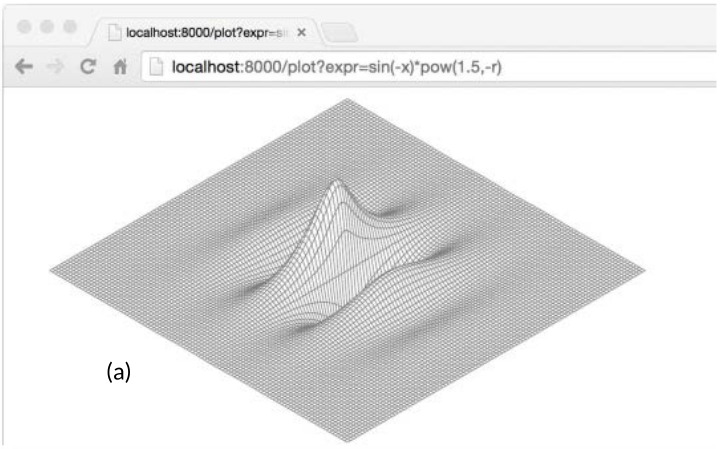
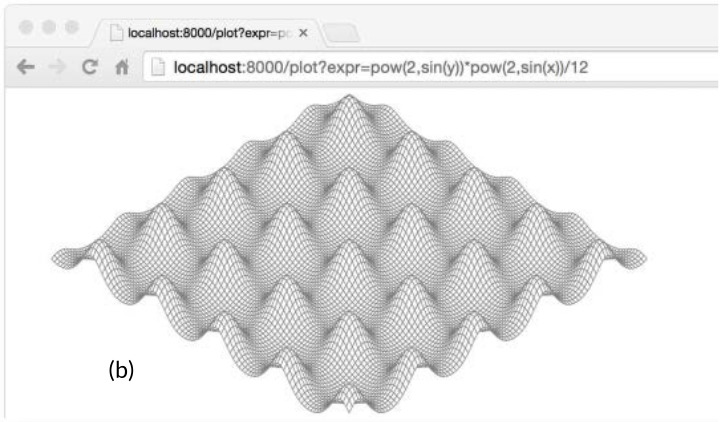
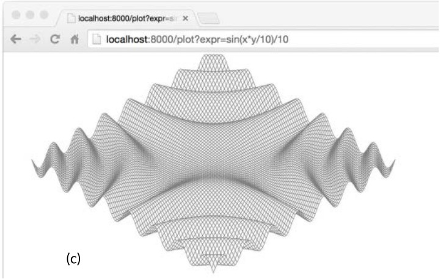
Ejercicio 7.13: Agregue una metodo String a Expr para imprimir el arbol de sintaxis. Compruebe que los resultados, cuando se analiza de nuevo, producen un arbol equivalente.
Ejercicio 7.14: Definir un nuevo tipo concreto que satisfaga la interfaz Expr y ofrece una nueva operacion como calcular el valor minimo de sus operandos. Ya que la funcion Parse no crea instancias de este nuevo tipo, para usarlo necesitara construir un arbol de sintaxis directamente (o extender el analizador).
Ejercicio 7.15: Escriba un programa que lee una sola expresion de la entrada estandar, solicita al usuario que proporcione valores para las variables, y luego evalue la expresion en el medio ambiente resultante. Maneje todos los errores con gracia.
Ejercicio 7.16: Escribia un programa de calculadora basado en la web.
Afirmacion de Tipo
Una afirmacion de tipo es una operacion aplicada a un valor de interfaz. Sintacticamente, se ve como x.(T), donde x es una expresion de un tipo de interfaz y T es un tipo, denominado el tipo afirmado. Una afirmacion de tipo comprueba que el tipo dinamico de su operando coincide con el tipo declarado.
Hay dos posibilidades. En primer lugar, si el tipo afirmado T es un tipo concreto, entonces la asercion de tipo comprueba si el tipo dinamico x es identico aT. Si esta comprobacion tiene exito, el resultado de la afirmacion tipo es el valor dinamico x, cuyo tipo es, por supuesto, T. En otras palabras, una afirmacion de tipo a un tipo concreto extrae el valor concreto de su operando. Si la comprobacion falla, entonces la operacion entra en panico. Por ejemplo:
varwio.Writerw=os.Stdoutf:=w.(*os.File)// exito: f == os.Stdoutc:=w.(*bytes.Buffer)// panico: interfaz contiene *os.File, no *bytes.Buffer
En segundo lugar, si en lugar del tipo afirmado T es un tipo de interfaz, entonces, la afirmacion de tipo comprueba si el tipo dinamico xsatisface a T. Si esta comprobacion tiene exito, el valor dinamico no se extrae; el resultado sigue siendo un valor de interfaz con el mismo y varol de componentes, pero el resultado tiene el tipo de interfaz T. En otras palabras, una asercion de tipo a un tipo de interfaz cambia el tipo de la expresion, haciendo accesible un conjunto de metodos diferente (y generalmente mas grande), pero conserva los componentes dinamicos de tipo y valor dentro del valor de la interfaz.
Despues de la afirmacion del primer tipo a continuacion, tanto w y rw contienen os.Stdout por lo que cada uno tiene un tipo dinamico de *os.File, pero w, un io.Writer, expone solo el metodo Write del archivo, mientras que rw expone tambien su metodo Read.
varwio.Writerw=os.Stdoutrw:=w.(io.ReadWriter)// exito: *os.File tiene tanto Read como Writew=new(ByteCounter)rw=w.(io.ReadWriter)// panico: *ByteCounter no tiene metodo Read
No importa que tipo se afirmo, si el operando es un valor de interfaz nil, la afirmacion de tipo falla. Rara vez se necesita una asercion de tipo a un tipo de interfaz menos restrictivo (uno con menos metodos), ya que se comporta como una asignacion, excepto en el caso nulo.
w=rw// io.ReadWriter es asignable a io.Writerw=rw.(io.Writer)// falla solo si rw == nil
A menudo no estamos seguros del tipo dinamico de un valor de interfaz, y nos gustaria probar si es algun tipo particular. Si la afirmacion de tipo aparece en una asignacion en la que se esperan dos resultados, como las siguientes declaraciones, la operacion no entra en panico cuando se produce un error, sino que devuelve un segundo resultado adicional, un booleano que indica exito:
varwio.Writer=os.Stdoutf,ok:=w.(*os.File)// exito: ok, f == os.Stdoutb,ok:=w.(*bytes.Buffer)// fallo: !ok, b == nil
El segundo resultado es asignado convencionalmente a una variable llamada ok. Si la operacion ha fallado, ok es falso, y el primer resultado es igual al valor cero del tipo afirmado, que en este ejemplo es nil *bytes.Buffer.
El resultado ok a menudo se utiliza de inmediato para decidir que hacer a continuacion. La forma extendida de la sentencia if hace esto muy compacto:
iff,ok:=w.(*os.File);ok{// ...use f...}
Cuando el operando de una afirmacion de tipo es una variable, en lugar de inventar otro nombre para la nueva variable local, a veces vera el nombre original reutilizado, ocultando el original, asi:
ifw,ok:=w.(*os.File);ok{// ...utilizar w...}
Discriminacion de Errores con Afirmaciones de Tipo
Consideremos el conjunto de errores devueltos por las operaciones de archivos en el paquete os. Las E/S pueden fallar por varias razones, pero tres tipos de fallos a menudo deben manejarse de manera diferente: el archivo ya existe (para las operaciones de creacion), el archivo no se encuentra (para operaciones de lectura) y el permiso esta denegado. El paquete os proporciona estas tres funciones de ayuda para clasificar el fallo indicado por un determinado valor error:
Una implementacion naïve de uno de estos predicados podria comprobar que el mensaje de error contenga una cierta subcadena,
funcIsNotExist(errerror)bool{// NOTA: no es robusto!returnstrings.Contains(err.Error(),"file does not exist")}
Pero debido a que la logica para manejar los errores de E/S puede variar de una plataforma a otra, este enfoque no es robusto y el mismo fallo puede ser reportado con una variedad de diferentes mensajes de error. La comprobacion de subcadenas de mensajes de error puede ser util durante la prueba para asegurarse de que las funciones fallan de la manera esperada, pero es inadecuado para el codigo en produccion.
Un enfoque mas confiable es representar valores de error estructurados utilizando un tipo especifico. El paquete OS define un tipo llamado PathError para describir las fallas que implican una operacion en una ruta de archivo, como Open o Delete, y una variante llamada LinkError para describir los frallos de las operaciones que implican dos rutas de archivos, como Symlink y Rename. Aqui esta os.PathError:
packageos// PathError registra un error y la operacion y ruta de archivo que lo causo.typePathErrorstruct{OpstringPathstringErrerror}func(e*PathError)Error()string{returne.Op+" "+e.Path+": "+e.Err.Error()}
La mayoria de los clientes no son conscientes de PathError y el manejo con todos los errores de una manera uniforme llamando a sus metodos de Error. Aunque el metodo Error de PathError forma un mensaje simplemente concatenando los campos, la estructura de PathError conserva los componentes subyacentes del error. Los clientes que necesitan distinguir un tipo de fallo de otro pueden usar una afirmacion de tipo para detectar el tipo especifico del error; el tipo especifico proporciona mas detalle que una simple cadena.
_,err:=os.Open("/no/such/file")fmt.Println(err)// "open /no/such/file: No such file or directory"fmt.Printf("%#v\n",err)// Salida:// &os.PathError{Op:"open", Path:"/no/such/file", Err:0x2}
Asi funcionan las tres funciones auxiliares. Por ejemplo, IsNotExist, que se muestra a continuacion, informa si un error es igual a syscall.ENOENT (§7.8) o al error distinguido os.ErrNotExist (vea io.EOF en la §5.4.2), o es un *PathError cuyo error subyacente es uno de esos dos.
import("errors""syscall")varErrNotExist=errors.New("file does not exist")// IsNotExist regresa un booleano que indica si se conoce el error// informa que no existe un archivo o directorio. Se satisface por// ErrNotExist asi como algunos errores syscall.funcIsNotExist(errerror)bool{ifpe,ok:=err.(*PathError);ok{err=pe.Err}returnerr==syscall.ENOENT||err==ErrNotExist}
Por supuesto, la estructura PathError se pierde pierde si el mensaje de error se combina en una cadena mas grande, por ejemplo, mediante una llamada a fmt.Errorf. La discriminacion de errores se debe hacer generalmente inmediatamente despues de la operacion fallida, antes de que un error se propague al llamador.
Consultar Comportamientos con Afirmaciones de Tipo de Interfaz
La siguiente logica es similar a la parte del servidor web net/http responsable de escribir campos de cabecera HTTP como "Content-type: text/html". El io.Writerw representa la respuesta HTTP; Los bytes escritos en el, se envian en ultima instancia a algun navegador web.
Debido a que el metodo Write requiere una slice de bytes, y el valor que desea escribir es una cadena, se requiere una conversion []byte(...). Esta conversion asigna memoria y hace una copia, pero la copia se tira casi inmediatamente despues. Vamos a pretender que esta es una parte fundamental del servidor web y que nuestro perfil ha revelado que esta asignacion de memoria se esta ralentizando. ¿Podemos evitar asignar memoria aqui?
La interfaz io.Writer nos informa solo un hecho sobre el tipo concreto que w almacena: que los bytes se pueden escribir en el. Si miramos detras de cortinas del paquete net/http, vemos que el tipo dinamico que w tiene en este programa tambien tiene un metodo WriteString que permite que las cadenas sean escritas eficientemente, evitando la necesidad de asignar una copia temporal. (Esto puede parecer un disparo en la oscuridad, pero una serie de tipos importantes que satisfacen io.Writer tambien tienen un metodo WriteString, incluyendo *bytes.Buffer, *os.File y *bufio.Writer).
No podemos asumir que un wio.Writer arbitrario tambien tiene el metodo WriteString. Pero podemos definir una nueva interfaz que tiene solo este metodo y utilizar una afirmacion de tipo para probar si el tipo dinamico de w satisface esta nueva interfaz.
// writeString escribe s a w.// Si w tiene un metodo WriteString, se invoca en lugar de w.Write.funcwriteString(wio.Writer,sstring)(nint,errerror){typestringWriterinterface{WriteString(string)(nint,errerror)}ifsw,ok:=w.(stringWriter);ok{returnsw.WriteString(s)// evitar copia}returnw.Write([]byte(s))// almacena una copia temporal}funcwriteHeader(wio.Writer,contentTypestring)error{if_,err:=writeString(w,"Content-Type: ");err!=nil{returnerr}if_,err:=writeString(w,contentType);err!=nil{returnerr}// ...}
Para evitar repetirnos a nosotros mismos, hemos movido la comprobacion a la funcion de utilidad writeString, pero es tan util que la libreria estandar la proporciona como io.WriteString. Es la forma recomendada de escribir una cadena a un io.Writer.
Lo curioso en este ejemplo es que no existe una interfaz estandar que defina el metodo WriteString y especifique su comportamiento requerido. Ademas, si un tipo concreto satisface o no la interfaz stringWriter se determina solo por sus metodos, y no por ninguna relacion declarada entre el y el tipo de interfaz. Lo que esto significa es que la tecnica anterior se basa en la suposicion de que si un tipo satisface la interfaz de abajo, entoncesWriteString(s) debe tener el mismo efecto que Write([]byte(s)).
Aunque io.WriteString documenta su suposicion, pocas funciones que la llaman probablemente documenten que estas tambien hacen el mismo supuesto. Definir un metodo de un tipo particular se toma como un asentimiento implicito para un determinado contrato de comportamiento. Los recien llegados a Go, especialmente aquellos de un fondo en lenguajes fuertemente tipados, pueden encontrar esta falta de intencion explicita inquietante, pero rara vez es un problema en la practica. Con la excepcion de la interfaz vacia interface{}, los tipos de interfaz rara vez son satisfechas por coincidencia involuntaria.
La anterior funcion writeString utiliza una afirmacion de tipo para ver si un valor de un tipo de interfaz general tambien satisface un tipo de interfaz mas especifico, y de ser asi, se utiliza el comportamiento de la interfaz especifica. Esta tecnica se puede poner en uso, sea o no la interfaz a consultar estandar como io.ReadWriter o definida por el usuario como stringWriter.
Tambien es como fmt.Fprintf distingue valores que satisfacen error o fmt.Stringer de todos los demas valores. Dentro de fmt.Fprintf, hay un paso que convierte un unico operando en una cadena, algo asi:
packagefmtfuncformatOneValue(xinterface{})string{iferr,ok:=x.(error);ok{returnerr.Error()}ifstr,ok:=x.(Stringer);ok{returnstr.String()}// ...all other types...}
Si x satisface cualquiera de las dos interfaces, eso determina el formato del valor. Si no, el caso por defecto maneja todos los demas tipos mas o menos uniformemente usando la reflexion; vamos a averiguar como en el Capitulo 12.
De nuevo, esto hace la suposicion de que cualquier tipo con un metodo String satisface el contrato de comportamiento de fmt.Stringer, que es devolver una cadena adecuada para la impresion.
Switches de Tipo
Las interfaces se utilizan en dos estilos distintos. En el primer estilo, ejemplificado por io.Reader, io.Writer, fmt.Stringer, sort.Interface, http.Handler y error, los metodos de una interfaz expresan las similitudes de los tipos concretos que satisfacen la interfaz, pero ocultan los detalles de representacion y operaciones intrinsecas de esos tipos concretos. El enfasis esta en los metodos, no en los tipos concretos.
El segundo estilo explota la capacidad de un valor interfaz para contener valores de una variedad de tipos concretos y considera que la interfaz es la union de esos tipos. Las afirmaciones de tipo se utilizan para discriminar entre estos tipos dinamicamente y tratar cada caso de manera diferente. En este estilo, el enfasis esta en los tipos concretos que satisfacen la interfaz, no en los metodos de la interfaz (si de hecho tiene alguno), y no se oculta la informacion. Vamos a describir interfaces utilizadas de esta manera como los uniones discriminadas.
Si esta familiarizado con la programacion orientada a objetos, es posible reconocer estos dos estilos como polimorfismo de subtipos y el polimorfismo ad hoc, pero no necesita recordar esos terminos. Para el resto de este capitulo, presentaremos ejemplos del segundo estilo.
La API de Go para consultar una base de datos SQL, como las de otros lenguajes, nos permite separar de forma clara la parte fija de una consulta de las partes variables. Un ejemplo de cliente podria tener este aspecto:
import"database/sql"funclistTracks(dbsql.DB,artiststring,minYear,maxYearint){result,err:=db.Exec("SELECT * FROM tracks WHERE artist = ? AND ? <= year AND year <= ?",artist,minYear,maxYear)// ...}
El metodo Exec reemplaza cada '?' en la cadena de consulta con un literal SQL que denota el valor del argumento correspondiente, que puede ser un valor booleano, un numero, una cadena, o nil. La construccion de consultas de esta manera ayuda a evitar ataques de inyeccion SQL, en el que un adversario toma el control de la consulta mediante la explotacion de una cita incorrecta de datos de entrada. Dentro de Exec, podriamos encontrar una funcion como la siguiente, que convierte cada valor de argumento para su notacion SQL.
funcsqlQuote(xinterface{})string{ifx==nil{return"NULL"}elseif_,ok:=x.(int);ok{returnfmt.Sprintf("%d",x)}elseif_,ok:=x.(uint);ok{returnfmt.Sprintf("%d",x)}elseifb,ok:=x.(bool);ok{ifb{return"TRUE"}return"FALSE"}elseifs,ok:=x.(string);ok{returnsqlQuoteString(s)// (no se muestra)}else{panic(fmt.Sprintf("unexpected type %T: %v",x,x))}}
Una sentencia switch simplifica una cadena if-else que realiza una serie de pruebas de igualdad de valor. De forma analoga una sentencia switch de tipos simplifica una cadena if-else de afirmaciones de tipo.
En su forma mas simple, un switch de tipos se parece a una sentencia switch ordinaria en la que el operando es x.(type)–esto es, literalmente, la palabra clave type–y cada caso tiene uno o mas tipos. Un conmutador de tipo habilita una ramificacion multidireccional basada en el tipo dinamico del valor de la interfaz. El caso nil coincide si x == nil, y el caso default coincide si lo hace ningun otro caso. Un switch de tipos para sqlQuote tendria estos casos:
Al igual que con una sentencia switch ordinaria (§1.8), los casos se consideran en orden y, cuando se encuentra una coincidencia, se ejecuta el cuerpo del caso. El orden de los casos se vuelve significativo cuando uno o mas tipos de casos son interfaces, ya que entonces existe la posibilidad de que dos casos coincidan. La posicion del caso default en relacion con los demas es irrelevante. no esta permitido fallthrough.
Observe que en la funcion original, la logica de los casos bool y string necesita acceso al valor extraido por la afirmacion tipo. Dado que esto es tipico, la instruccion switch de tipo tiene una forma extendida que enlaza el valor extraido con una nueva variable dentro de cada caso:
switchx:=x.(type){/* ... */}
Aqui hemos llamado las nuevas variables x tambien; Como con las aserciones de tipo, la reutilizacion de nombres de variables es comun. Al igual que una instruccion switch, un switch de tipo crea implicitamente un bloque lexico, por lo que la declaracion de la nueva variable llamada x no entra en conflicto con una variable x en un bloque externo. Cada case tambien crea implicitamente un bloque lexico independiente.
Reescribiendo sqlQuote para utilizar la forma extendida de un switch de tipo lo hace significativamente mas claro:
funcsqlQuote(xinterface{})string{switchx:=x.(type){casenil:return"NULL"caseint,uint:returnfmt.Sprintf("%d",x)// aqui x tiene tipo interface{}.casebool:ifx{return"TRUE"}return"FALSE"casestring:returnsqlQuoteString(x)// (no se muestra)default:panic(fmt.Sprintf("unexpected type %T: %v",x,x))}}
En esta version, dentro del bloque de cada caso de tipo unico, la variable x tiene el mismo tipo que el caso. Por ejemplo, x tiene tipo bool dentro del caso bool y string dentro del caso string. En todos los demas casos, x tiene el tipo (interfaz) del switch operante, que es interface{} en este ejemplo. Cuando se requiere la misma accion para varios casos, como int y uint, el switch de tipo hace que sea facil combinarlos.
Aunque sqlQuote acepta un argumento de cualquier tipo, la funcion solo se ejecuta si el tipo del argumento coincide con uno de los casos en el switch de tipo; de lo contrario, entra en panico con un mensaje de tipo inesperado. Aunque el tipo de x es interface{}, lo consideramos una union discriminada de int, uint, bool, string, y nil.
Ejemplo: Decodificacion XML Basada en Token
La Seccion 4.5 mostro como decodificar documentos JSON en estructuras de datos Go con las funciones Marshal y Unmarshal del paquete encoding/json. El paquete encoding/xml proporciona una API similar. Este enfoque es conveniente cuando queremos construir una representacion del arbol de documentos, pero eso es innecesario para muchos programas. El paquete encoding/xml tambien proporciona una API de bajo nivel basada en tokens para decodificar XML. En el estilo basada en tokens, el analizador consume la entrada y produce un flujo de tokens, principalmente de cuatro tipos–StartElement, EndElement, CharData, y Comment–cada uno de los cuales es un tipo concreto en el paquete encoding/xml. Cada llamada a (*xml.Decoder).Token devuelve un token.
Las partes relevantes de la API se muestran aqui:
encoding/xml
packagexmltypeNamestruct{Localstring// por ejemplo, "Title" o "id"}typeAttrstruct{// por ejemplo, name="value"NameNameValuestring}// Un Token incluye StartElement, EndElement, CharData,// y Comment, mas algunos tipos esotericos (no mostrados).typeTokeninterface{}typeStartElementstruct{// por ejemplo, <name>NameNameAttr[]Attr}typeEndElementstruct{NameName}// por ejemplo, </name>typeCharData[]byte// por ejemplo, <p>CharData</p>typeComment[]byte// por ejemplo, <!-- Comment -->typeDecoderstruct{/* ... */}funcNewDecoder(io.Reader)*Decoderfunc(*Decoder)Token()(Token,error)// regresa el sigiente token en la sequencia
La interfaz Token, que no tiene metodos, es tambien un ejemplo de una union discriminada. El proposito de una interfaz tradicional como io.Reader es ocultar los detalles de los tipos concretos que lo satisfagan para que se puedan crear las nuevas implementaciones; cada tipo concreto es tratado uniformemente. Por el contrario, el conjunto de tipos concretos que satisfacen una union discriminada es fijada por el diseño y expuesto, no ocultado. Los tipos de union discriminados tienen pocos metodos; las funciones que actuan sobre ellas se expresan como un conjunto de casos utilizando un switch de tipo, con logica diferente en cada caso.
El programa xmlselect a continuacion, extrae e imprime el texto encontrado bajo de ciertos elementos en un arbol de documentos XML. Usando la API anterior, puede hacer su trabajo en un solo paso sobre la entrada sin materializar el arbol.
// Xmlselect imprime el texto de los elemenos seleccionados de un documento XML.packagemainimport("encoding/xml""fmt""io""os""strings")funcmain(){dec:=xml.NewDecoder(os.Stdin)varstack[]string// stack de nombres de elementosfor{tok,err:=dec.Token()iferr==io.EOF{break}elseiferr!=nil{fmt.Fprintf(os.Stderr,"xmlselect: %v\n",err)os.Exit(1)}switchtok:=tok.(type){casexml.StartElement:stack=append(stack,tok.Name.Local)// pushcasexml.EndElement:stack=stack[:len(stack)-1]// popcasexml.CharData:ifcontainsAll(stack,os.Args[1:]){fmt.Printf("%s: %s\n",strings.Join(stack," "),tok)}}}}// containsAll informa si x contiene los elementos de y, en orden.funccontainsAll(x,y[]string)bool{forlen(y)<=len(x){iflen(y)==0{returntrue}ifx[0]==y[0]{y=y[1:]}x=x[1:]}returnfalse}
Cada vez que el bucle en main encuentra un StartElement, empuja el nombre del elemento en una pila, y para cada EndElement saca el nombre de la pila. La API garantiza que la secuencia de tokens de StartElement y EndElement se correspondan correctamente, incluso en documentos con formato incorrecto. Los Comments se ignoran. Cuando xmlselect encuentra un CharData, imprime el texto solo si la pila contiene todos los elementos nombrados por los argumentos de linea de comandos, en orden.
El siguiente comando imprime el texto de cualquier elemento h2 que aparezca debajo de dos niveles de elementos div. Su entrada es la especificacion XML, en un documento XML.
$ go build gopl.io/ch1/fetch
$ ./fetch http://www.w3.org/TR/2006/REC-xml11-20060816 |
./xmlselect div div h2
html body div div h2: 1 Introduction
html body div div h2: 2 Documents
html body div div h2: 3 Logical Structures
html body div div h2: 4 Physical Structures
html body div div h2: 5 Conformance
html body div div h2: 6 Notation
html body div div h2: A References
html body div div h2: B Definitions for Character Normalization
...
Ejercicio 7.17: Extiende xmlselect para que los elementos puedan ser seleccionados no solo por su nombre, sino tambien por sus atributos, a la manera de CSS, de modo que, por ejemplo, un elemento como <div id="page" class="wide"> podria ser seleccionado encontrando su id o class, asi como su nombre.
Ejercicio 7.18: Utilizando el API decodificador basado en token, escribir un programa que lea un documento XML arbitrario y construya un arbol de nodos genericos que lo represente. Los nodos son de dos tipos: los nodos CharData representan cadenas de texto, y los nodos Element representan elementos con nombre y atributos. Cada nodo de elemento tiene un slice de nodos secundarios.
Puede que las siguientes declaraciones sean utiles.
import"encoding/xml"typeNodeinterface{}// CharData or *ElementtypeCharDatastringtypeElementstruct{Typexml.NameAttr[]xml.AttrChildren[]Node}
Algunos Consejos
Al diseñar un nuevo paquete, los programadores novatos en Go a menudo comienzan creando un conjunto de interfaces y solo mas tarde definen los tipos concretos que los satisfacen. Este enfoque resulta en muchas interfaces, cada una de las cuales tiene una sola implementacion. No lo hagas. Tales interfaces son abstracciones innecesarias; Tambien tienen un costo de tiempo de ejecucion. Puede restringir que metodos de un tipo o campos de una estructura son visibles fuera de un paquete utilizando el mecanismo de exportacion (§6.6). Las interfaces solo son necesarias cuando hay dos o mas tipos concretos que deben tratarse de manera uniforme.
Hacemos una excepcion a esta regla cuando una interfaz es satisfecha por un solo tipo concreto pero ese tipo no puede vivir en el mismo paquete que la interfaz debido a sus dependencias. En ese caso, una interfaz es una buena manera de desacoplar dos paquetes.
Debido a que las interfaces se usan en Go solo cuando estan satisfechas por dos o mas tipos, necesariamente se abstraen de los detalles de cualquier implementacion en particular. El resultado es interfaces mas pequeños con pocos, metodos mas simples, a menudo, solo como uno con io.Writer o fmt.Stringer. Las interfaces pequeñas son mas faciles de satisfacer cuando aparecen nuevos tipos. Una buena regla de oro para el diseño de interfaces es pedir solo lo que necesitas.
Esto concluye nuestro recorrido de metodos e interfaces. Go tiene un gran soporte para el estilo de programacion orientado a objetos, pero esto no significa que necesite usarlo exclusivamente. No todo debe ser un objeto; Las funciones independientes tienen su lugar, al igual que los tipos de datos no encapsulados. Observe que, en conjunto, los ejemplos en los primeros cinco capitulos de este libro llaman no mas de dos docenas de metodos, como input.Scan, a diferencia de las llamadas de funcion ordinaria como fmt.Printf.
Gorutinas y Canales
La programación concurrente, la expresión de un programa como una composición de varias actividades autónomas, nunca ha sido tan importante como lo es hoy en día. Los servidores Web gestionan solicitudes para miles de clientes a la vez. Las aplicaciones de tabletas y teléfonos generan animaciones en la interfaz de usuario al tiempo que realizan simultáneamente solicitudes de cálculo y de red en segundo plano. Incluso los problemas tradicionales de lotes–leer algunos datos, calcular, escribir algo–utilizan concurrencia para ocultar la latencia de operaciones E/S y para explotar los procesadores de una computadora moderna, que cada año crecen en número pero no en velocidad.
Go permite dos estilos de programación concurrente. Este capítulo presenta las goroutines y canales que soportan procesos secuenciales comunicantes o CSP, un modelo de concurrencia en el cual los valores se pasan entre actividades independientes (goroutines) pero las variables están en su mayor parte confinadas a una sola actividad. El Capítulo 9 cubre algunos aspectos del modelo más tradicional de memoria compartida multihilo, que será familiar si ha utilizado hilos en otros lenguajes populares. El Capítulo 9 también señala algunos peligros y trampas importantes de la programación concurrente que no profundizaremos en este capítulo.
A pesar de que el soporte de Go para la concurrencia es una de sus grandes fortalezas, el razonamiento sobre los programas concurrentes es intrínsecamente más difícil que los secuenciales, y las intuiciones adquiridas a partir de la programación secuencial pueden a veces desviarnos. Si este es tu primer encuentro con la concurrencia, recomendamos dedicar un poco más de tiempo para pensar en los ejemplos de estos dos capítulos.
Gorutinas
En Go, cada actividad que se ejecuta simultáneamente se denomina gorutina. Considere un programa que tiene dos funciones, una que hace algún cálculo y otra que escribe alguna salida, y asume que ninguna de las dos funciones llama a la otra. Un programa secuencial puede llamar a una función y luego llamar a la otra, pero en un programa concurrente con dos o más gorutinas, las llamadas a ambas funciones pueden estar activas al mismo tiempo. Veremos tal programa en un momento.
Si ha utilizado subprocesos o subprocesos del sistema operativo en otros lenguajes, puede suponer que una gorutina es similar a un subproceso y que podrá escribir programas correctos. Las diferencias entre hilos y gorutinas son esencialmente cuantitativas, no cualitativas, y serán descritas en la Sección 9.8.
Cuando un programa inicia, su única goroutine es el que a llama la función main, así que la llamamos la gorutina principal. Las nuevos gorutinas son creados por la declaración go. Sintácticamente, una sentencia go es una función ordinaria o un llamado a un método prefijado por la palabra clave go. Una sentencia go hace que la función sea llamada en una gorutina recién creada. La sentencia go en si misma se completa inmediatamente:
f()// llamar a f(); Espera el retornogof()// crea una nueva gorutina que llama a f(); no espera
En el ejemplo a continuación, la gorutina principal calcula el 45 número de Fibonacci. Dado que utiliza un algoritmo recursivo terriblemente ineficiente, se ejecuta durante un tiempo apreciable, durante el cual nos gustaría proporcionar al usuario una indicación visual de que el programa sigue en ejecución, mediante la visualización de un texto animado spinner.
Después de varios segundos de animación, la llamada fib(45) regresa y la función main imprime su resultado:
Fibonacci(45) = 1134903170
Luego regresa la función main principal. Cuando esto sucede, todas las gorutinas terminan abruptamente y el programa sale. Aparte de regresar de main o salir del programa, no hay ninguna forma programática para que una goroutine detenga a otra, pero como veremos más adelante, hay maneras de comunicarse con una gorutina para pedirle que se detenga.
Observe cómo el promaga se expresa como la composición de dos actividades autónomas, spinning y el cálculo de Fibonacci. Cada uno se escribe como una función separada pero ambos hacen progreso simultáneamente.
Ejemplo: Servidor de Reloj Concurrente
El trabajo en red es un dominio natural en el que se utiliza la concurrecia, ya que los servidores suelen manejar muchas conexiones de sus clientes a la vez, cada cliente es esencialmente independiente de los demás. En esta sección, presentaremos el paquete net, que proporciona los componentes para construir programas de cliente y servidor en red que se comunican a través de TCP, UDP o sockets de dominio Unix. El paquete net/http que hemos estado utilizando desde el Capitulo 1 se construye en la parte superior de las funciones del paquete net.
Nuestro primer ejemplo es un servidor de reloj secuencial que escribe el tiempo actual al cliente una vez por segundo:
// Clock1 es un servidor TCP que escribe periodicamente la hora.packagemainimport("io""log""net""time")funcmain(){listener,err:=net.Listen("tcp","localhost:8000")iferr!=nil{log.Fatal(err)}for{conn,err:=listener.Accept()iferr!=nil{log.Print(err)// e.g., coneccion abortadacontinue}handleConn(conn)// maneja una coneccion a la vez}}funchandleConn(cnet.Conn){deferc.Close()for{_,err:=io.WriteString(c,time.Now().Format("15:04:05\n"))iferr!=nil{return// e.g., cliente desconectado}time.Sleep(1*time.Second)}}
La función Listen crea un net.Listener, un objeto que escucha las conexiones entrantes en un puerto de red, en este caso el puerto TCP localhost:8000. El método Accept del oyente se bloquea hasta que se realiza una petición de conexión entrante, y luego devuelve un objeto net.Conn que representa la conexión.
La función handleConn maneja una conexión completa del cliente. En un bucle, escribe el tiempo actual, time.Now(), al cliente. Ya que net.Conn satisface la interfaz io.Writer, podemos escribir en el directamente. El bucle termina cuando falla la escritura, lo más probable es porque el cliente se haya desconectado, momento en el que handleConn cierra su lado de la conexión usando una llamada diferida a Close y vuelve a esperar otra solicitud de conexión.
El método time.Time.Format proporciona una forma de dar formato a la información de fecha y hora por ejemplo. Su argumento es una plantilla que indica la forma de dar formato a un tiempo de referencia, específicamente Mon Jan 2 03:04:05PM 2006 UTC-0700. El tiempo de referencia tiene ocho componentes (día de la semana, mes, día del mes, etc.). Cualquier colección de ellos puede aparecer en la cadena Format en cualquier orden y en varios formatos; Los componentes seleccionados de la fecha y la hora se mostrarán en los formatos seleccionados. Aquí estamos usando la hora, minuto y segundo del tiempo. El paquete time define plantillas para muchos formatos de hora estándar, como time.RFC1123. El mismo mecanismo se utiliza a la inversa al analizar un tiempo usando time.Parse.
Para conectarse al servidor, necesitaremos un programa cliente como nc (netcat), un programa de utilidad estándar para manipular conexiones de red:
El cliente muestra el tiempo enviado por el servidor cada segundo hasta que interrumpimos el cliente con Control-C, que en los sistemas Unix se hace eco como ^C por el shell. Si nc o netcat no está instalado en su sistema, puede usar telnet o esta versión simple de netcat que utiliza net.Dial para conectarse a un servidor TCP:
// Netcat1 es un cliente TCP de solo lectura.packagemainimport("io""log""net""os")funcmain(){conn,err:=net.Dial("tcp","localhost:8000")iferr!=nil{log.Fatal(err)}deferconn.Close()mustCopy(os.Stdout,conn)}funcmustCopy(dstio.Writer,srcio.Reader){if_,err:=io.Copy(dst,src);err!=nil{log.Fatal(err)}}
Este programa lee datos de la conexión y los escribe en la salida estándar hasta que se produce una condición de fin de archivo o un error. La función mustCopy es una utilidad utilizada en varios ejemplos en esta sección. Vamos a correr dos clientes al mismo tiempo en diferentes terminales, una mostrada a la izquierda y otra a la derecha:
$ go build gopl.io/ch8/netcat1
$ ./netcat1
13:58:54
13:58:55
13:58:56
^C
$ killall clock1
$ ./netcat1
13:58:57
13:58:58
13:58:59
^C
El comando killall es una utilidad Unix que elimina todos los procesos con el nombre dado.
El segundo cliente debe esperar hasta que finalice el primer cliente porque el servidor es secuencial; Sólo se maneja un cliente a la vez. Sólo se necesita un pequeño cambio para hacer que el servidor sea concurrente: agregar la palabra clave go a la llamada a handleConn hace que cada llamada se ejecute en su propia goroutine.
Ejercicio 8.1: Modificar clock2 para aceptar un número de puerto y escribir un programa, clockwall, que actúe como cliente de varios servidores de reloj a la vez, leyendo los tiempos de cada uno y mostrando los resultados en una tabla, similar a la pared de los relojes que se ven en algunas oficinas de negocios. Si tiene acceso a equipos distribuidos geográficamente, ejecute instancias de forma remota; De lo contrario, ejecute instancias locales en diferentes puertos con zonas horarias falsas.
Ejercicio 8.2: Implementar un servidor de transferencia de archivos simultáneo (FTP). El servidor debe interpretar los comandos de cada cliente como cd para cambiar el directorio, ls para listar un directorio, get para enviar el contenido de un archivo y close para cerrar la conexión. Puede utilizar el comando ftp estándar como cliente o escribir el suyo.
Ejemplo: Servidor Echo Concurrente
El servidor de reloj utiliza una gorutina por conexión. En esta sección, crearemos un servidor de eco que utiliza múltiples gorutinas por conexión. La mayoría de los servidores de eco simplemente escriben lo que lean, lo que se puede hacer con esta trivial versión de handleConn:
Un servidor de eco más interesante podría simular las reverberaciones de un eco real, con la respuesta fuerte al principio ("HELLO!"), Luego moderado ("¡Hello!") después de un retraso, luego callado ("¡hola!" como en esta versión de handleConn:
funcecho(cnet.Conn,shoutstring,delaytime.Duration){fmt.Fprintln(c,"\t",strings.ToUpper(shout))time.Sleep(delay)fmt.Fprintln(c,"\t",shout)time.Sleep(delay)fmt.Fprintln(c,"\t",strings.ToLower(shout))}funchandleConn(cnet.Conn){input:=bufio.NewScanner(c)forinput.Scan(){echo(c,input.Text(),1*time.Second)}// NOTE: ignoring potential errors from input.Err()c.Close()}
Necesitaremos actualizar nuestro programa cliente para que envíe la entrada del terminal al servidor mientras copia la respuesta del servidor a la salida, lo que presenta otra oportunidad de utilizar la concurrencia:
Mientras la gorutina principal lee la entrada estándar y la envía al servidor, una segunda gorutina lee e imprime la respuesta del servidor. Cuando la gorutina principal encuentra el final de la entrada, por ejemplo, después de que el usuario teclee Control-D (^D) en el terminal (o el equivalente Control-Z en Microsoft Windows), el programa se detiene, incluso si el otra gorutina aun tiene trabajo que hacer. (Veremos cómo hacer que el programa espere a que ambos lados terminen una vez que hayamos introducido los canales en Sección 8.4.1.)
En la siguiente sesión, la entrada del cliente está alineada a la izquierda y las respuestas del servidor tienen indentacion. El cliente grita en el servidor de eco tres veces:
$ go build gopl.io/ch8/reverb1
$ ./reverb1 &
$ go build gopl.io/ch8/netcat2
$ ./netcat2
Hello?
HELLO?
Hello?
hello?
Is there anybody there?
IS THERE ANYBODY THERE?
Yooo-hooo!
Is there anybody there?
is there anybody there?
YOOO-HOOO!
Yooo-hooo!
yooo-hooo!
^D
$ killall reverb1
Tenga en cuenta que el tercer grito del cliente no se maneja hasta que el segundo grito se ha agotado, lo que no es muy realista. Un eco real consistiría en la composición de los tres gritos independientes. Para simularlo, necesitaremos más goroutines. Una vez más, todo lo que tenemos que hacer es añadir la palabra clave go, esta vez a la llamada a eco
funchandleConn(cnet.Conn){input:=bufio.NewScanner(c)forinput.Scan(){goecho(c,input.Text(),1*time.Second)}// NOTA: Ignorando errores potenciales de input.Err()c.Close()}
Los argumentos a la función iniciada por go se evalúan cuando se ejecuta la instrucción go; Así input.Text() se evalúa en la gorutina principal. Ahora los ecos son simultáneos y se superponen en el tiempo:
$ go build gopl.io/ch8/reverb2
$ ./reverb2 &
$ ./netcat2
Is there anybody there?
IS THERE ANYBODY THERE?
Yooo-hooo!
Is there anybody there?
YOOO-HOOO!
is there anybody there?
Yooo-hooo!
yooo-hooo!
^D
$ killall reverb2
Todo lo que se requería para hacer que el servidor utilizara la concurrencia, no sólo para manejar las conexiones de varios clientes, sino incluso dentro de una sola conexión, era la inserción de dos palabras clave.
Sin embargo, al agregar estas palabras clave, tuvimos que considerar cuidadosamente que métodos de net.Conn es seguro llamar simultáneamente, lo cual no es cierto para la mayoría de los tipos. Discutiremos el concepto crucial de la seguridad de la concurrencia en el próximo capítulo.
Canales
Si las gorutinas son las actividades concurrentes de un programa Go, los canales son las conexiones entre ellas. Un canal es un mecanismo de comunicacion que permite a un gorutina enviar valores a otra gorutina. Cada canal es un conducto para los valores de un tipo particular, llamado canal de tipo canal. El tipo de un canal cuyos elementos tienen tipo int se escribe chan int.
Para crear un canal, se utiliza la funcion nativa make:
ch:=make(chanint)// ch tiene tipo 'chan int'
Al igual que con los mapas, un canal es una referencia a la estructura de datos creada por make. Cuando copiamos un canal o pasamos uno como argumento a una funcion, estamos copiando una referencia, de modo que el llamador y el receptor llaman a la misma estructura de datos. Como con otros tipos de referencia, el valor cero de un canal es nil.
Dos canales del mismo tipo pueden compararse usando ==. La comparacion es verdadera si ambas son referencias a la misma estructura de datos de canal. Un canal puede tambien ser comparado con nil.
Un canal tiene dos operaciones principales, enviar y recibir, conocidas colectivamente como comunicaciones. Una sentencia de envio transmite un valor de una gorutina, a traves del canal, a otra gorutina ejecutando una expresion de recepcion correspondiente. Ambas operaciones se escriben utilizando el operador <-. En una declaracion de envio, el <- separa los operandos de canal y de valor. En una expresion de recepcion, <- precede al operando del canal. Una expresion de recepcion cuyo resultado no se utiliza es una sentencia valida.
ch<-x// una sentencia de enviox=<-ch// una sentencia de recepcion en una instruccion de asignacion<-ch// una sentencia de recepcion; el resultado se descarta
Los canales soportan una tercera operacion, cierre, que establece una bandera que indica que no se eviaran mas valores en este canal; los intentos subsiguientes de envio seran panico. Las operaciones de recepcion en un canal cerrado generan los valores que se han enviado hasta que no quedan mas valores; Cualquier operacion de recepcion se completa inmediatamente y produce el valor cero del tipo de elemento del canal.
Para cerrar un canal, que llamamos la funcion nativa close:
close(ch)
Un canal creado con una simple llamada a make se denomina un canal sin bufer, pero make acepta un segundo argumento opcional, un entero llamado la capacidad del canal. Si la capacidad es distinta de cero, make crea un canal con bufer.
ch=make(chanint)// canal sin buferch=make(chanint,0)// canal sin buferch=make(chanint,3)// canal cor bufer con capacidad 3
Veremos primero los canales sin bufer y canales con buffer en la Seccion 8.4.4.
Canales sin Buffer
Una operacion de envio en un canal sin bufer, bloquea la gorutina enviada hasta que otra gorutina ejecute una recepcion correspondiente en el mismo canal, momento en el que se transmite el valor y ambas gorutinas pueden continuar. Por el contrario, si la operacion de recepcion se intento en primer lugar, la gorutina de recepcion se bloquea hasta que otra gorutina realice un envio en el mismo canal.
La comunicacion a traves de un canal sin bufer hace que las gorutinas de envio y recepcion se sincronicen. Debido a esto, los canales sin bufer a veces se llaman canales sincronos. Cuando se envia un valor en un canal sin bufer, la recepcion del valor ocurre antes del re-despertar de la gorutina enviada.
En discusiones de concurrencia, cuando decimos x sucede antes de y, no queremos decir simplemente que x ocurre antes en el tiempo que y; queremos decir que esta garantizado para hacerlo y que todos sus efectos anteriores, como actualizaciones a las variables, estan completos y que usted puede confiar en ellos.
Cuando x no ocurre antes de y ni despues y, decimos que x es concurrente con y. Esto no significa que x e y son necesariamente simultaneas, simplemente que no podemos asumir nada acerca de su ordenacion. Como veremos en el siguiente capitulo, es necesario ordenar ciertos eventos durante la ejecucion del programa para evitar los problemas que surgen cuando dos gorutinas acceden simultaneamente a la misma variable.
El programa cliente en la Seccion 8.3 copia la entrada al servidor en su gorutina principal, por lo que el programa cliente termina tan pronto como la corriente de entrada se cierra, incluso si la gorutina de fondo continua trabajando. Para hacer que el programa espere a que la gorutina de fondo se complete antes de salir, usamos un canal para sincronizar las dos gorutinas:
funcmain(){conn,err:=net.Dial("tcp","localhost:8000")iferr!=nil{log.Fatal(err)}done:=make(chanstruct{})gofunc(){io.Copy(os.Stdout,conn)// NOTA: ignorando erroreslog.Println("done")done<-struct{}{}// señala la gorutina principal}()mustCopy(conn,os.Stdin)conn.Close()<-done// espera a que la gorutina de fondo termine}
Cuando el usuario cierra el flujo de entrada estandar, mustCopy regresa y la gorutina principal llama a conn.Close(), cerrando las dos mitades de la conexion de red. Cerrar la mitad de escritura de la conexion hace que el servidor vea una condicion de fin de archivo. Cerrar la mitad de leectura hace que la gorutina de fondo llame a io.Copy para devolver error de lectura por conexion cerrada, por lo que hemos eliminado el registro de errores; El ejercicio 8.3 sugiere una mejor solucion. (Observe que la sentencia go llama a una funcion literal, una construccion comun.)
Antes de que regrese, la gorutina de fondo registra un mensaje, luego envia un valor en el canal done. La gorutina principal espera hasta que haya recibido este valor antes de volver. Como resultado, el programa siempre registra el mensaje done antes de salir.
Los mensajes enviados a traves de canales tienen dos aspectos importantes. Cada mensaje tiene un valor, pero a veces el hecho de la comunicacion y el momento en que ocurre son igualmente importantes. Llamamos a los mensajes eventos cuando se quiere hacer hincapie en este aspecto. Cuando el evento no contiene informacion adicional, es decir, su unico proposito es la sincronizacion, vamos a enfatizar esto mediante el uso de un canal cuyo tipo de elemento es struct{}, aunque es comun el uso de un canal de bool o int para el mismo proposito, ya done <- 1 es mas corto que done <- struct{}{}.
Ejercicio 8.3: En netcat3, el valor de interfaz conn tiene el tipo concreto *net.TCPConn, lo que representa una conexion TCP. Una conexion TCP se compone de dos mitades que pueden ser cerradas de forma independiente utilizando sus metedos CloseRead y CloseWrite. Modifica la gorutina principal de netcat3 para cerrar solo la mitad de escritura de la conexion para que el programa continue imprimiendo los ultimos ecos del servidor reverb1 incluso despues de que la entrada estandar ha sido cerrada. (Hacer esto para el servidor reverb2 es mas dificil; Consulte el Ejercicio 8.4.)
Tuberias
Los canales se pueden utilizar para conectar gorutinas a la vez, de modo que la salida de una sea la entrada a otra. Esto se llama una tuberia. El programa siguiente consta de tres gorutas conectadas por dos canales, como se muestra esquematicamente en la Figura 8.1.
Figura 8.1. Una tuberia de tres etapas.
La primer gorutina, counter, genera los numeros enteros 0, 1, 2, ..., y los envia sobre un canal a la segunda gorutina, squarer, que recibe cada valor, optiene su cuadrado, y envia el resultado a traves de otro canal a la tercer gorutina, printer, que recibe los valores al cuadrado y los imprime. Para mayor claridad de este ejemplo, hemos elegido intencionalmente funciones muy simples, aunque por supuesto son demasiado computacionalmente triviales para justificar sus propias gorutinas en un programa realista.
funcmain(){naturals:=make(chanint)squares:=make(chanint)// Countergofunc(){forx:=0;;x++{naturals<-x}}()// Squarergofunc(){for{x:=<-naturalssquares<-x*x}}()// Printer (in main goroutine)for{fmt.Println(<-squares)}}
Como es de esperar, el programa imprime la serie infinita de cuadrados 0, 1, 4, 9 y asi sucesivamente. Pipelines como este se pueden encontrar en los programas de servidor de larga duracion donde los canales se utilizan para la comunicacion a lo largo de la vida entre gorutinas que contienen bucles infinitos. Pero ¿y si queremos enviar solo un numero finito de valores a traves de la tuberia?
Si el remitente sabe que nunca se enviaran valores adicionales en un canal, es util comunicar este hecho a las gorutinas receptor para que puedan dejar de esperar. Esto se logra cerrando el cierre utilizando la funcion nativa close:
close(naturals)
Despues de que se haya cerrado un canal, cualquier otra operacion de envio se pondra en panico. Despues de que el canal cerrado ha sido drenado, es decir, despues de que el ultimo elemento enviado ha sido recibido, todas las operaciones subsigientes de recepcion se llevaran a cabo si bloqueo, pero daran un valor cero. Cerrar el canal naturals haria que el bucle de cuadrados girara mientras recive un flujo interminable de valores cero que recibe un flujo interminable de valores cero, y enviar estos ceros a la impresora.
No hay manera de probar directamente si un canal ha sido cerrado, pero hay una variante de la operacion de recepcion que produce dos resultados: el elemento de canal recibido, ademas de un valor booleano, convencionalmente llamado ok, que es true para una recepcion exitosa y false para una recepcion en un canal cerrado y drenado. Usando esta caracteristica, podemos modificar el bucle de squares para parar cuando el canal naturals se drene y cerrar el canal squares a su vez.
// Squarergofunc(){for{x,ok:=<-naturalsif!ok{break// el canal estaba cerrado y drenado}squares<-x*x}close(squares)}()
Debido a que la sintaxis anterior es torpe y este patron es comun, el lenguaje nos permite utilizar un bucle range para iterar a traves de canales tambien. Esta es una sintaxis mas conveniente para recibir todos los valores enviados en un canal y finalizar el bucle despues del ultimo.
En la tuberia de abajo, cuando la gorutina counter termina su bucle despues de 100 elementos, se cierra el canal naturals, haciendo que squarer termine su bucle y cerrar el canal squares. (En un programa mas complejo, podria tener sentido para el contador y las funciones de squarer con llamadas diferidas a close desde el principio.) Por ultimo, la gorutina principal termina su bucle y el programa se cierra.
funcmain(){naturals:=make(chanint)squares:=make(chanint)// Countergofunc(){forx:=0;x<100;x++{naturals<-x}close(naturals)}()// Squarergofunc(){forx:=rangenaturals{squares<-x*x}close(squares)}()// Printer (in main goroutine)forx:=rangesquares{fmt.Println(x)}}
No es necesario cerrar cada canal cuando haya terminado con el. Solo es necesario cerrar un canal cuando es importante decir a los receptores que todos los datos han sido enviados. Un canal que el recolector de basura determine que no puede ser alcanzado tendra sus recursos recuperados, independientemente de si esta o no cerrado. (No hay que confundir esto con la operacion de cierre de los archivos abiertos. Es importante llamar al metodo Close en todos los archivos cuando haya terminado con ellos.)
Intentar cerrar un canal ya cerrado provoca un panico, al igual que el cierre de un canal nil. El cierre de los canales tiene otro uso como un mecanismo de difusion, que cubriremos en la Seccion 8.9.
Tipos de Canal Unidireccional
A medida que los programas crecen, es natural dividir grandes funciones en piezas mas pequeñas. Nuestro ejemplo anterior utiliza tres gorutinas, comunicandoce a traves de dos canales, que eran variables locales de main. El programa se divide naturalmente en tres funciones:
La funcion squarer, situada en el centro de la tuberia, toma dos parametros, el canal de entrada y el canal de salida. Ambos tienen el mismo tipo, pero sus usos previstos son opuestas: in es solo para ser recibida desde, y out es solo para enviar a. Los nombres in y out transmiten esta intencion, pero aun asi, nada impide que squarer enviar enviar a in o recibir desde out.
Esta disposicion es tipica. Cuando un canal se suministra como un parametro de funcion, es casi siempre con la intencion de que se utilice exclusivamente para enviar o exclusivamente para recibir.
Para documentar esta intencion y evitar el mal uso, el sistema de tipos Go proporciano tipos de canale unidireccionales que exponen solo una u otra de las operaciones de envio y recepcion. El tipo chan<- int, un canal solo de envio de int, permite envio pero no recepcion. Por el contrario, el tipo <-chan int, <-chan int un canal solo de recepcion de int, permite recivir pero enviar. (La posicion de la flecha <- en relacion con la palabra clave chan es un mnemonico. Las infracciones de esta disciplina se detectan en tiempo de compilacion.
Dado que la operacion close asegura que no se produciran mas envios en un canal, solo el envio de gorutina esta en una posicion llamarlo, y por esta razon es un error en tiempo de compilacion intentar cerrar un canal solo de recepcion.
Esta es la tuberia de squaring una vez mas, esta vez con canales unidireccionales:
La llamada counter(naturals) convierte implicitamente naturals, en un valor de tipo chan int, con el tipo del parametro, chan<- int. La llamada printer(squares) hace una conversion implicita a <-chan int. Las conversiones de tipos de canal bidireccionales a unidireccionales se permiten en cualquier asignacion. Sin embargo, no hay vuelta atras: una vez que tenga un valor de un tipo unidireccional como chan<- int, no hay forma de obtener de el un valor de tipo chan int que se refiera a la misma estructura de datos del canal..
Buffered Channels
un canal almacenado en bufer tiene una cola de elementos. El tamaño maximo de la cola se determina cuando se crea, por el argumento de capacidad de make. La declaracion siguiente crea un canal de buffer capaz de mantener tres valores string. La Figura 8.2 es una representacion grafica de ch y el canal al que se refiere.
ch=make(chanstring,3)
Figura 8.2. Un canal de buffer vacio.
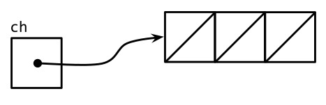
Una operacion de envio en un canal de buffer inserta un elemento en la parte posterior de la cola, y una operacion de recepcion elimina un elemento del frente. Si el canal esta lleno, la operacion de envio bloquea su canal hasta que el espacio sea puesto a disposicion por otro receptor de gorutina. Por el contrario, si el canal esta vacio, una operacion de recepcion se bloquea hasta que un valor es enviado por otro canal.
Podemos enviar hasta tres valores en este canal sin bloquear la gorutina:
ch<-"A"ch<-"B"ch<-"C"
En este punto, el canal esta lleno (Figura 8.3), y una cuarta sentencia de envio lo bloquearia.
Figura 8.3. Un canal completo con bufer.
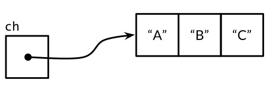
Si recibimos un valor,
fmt.Println(<-ch)// "A"
El canal no esta lleno ni vacio (Figura 8.4), de modo que una operacion de envio o de recepcion podria continuar sin bloquear. De esta manera, el bufer del canal desacopla los canales de envio y recepcion de gorutinas.
Figura 8.4. Un canal parcialmente almacenado en buffer.
En el caso improbable de que un programa necesita saber la capacidad de buffer del canal, se puede obtener llamando a la funcion nawiva cap:
fmt.Println(cap(ch))// "3"
Cuando se aplica a un canal, la funcion nativa len devuelve el numero de elementos actualmente almacenados en el buffer. Ya que en un programa concurrente esta informacion es probable que sea obsoleta tan pronto como se recupera, su valor es limitado, pero podria ser util durante el diagnostico de fallos u optimizacion de rendimiento.
fmt.Println(len(ch))// "2"
Despues de dos operaciones de recepcion mas, el canal esta vacio de nuevo, y un cuarto podria bloquearlo:
fmt.Println(<-ch)// "B"fmt.Println(<-ch)// "C"
En este ejemplo, las operaciones de envio y recepcion fueron todas realizadas por la misma gorutina, pero en programas reales generalmente son ejecutadas por gorutinas diferentes. Los principiantes a veces se sienten tentados a usar canales de buffer dentro de una unica gorutina como una cola, atraidos por su sintaxis agradablemente sencilla, pero esto es un error. Los canales estan profundamente conectados con la programacion de las gorutas, y sin que otra gorutina que recibe del canal, un remitente –y tal vez todo el programa–corre el riesgo de quedar bloqueado para siempre. Si todo lo que necesita es una simple cola, haga una utilizando un slice.
El siguiente ejemplo muestra una aplicacion de un canal con bufer. Se realiza solicitudes paralelas a tres mirrors, es decir, servidores equivalente pero geograficamente distribuidos. Envia sus respuestas a traves de un canal con bufer, luego recibe y devuelve solo la primer respuesta, que es la mas rapida en llegar. Por lo tanto mirroredQuery devuelve un resultado incluso antes de que los dos servidores mas lentos han respondido. (Por cierto, es normal que varias gorutinas envien valores al mismo canal de forma concurrente, como en este ejemplo, o para recibir del mismo canal).
funcmirroredQuery()string{responses:=make(chanstring,3)gofunc(){responses<-request("asia.gopl.io")}()gofunc(){responses<-request("europe.gopl.io")}()gofunc(){responses<-request("americas.gopl.io")}()return<-responses// devuelve la respuesta mas rapida}funcrequest(hostnamestring)(responsestring){/* ... */}
Si hubieramos utilizado un canal sin bufer, las dos gorutinas mas lentos se habrian atascado tratando de enviar sus respuestas en un canal del cual ninguna gorutina jamas recibira. Esta situacion, denominada una fuga de gorutina, seria un error. A diferencia de las variables basura, las gorutinas filtradas no se recogen automaticamente, por lo que es importante asegurarse de que las gorutinas terminan cuando ya no se necesitan.
La eleccion entre canales con o sin bufer, y la eleccion de la capacidad de un canal con bufer, pueden afectar a la correccion de un programa. Los canales sin bufer proporcionan mayores garantias de sincronizacion porque cada operacion de envio se sincroniza con su recepcion correspondiente; Con canales con buffer, estas operaciones se desacoplan. Ademas, cuando conocemos un limite superior en el numero de valores que se enviaran en un canal, no es inusual crear un canal con buffer de ese tamaño y realizar todos los envios antes de que se reciba el primer valor. Si no se asigna suficiente capacidad de buffer, el programa se bloqueara.
Los canales con buffer tambien puede afectar el rendimiento del programa. Imaginese tres cocineros en una pasteleria, una horno, y un frigorifico y otra decorando cada pastel antes de pasarlo al siguiente cocinero en la linea de montaje. En una cocina con poco espacio, cada cocinero que ha terminado un pastel debe esperar a que el cocinero siguiente este listo para aceptarlo; Esta cita es analoga a la comunicacion a traves de un canal sin bufer.
Si hay espacio para un pastel entre cada cocinero, un cocinero puede colocar un pastel terminado alli e inmediatamente comenzar a trabajar en el siguiente; Esto es analogo a un canal con buffer con capacidad 1. Mientras los cocineros trabajen aproximadamente a la misma velocidad en promedio, la mayoria de estos traspasos proceden rapidamente, suavizando las diferencias transitorias en sus respectivas velocidades. Mas espacio entre los cocineros–buffers mas grandes–puede suavizar las variaciones transitorias mas grandes en sus tarifas sin parar la linea de ensamblaje, tal como sucede cuando un cocinero toma una pequeño descanso, luego se apresura para alcanzar a los demas.
Por otro lado, si una etapa anterior de la linea de montaje es consistentemente mas rapida que la siguiente etapa, el buffer entre ellos pasara la mayor parte de su tiempo lleno. Por el contrario, si la etapa posterior es mas rapida, el bufer estara normalmente vacio. Un buffer no proporciona ningun beneficio en este caso.
La metafora de la linea de montaje es util para los canales y gorutinas. Por ejemplo, si la segunda etapa es mas elaborada, un solo cocinero puede no ser capaz de mantenerse al dia con el suministro del primer cocinero o satisfacer la demanda del tercero. Para resolver el problema, podriamos contratar a otro cocinero para ayudar al segundo, realizando la misma tarea pero trabajando independientemente. Esto es analogo a crear otra gorutina que se comunica sobre los mismos canales.
No tenemos espacio para mostralo aqui, pero el paquete gopl.io/ch8/cake simula esta pasteleria, con varios parametros que se pueden variar. Incluye comparativas (§11.4) para algunos de los escenarios descritos anteriormente.
Bucle en Paralelo
En esta seccion, exploraremos algunos patrones de concurrencia comunes para ejecutar todas las iteraciones de un bucle en paralelo. Consideraremos el problema de producir imagenes en miniatura de un conjunto de imagenes de tamaño completo. El paquete gopl.io/ch8/thumbnail proporciona un funcion ImageFile que puede escalar una sola imagen. No vamos a mostrar su implementacion, pero se puede descargar desde gopl.io.
// ImageFile lee una imagen de infile y escribe// una version en miniatura de la misma en el mismo directorio.// Devuelve el nombre del archivo generado, por ejemplo. "foo.thumb.jpeg".funcImageFile(infilestring)(string,error)
El siguiente programa realiza un bucle sobre una lista de nombres de archivo de imagen y produce una miniatura para cada uno:
// makeThumbnails crea miniaturas de los archivos especificados.funcmakeThumbnails(filenames[]string){for_,f:=rangefilenames{if_,err:=thumbnail.ImageFile(f);err!=nil{log.Println(err)}}}
Obviamente, el orden en que procesamos los archivos no importa, ya que cada operacion de escalado es independiente de todas los demas. Problemas como este que consisten enteramente de subproblemas que son completamente independientes entre si se describen como vergonzosamente paralelos. Los problemas vergonzosamente paralelos son el tipo mas facil para implementar concurrencia y disfrutar de un rendimiento que linealmente escala con la cantidad de paralelismo.
Vamos a ejecutar todas estas operaciones en paralelo, ocultando asi la latencia de la E/S de archivos y el uso de varias CPU para los calculos de escalado de imagen. Nuestro primer intento de una version concurrente solo añade una palabras clave go. Ignoraremos los errores por ahora y los abordaremos mas adelante.
Esta version se ejecuta realmente rapido–demasiado rapido, de hecho, tarda menos tiempo que el original, incluso cuando la porcion de nombres de archivo contiene solo un elemento. Si no hay paralelismo, ¿como puede la version concurrente posiblemente correr mas rapido? La respuesta es que makeThumbnails regresa antes de que haya terminado de hacer lo que tenia que hacer. Comienza todas las gorutinas, una por cada nombre de archivo, pero no espera a que terminen.
No hay manera directa de esperar hasta que una gorutina haya terminado, pero podemos cambiar la gorutina interior para reportar su terminacion a la gorutina exterior enviando un acontecimiento en un canal compartido. Dado que sabemos que hay exactamente len(filenames) gorutinas interiores, la gorutina exterior solo necesita contar estos eventos antes de que regresar:
// makeThumbnails3 crea miniaturas de los archivos especificados en paralelo.funcmakeThumbnails3(filenames[]string){ch:=make(chanstruct{})for_,f:=rangefilenames{gofunc(fstring){thumbnail.ImageFile(f)// NOTA: ignorando erroresch<-struct{}{}}(f)}// Esperar a que los gourutines terminenforrangefilenames{<-ch}}
Notese que pasamos el valor de f como argumento explicito a la funcion literal en lugar de utilizar la declaracion de f envolviendo el bucle for:
Recordemos que el problema de la capturar la variable del bucle dentro de una funcion anonima, se describe en la Seccion 5.6.1. Arriba, la unica variable f es compartida por todos los valores de la funcion anonima y actualizado por sucesivas iteraciones del bucle. Por el momento las nuevas gorutinas comenzar a ejecutar la funcion literal, el bucle for puede tener actualizada f e iniciar otra iteracion o (mas probablemente) terminado en su totalidad, por lo que cuando estas gorutinas leen el valor de f, todas ellas observan tener el valor del elemento final del slice. Mediante la adicion de un parametro explicito, nos aseguramos de que se utiliza el valor de f actual cuando se ejecuta la sentencia go.
¿Que pasa si queremos devolver los valores de cada trabajador a la principal? Si la llamada a thumbnail.ImageFile no puede crear un archivo, se devuelve un error. La proxima version de makeThumbnails devuelve el primer error que recibe de cualquiera de las operaciones de escalado:
// makeThumbnails4 crea miniaturas de los archivos especificados en paralelo.// Devuelve un error si ocurrio alguno.funcmakeThumbnails4(filenames[]string)error{errors:=make(chanerror)for_,f:=rangefilenames{gofunc(fstring){_,err:=thumbnail.ImageFile(f)errors<-err}(f)}forrangefilenames{iferr:=<-errors;err!=nil{returnerr// NOTA: incorrecto: fuga de gorutina!}}returnnil}
Esta funcion tiene un error sutil. Cuando encuentra el primer error no nil, se devuelve el error al llamador, sin dejar drenado la gorutina de canal errors. Cada gorutina trabajador restante se bloqueara para siempre cuando intente enviar un valor en ese canal, y nunca terminara. Esta situacion, una fuga de gorutina (§8.4.4), puede hacer que todo el programa se atasque o se quede sin memoria.
La solucion mas sencilla es utilizar un canal con capacidad suficiente que ningun trabajador bloqueara cuando envie un mensaje. (Una solucion alternativa es crear otro canal para drenar el canal, mientras que la gorutina principal devuelve el primer error sin demora).
La siguiente version de makeThumbnails utiliza un canal tamponada para devolver los nombres de los archivos de imagen generados junto con cualquier error.
// makeThumbnails5 crea miniaturas de los archivos especificados en paralelo.// Devuelve los errores de archivo generados en un orden arbitrario,// o un error si algun paso falla.funcmakeThumbnails5(filenames[]string)(thumbfiles[]string,errerror){typeitemstruct{thumbfilestringerrerror}ch:=make(chanitem,len(filenames))for_,f:=rangefilenames{gofunc(fstring){varititemit.thumbfile,it.err=thumbnail.ImageFile(f)ch<-it}(f)}forrangefilenames{it:=<-chifit.err!=nil{returnnil,it.err}thumbfiles=append(thumbfiles,it.thumbfile)}returnthumbfiles,nil}
Nuestra version final de makeThumbnails, a continuacion, devuelve el numero total de bytes ocupados por los nuevos archivos. A diferencia de las versiones anteriores, sin embargo, recibe los nombres de archivo no como un slice sino a traves de un canal de cadenas, por lo que no podemos predecir el numero de iteraciones del bucle.
Para saber cuando ha terminado la ultima gorutina (que puede no ser el ultimo en comenzar), necesitamos incrementar un contador antes de que cada gorutina comience y decrementarlo cuando cada gorutina termine. Esto exige un tipo especial de contador, que se puede manipular con seguridad desde multiples gorutinas y que proporciona una manera de esperar hasta que se convierte en cero. Este tipo de contador se conoce como sync.WaitGroup, y el codigo siguiente muestra como usarlo:
// makeThumbnails6 crea miniaturas de los archivos especificados en paralelo.// Devuelve el numero de bytes ocupados por los archives que crea.funcmakeThumbnails6(filenames<-chanstring)int64{sizes:=make(chanint64)varwgsync.WaitGroup// numero de gorutinas de trabajoforf:=rangefilenames{wg.Add(1)// trabajadorgofunc(fstring){deferwg.Done()thumb,err:=thumbnail.ImageFile(f)iferr!=nil{log.Println(err)return}info,_:=os.Stat(thumb)// OK para ignorar el errorsizes<-info.Size()}(f)}// closergofunc(){wg.Wait()close(sizes)}()vartotalint64forsize:=rangesizes{total+=size}returntotal}
Observe la asimetria en los metodos Add y Done. Add, que incrementa el contador, debe ser llamado antes de que el trabajador empiece la gorutina, no dentro de ella; de lo contrario no estariamos seguros de que el Addocurre antes antes de que la gorutina close llame a Wait. Ademas, Add toma un parametro, pero Done no; que es equivalente a Add(-1). Utilizamos defer para asegurar que el contador se decrementa incluso en el caso de error. La estructura del codigo anterior es un patron comun e idiomatico para realizar bucle en paralelo cuando no conocemos el numero de iteraciones.
El canal sizes lleva cada tamaño de archivo de nuevo a la gorutina principal, que recibe de ellos usando un range de bucle y calcula la suma. Observamos como creamos un gorutina mas cerca que espera a los trabajadores para terminar antes de cerrar el canal sizes. Estas dos operaciones, wait y close, deben ser concurrentes con el bucle sobre sizes. Consideremos las alternativas: si la operacion de espera se coloca en la goruta principal antes del bucle, nunca terminaria, y si se colocaba despues del bucle, seria inalcanzable ya que sin nada cerrando el canal, el bucle nunca terminaria.
La Figura 8.5 ilustra la secuencia de eventos en la funcion makeThumbnails6. Las lineas verticales representan gorutinas. Los segmentos delgados indican el sueño, los segmentos gruesos actividad. Las flechas diagonales indican eventos que sincronizan una gorutina con otra. El tiempo fluye hacia abajo. Notese como la gorutina principal pasa la mayor parte de su tiempo en el range de bucle dormido, esperando a que un trabajador para enviar un valor o el mas cerca para cerrar el canal.
Figura 8.5. La secuencia de eventos en makeThumbnails6.
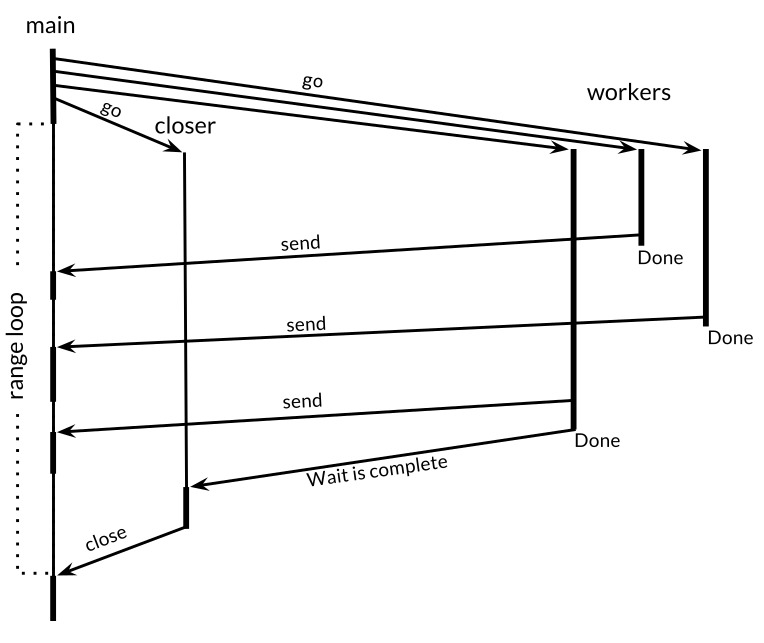
Ejercicio 8.4: Modificar el servidor reverb2 para utilizar un sync.WaitGroup por conexion para contar el numero de gorutinas echo activas. Cuando cae a cero, cierre la mitad de escritura de la conexion TCP como se describe en el Ejercicio 8.3. Compruebe que su cliente netcat3 modificado de ese ejercicio espera los ecos finales de varios gritos simultaneos, incluso despues de la entrada estandar ha sido cerrada.
Ejercicio 8.5: Tome un programa secuencial CPU dependiente existente, tal como el programa de Mandelbrot de la Seccion 3.3 o el calculo de superficie 3-D de la Seccion 3.2, y ejecutar su bucle principal utilizando canales paralelos para la comunicacion. ¿Cuanto mas rapido se ejecuta en una maquina multiprocesador? ¿Cual es el numero optimo de gorutinas a usar?
Ejemplo: Rastreador Web Concurrente
En la Seccion 5.6, hicimos un simple rastreador web que exploro el grafico de enlace de la web con primer onden de amplitud. En esta seccion, lo haremos concurrente para que las llamadas independientes a crawl puedan explotar el paralelismo de E/S disponible en la web. la funcion crawl sigue siendo exactamente como lo fue en gopl.io/ch5/findlinks3:
La funcion principal se asemeja a breadthFirst (§5.6). Como antes, una lista de trabajo registra la cola de elementos que necesitan procesamiento, cada elemento que es una lista de URL para rastrear, pero esta vez, en lugar de representar la cola utilizando un slice, usamos un canal. Cada llamada al crawl se produce en su propia gorutina y envia los enlaces que descubre de nuevo a la lista de trabajo.
funcmain(){worklist:=make(chan[]string)// Comiencza con los argumentos de la linea de comandos.gofunc(){worklist<-os.Args[1:]}()// Rastrea la red concurrentemente.seen:=make(map[string]bool)forlist:=rangeworklist{for_,link:=rangelist{if!seen[link]{seen[link]=truegofunc(linkstring){worklist<-crawl(link)}(link)}}}}
Observe que la gouritina de rastreo toma link como un parametro explicito para evitar el problema de captura de variables de bucle que vimos por primera vez en la Seccion 5.6.1. Observe tambien que el envio inicial de los argumentos de linea de comandos a la lista de trabajo debe ejecutarse en su propia gorutina para evitar un punto muerto, una situacion en la cual tanto la gorutina principal y como la gorutina de rastreo intentan enviarse el uno al otro mientran que ninguno esta recibiendo. Una solucion alternativa seria utilizar un canal con buffer.
El rastreador ahora es altamente concurrente e imprime una tormenta de direcciones URL, pero tiene dos problemas. El primer problema se manifiesta como mensajes de error en el registro despues de unos segundos de operacion:
$ go build gopl.io/ch8/crawl1
$ ./crawl1 http://gopl.io/
http://gopl.io/
https://golang.org/help/
https://golang.org/doc/
https://golang.org/blog/
...
2015/07/15 18:22:12 Get ...: dial tcp: lookup blog.golang.org: no such host
2015/07/15 18:22:12 Get ...: dial tcp 23.21.222.120:443: socket: too many open files
...
El mensaje inicial de error es un informe sorprendente de un fallo de busqueda de DNS para un dominio confiable. El mensaje de error siguiente revela la causa: el programa a creado tantas conexiones de red a la vez que se supero el limite por proceso en el numero de archivos abiertos, haciendo que operaciones como las busquedas de DNS y la llama a net.Dial empiecen a fallar.
El programa es demasiado paralelo. El paralelismo ilimitado rara vez es una buena idea ya que siempre hay un factor limitante en el sistema, como el numero de nucleos de CPU para cargas de trabajo de calculo, el numero de husos y cabeceras para operaciones de E/S de disco local, el ancho de banda de la red para descargas de streaming, o la capacidad de servicio de un servicio web. La solucion es limitar el numero de usos paralelos del recurso para que coincida con el nivel de paralelismo que esta disponible. Una manera sencilla de hacerlo en nuestro ejemplo es asegurarse de que no hay mas de n llamadas a links.Extract activas a la vez, donde n esta comodamente inferior que el descriptor de ficheros limite–20 por ejemplo. Esto es analogo a la manera en que un portero en un club nocturno atestado admite a un huesped solamente cuando algun otro huesped sale.
Podemos limitar el paralelismo utilizando un canal con buffer de capacidad n para modelar una concurrencia primitiva denominada semaforo contador.
Conceptualmente, cada una de las n ranuras vacantes en el buffer del canal representa una señal que autoriza al titular a proceder. Enviar un valor al canal adquiere un token, y recibir un valor del canal libera un token, creando una nueva ranura vacante. Esto asegura que a la mayoria de los n envios puedan producirse sin una recepcion intermedia. (Aunque podria ser mas intuitivo tratar las ranuras ocupadas en canal con bufer como tokens, utilizando ranuras vacias evita la necesidad de llenar el buffer.) Dado que el tipo de elemento de canal no es importante, vamos a utilizar struct{}, Que tiene el tamaño cero.
Vamos a reescribir la funcion crawl para que la llamada a links.Extract se encuentre entre corchetes por las operaciones de adquirir y liberar un token, asegurando asi que a lo sumo 20 llamadas activas al mismo tiempo. Es una buena practica mantener las operaciones de semaforo lo mas cerca posible de la operacion de E/S que regulan.
// tokens es un semaforo de conteo usado para// imponer un limite de 20 petiones concurrentes.vartokens=make(chanstruct{},20)funccrawl(urlstring)[]string{fmt.Println(url)tokens<-struct{}{}// aquirir un tokenlist,err:=links.Extract(url)<-tokens// liberar el tokeniferr!=nil{log.Print(err)}returnlist}
El segundo problema es que el programa nunca termina, incluso cuando ha descubierto todos los enlaces accesibles desde las URLs iniciales. (Por supuesto, es poco probable que note este problema a menos que elija las URL inicialmente o implemente la caracteristica de limitacion de profundidad del Ejercicio 8.6). Para que el programa termine, necesitamos romper el bucle principal cuando la lista de trabajo este y no existan gorutinas de rastreo activas.
funcmain(){worklist:=make(chan[]string)varnint// numero de envios pendientes a la lista de trabajo// Start with the command-line arguments.n++gofunc(){worklist<-os.Args[1:]}()// Rastradeor web concurrente.seen:=make(map[string]bool)for;n>0;n--{list:=<-worklistfor_,link:=rangelist{if!seen[link]{seen[link]=truen++gofunc(linkstring){worklist<-crawl(link)}(link)}}}}
En esta version, el contador n mantiene un registro del numero de envios a la lista de trabajo que aun esta por ocurrir. Cada vez que sabemos que un elemento necesita ser enviado a la lista de trabajo, incrementamos n, una vez antes de enviar los argumentos iniciales de linea de comandos, y de nuevo cada vez que se inicie una gorutina rastreador. El bucle principal termina cuando n cae a cero, ya que no hay mas trabajo por hacer.
Ahora el rastreador concurrente se ejecuta aproximadamente 20 veces mas rapido que el rastreador primero con primer orden de amplitud de la Seccion 5.6, sin errores, y termina correctamente si se debe completar su tarea.
El siguiente programa muestra una solucion alternativa al problema de la concurrencia excesiva. Esta version utiliza la funcion de rastreo original que no tiene semaforo de conteo, sino que la llama desde una de las 20 rutinas de rastreo de larga duracion, garantizando asi que al menos 20 solicitudes HTTP esten activas simultaneamente.
funcmain(){worklist:=make(chan[]string)// lista de URLs, puede tener duplicadosunseenLinks:=make(chanstring)// URLs desduplicadas// Agrega argumentos de linea de comandos a la lista de trabajo.gofunc(){worklist<-os.Args[1:]}()// Crea 20 gorutinas de rastreo para buscar cada enlace no visto.fori:=0;i<20;i++{gofunc(){forlink:=rangeunseenLinks{foundLinks:=crawl(link)gofunc(){worklist<-foundLinks}()}}()}// La gorutina principal desduplica los elementos de la lista de trabajo// y envia los no vistos a los rastreadores.seen:=make(map[string]bool)forlist:=rangeworklist{for_,link:=rangelist{if!seen[link]{seen[link]=trueunseenLinks<-link}}}}
Las gorutinas de rastreo son todas alimentadas por el mismo canal, unseenLinks. la gorutina principal es responsable de deduplicar los elementos que recibe de la lista de trabajo, y luego enviar cada enlace no visto sobre el canal unseenLinks a un gorutina rastreador.
El mapa seen esta confinado dentro de la gorutina principal; Es decir, solo puede ser accedido por ese gorutina. Al igual que otras formas de ocultar la informacion, el confinamiento nos ayuda a razonar sobre la correccion de un programa. Por ejemplo, las variables locales no pueden mencionarse por su nombre fuera de la funcion en la que se declaran; variables que no escapan (§2.3.4) de una funcion no se puede acceder desde fuera de esa funcion; Y los campos encapsulados de un objeto no se puede acceder excepto por los metodos de ese objeto. En todos los casos, la ocultacion de la informacion ayuda a limitar las interacciones no deseadas entre partes del programa.
Los enlaces encontrados por crawl se envian a la lista de trabajo desde una gorutina dedicada para evitar un punto muerto.
Para ahorrar espacio, no hemos abordado el problema de la terminacion en este ejemplo.
Ejercicio 8.6: Añadir limite de profundidad al rastreador concurrente. Es decir, si el usuario establece -depth=3, entonces solo se obtendran las URL accesibles como un maximo de tres enlaces.
Ejercicio 8.7: Escribir un programa concurrente que cree un espejo local de un sitio web, obteniendo cada pagina accesible y escribiendola en un directorio en el disco local. Solo se deben buscar las paginas dentro del dominio original (por ejemplo, golang.org). Las URL de las paginas reflejadas deben modificarse segun sea necesario para que se refieran a la pagina reflejada, no al original.
Multiplexacion con select
El programa a continuacion realiza la cuenta atras para un lanzamiento de cohetes. la funcion time.Tick devuelve un canal en el que se envia eventos periodicamente, actuando como un metronomo. El valor de cada evento es una marca de tiempo, pero rara vez es tan interesante como el hecho de su entrega.
Ahora vamos a añadir la capacidad de abortar la secuencia de lanzamiento presionando la tecla de retorno durante la cuenta atras. En primer lugar, empezamos un gorutina que intenta leer un solo byte de la entrada estandar y, si tiene exito, envia un valor en un canal llamado abort.
abort:=make(chanstruct{})gofunc(){os.Stdin.Read(make([]byte,1))// lee un solo byteabort<-struct{}{}}()
Ahora cada iteracion del bucle de cuenta atras tiene que esperar a que un evento llegue a uno de los dos canales: el canal tinker si todo esta bien (nominal en la jerga de la NASA) o un evento de aborto si hubo una anomalia. No podemos recibir solo de cada canal porque cualquiera de las operaciones que intentamos primero bloqueara hasta su finalizacion. Necesitamos multiplexar estas operaciones, y para ello, necesitamos una (sentencia de selecion).
La forma general de una sentencia select se muestra arriba. Al igual que una sentencia switch, tiene un numero de casos y una opcion default. Cada caso especifica una comunicacion (un envio o recepcion en el algun canal) y un bloque asociado de los estados. Una expresion de recepcion puede aparecer por si misma, como en el primer caso, o dentro de una declaracion de variable compacta, como en el segundo caso; La segunda forma le permite referirse al valor recibido.
Un select espera hasta que una comunicacion por algun caso esta lista para proceder. A continuacion, realiza esa comunicacion y ejecuta las declaraciones asociadas del caso; Las otras comunicaciones no suceden. Un select sin casos, select{}, espera por siempre.
Volvamos a nuestro programa de lanzamiento de cohetes. la funcion time.After devuelve inmediatamente un canal, e inicia una nueva gorutina que envia un unico valor en ese canal despues del tiempo especificado. La instruccion de seleccion a continuacion espera hasta que llegue el primero de dos eventos, ya sea un evento de anulacion o el evento que indica que han transcurrido 10 segundos. Si pasan 10 segundos sin abortar, el lanzamiento continua.
funcmain(){// ...crear canal abort...fmt.Println("Commencing countdown. Press return to abort.")select{case<-time.After(10*time.Second):// no hacer nada.case<-abort:fmt.Println("Launch aborted!")return}launch()}
El siguiente ejemplo es mas sutil. El canal ch, cuyo bufer es de tamaño 1, esta alternativamente vacio y luego lleno, por lo que solo uno de los casos puede proceder, ya sea enviando cuando i es par, o bien recibiendo cuando i es impar. Siempre imprime 0 2 4 6 8.
Si varios casos estan listos, select toma uno al azar, lo que asegura que cada canal tiene la misma probabilidad de ser seleccionado. Aumentar el tamaño del bufer del ejemplo anterior hace que su salida no sea determinista, porque cuando el bufer no esta lleno ni vacio, la sentencia select en sentido figurado arroja una moneda.
Hagamos que nuestro programa de lanzamiento imprima la cuenta regresiva. La siguiente instruccion select hace que cada iteracion del bucle espere hasta 1 segundo para un aborto, pero no mas.
funcmain(){// ...crear canal abort...fmt.Println("Commencing countdown. Press return to abort.")tick:=time.Tick(1*time.Second)forcountdown:=10;countdown>0;countdown--{fmt.Println(countdown)select{case<-tick:// no hacer nada.case<-abort:fmt.Println("Launch aborted!")return}}launch()}
la funcion time.Tick se comporta como si se crea un gorutina que llama a time.Sleep en un bucle, enviando un evento cada vez que se despierta. Cuando la funcion de cuenta atras regresa, se detiene la recepcion de eventos de tick, pero la gorutina ticker sigue alli, tratando en vano de enviar en un canal desde el que no esta recibiendo gorutina–una fuga de gorutina (§8.4.4).
la funcion Tick es conveniente, pero es apropiada solo cuando se necesitan los ticks durante todo el tiempo de vida de la aplicacion. De lo contrario, deberiamos usar este patron:
ticker:=time.NewTicker(1*time.Second)<-ticker.C// recibir desde el canal tikerticker.Stop()// hace que la gorutina tiker termine
A veces queremos intentar enviar o recibir en un canal, pero evitando el bloqueo si el canal no esta listo–una comunicacion no bloqueante. Una sentencia select puede hacer eso tambien. Un select pueden tener un caso default que especifica que hacer cuando ninguna de las otras comunicaciones puede proceder de inmediato.
La instruccion select a continuacion recibe un valor del canal abort si hay uno para recibir; De lo contrario no hace nada. Se trata de una operacion de recepcion no bloqueante; haciendolo repetidamente se denomina un canal de sondeo.
select{case<-abort:fmt.Printf("Launch aborted!\n")returndefault:// no hacer nada}
El valor cero para un canal es nil. Tal vez sorprendentemente, los canales nil a veces son utiles. Debido a que las operaciones de envio y recepcion en un bloque de canal nil, nunca se selecciona un caso en una sentencia select cuyo canal es nil. Esto nos permite utilizar nil para activar o desactivar los casos que corresponden a caracteristicas como el manejo de tiempos de espera o cancelacion, en respuesta a otros eventos de entrada o de salida que emite. Veremos un ejemplo en la siguiente seccion.
Ejercicio 8.8: Utilizando una instruccion select, agregue un tiempo de espera al servidor de eco de la Seccion 8.3 para que se desconecte cualquier cliente que no grite nada en 10 segundos.
Ejemplo: Trayecto de Directorio Concurrente
En esta seccion, vamos a construir un programa que informa del uso de disco de uno o mas directorios especificados en la linea de comandos, como el comando Unix du. La mayor parte de su trabajo es realizado por la funcion walkDir a continuacion, que enumera las entradas del directorio dir utilizando la funcion auxiliar dirents.
// walkDir camina recursivamente el arbol de archivos raiz en dir// y envia el tamaño de cada archivo encontrado en fileSize.funcwalkDir(dirstring,fileSizeschan<-int64){for_,entry:=rangedirents(dir){ifentry.IsDir(){subdir:=filepath.Join(dir,entry.Name())walkDir(subdir,fileSizes)}else{fileSizes<-entry.Size()}}}// dirents devuelve las entradas del directorio dir.funcdirents(dirstring)[]os.FileInfo{entries,err:=ioutil.ReadDir(dir)iferr!=nil{fmt.Fprintf(os.Stderr,"du1: %v\n",err)returnnil}returnentries}
la funcion ioutil.ReadDir devuelve una slice de os.FileInfo–la misma informacion que una llamada a os.Stat regresa para un solo archivo. Para cada subdirectorio, walkDir se llama a si misma recursivamente, y para cada archivo, walkDir envia un mensaje en el canal fileSizes. El mensaje es el tamaño del archivo en bytes.
La funcion principal, que se muestra a continuacion, utiliza dos gorutinas. La gorutina de fondo se llama walkDir por cada directorio especificado en la linea de comandos y finalmente cierra el canal fileSizes. la gorutina principal calcula la suma de los tamaños del archivo que recibe del canal y finalmente imprime el total.
// El comando du1 calcula el uso de disco de los archivos en el directorio.packagemainimport("flag""fmt""io/ioutil""os""path/filepath")funcmain(){// Determina los directorios iniciales.flag.Parse()roots:=flag.Args()iflen(roots)==0{roots=[]string{"."}}// Recorre el arbol de archivos.fileSizes:=make(chanint64)gofunc(){for_,root:=rangeroots{walkDir(root,fileSizes)}close(fileSizes)}()// Imprime los reslutados.varnfiles,nbytesint64forsize:=rangefileSizes{nfiles++nbytes+=size}printDiskUsage(nfiles,nbytes)}funcprintDiskUsage(nfiles,nbytesint64){fmt.Printf("%d files %.1f GB\n",nfiles,float64(nbytes)/1e9)}
Este programa hace una pausa durante mucho tiempo antes de imprimir su resultado:
El programa seria mas agradable si nos mantiene informados de su progreso. Sin embargo, simplemente moviendo el llamada a printDiskUsage en el bucle, lo haria que imprimir miles de lineas de salida.
La variante de du a continuacion, imprime los totales de forma periodica, pero solo si se especifica la bandera -v ya que no todos los usuarios querra ver mensajes de progreso. la gorutina de fondo que se repite sobre roots se mantiene sin cambios. la gorutina principal ahora utiliza un ticker para generar acontecimientos cada 500ms, y una declaracion select para esperar un mensaje del tamaño del archivo, en cuyo caso actualiza el total, o un evento tick, en cuyo caso imprime el total actual. Si no se especifica la bandera -v, el canal tick sigue siendo nil, y en efecto se desactiva en su caso en el select.
varverbose=flag.Bool("v",false,"show verbose progress messages")funcmain(){// ...inicia gorutina de fondo...// Imprime el resultado periodicamente.vartick<-chantime.Timeif*verbose{tick=time.Tick(500*time.Millisecond)}varnfiles,nbytesint64loop:for{select{casesize,ok:=<-fileSizes:if!ok{breakloop// fileSizes es cerrado}nfiles++nbytes+=sizecase<-tick:printDiskUsage(nfiles,nbytes)}}printDiskUsage(nfiles,nbytes)// total final}
Dado que el programa ya no utiliza una bucle range, el primer caso select debe probar explicitamente si el canal fileSizes se ha cerrado, utilizando la forma de dos resultado de recepcion de operacion. Si el canal se ha cerrado, el programa rompe fuera del bucle. Las sentencia break rompe la etiqueta tanto en selec y el bucle for; una marcada break no etiquetada saldria solo fera de select, haciendo que el bucle comience la siguiente iteracion.
El programa ahora nos da un flujo de actualizaciones:
Sin embargo, todavia toma demasiado tiempo para terminar. No hay ninguna razon por la cual todas las llamadas a walkDir no se pueden hacer al mismo tiempo, explotando de esta manera el paralelismo en el disco del sistema. La tercera version de du, a continuacion, crea una nueva gorutina para cada llamada a walkDir. Se utiliza un sync.WaitGroup (§8.5) para contar el numero de llamadas a walkDir que aun estan activas, y una gorutina mas cerca para cerrar el canal fileSizes cuando el contador llega a cero.
funcmain(){// ...determina roots...// Recorre cada raiz del arbol de archivos en paralelo.fileSizes:=make(chanint64)varnsync.WaitGroupfor_,root:=rangeroots{n.Add(1)gowalkDir(root,&n,fileSizes)}gofunc(){n.Wait()close(fileSizes)}()// ...bucle select...}funcwalkDir(dirstring,n*sync.WaitGroup,fileSizeschan<-int64){defern.Done()for_,entry:=rangedirents(dir){ifentry.IsDir(){n.Add(1)subdir:=filepath.Join(dir,entry.Name())gowalkDir(subdir,n,fileSizes)}else{fileSizes<-entry.Size()}}}
Ya que este programa crea miles de gorutinas en su apogeo, tenemos que cambiar dirents para utilizar un semaforo contador para evitar que se abran demasiados archivos a la vez, tal como lo hicimos para el rastreador web en la Seccion 8.6:
// sema es un semaforo de conteo para limitar la concurrencia en direntsvarsema=make(chanstruct{},20)// dirents devuelve las entradas de directorio dirfuncdirents(dirstring)[]os.FileInfo{sema<-struct{}{}// adquirir tokendeferfunc(){<-sema}()// liberar token// ...
Esta version se ejecuta varias veces mas rapido que la anterior, aunque hay mucha variabilidad de sistema a sistema.
Ejercicio 8.9: Escribir una version de du que calcule y muestre periodicamente totales separados para cada una de los directorios root.
Cancelacion
A veces necesitamos instruir a una gorutina para que detenga lo que esta haciendo, por ejemplo, en un servidor web que realiza un calculo en nombre de un cliente que se ha desconectado.
No hay manera de que una gorutina termine directamente a otra, ya que dejaria todas sus variables compartidas en estados indefinidos. En el programa de lanzamiento de cohetes (§8.7) enviamos un solo valor en un canal llamado abort, que la gorutina de cuenta regresiva interpreto como una peticion para detenerse. Pero ¿y si necesitamos cancelar dos gorutinas, o un numero arbitrario?
Una posibilidad podria ser la de enviar tantos eventos en el canal abort como gorutinas haya que cancelar. Sin embargo, si algunas de las gorutinas ya se han terminado, nuestra cuenta sera demasiado grande, y nuestros envios quedaran atascados. Por otra parte, si esas gorutinas han generado otros gorutinas, nuestra cuenta sera demasiado pequeña, y algunas gorutinas permaneceran inconscientes de la cancelacion. En general, es dificil saber cuantos gorutinas estan trabajando en nuestro nombre en un momento dado. Ademas, cuando un gorutina recibe un valor del canal abort, consume ese valor para que otros gorutinas no lo vean. Para la cancelacion, lo que necesitamos es un mecanismo fiable para transmitir un evento sobre un canal de modo que muchos gorutinas puedan verlo tal como ocurre y ver mas tarde que ha ocurrido.
Recuerde que despues de que un canal ha sido cerrado y drenado de todos los valores enviados, las operaciones de recepcion posteriores proceden inmediatamente, dando valores cero. Podemos explotar esto para crear un mecanismo de difusion: no enviar un valor en el canal, cerrarlo.
Podemos agregar la cancelacion al programa du de la seccion anterior con algunos cambios simples. En primer lugar, creamos un canal de cancelacion en el que no se envian valores, pero cuyo cierre indica que es hora de que el programa detenga lo que esta haciendo. Tambien definimos una funcion de utilidad, cancelled, que verifica o sondea el estado de cancelacion en el instante en que se llama.
A continuacion, creamos una gorutina que leera desde la entrada estandar, que normalmente esta conectada al terminal. Tan pronto como se lee cualquier entrada (por ejemplo, el usuario pulsa la tecla de retorno), este gorutina difunde la cancelacion cerrando el canal done.
// cancelar el recorrido cuando se detecta entradagofunc(){os.Stdin.Read(make([]byte,1))// lee un solo byteclose(done)}()
Ahora necesitamos hacer que nuestras gorutinas respondan a la cancelacion. En la gorutina principal, se añade un tercer caso a la instruccion select que trata de recibir desde el canal done. La funcion regresa si se selecciona este caso, pero antes de regresar debe drenar el canal fileSizes, descartando todos los valores hasta que el canal esta cerrado. Esto se hace para asegurar que todas las llamadas activas a walkDir puedan correr hasta el final sin quedar atascado enviando a fileSizes.
for{select{case<-done:// Drenar fileSizes para permitir que las gorutinas existentes terminen.forrangefileSizes{// no hacer nada.}returncasesize,ok:=<-fileSizes:// ...}}
La gorutina walkDir escruta el estado de cancelacion cuando empieza y regresa sin hacer nada si se establece el estado. Esto convierte todas las gorutinas creadas despues de la cancelacion en no-ops:
Puede ser que sea rentable sondear el estado de cancelacion de nuevo dentro del bucle walkDir, para evitar la creacion gorutinas despues del evento de cancelacion. La cancelacion implica un trade-off; Una respuesta mas rapida a menudo requiere cambios mas intrusivos a la logica del programa. Asegurarse de que ninguna operacion costosa ocurre despues del evento de cancelacion puede requerir la actualizacion de muchos lugares en su codigo, pero a menudo la mayoria del beneficio se puede obtener comprobando la cancelacion en algunos lugares importantes.
Un poco de perfilado de este programa revelo que el cuello de botella es la adquisicion de un token de semaforos en dirents. El select a continuacion hace que esta operacion sea cancelable y reduce la latencia tipica del programa de cientos a decenas de milisegundos:
Ahora, cuando se produce la cancelacion, todas las gorutinas de fondo se detienen rapidamente y la funcion main regresa. Por supuesto, cuando main regresa, un programa sale, por lo que puede ser dificil distinguir una funcion principal que limpia despues de si mismo de una que no lo hace. Hay un truco muy util que podemos utilizar durante las pruebas: si en lugar de regresar de main en caso de cancelacion, llevamos a cabo una llamada a panic, entonces en tiempo de ejecucion se volcara la pila de cada gorutina en el programa. Si la gorutina principal es la unica que queda, sera limpiada despues a si misma. Pero si otros gorutinas permanecen, pueden no haber sido canceladas correctamente, o quizas se han cancelado pero la cancelacion toma tiempo; Una pequeña investigacion puede valer la pena. El volcado de un panico a menudo contiene informacion suficiente para distinguir estos casos.
Ejercicio 8.10: Las peticiones HTTP pueden cancelarce cerrando el canal opcional Cancel en la estructura http.Request. Modificar el rastreador web de la Seccion 8.6 para admitir la cancelacion.
Sugerencia: la conveniente funcion http.Get no le brinda la oportunidad de personalizar una Request. En su lugar, cree la solicitud utilizando http.NewRequest, establezca su campo Cancel y, a continuacion, realice la solicitud llamando a http.DefaultClient.Do(req).
Ejercicio 8.11: Siguiendo el enfoque de mirroredQuery en la Seccion 8.4.4, impremente una variante de fetch que solicite varias direcciones URL al mismo tiempo. Tan pronto como llegue la primera respuesta, cancele las otras solicitudes.
Ejemplo: Server de Chat
Terminaremos este capitulo con un servidor de chat que permite a varios usuarios difundir mensajes de texto entre si. Hay cuatro tipos de gorutina en este programa. Hay una instancia por cada gorutina main y broadcaster, y para cada conexion de cliente hay una gorutina handleConn y clientWriter. El emisor un buen ejemplo de como se utiliza select, ya que tiene que responder a tres diferentes tipos de mensajes.
El trabajo de la gorutina principal, demostrado abajo, es escuchar y aceptar conexiones entrantes de la red de clientes. Para cada uno, crea una nueva gorutina handleConn, al igual que en el servidor eco concurrente que vimos al principio de este capitulo.
A continuacion esta el emisor. Sus variable local clients registra el conjunto actual de los clientes conectados. La unica informacion registrada sobre cada cliente es la identidad de su canal de mensajes salientes, sobre el cual mas tarde.
typeclientchan<-string// un canal de mensajes salientesvar(entering=make(chanclient)leaving=make(chanclient)messages=make(chanstring)// todos los mensajes de los clientes entrantes)funcbroadcaster(){clients:=make(map[client]bool)// todos los clientes conectadosfor{select{casemsg:=<-messages:// Difusion de mensajes entrantes a todos// Canales de mensajes salientes de los clientes.forcli:=rangeclients{cli<-msg}casecli:=<-entering:clients[cli]=truecasecli:=<-leaving:delete(clients,cli)close(cli)}}}
La emisora escucha los canales globales entering y leaving para anuncios la llegada y salida de clients. Cuando recibe uno de estos eventos, actualiza el conjunto de clientes, y si el evento fue una salida, cierra el canal de mensajes de salida del cliente. La emisora tambien escucha los eventos globales en el canal messages, a la que cada cliente envia todos sus mensajes entrantes. Cuando el emisor recibe uno de estos eventos, transmite el mensaje a cada cliente conectado.
Ahora echemos un vistazo a las gorutinas por cliente. La funcion handleConn crea un nuevo canal de mensaje de salida para su cliente y anuncia la llegada de este cliente a la emisora atravez del canal entering. A continuacion, lee cada linea de texto del cliente, enviando cada linea a la emisora a traves del canal de mensajes entrantes global, prefijando cada mensaje con la identidad de su remitente. Una vez que no hay nada mas que leer desde el cliente, handleConn anuncia la salida del cliente a traves del canal leaving y cierra la conexion.
funchandleConn(connnet.Conn){ch:=make(chanstring)// mensajes salientes del clientegoclientWriter(conn,ch)who:=conn.RemoteAddr().String()ch<-"You are "+whomessages<-who+" has arrived"entering<-chinput:=bufio.NewScanner(conn)forinput.Scan(){messages<-who+": "+input.Text()}// NOTA: ignorando errores potenciales de input.Err()leaving<-chmessages<-who+" has left"conn.Close()}funcclientWriter(connnet.Conn,ch<-chanstring){formsg:=rangech{fmt.Fprintln(conn,msg)// NOTA: ignorando errores de red}}
Ademas, handleConn crea una gorutina clientWriter para cada cliente que recibe los mensajes difundidos al canal de mensaje de salida del cliente y los escribe en la conexion de red del cliente. El bucle del criente escritor termina cuando el difusor cierra el canal despues de recibir una notificacion de salida (leaving).
La pantalla muestra el servidor en accion con dos clientes en ventanas separadas en el mismo equipo, utilizando netcat para charlar:
$ go build gopl.io/ch8/chat
$ go build gopl.io/ch8/netcat3
$ ./chat &
$ ./netcat3
You are 127.0.0.1:64208
127.0.0.1:64211 has arrived
Hi!
127.0.0.1:64208: Hi!
127.0.0.1:64211: Hi yourself.
^C
$ ./netcat3
You are 127.0.0.1:64216
127.0.0.1:64211: Welcome.
127.0.0.1:64211 has left
$ ./netcat3
You are 127.0.0.1:64211
127.0.0.1:64208: Hi!
Hi yourself.
127.0.0.1:64211: Hi yourself.
127.0.0.1:64208 has left
127.0.0.1:64216 has arrived
Welcome.
127.0.0.1:64211: Welcome.
^C
Al hospedar una sesion de chat para n clientes, este programa ejecuta 2n+2 gorutinas al mismo tiempo que se comunican, sin embargo, no necesita operaciones de bloqueo explicitas (§9.2). El mapa clients se limita a solo una gorutina, el emisor, por lo que no se puede acceder al mismo tiempo. Las unicas variables que son compartidos por gorutinas multiples son canales e instancias de net.Conn, ambos concurrentemente seguros. Hablaremos mas sobre el confinamiento, la seguridad de la concurrencia y las implicaciones de compartir las variables a traves de gorutinas en el proximo capitulo.
Ejercicio 8.12: Hacer que el emisor anuncia el conjunto actual de clientes para cada nueva llegada. Esto requiere que los clientes establecidos (clients) y los canales de entrada (entering y salida registren tambien el nombre del cliente.
Ejercicio 8.13: Hacer que el servidor de chat desconecte clientes inactivos, como los que no han enviado ningun mensaje en los ultimos cinco minutos. Sugerencia: llamar a conn.Close() en otra gorutina desbloquea las llamadas activas Read como la realizada por input.Scan().
Ejercicio 8.14: Cambiar el protocolo de red del servidor de chat para que cada cliente proporcione su nombre al entrar. Utilice ese nombre en lugar de la direccion de red cuando prefija cada mensaje con la identidad de su remitente.
Ejercicio 8.15: El fallo de cualquier programa cliente para leer datos de manera oportuna en ultima instancia, hace que todos los clientes queden atascados. Modifique el emisor para omitir un mensaje en lugar de esperar si un escritor de cliente no esta listo para aceptarlo. Como alternativa, agregue un bufer en el canal de mensajes saliente de cada cliente para que la mayoria de los mensajes no se descarten; El emisor debe utilizar un envio sin bloqueo a este canal.
Concurrencia con Variables Compartidas
En el capitulo anterior presentamos varios programas que utilizan gorutinas y canales para expresar la concurrencia de forma directa y natural. Sin embargo, al hacerlo, pasamos revista a una serie de cuestiones importantes y sutiles que los programadores deben tener en cuenta al escribir codigo concurrente.
En este capitulo, examinaremos mas de cerca la mecanica de la concurrencia. En particular, señalaremos algunos de los problemas asociados con el intercambio de variables entre multiples gorutinas, las tecnicas analiticas para reconocer esos problemas y los patrones para resolverlos. Finalmente, explicaremos algunas de las diferencias tecnicas entre gorutinas y los hilos del sistema operativo.
Condiciones de Carrera
En un programa secuencial, es decir, un programa con solo una gorutina, los pasos del programa ocurren en el orden de ejecucion familiar determinado por la logica del programa. Por ejemplo, en una secuencia de declaraciones, la primera sucede antes de la segunda, y asi sucesivamente. En un programa con dos o mas gorutinas, los pasos dentro de cada gorutina suceden en el orden familiar, pero, en general, no sabemos si un evento x en una gorutina sucede antes de un evento y en otra gorutina, o pasa despues de ella, o es simultaneo con ella. Cuando no podemos decir con confianza que un evento ocurre antes que el otro, entonces los eventos de x y y son concurrentes.
Considere una funcion que funcione correctamente en un programa secuencial. Esa funcion es segura para la concurrencia seguira trabajando correctamente incluso cuando se llame concurrentemente, es decir, a partir de dos o mas gorutinas sin sincronizacion adicional. Podemos generalizar esta nocion a un conjunto de funciones en colaboracion, como los metodos y operaciones de un tipo particular. Un tipo es seguro para la concurrencia si todos sus metodos y operaciones accesibles son seguros para la simultaneidad.
Podemos hacer un programa seguro para la concurrencia sin hacer que cada tipo concreto en el programa sea seguro para la concurrencia. De hecho, los tipos concurrentemente seguros simultaneidad son la excepcion en lugar de la regla, por lo que debe acceder a una variable simultaneamente solo si la documentacion de su tipo indica que esto es seguro. Evitamos el acceso concurrente a la mayoria de las variables, ya sea mediante su confinamiento a una sola gorutina o manteniendo una invariante de mas alto nivel de exclusion mutua. Explicaremos estos terminos en este capitulo.
En contarste, se espera que las funciones a nivel de paquete sean compatibles con la concurrencia. Ya que las variables de nivel de paquete no pueden limitarse a una sola gorutina, las funciones que las modifican deben imponer la exclusion mutua.
Existen muchas razones por las que una funcion puede no funcionar cuando se llama concurrentement, incluyendo el punto muerto, el bloqueo vivo y la inanicion de recursos. No tenemos espacio para discutir todos ellos, por lo que nos centraremos en la mas importante, la condicion de carrera.
Una condicion de carrera es una situacion en la que el programa no da el resultado correcto para algunas intercalaciones de las operaciones de multiples gorutinas. Las condiciones de carrera son perniciosas porque pueden permanecer latentes en un programa y aparecen con poca frecuencia, quizas solo bajo carga pesada o cuando se utilizan ciertos compiladores, plataformas o arquitecturas. Esto los hace dificiles de reproducir y diagnosticar.
Es tradicional para explicar la gravedad de las condiciones de la carrera a traves de la metafora de la perdida financiera, por lo que vamos a considerar un programa de cuenta bancaria simple.
// El paquete bank implementa un banco con solo una cuenta.packagebankvarbalanceintfuncDeposit(amountint){balance=balance+amount}funcBalance()int{returnbalance}
(Podriamos haber escrito el cuerpo de la funcion Deposit como balance += amount, lo que es equivalente, pero la forma mas larga simplificara la explicacion.)
Para este programa trivial, podemos ver a simple vista que cualquier secuencia de llamadas a Deposit y Balance dara la respuesta correcta, es decir, Balance reportara la suma de todas las cantidades depositadas previamente. Sin embargo, si llamamos a estas funciones no en una secuencia, sino al mismo tiempo, no se garantiza que Balance de la respuesta correcta. Considere las dos siguientes gorutinas, que representan dos transacciones en una cuenta bancaria conjunta:
// Alice:gofunc(){bank.Deposit(200)// A1fmt.Println("=",bank.Balance())// A2}()// Bob:gobank.Deposit(100)// B
Alice deposita $200, luego comprueba su balance, mientras que Bob deposita $100. Dado que los pasos A1 y A2 se producen simultaneamente con B, no podemos predecir el orden en que se producen. Intuitivamente, podria parecer que solo hay tres posibles ordenaciones, que llamaremos a Alicia primero, a Bob primero, y Alice/Bob/Alice. La siguiente tabla muestra el valor de la variable de balance despues de cada paso. Las cadenas entre comillas representan los resbalones impresos.
Alice primero Bob primero Alice/Bob/Alice
0 0 0
A1 200 B 100 A1 200
A2 "= 200" A1 300 B 300
B 300 A2 "= 300" A2 "= 300"
En todos los casos el balance es de $300. La unica variacion es si el balance de Alice incluye la transaccion de Bob o no, pero los clientes estan satisfechos de cualquier manera.
Pero esta intuicion es incorrecta. Hay una cuarto resultado posible, en el que el deposito de Bob se produce en medio de deposito de Alice, despues de que el equilibrio se ha leido (balance + amount), pero antes de que haya sido actualizada (balance = ...), haciendo que la transaccion de Bob desaparezca. Esto se debe a que la operacion de deposito de Alice A1 es realmente una secuencia de dos operaciones, una lectura y una escritura; llamarlos A1r y A1w. Aqui esta la intercalacion problematica:
Data race
0
A1r 0 ... = balance + amount
B 100
A1w 200 balance = ...
A2 "= 200"
Despues de A1r, la expresion balance + amount se evalua a 200, por lo que este es el valor escrito durante A1w, a pesar del deposito intermedio. El saldo final es de solo $200. El banco es $100 mas rico a expensas de Bob.
Este programa contiene un determinado tipo de condicion de carrera llamado carrera de datos. Una carrera de datos ocurre cuando dos gorutinas acceden simultaneamente a la misma variable y al menos uno de los accesos es una escritura.
Las cosas se ponen aun mas desordenadas si la carrera de datos implica una variable de un tipo que es mas grande que una sola palabra de maquina, como una interfaz, una cadena o un slice. Este codigo actualiza x concurrentemente a dos slices de diferentes longitudes:
varx[]intgofunc(){x=make([]int,10)}()gofunc(){x=make([]int,1000000)}()x[999999]=1// NOTA: comportamiento no definido; posible corrupcion de memoria!
El valor de x en la declaracion final no esta definido; Podria ser nil, o un slice de longitud 10, o un slice de longitud 1,000,000. Pero recuerda que hay tres partes en un slice: el puntero, la longitud y la capacidad. Si el puntero viene de la primera llamada a realizar y la duracion viene de la segunda, x sera una quimera, un slice cuya longitud nominal es de 1,000,000, pero cuya matriz subyacente tiene solo 10 elementos. En esta eventualidad, el almacenamiento en el elemento 999.999 bloquearia una ubicacion de memoria aleatoria arbitraria, con consecuencias imposibles de predecir y dificiles de depurar y localizar. Este campo de minas semantica se llama un comportamiento indefinido y es bien conocido por los programadores de C; Afortunadamente rara vez es tan problematico en Go como en C.
Incluso la nocion de que un programa concurrente es una intercalacion de varios programas secuenciales es una falsa intuicion. Como veremos en la Seccion 9.4, las carreras de datos pueden tener resultados aun mas extrañas. Muchos programadores–incluso algunos muy inteligentes–en ocasiones ofrecen justificaciones para carreras de datos conocidos en sus programas: el costo de la exclusion mutua es demasiado alto, esta logica es solo para el registro, no me importa si dejo caer algunos mensajes, y asi sucesivamente. La ausencia de problemas en un compilador y una plataforma dados puede darles una falsa confianza. Una buena regla general es que no hay tal cosa como una carrera de datos benigna. Entonces, ¿como evitamos las carreras de datos en nuestros programas?
Vamos a repetir la definicion, ya que es tan importante: Una carrera de datos se produce cuando dos gorutinas acceder a la misma variable al mismo tiempo y al menos uno de los accesos es una escritura. De esta definicion se deduce que hay tres maneras de evitar una carrera de datos.
La primera manera es no escribir la variable. Considere el siguiente mapa, que es poblado perezosamente, ya que cada clave se solicita por primera vez. Si Icon se llama secuencialmente, el programa funciona bien, pero si Icon se llama al mismo tiempo, hay una carrera de datos accediendo al mapa.
varicons=make(map[string]image.Image)funcloadIcon(namestring)image.Image// NOTA: no es seguro para la concurrencia!funcIcon(namestring)image.Image{icon,ok:=icons[name]if!ok{icon=loadIcon(name)icons[name]=icon}returnicon}
Si en lugar de eso inicializamos el mapa con todas las entradas necesarias antes de crear gorutinas adicionales y nunca lo modificamos de nuevo, entonces cualquier numero de gorutinas puede llamar de forma segura a Icon simultaneamente puesto que cada uno solo lee el mapa.
varicons=map[string]image.Image{"spades.png":loadIcon("spades.png"),"hearts.png":loadIcon("hearts.png"),"diamonds.png":loadIcon("diamonds.png"),"clubs.png":loadIcon("clubs.png"),}// Seguro para la concurrencia.funcIcon(namestring)image.Image{returnicons[name]}
En el ejemplo anterior, la variable icons se asigna durante la inicializacion del paquete, lo que ocurre antes de que comience la funcion principal del programa. Una vez inicializado, icons no se modifica. Las estructuras de datos que nunca se modifican o son inmutables son intrinsecamente seguras y no necesitan sincronizacion. Pero, obviamente, no podemos utilizar este enfoque si las actualizaciones son esenciales, como con una cuenta bancaria.
La segunda forma de evitar una carrera de datos es evitar el acceso a la variable desde multiples gorutinas. Este es el enfoque adoptado por muchos de los programas del capitulo anterior. Por ejemplo, la gorutina principal en el rastreador web concurrente (§8.6) es la unica gorutina que tiene acceso a el mapa seen y la gorutina broadcaster en el servidor de chat (§8.10) es la unica gorutina que accede al mapa clients. Estas variables se limitan a una sola gorutina.
Ya que otras gorutinas no pueden acceder a la variable directamente, deben usar un canal para enviar al gorutina de confinamiento una solicitud para consultar o actualizar la variable. Esto es lo que se quiere decir con el mantra Go No se comunique compartiendo memoria; en su lugar, comparta la memoria mediante la comunicacion. Una gorutina por la que los corredores acceden a una variable confinada usando solicitudes de canal se denomina gorutina monitor para esa variable. Por ejemplo, la gorutina broadcaster monitorea el acceso al mapa de clientes.
Aqui esta el ejemplo del banco reescrito con la variable balance confinada a una gorutina monitor llamada teller:
// El paquete bank seguro para la concurrencia con solo una cuenta.packagebankvardeposits=make(chanint)// enviar la cantidad a depositarvarbalances=make(chanint)// recive el balancefuncDeposit(amountint){deposits<-amount}funcBalance()int{return<-balances}functeller(){varbalanceint// balance esta confinado a la gorutina tellerfor{select{caseamount:=<-deposits:balance+=amountcasebalances<-balance:}}}funcinit(){goteller()// inicia la gorutina momitor}
Incluso cuando una variable no puede ser confinada a una sola gorutina durante toda su vida, el confinamiento todavia puede ser una solucion al problema del acceso concurrente. Por ejemplo, es comun compartir una variable entre gorutinas en una tuberia, pasando su direccion de una etapa a la siguiente a traves de un canal. Si cada etapa de la tuberia se abstiene de acceder a la variable despues de enviarla a la siguiente etapa, entonces todos los accesos a la variable son secuenciales. En efecto, la variable esta confinada a una etapa de la tuberia, luego confinada a la siguiente, y asi sucesivamente. Esta disciplina es a veces llamado el confinamiento en serie.
En el siguiente ejemplo, Cakes se confina en serie, primero a la gorutina baker, despues, a la gorutina icer:
typeCakestruct{statestring}funcbaker(cookedchan<-*Cake){for{cake:=new(Cake)cake.state="cooked"cooked<-cake// baker nunca toca este pastel de nuevo}}funcicer(icedchan<-*Cake,cooked<-chan*Cake){forcake:=rangecooked{cake.state="iced"iced<-cake// icer nunca toca este pastel de nuevo}}
La tercera manera de evitar una carrera de datos es permitir que muchas gorutinas accedan a la variable, pero solo una a la vez. Este enfoque se conoce como exclusion mutua y es el objeto de la siguiente seccion.
Ejercicio 9.1: Añadir una funcion Withdraw(amount int) bool al programa gopl.io/ch9/bank1. El resultado debe indicar si la transaccion tuvo exito o fracaso debido a fondos insuficientes. El mensaje enviado a la gorutina monitor debe contener tanto la cantidad a retirar y un nuevo canal por el cual la gorutina monitor puede enviar el resultado booleano de nuevo a Withdraw.
Exclusion mutua: sync.Mutex
En la Seccion 8.6, se utilizo un canal con buffer como un semaforo contador para asegurar que no mas de 20 gorutinas hacen peticiones HTTP simultaneas. Con la misma idea, podemos usar un canal de capacidad 1 para asegurar que a lo sumo una gorutina acceda a una variable compartida a la vez. Un semaforo que cuenta solamente a 1 se denomina semaforo binario.
Este patron de exclusion mutua es tan util que esta soportado directamente por el tipo de objeto mutex del paquete sync. Su metodo Lock adquiere el token (llamado bloqueo) y su metodo Unlock lo libera:
Cada vez que una gorutina accede a las variables del banco (aqui solo balance), debe llamar a la metodo Lock de mutex para adquirir un bloqueo exclusivo. Si alguna otra gorutina ha adquirido el bloqueo, esta operacion se bloqueara hasta que la otra gorutina llame a Unlock y el bloqueo vuelva a estar disponible. La exclusion mutua custodia las variables compartidas. Por convencion, las variables custodiadas por un mutex se declaran inmediatamente despues de la declaracion del propio mutex. Si se desvia de esto, asegurese de documentarlo.
La region de codigo entre Lock y Unlock en la que un gorutina es libre de leer y modificar las variables compartidas se denomina seccion critica. Llama a Unlock de parte del poseeodor del bloqueo ocurrira antes de que cualquier otra gorutina pueda adquirir el bloqueo para si. Es esencial que la gorutina libire el bloqueo una vez que haya terminado, en toda las rutas a traves de la funcion, incluyendo rutas de error.
El programa bancario anterior ejemplifica un patron de concurrencia comun. Un conjunto de funciones exportadas encapsula una o mas variables de manera que la unica forma de acceder a las variables es a traves de estas funciones (o metodos, para las variables de un objeto). Cada funcion adquiere un bloqueo mutex al principio y lo libera al final, asegurando asi que las variables compartidas no se acceden simultaneamente. Esta disposicion de las funciones de bloqueo, mutex y variables se denomina monitor. (Este uso anterior de la palabra del monitor inspiro el termino gorutina monitor. Ambos usos comparten el significado de un agente que asegura el acceso sequencial a las variables.)
Dado que las secciones criticas en las funciones Deposit y Balance son tan cortas–una sola linea, ninguna ramificacion–llamar a Unlock al final es sencillo. En las secciones criticas mas complejas, especialmente aquellas en los que los errores deben resolverse regregando antes, puede ser dificil saber que las llamadas a Lock y Unlock estan estrictamente emparejado en todas las rutas. La declaracion defer de Go viene al rescate: al diferir una llamada a Unlock, la seccion critica se extiende implicitamente al final de la funcion actual, liberandonos de tener que insertar una llamada Unlock en uno o mas lugares lejos de la llamada a Lock.
En el ejemplo anterior, Unlock se ejecuta despues de que la instruccion de retorno ha leido el valor de balance, por lo que la funcion Balance es segura para la concurrencia. Como beneficio adicional, ya no necesitamos la variable local b.
Por otra parte, un Unlock diferido funcionara incluso si la seccion critica entra en panico, lo que puede ser importante en los programas que hacen uso de recover (§5.10). Un defer es ligeramente mas caro que una llamada explicita a Unlock, pero no lo suficiente para justificar codigo de menos claro. En programas concurrentes, siempre favoresca la claridad y resista la optimizacion prematura. Siempre que sea posible, utilice defer y dejar que las secciones criticas se extienden hasta el final de una funcion.
Considere la funcion Withdraw a continuacion. En caso de exito, reduce el balance en la cantidad especificada y devuelve true. Pero si la cuenta tiene fondos suficientes para la transaccion, Withdraw restaura el balance y devuelve false.
// NOTA: no atomico!funcWithdraw(amountint)bool{Deposit(-amount)ifBalance()<0{Deposit(amount)returnfalse// fondos insuficientes}returntrue}
Esta funcion finalmente da el resultado correcto, pero tiene un efecto secundario desagradable. Cuando se intenta una retiro excesivo, el balance transitoriamente se sumerge por debajo de cero. Esto puede causar una retirada simultanea de una suma modesta que se rechazara espuriosamente. Asi que si Bob trata de comprar un coche deportivo, Alice no puede pagar por su cafe de la mañana. El problema es que Withdraw no es atomico: consiste en una secuencia de tres operaciones separadas, cada una de las cuales adquiere y luego libera el bloqueo de exclusion mutua, pero nada bloquea toda la secuencia.
Idealmente, Withdraw debe adquirir el bloqueo mutex una vez alrededor de toda la operacion. Sin embargo, este intento no funcionara:
Deposit intenta adquirir el bloqueo mutex una segunda vez llamando a mu.Lock(), pero debido a que los bloqueos de exclusion mutua no son reentrantes–No es posible bloquear un mutex que ya esta bloqueado–esto lleva a un punto muerto en el que nada puede proceder, y Withdraw se bloqua para siempre.
Hay una buena razon para que los mutex de Go no vuelvan a entrar. El proposito de un mutex es asegurar que ciertos invariantes de las variables compartidas se mantengan en puntos criticos durante la ejecucion del programa. Una de las invariantes es que la gorutina no esta accediendo a las variables compartidas, pero puede haber invariantes adicionales especificas a las estructuras de datos que custodia el mutex. Cuando una gorutina adquiere un bloqueo mutex, puede suponer que los invariantes se mantienen. Mientras mantiene el bloqueo, puede actualizar las variables compartidas para que los invariantes se violen temporalmente. Sin embargo, cuando se libera el bloqueo, debe garantizar que el orden ha sido restaurado y mantiene los invariantes una vez mas. Aunque un mutex reentrante aseguraria que ninguna otra parte acceda a las variables compartidas, no puede proteger las invariantes adicionales de esas variables.
Una solucion comun es dividir una funcion como Deposit en dos: una funcion no exportada, deposit, que asume que el bloqueo ya se retiene y hace el trabajo real, y una funcion exportada Deposit que adquiere el bloqueo antes de llamar a deposit. Podemos expresar Withdraw en terminos de deposit de la siguiente manera:
funcWithdraw(amountint)bool{mu.Lock()defermu.Unlock()deposit(-amount)ifbalance<0{deposit(amount)returnfalse// fondos insuficientes}returntrue}funcDeposit(amountint){mu.Lock()defermu.Unlock()deposit(amount)}funcBalance()int{mu.Lock()defermu.Unlock()returnbalance}// Esta funcion requiere que se mantenga el bloqueo.funcdeposit(amountint){balance+=amount}
Por supuesto, la funcion deposit mostrada aqui es tan trivial que una funcion Withdraw realista no se molestaria en llamarla, no obstante, ilustra el principio.
La encapsulacion (§6.6), mediante la reduccion de las interacciones inesperadas en un programa, nos ayuda a mantener la estructura de datos invariantes. Por la misma razon, la encapsulacion tambien nos ayuda a mantener invariantes concurrentes. Cuando utilice un mutex, asegurese de que tanto el como las variables que protege no se exportan, ya sean variables a nivel de paquete o campos de una estructura.
Mutex de Lectura/Escritura: sync.RWMutex
En un ataque de ansiedad despues de ver su deposito de $100 desaparecer sin dejar rastro, Bob escribe un programa para comprobar su saldo bancario cientos de veces por segundo. El lo ejecuta en casa, en el trabajo, y en su telefono. El banco se da cuenta de que el aumento del trafico esta retrasando los depositos y retiros, porque todas las peticiones de Balance se ejecutan secuencialmente, manteniendo el bloqueo exclusivo, inpidiendo temporalmente otras gorutinas se ejecute.
Dado que la funcion Balance solo tiene que leer el estado de la variable, de echo, seria seguro que multiples llamadas Balance se ejecuten concurrentemente, siempre y cuando no se ejecute ninguna llamada a Deposit o Withdraw. En este escenario necesitamos un tipo especial de bloqueo que permita que las operaciones de solo lectura se realicen en paralelo entre si, pero que las operaciones de escritura tengan acceso totalmente exclusivo. Este bloqueo se denomina lectores multiples, escritor unico, y en Go es proporcionado por sync.RWMutex:
varmusync.RWMutexvarbalanceintfuncBalance()int{mu.RLock()// bloqueo de lectoresdefermu.RUnlock()returnbalance}
La funcion Balance ahora llama a los metodos RLock y RUnlock para adquirir y liberar a lectores o bloqueo compartido. la funcion Deposit, queda sin cambios, llama a los metodos mu.Lock y mu.Unlock para adquirir y liberar un escritor o bloqueo exclusivo.
Despues de este cambio, la mayor parte de peticion Balance de Bob se ejecutan en paralelo entre si y terminar mas rapidamente. El bloqueo esta disponible la mayoria del tiempo, y las solicitudes Deposit puede proceder de manera oportuna.
RLock solo se puede utilizar si no hay escritura en variables compartidas en la seccion critica. En general, no debemos suponer que la funciones de solo lectura logicamente no actualizan algunas variables. Por ejemplo, un metodo que parece ser un simple accesorio tambien puede incrementar un contador de uso interno o actualizar un cache para que las llamadas repetidas sean mas rapidas. En caso de duda, utilice un Lock exclusivo .
Solo es rentable utilizar RWMutex cuando la mayoria de las gorutinas que adquieren el bloqueo son lectores, y el bloqueo esta bajo contencion, es decir, las gorutinas rutinariamente tienen que esperar para adquirirla. Un RWMutex requiere contabilidad interna mas compleja, por lo que es mas lento que un mutex regular para bloqueos sin contencion.
Sincronizacion de Memoria
Usted puede preguntarse por que el metodo Balance necesita exclusion mutua, ya sea basada en canales o basada en mutex. Despues de todo, a diferencia de Deposit, que consiste solo en una sola operacion, por lo que no hay peligro de otra gorutina se ejecute en medio de la misma. Hay dos razones por las que necesitamos un mutex. La primera es que es igualmente importante que Balance no se ejecute en medio de alguna otra operacion como Withdraw. La segunda (y mas sutil) razon es que la sincronizacion es mas que solo el orden de ejecucion de multiples gorutinas; La sincronizacion tambien afecta a la memoria.
En una computadora moderna puede haber decenas de procesadores, cada uno con su propia cache local de memoria principal. Por razones de eficiencia, las escrituras en memoria se almacenan en el buffer de cada procesador y se descargan en la memoria principal solo cuando es necesario. Incluso pueden estar comprometidos con la memoria principal en un orden diferente de lo que fueron escritos por la gorutina de escritura. Las primitivas de sincronizacion como las comunicaciones de canal y las operaciones de mutex hacen que el procesador descargue y comprometa todas sus escrituras acumuladas de modo que los efectos de la ejecucion de gorutina hasta ese punto esten garantizados para ser visibles para gorutinas que se ejecutan en otros procesadores.
Considere las posibles salidas del siguiente fragmento de codigo:
Dado que estas dos gorutinas son concurrentes y acceden a variables compartidas sin exclusion mutua, existe una carrera de datos, por lo que no debe sorprendernos que el programa no sea determinista. Podemos esperar que imprima cualquiera de estos cuatro resultados, que corresponden a intercalaciones intuitivas de las declaraciones etiquetadas del programa:
y:0 x:1
x:0 y:1
x:1 y:1
y:1 x:1
La cuarta linea podria explicarse por la secuencia A1, B1, A2, B2 o por B1, A1, A2, B2, por ejemplo. Sin embargo, estos dos resultados podrian ser una sorpresa:
x:0 y:0
y:0 x:0
Pero dependiendo del compilador, la CPU, y muchos otros factores, pueden suceder tambien. ¿Que posible intercalacion de los cuatro enunciados podria explicarlos?
Dentro de una sola gorutina, los efectos de cada declaracion se garantizan para ocurrir en el orden de la ejecucion; las gorutinas son secuencialmente consistentes. Pero en ausencia de sincronizacion explicita utilizando un canal o mutex, no hay garantia de que los eventos sean vistos en el mismo orden por todas las gorutinas. Aunque la gorutina A debe observar el efecto de la escritura x = 1 antes de que se lea el valor de y, no necesariamente observar la escritura a y realizada por la gorutina B, por lo que A puede imprimir un valor obsoleto de y.
Es tentador tratar de entender la concurrencia como si se correspondiera a alguna intercalacion de los estados de cada gorutina, pero como muestra el ejemplo anterior, no es asi como un compilador o una CPU moderna. Debido a que la asignacion y Print se refieren a diferentes variables, un compilador puede concluir que el orden de las dos declaraciones no puede afectar el resultado, e intercambiarlos. Si las dos gorutinas se ejecutan en diferentes CPUs, cada uno con su propia memoria cache, las escrituras de una gorutina no son visibles para el Print de la otra gorutina hasta que las caches se sincronizan con la memoria principal.
Todos estos problemas de concurrencia pueden ser evitados por el uso consistente de patrones simples y establecidos. Siempre que sea posible, limite las variables a una unica gorutina; Para todas las demas variables, utilice la exclusion mutua.
Inicializacion Perezosa: sync.Once
Es una buena practica diferir un costoso paso de inicializacion hasta el momento en que se necesita. Inicializar una variable de antemano aumenta la latencia de inicio de un programa y es innecesario si la ejecucion no siempre alcanza la parte del programa que utiliza esa variable. Volvamos a la variable icons que vimos en el capitulo anterior:
variconsmap[string]image.Image
Esta version de Icon utiliza inicializacion perezosa:
funcloadIcons(){icons=map[string]image.Image{"spades.png":loadIcon("spades.png"),"hearts.png":loadIcon("hearts.png"),"diamonds.png":loadIcon("diamonds.png"),"clubs.png":loadIcon("clubs.png"),}}// NOTA: no es concurrentemente seguro!funcIcon(namestring)image.Image{ificons==nil{loadIcons()// inicializacion unica}returnicons[name]}
Para una variable accedida por solo una gorutina, podemos usar el patron anterior, pero este patron no es seguro si Icon se llama concurrentemente.
Al igual la funcion original Deposit del banco, Icon consta de varios pasos: Comprueba si icons es nil, entonces carga los iconos, luego, carga icons a un valor no nil. La intuicion podria sugerir que el peor resultado posible de la condicion de carrera anterior es que la funcion loadIcons se llame varias veces. Mientras que la primera gorutina esta ocupada cargando los iconos, otra gorutina que entre a Icon encontraria que la variable sigue siendo igual a nil, y podria tambien llamar a loadIcons.
Pero esta intuicion tambien es incorrecta. (Esperamos que a estas alturas esta desarrollando una nueva intuicion sobre la concurrencia, que no deba confiar en las intuiciones sobre la concurrencia!) Recordemos la discusion de la memoria de la Seccion 9.4. En ausencia de sincronizacion explicita, el compilador y la CPU son libres de reordenar los accesos a la memoria en cualquier numero de maneras, siempre y cuando el comportamiento de cada gorutina sea consistente secuencialmente. Una posible reordenacion de las declaraciones de loadIcons se muestra a continuacion. Se almacena el mapa vacio en la variable icons antes de poblarlo:
Sin embargo, el costo de aplicar el acceso mutuamente excluyente a icons es que dos gorutinas no pueden acceder a la variable al mismo tiempo, incluso una vez que la variable se ha inicializado de forma segura y nunca sera modificada de nuevo. Esto sugiere un bloqueo de lectores multiples:
varmusync.RWMutex// custodia iconsvariconsmap[string]image.Image// concurrentemente seguro.funcIcon(namestring)image.Image{mu.RLock()ificons!=nil{icon:=icons[name]mu.RUnlock()returnicon}mu.RUnlock()// adquiere un bloqueo exclusivomu.Lock()ificons==nil{// NOTA: debe volver a comprobar por nilloadIcons()}icon:=icons[name]mu.Unlock()returnicon}
Ahora hay dos secciones criticas. la primer gorutina adquiere un bloqueo de lectura, consulta el mapa, despues libera el bloqueo. Si se encontro una entrada (el caso comun), se devuelve. Si no se encontro ninguna entrada, la gorutina adquiere un bloqueo de escritura. No hay manera de actualizar un bloqueo compartido a un exclusiva sin liberar primero el bloqueo compartido, por lo que debemos volver a comprobar la variable icons en caso de que otra gorutina ya la haya inicializado en el interin.
El patron anterior nos da mayor concurrencia, pero es complejo y, por tanto, propenso a errores. Afortunadamente, el paquete sync proporciona una solucion especializada para el problema de la inicializacion unica: sync.Once. Conceptualmente, un Once se compone de un mutex y una variable booleana que registra si la inicializacion ha tenido lugar; El mutex protege tanto las estructuras de datos booleanas como las del cliente. El unico metodo, Do, acepta la funcion de inicializacion como su argumento. Vamos utilizar Once para simplificar la funcion Icon:
Cada llamada a Do(loadIcons) bloquea el mutex y comprueba la variable booleana. En la primer llamada, en la que la variable es falsa, Do llama a loadIcons y la variable se establece a verdadero. Las llamadas posteriores no hacen nada, pero la sincronizacion de exclusion mutua asegura que los efectos de loadIcons sobre la memoria (en concreto, icons) se hacen visibles a todas las gorutinas. Usando sync.Once de esta manera, podemos evitar compartir las variables con otras gorutinas hasta que se han construido correctamente.
Ejercicio 9.2: Vuelva a escribir el ejemplo PopCount de la Seccion 2.6.2 de manera que inicialice la tabla de consulta utilizando sync.Once la primera vez que sea necesario. (Siendo realistas, el costo de la sincronizacion seria prohibitivo para una pequeña y altamente optimizado funcion como PopCount.)
El Detector de Carreras
Incluso con el mayor cuidado, es demasiado facil crear errores de concurrencia. Afortunadamente, el runtime y herramientas de Go esta equipado con una herramienta sofisticada y facil de usar de analisis dinamico, el detector de carrera.
Simplemente agregue la bandera -race al comando go build, go run o go test. Esto hace que el compilador construya una version modificada de su aplicacion o pruebe con instrumentacion adicional que registre efectivamente todos los accesos a variables compartidas que ocurrieron durante la ejecucion, junto con la identidad de la gorutina que leyo o escribio la variable. Ademas, el programa modificado registra todos los eventos de sincronizacion, por ejemplo, declaraciones go, operaciones de canal, y llamadas a (*sync.Mutex).Lock, (*sync.WaitGroup).Wait, etc. (El conjunto completo de eventos de sincronizacion se especifica en el documento The Go Memory Model que acompaña a la especificacion del lenguaje.)
El detector de carreras estudia esta corriente de eventos, buscando casos en los que una gorutina lee o escribe una variable compartida que fue escrita recientemente por una gorutina diferente sin una operacion de sincronizacion intermedia. Esto indica un acceso simultaneo a la variable compartida y, por tanto, una carrera de datos. La herramienta imprime un informe que incluye la identidad de la variable y las pilas de las llamadas de funcion activas en la seccion de lectura y la nota de escritura. Esto suele ser suficiente para identificar el problema. Seccion 9.7 contiene un ejemplo del detector de carrera en accion.
El detector de carreras informa todas las carreras de datos que se ejecutaron realmente. Sin embargo, solo puede detectar las condiciones de carrera que se producen durante una carrera; No puede demostrar que nunca ocurrira ninguna. Para obtener los mejores resultados, asegurese de que sus pruebas utilizan sus paquetes concurrentemente.
Debido a la contabilidad adicional, un programa construido con la deteccion de la raza necesita mas tiempo y memoria para funcionar, pero la sobrecarga es tolerable incluso para muchos trabajos en produccion. Para condiciones de carrera poco frecuentes, dejar que el detector de carrera haga su trabajo puede ahorrar horas o dias de depuracion.
Ejemplo: Cache Concurrente Sin Bloqueo
En esta seccion, vamos a construir una memoria cache concurrente sin bloqueo, una abstraccion que resuelve un problema que se presenta con frecuencia en programas concurrentes del mundo real, pero no esta bien dirigido por las bibliotecas existentes. Este es el problema de momorizar una funcion, es decir, poner en cache el resultado de una funcion de modo que tiene que ser calculada solamente una vez. Nuestra solucion sera segura para la concurrencia y evitara la contencion asociada con diseños basados en un bloqueo unico para toda la memoria cache.
Usaremos la funcion httpGetBody a continuacion como ejemplo del tipo de funcion que podriamos desear memorizar. Hace una peticion HTTP GET y lee el cuerpo de la solicitud. Las llamadas a esta funcion son relativamente caras, por lo que nos gustaria evitar repetirlas innecesariamente.
La linea final esconde una sutileza menor. ReadAll devuelve dos resultados, []byte y un error, pero ya que estos son asignables a los tipos de resultados declarados de httpGetBody–interface{} y error, respectivamente–podemos devolver el resultado de la llamada sin mas preambulos. Hemos Elegimos este tipo retorno para httpGetBody para que se ajuste al tipo de funciones que nuestra memoria cache esta diseñado para memorizar.
// El paquete memo proporciona concurrencia segura.// momoizacion de una funcion de tipo Func.packagememo// Un Memo almacena en cache los resultados de lamar a FunctypeMemostruct{fFunccachemap[string]result}// Func es el tipo de la funcion a memorizar.typeFuncfunc(keystring)(interface{},error)typeresultstruct{valueinterface{}errerror}funcNew(fFunc)*Memo{return&Memo{f:f,cache:make(map[string]result)}}// NOTA: no es seguro concurrentemente!func(memo*Memo)Get(keystring)(interface{},error){res,ok:=memo.cache[key]if!ok{res.value,res.err=memo.f(key)memo.cache[key]=res}returnres.value,res.err}
Una instancia de Memo almacena la funcion f a memorizar, de tipo Func, y la memoria cache, que es una correspondencia de strings a results. Cada result es simplemente el par de resultados devueltos por una llamada a f–un valor y un error. Vamos a mostrar algunas variaciones de Memo a medida que avanza el diseño, pero todos compartiran estos aspectos basicos.
A continuacion se muestra un ejemplo de como utilizar Memo. Para cada elemento en una corriente de URLs entrantes, llamamos a Get, registrando la latencia de la llamada y la cantidad de datos que devuelve:
Podemos utilizar el paquete testing (el tema del Capitulo 11) para investigar sistematicamente el efecto de memorizacion. A partir de la salida de la prueba a continuacion, vemos que la corriente URL contiene duplicados, y que aunque la primer llamada a (*Memo).Get para cada URL toma cientos de milisegundos, la segunda peticion devuelve la misma cantidad de datos en menos de un milisegundo.
$ go test -v gopl.io/ch9/memo1
=== RUN Test
https://golang.org, 175.026418ms, 7537 bytes
https://godoc.org, 172.686825ms, 6878 bytes
https://play.golang.org, 115.762377ms, 5767 bytes
http://gopl.io, 749.887242ms, 2856 bytes
https://golang.org, 721ns, 7537 bytes
https://godoc.org, 152ns, 6878 bytes
https://play.golang.org, 205ns, 5767 bytes
http://gopl.io, 326ns, 2856 bytes
--- PASS: Test (1.21s)
PASS
ok gopl.io/ch9/memo1 1.257s
Esta prueba ejecuta todas las llamadas a Get secuencialmente.
Dado que las solicitudes HTTP son una gran oportunidad para el paralelismo, cambiemos la prueba para que realice todas las solicitudes simultaneamente. La prueba utiliza un sync.WaitGroup que esperar hasta la ultima solicitud se ha completada antes de regresar.
La prueba se ejecuta mucho mas rapido, pero por desgracia es poco probable que funcione correctamente todo el tiempo. Podemos notar fallos inesperados de cache, o resultados de cache que devuelven valores incorrectos, o incluso se bloquea.
Peor aun, es probable que funcione correctamente algunas de las veces, por lo que ni siquiera se puede notar que tiene un problema. Pero si ejecutamos con la bandera -race, el detector de carrera (§9.6) a menudo imprime un informe como este:
$ go test -run=TestConcurrent -race -v gopl.io/ch9/memo1
=== RUN TestConcurrent
...
WARNING: DATA RACE
Write by goroutine 36:
runtime.mapassign1()
~/go/src/runtime/hashmap.go:411 +0x0
gopl.io/ch9/memo1.(*Memo).Get()
~/gobook2/src/gopl.io/ch9/memo1/memo.go:32 +0x205
Previous write by goroutine 35:
runtime.mapassign1()
~/go/src/runtime/hashmap.go:411 +0x0
gopl.io/ch9/memo1.(*Memo).Get()
~/gobook2/src/gopl.io/ch9/memo1/memo.go:32 +0x205
...
Found 1 data race(s)
FAIL gopl.io/ch9/memo1 2.393s
La referencia a memo.go:32 nos dice que dos goroutines han actualizado el mapa cache sin ninguna sincronizacion intermedia. Get no es concurrentemente segura: tiene una carrera de datos.
La manera mas sencilla de hacer que la cache sea concurrentemente segura es utilizar sincronizacion basada en monitor. Todo lo que tenemos que hacer es añadir un mutex a Memo, adquirir el bloqueo de exclusion mutua en el inicio de Get y liberarlo despues de su regreso, de modo que las dos operaciones cache ocurran dentro de la seccion critica:
typeMemostruct{fFuncmusync.Mutex// custodia a cachecachemap[string]result}// Get es concurrentemente segura.func(memo*Memo)Get(keystring)(valueinterface{},errerror){memo.mu.Lock()res,ok:=memo.cache[key]if!ok{res.value,res.err=memo.f(key)memo.cache[key]=res}memo.mu.Unlock()returnres.value,res.err}
Ahora el detector de carreras esta en silencio, incluso cuando se ejecutan las pruebas concurrentemente. Desafortunadamente este cambio a Memo invierte nuestras mejoras de rendimiento anteriores. Al mantener el bloquo durante la duracion de cada llamada a f, Get serializa todas las operaciones de E/S que pretendiamos poner en paralelo. Lo que necesitamos es una cache sin bloqueo, una que no serialice las llamadas a la funcion que memoizes.
En la proxima implementacion de Get, a continuacion, la llamada gorutina adquiere el bloqueo dos veces: una vez para la busqueda, y luego una segunda vez para la actualizacion si la busqueda devuelve nada. En el medio, otras gorutinas son libres de usar la memoria cache.
func(memo*Memo)Get(keystring)(valueinterface{},errerror){memo.mu.Lock()res,ok:=memo.cache[key]memo.mu.Unlock()if!ok{res.value,res.err=memo.f(key)// Entre las dos secciones criticas, varias gorutinas// pueden correr para calcular f(key) y actualizar el mapa.memo.mu.Lock()memo.cache[key]=resmemo.mu.Unlock()}returnres.value,res.err}
El rendimiento mejora de nuevo, pero ahora observamos que algunas URL se estan recuperando dos veces. Esto ocurre cuando dos o mas gorutinas llaman a Get para la misma URL o casi al mismo tiempo. Ambos consultar la memoria cache, no encontran ningun valor, y luego llama a la funcion lenta f. Luego ambos actualizan el mapa con el resultado que obtuvieron. Uno de los resultados es sobrescrito por el otro.
Idealmente, nos gustaria evitar este trabajo redundante. Esta caracteristica a veces se denomina supresion de duplicados. En la version de Memo a continuacion, cada elemento del mapa es un puntero a una estructura entry. Cada entry contiene el resultado memorizado de una llamada a la funcion f, como antes, pero, ademas, contiene un canal llamado ready. Justo despues de establecer result con entry, este canal se cerrara, a emitir (§8.9) a cualquier otra gorutina que ahora es seguro para ellos leer el resultado de la entrada.
typeentrystruct{resresultreadychanstruct{}// cerrado cuando res esta listo}funcNew(fFunc)*Memo{return&Memo{f:f,cache:make(map[string]*entry)}}typeMemostruct{fFuncmusync.Mutex// guards cachecachemap[string]*entry}func(memo*Memo)Get(keystring)(valueinterface{},errerror){memo.mu.Lock()e:=memo.cache[key]ife==nil{// Esta es la primer solicitud de esta clave.// Esta gorutina se hare rosponsable de calcular// el valor y transmitir la condicion de ready.e=&entry{ready:make(chanstruct{})}memo.cache[key]=ememo.mu.Unlock()e.res.value,e.res.err=memo.f(key)close(e.ready)// condicion de transmicion lista}else{// This is a repeat request for this key.memo.mu.Unlock()<-e.ready// esperar condicion de ready}returne.res.value,e.res.err}
Una llamada a Get ahora implica la adquisicion del bloqueo mutex que custodia el mapa cache, buscando en el mapa un puntero a una entry existente, asignando e insertando una nueva entry si no se encontro ninguna, y luego liberando el bloqueo. Si habia una entry existente, su valor no esta necesariamente listo aun–otra gorutina podria estar llamando a la funcion lenta f–por lo que la gorutina que llama debe esperar la condicion ready de entry antes de leer el entry de result. Esto se hace leyendo un valor del canal ready, ya que esto bloquea la operacion hasta que el canal esta cerrado.
Si no hay una entry existente, a continuacion, insenta una nueva entryno listo en el mapa, la gorutina actual se hace responsable de la invocacion de la funcion lenta, actualizacion entry, y trasmitiendo la disponibilidad de la nueva entry a cualquier otra gorutina que podria (para entonces) estar esperando.
Observe que las variables e.res.value y e.res.err en entry se comparten entre varias gorutinas. la gorutina que crea entry establece sus valores, y otras gorutinas leer sus valores una vez que la condicion ready ha sido transmitida. A pesar de ser accedido por multiples gorutinas, no es necesario el bloqueo mutex. El cierre del canal readysucede antes de cualquier otra gorutina reciba el evento de transmision, por lo que la escritura a esas variables en la primer gorutina sucede antes de que sean leidos por gorutinas posteriores. No hay carrera de datos.
Nuestra cache concurrente, que suprime duplicados y no bloquea, esta completa.
La implementacion de Memo anterior utiliza un mutex para custodiar una variable de un mapa que es compartida por cada gorutina que llame a Get. Es interesante contrastar este diseño con uno alternativo en el que la variable de mapa se confina a una gorutina monitor a la que los llamantes de Get deben enviar un mensaje.
Las declaraciones de Func, result, y entry se mantienen como antes:
// Func es el tipo de la funcion a memorizar.typeFuncfunc(keystring)(interface{},error)// Un result es el resultado de llamar a un Functyperesultstruct{valueinterface{}errerror}typeentrystruct{resresultreadychanstruct{}// cerrado cuando res esta listo}
Sin embargo, el typo Memo ahora consiste en un canal, requests, a traves del cual el llamador de Get se comunica con la gorutina monitor. El tipo de elemento del canal es un request. Con este esquema el llamador de Get envia a la gorutina monitor la clave, es decir, el argumento de la funcion a memorizar, y otro canal, response, sobre el cual el resultado debe ser enviado de vuelta cuando este disponible. Este canal llevara un solo valor.
// Un request es un mensaje solicitado para que Func aplique la clavetyperequeststruct{keystringresponsechan<-result// el cliente quiere un solo resultado}typeMemostruct{requestschanrequest}// New regresa una memorizacion de f. Los clientes deben llamar posteriormente a Close.funcNew(fFunc)*Memo{memo:=&Memo{requests:make(chanrequest)}gomemo.server(f)returnmemo}func(memo*Memo)Get(keystring)(interface{},error){response:=make(chanresult)memo.requests<-request{key,response}res:=<-responsereturnres.value,res.err}func(memo*Memo)Close(){close(memo.requests)}
El metodo Get, arriba, crea un canal de respuesta, lo pone en la solicitud, lo envia a la gorutina monitor, despues recibe inmediatamente de esta.
La cache variable se confina a la gorutina monitor (*Memo).server, que se muestra a continuacion. El monitor lee las peticiones en un bucle hasta que el canal de solicitud es cierra mediente el metodo Close. Para cada solicitud, consulta la cache, creando e insertando una nueva entry si no se encontro ninguna.
func(memo*Memo)server(fFunc){cache:=make(map[string]*entry)forreq:=rangememo.requests{e:=cache[req.key]ife==nil{// Esta es la primer solicitud para esta clavee=&entry{ready:make(chanstruct{})}cache[req.key]=egoe.call(f,req.key)// llama a f(key)}goe.deliver(req.response)}}func(e*entry)call(fFunc,keystring){// Evalua la funcion.e.res.value,e.res.err=f(key)// Transmite la condicion ready.close(e.ready)}func(e*entry)deliver(responsechan<-result){// Espera por la condicion ready.<-e.ready// Envia el resultado al cliente.response<-e.res}
De manera similar a la version basada en mutex, la primer solicitud de una clave dada se convierte en responsable de llamar a la funcion f de esa clave, almacenar el resultado en entry, y la difundir la disponibilidad de entry al cerrar el canal ready. Esto se hace mediante (*entry).call.
Una solicitud posterior para la misma clave se encuentra el entry existente en el mapa, espera a que el resultado este listo, y envia el resultado a traves del canal de respuesta a la gorutina cliente que llama a Get. Esto se hace mediante (*entry).deliver. Los metodos call y deliver deben ser llamados en sus propias gorutinas para asegurar que el monitor de gorutina no detiene el procesamiento de nuevas solicitudes.
Este ejemplo muestra que es posible construir muchas estructuras simultaneas utilizando cualquiera de los dos enfoques–variables compartidas y bloqueos, o comunicacion de procesos secuenciales–sin excesiva complejidad.
No siempre es obvio que enfoque es preferible en una situacion dada, pero vale la pena saber como se corresponden. A veces, cambiar de un enfoque a otro puede hacer que su codigo sea mas sencillo.
Ejercicio 9.3: Extender el tipo Func y el metodo (*Memo).Get para que los llamantes puedan proporcionar un canal done opcional a traves del cual se puede cancelar la operacion (§8.9). Los resultados de una Func cancelada no deben almacenarse en cache.
Gorutinas e Hilos
En el capitulo anterior dijimos que la diferencia entre gorutinas e hilos del sistema operativo (OS) ser podrian ignorar hasta mas tarde. Aunque las diferencias entre ellas son esencialmente cuantitativas, una diferencia cuantitativa lo suficientemente grande se convierte en una cualitativa, y lo mismo sucede con las gorutinas y los hilos. Ha llegado el momento de distinguirlos.
Pilas Expandibles
Cada hilo del Sistema Operativo tiene un bloque de tamaño fijo de memoria (a menudo tan grande como 2 MB) para su pila, el area de trabajo donde se guarda las variables locales de las llamadas a funciones que estan en curso o suspendidos temporalmente mientras que otra funcion se llama. Esta pila de tamaño fijo es simultaneamente demasiado y muy poco. Una pila de 2MB seria una enorme desperdicio de memoria para una pequeña gorutina, como una que simplemente espera un WaitGroup y luego cierra un canal. No es raro que un programa Go cree cientos de miles de gorutinas al mismo tiempo, lo que seria imposible con pilas tan grandes. Sin embargo, a pesar de su tamaño, las pilas de tamaño fijo no siempre son lo suficientemente grandes para las funciones mas complejas y profundamente recursivas. Cambiar el tamaño fijo puede mejorar la eficiencia del espacio y permitir que se creen mas subprocesos, o puede permitir funciones mas profundamente recursivas, pero no puede hacer ambas cosas.
En contraste, un gorutina comienza su vida con una pequeña pila, tipicamente 2KB. La pila de una gorutina, como la pila de un subproceso de sistema operativo, contiene las variables locales de las llamadas de funcion activas y suspendidas, pero a diferencia de un subproceso de sistema operativo, la pila de una gorutina no es fija; Crece y se encoge segun sea necesario. El limite de tamaño para una pila de gorutina puede ser tanto como 1 GB, varios ordenes de magnitud mas grande que la pila de un hilo de tamaño fijo, aunque por supuesto algunas gorutinas utilizan mucho.
Ejercicio 9.4: Construir una tuberia que conecta un numero arbitrario de gorutinas con canales. ¿Cual es el numero maximo de etapas de canalizacion que puede crear sin quedarse sin memoria? ¿Cuanto tarda un valor en transitar por toda la tuberia?
Planificacion de Gorutina
Los subprocesos del sistema operativo estan programados por el kernel del sistema operativo. Cada pocos milisegundos, un temporizador de hardware interrumpe el procesador, lo que hace que se invoque una funcion del nucleo llamada el planificador. Esta funcion suspende el subproceso actualmente en ejecucion y guarda sus registros en la memoria, revisa la lista de subprocesos y decide cual deberia ejecutar a continuacion, restaura los registros de ese subproceso de la memoria y reanuda la ejecucion de ese subproceso. Debido a que los hilos del SO estan programadas por el nucleo, pasar el control de un hilo a otro requiere un cambio de contexto completo, es decir, guardar el estado del hilo de un usuario en memoria, restaurando el estado de otro, y actualizar las estructuras de datos del planificador. Esta operacion es lenta, debido a su pobre localidad y el numero de accesos de memoria requeridos, e historicamente solo ha empeorado a medida que aumenta el numero de ciclos de CPU requeridos para acceder a la memoria.
El runtime de Go contiene su propio planificador que utiliza una tecnica conocida como planificacion m:n, ya que multiplexa (o planifica) m gorutinas en n hilos del SO. El trabajo del planificador Go es analogo al del planificador del nucleo, pero solo se refiere a las gorutinas de un solo programa Go.
A diferencia del planificador de hilos del sistema operativo, el programador Go no se invoca periodicamente por un temporizador de hardware, sino implicitamente por ciertas construcciones en lenguaje Go. Por ejemplo, cuando una gorutina llama a time.Sleep o bloquea en una operacion de canal o mutex, el planificador la pone a dormir y se ejecuta otra gorutina hasta que es hora de despertar el primero. Debido a que no necesita un cambio al contexto del kernel, la reprogramacion de una gorutina es mucho mas barata que la reprogramacion de un hilo.
Ejercicio 9.5: Escribir un programa con dos gorutinas que envien mensajes de ida y vuelta sobre dos canales sin bufer en modo ping-pong. ¿Cuantas comunicaciones por segundo puede mantener el programa?
GOMAXPROCS
El planificador Go utiliza un parametro llamado GOMAXPROCS para determinar cuantos hilos del OS puede estar ejecutando activamente en ejecucion el codigo Go al mismo tiempo. Su valor predeterminado es el numero de CPUs en la maquina, por lo que en una maquina con 8 CPUs, el planificador programara el codigo Go en hasta 8 hilos del SO a la vez. (GOMAXPROCS es la n en la planificacion m:n). Las Gorutinas que estan durmiendo o bloqueadas en una comunicacion no necesitan un hilo en absoluto. Las Gorutinas que estan bloqueando llamadas E/S u otro tipo llamadas al sistema o llamadas a funciones no Go, no necesita un hilo del SO, por lo que GOMAXPROCS no tienen por que dar cuenta de ellas.
Puede controlar de forma explicita este parametro mediante la variable de entorno GOMAXPROCS o la funcion runtime.GOMAXPROCS. Podemos ver el efecto de GOMAXPROCS en este pequeño programa, que imprime un flijo sin fin de unos y ceros:
for{gofmt.Print(0)fmt.Print(1)}
$ GOMAXPROCS=1 go run hacker-cliche.go
111111111111111111110000000000000000000011111...
$ GOMAXPROCS=2 go run hacker-cliche.go
010101010101010101011001100101011010010100110...
En la primera ejecucion, al menos una gorutina fue ejecutada a la vez. Inicialmente, era la gorutina principal, que imprime unos. Despues de un periodo de tiempo, el programador de Go lo puso a dormir y desperto la gorutina que imprime ceros, dandole un giro para correr en el hilo del SO. En la segunda ejecucion, habia dos subprocesos de sistema operativo disponibles, por lo que ambos gorutinas se ejecutaron simultaneamente, imprimiendo digitos en la misma tasa. Debemos destacar que muchos factores estan involucrados en la programacion de gorutinas, y el tiempo de ejecucion esta en constante evolucion, por lo que sus resultados pueden diferir de los anteriores.
Ejercicio 9.6: Medir como varia el desempeño de un programa paralelo ligado a calculo (vease el Ejercicio 8.5) con GOMAXPROCS. ¿Cual es el valor optimo en su computadora? ¿Cuantas CPU tiene su computadora?
Las Gorutinas No Tienen Identidad
En la mayoria de los sistemas operativos y lenguajes de programacion que admiten multihilo, el subproceso actual tiene una identidad distinta que se puede obtener facilmente como un valor ordinario, normalmente un entero o puntero. Esto hace que sea facil de construir una abstraccion denominada almacenamiento local de hilos, que es esencialmente un mapa global con clave de identidad de hilos, de modo que cada hilo puede almacenar y recuperar valores independientes de los otros hilos.
Las gorutinas no tienen ninguna nocion de la identidad que es accesible al programador. Esto es por diseño, ya que el almacenamiento local de hilos tiende a ser abusado. Por ejemplo, en un servidor web implementado en un lenguaje con almacenamiento local de hilos, es comun que muchas funciones busquen informacion sobre la solicitud HTTP en cuyo nombre estan trabajando actualmente buscando en ese almacenamiento. Sin embargo, al igual que con los programas que dependen excesivamente de las variables globales, esto puede conducir a una accion a distancia malsana en la que el comportamiento de una funcion no esta determinado unicamente por sus argumentos, sino por la identidad del hilo en el que se ejecuta. Por lo tanto, si la identidad del hilo debe cambiar–algunos hilos de trabajo se alistan para ayudar, a–la funcion se comporta de forma misteriosa.
Go fomenta un estilo de programacion mas simple en el que los parametros que afectan al comportamiento de una funcion son explicitos. Esto no solo hace que los programas sean mas faciles de leer, sino que nos permite asignar libremente subtareas de una funcion dada a muchas gorutinas diferentes sin preocuparnos por su identidad.
Ahora ha aprendido sobre todas las caracteristicas del lenguje que necesita para escribir programas Go. En los proximos dos capitulos, retrocederemos para ver algunas de las practicas y herramientas que soportan la programacion en general: como estructurar un proyecto como un conjunto de paquetes, y como obtener, construir, probar, evaluar, evaluar, documentar, y compartir esos paquetes.
Paquetes y la Herramienta Go
A dia de hoy un programa de tamaño modesto podria contener 10.000 funciones. Sin embargo, su autor tiene que pensar en solo unas pocas de ellas y el diseñar aun menos, porque la gran mayoria fueron escritas por otros y puestas a disposicion para su reutilizacion a traves de paquetes.
Go incluye mas de 100 paquetes estandar que proporcionan las bases para la mayoria de las aplicaciones. La comunidad Go, con un prospero ecosistema para diseñar, compartir, reutilizar y mejorar paquetes ha publicado muchos mas, y usted puede encontrar un indice de busqueda en http://godoc.org. En este capitulo, mostraremos como utilizar los paquetes existentes y crear otros nuevos.
Go tambien viene con la herramienta go, un comando sofisticado pero facil de usar para gestionar los espacios de trabajo de los paquetes de Go. Desde el comienzo del libro, hemos estado mostrando como utilizar la herramienta go para descargar, compilar y ejecutar programas de ejemplo. En este capitulo, vamos a ver los conceptos subyacentes de la herramienta y daremos un paseo por sus capacidades, que incluyen la impresion de documentacion y la consulta de metadatos sobre los paquetes en el espacio de trabajo. En el siguiente capitulo vamos a explorar sus caracteristicas para realizar pruebas.
Introduccion
El proposito de cualquier sistema de paquetes es hacer que el diseño y mantenimiento de programas grandes sea practico, agrupando las caracteristicas relacionadas en unidades que puedan ser facilmente comprendidas y cambiadas, independientemente de los otros paquetes del programa. Esta modularidad permite que los paquetes sean compartidos y reutilizados por diferentes proyectos, distribuidos dentro de una organizacion, o puestos a disposicion del resto del mundo.
Cada paquete define un espacio de nombre distinto que incluye sus identificadores. Cada nombre esta asociado con un paquete en particular, lo que nos permite elegir nombres cortos y claros para los tipos, funciones, etc., que usamos con mas frecuencia, sin crear conflictos con otras partes del programa.
Los paquetes tambien proporcionan encapsulacion controlando que nombres son visibles o exportados fuera del paquete. La restriccion de la visibilidad de los miembros del paquete oculta las funciones y tipos de ayuda, de la API del paquete, lo que permite al responsable del paquete cambiar la implementacion con la confianza de que ningun codigo fuera del paquete se vera afectado. Restringir la visibilidad tambien oculta las variables para que los clientes puedan acceder y actualizarlas solo mediante funciones exportadas que preserven las invariantes internas o impongan la exclusion mutua en un programa concurrente.
Cuando cambiamos un archivo, debemos recompilar el paquete del archivo y potencialmente todos los paquetes que dependen de el. La compilacion de Go es notablemente mas rapida que la mayoria de los otros lenguajes compilados, incluso cuando se construye desde cero. Hay tres razones principales para la velocidad del compilador. En primer lugar, todas las importaciones deben estar listadas explicitamente al principio de cada archivo de origen, por lo que el compilador no tiene que leer y procesar un archivo completo para determinar sus dependencias. En segundo lugar, las dependencias de un paquete forman un grafo aciclico dirigido, y debido a que no hay ciclos, los paquetes pueden ser compilados por separado y tal vez en paralelo. Finalmente, el archivo de objeto de un paquete compilado Go registra informacion de exportacion no solo para el propio paquete, sino tambien para sus dependencias. Al compilar un paquete, el compilador debe leer un archivo de objeto para cada importacion pero no necesita mirar mas alla de estos archivos.
Rutas de Importacion
Cada paquete esta identificado por una cadena unica denominada su ruta de importacion. Las rutas de importacion son las cadenas que aparecen en las declaraciones import.
Como mencionamos en la Seccion 2.6.1, la especificacion del lenguaje Go no define el significado de estas cadenas o como determinar ruta de importacion de un paquete, sino que deja estas cuestiones a las herramientas. En este capitulo, analizaremos con detalle como interpreta la herramienta go, ya que eso es lo que la mayoria de los programadores de Go utilizan para construir, probar, etc. Sin embargo, existen otras herramientas. Por ejemplo, los programadores de Go que utilizan el sistema de compilacion multilenguaje interno de Google siguen reglas diferentes para nombrar y localizar paquetes, especificar pruebas y demas, que se ajusten mas a las convenciones de ese sistema.
Para los paquetes que desea compartir o publicar, las vias de acceso de importacion deben ser unicas a nivel global. Para evitar conflictos, las rutas de importacion de todos los paquetes distintos de los de la biblioteca estandar deben comenzar con el nombre de dominio de Internet de la organizacion que posee o aloja el paquete; Esto tambien hace posible encontrar paquetes. Por ejemplo, la declaracion anterior importa un analizador HTML mantenido por el equipo Go y un popular controlador de base de datos MySQL de terceros.
La Declaracion package
En Go se requiere una declaracion package al inicio de cada archivo fuente. Su proposito principal es determinar el identificador por defecto para ese paquete (denominado el nombre del paquete) cuando se importa por otro paquete.
Por ejemplo, todos los archivos del paquete math/rand comienza con package rand, por lo que al importar este paquete, puede acceder a sus miembros como rand.Int, rand.Float64, etc.
Convencionalmente, el nombre del paquete es el ultimo segmento de la ruta de importacion y, como resultado, dos paquetes pueden tener el mismo nombre aunque sus rutas de importacion difieran necesariamente. Por ejemplo, los paquetes cuyas rutas de importacion son math/rand y crypto/rand tienen el nombre rand. Veremos como usar ambos en el mismo programa en un momento.
Hay tres excepciones principales a la convencion del ultimo segmento. La primera es que un paquete que define un comando (un programa ejecutable Go) siempre tiene el nombre main, independientemente de la ruta de importacion del paquete. Esta es una señal para go build (§10.7.3) que debe invocar el enlazador para crear un archivo ejecutable.
La segunda excepcion es que algunos archivos en el directorio pueden tener el sufijo _test en su nombre de paquete si el nombre del archivo termina con _test.go. Un directorio de este tipo puede definir dos paquetes: el habitual, ademas de otro denominado paquete de prueba externa. El sufijo _test indica a go test que debe construir ambos paquetes, e indica que archivos pertenecen a cada paquete. Los paquetes de prueba externos se utilizan para evitar ciclos en el grafico de importacion que surgen de las dependencias de la prueba; se cubren con mas detalle en la Seccion 11.2.4.
La tercera excepcion es que algunas herramientas para la gestion de dependencias añaden sufijos del numero de version a rutas de importacion, como "gopkg.in/yaml.v2". El nombre del paquete excluye el sufijo, por lo que en este caso seria simplemente yaml.
Declaraciones Import
Un archivo de codigo Go puede contener cero o mas declaraciones import inmediatamente despues de la declaracion package y antes de la primera declaracion de no importacion. Cada declaracion de importacion puede especificar la ruta de importacion de un unico paquete o varios paquetes en una lista entre parentesis. Las dos formas a continuacion son equivalentes pero la segunda forma es mas comun.
import"fmt"import"os"import("fmt""os")
Los paquetes importados pueden agruparse introduciendo lineas en blanco; Tales grupos suelen indicar diferentes dominios. El orden no es significativo, pero por convencion las lineas de cada grupo se ordenan alfabeticamente. (Tanto gofmt como goimports las agruparan y ordenaran por usted.)
Si tenemos que importar dos paquetes cuyos nombres son los mismos, como math/rand y crypto/rand, en un tercer paquete, la declaracion de importacion debe especificar un nombre alternativo para al menos uno de ellos para evitar un conflicto. Esto se denomina renombrar la importacion.
import("crypto/rand"mrand"math/rand"// alternative name mrand avoids conflict)
El nombre alternativo solo afecta al archivo de importacion. Otros archivos, incluso los del mismo paquete, pueden importar el paquete usando su nombre predeterminado o un nombre diferente.
Renombrar una importacion ser util incluso cuando no hay conflicto. Si el nombre del paquete importado es dificil de manejar, como ocurre a veces con el codigo generado automaticamente, es posible que el nombre abreviado sea mas conveniente. El mismo nombre abreviado debe ser usado consistentemente para evitar confusiones. La eleccion de un nombre alternativo puede ayudar a evitar conflictos con nombres de variables locales comunes. Por ejemplo, en un archivo con muchas variables locales llamado path, podriamos importar el paquete estandar "path" como pathpkg.
Cada declaracion de importacion establece una dependencia del paquete actual al paquete importado. La herramienta go build informara un error si estas dependencias forman un ciclo.
Importaciones En Blanco
Es un error importar un paquete en un archivo pero no hacer referencia al nombre que define, dentro de ese archivo. Sin embargo, en ocasiones hay que importar un paquete solo por los efectos secundarios de hacerlo: evaluacion de las expresiones de inicializador de sus variables y ejecucion de sus funciones init a nivel de paquete (§2.6.2). Para suprimir el error de importacion no utilizada que encontrariamos de otra manera, debemos utilizar una importacion de cambio de nombre en la que el nombre alternativo sea _, el identificador en blanco. Como de costumbre, el identificador en blanco nunca puede ser referenciado.
import_"image/png"// registra decodificador PNG
Esto se conoce como una importacion en blanco. Se utiliza con mayor frecuencia para implementar un mecanismo de tiempo de compilacion mediante el cual el programa principal puede habilitar caracteristicas opcionales mediante la importacion en blanco de paquetes adicionales. Primero veremos como usarlo, luego veremos como funciona.
De la biblioteca estandar el paquete image exporta una funcion Decode que lee bytes desde un io.Reader, se da cuenta de que el formato de imagen se utiliza para codificar los datos, invoca el decodificador apropiado, a continuacion, devuelve la resultante image.Image. Usando image.Decode, es facil construir un convertidor de imagenes simple que lee una imagen en un formato y lo escribe en otro:
// El comando jpeg lee una imagen PNG de la entrada estandar// y lo escribe como una imagen JPEG en la salida estandar.packagemainimport("fmt""image""image/jpeg"_"image/png"// registra decodificador PNG"io""os")funcmain(){iferr:=toJPEG(os.Stdin,os.Stdout);err!=nil{fmt.Fprintf(os.Stderr,"jpeg: %v\n",err)os.Exit(1)}}functoJPEG(inio.Reader,outio.Writer)error{img,kind,err:=image.Decode(in)iferr!=nil{returnerr}fmt.Fprintln(os.Stderr,"Input format =",kind)returnjpeg.Encode(out,img,&jpeg.Options{Quality:95})}
Si alimentamos con la salida de gopl.io/ch3/mandelbrot (§3.3) al programa convertidor, detecta el formato de entrada PNG y escribe una version JPEG de la Figura 3.3.
$ go build gopl.io/ch3/mandelbrot
$ go build gopl.io/ch10/jpeg
$ ./mandelbrot | ./jpeg >mandelbrot.jpg
Input format= png
Observe la importacion en blanco de image/png. Sin esa linea, el programa compila y vincula como de costumbre, pero ya no puede reconocer o decodificar la entrada en formato PNG:
$ go build gopl.io/ch10/jpeg
$ ./mandelbrot | ./jpeg >mandelbrot.jpg
jpeg: image: unknown format
Asi es como funciona. La biblioteca estandar ofrece descodificadores para GIF, PNG y JPEG, y los usuarios pueden proporcionar otros, pero para mantener pequeños ejecutables, los decodificadores no se incluyen en una aplicacion a menos que se solicite explicitamente. la funcion image.Decode consulta una tabla de formatos soportados. Cada entrada en la tabla especifica cuatro cosas: el nombre del formato; Una cadena que es un prefijo de todas las imagenes codificadas de esta manera, utilizadas para detectar la codificacion; una funcion Decode que decodifica una imagen codificada; y otra funcion DecodeConfig que decodifica solo los metadatos de la imagen, como su tamaño y espacio de color. Se añade una entrada a la tabla llamando a image.RegisterFormat, normalmente desde destro del paquete inicializador del paquete de soporte para cada formato, como este en image/png :
El efecto es que una aplicacion solo necesita importar el paquete en blanco para el formato que necesita para hacer a la funcion image.Decode capaz de decodificarlo.
El paquete database/sql utiliza un mecanismo similar para permitir a los usuarios instalar solo los controladores de base de datos que necesita. Por ejemplo:
import("database/mysql"_"github.com/lib/pq"// habilitira el soporte para Postgres_"github.com/go-sql-driver/mysql"// habilitira el soporte para MySQL)db,err=sql.Open("postgres",dbname)// OKdb,err=sql.Open("mysql",dbname)// OKdb,err=sql.Open("sqlite3",dbname)// devuelve error: controlador desconocido "sqlite3"
Ejercicio 10.1: Extender el programa jpeg para que convierte cualquier formato de entrada compatible con cualquier formato de salida, utilizando image.Decode para detectar el formato de entrada y una bandera para seleccionar el formato de salida.
Ejercicio 10.2: Definir una funcion generica lectura de archivos capaz de leer archivos ZIP (archive/zip) y archivos tar POSIX (archive/tar). Utilice un mecanismo de registro similar al descrito anteriormente para que el soporte para cada formato de archivo se pueda conectar usando importaciones en blanco.
Paquetes y Nombres
En esta seccion, ofreceremos algunos consejos sobre como seguir las distintivas convenciones de Go para nombrar paquetes y sus miembros.
Al crear un paquete, mantenga su nombre corto, pero no tan corto como para ser criptico. Los paquetes mas utilizados en la biblioteca estandar se nombran bufio, bytes, flag, fmt, http, io, json, os, sort, sync y time.
Sea descriptivo y sin ambigüedades donde sea posible. Por ejemplo, no nombre un paquete de utilidades util cuando un nombre como imageutil o ioutil es especifico y aun asi conciso. No se debe elegir nombres de los paquetes que se utilizan comunmente para las variables locales relacionados, o puede obligar a los clientes del paquete a renombrar las importaciones, al igual que con el paquete path.
Los nombres de los paquetes usualmente toman la forma singular. Los paquetes estandar bytes, errors y strings utilizan el plural para evitar ocultar los tipos predeclarados correspondientes y, en el caso de go/types, para evitar conflictos con una palabra clave.
Evite nombres de paquetes que ya tengan otras connotaciones. Por ejemplo, se utilizamos originalmente el nombre temp para el paquete de conversion de temperatura en la Seccion 2.5, pero eso no duro mucho tiempo. Era una idea terrible, porque temp es un sinonimo casi universal de temporal. Pasamos de un breve periodo con el nombre temperature, pero que era demasiado largo y no decia lo que hace el paquete. Al final, se convirtio en tempconv, que es mas corto y paralelo con strconv .
Ahora pasemos a la nomenclatura de los miembros del paquete. Puesto que cada referencia a un miembro de otro paquete utiliza un identificador calificado como fmt.Println, la carga de describir el elemento del paquete es soportado igualmente por el nombre del paquete y el nombre del miembro. No tenemos que mencionar el concepto de formateo en Println debido a que el nombre del paquete fmt ya hace eso. Al diseñar un paquete, considere como funcionan las dos partes de un identificador cualificado, no solo el nombre del miembro. Estos son algunos ejemplos caracteristicos:
bytes.Equal flag.Int http.Get json.Marshal
Podemos identificar algunos patrones de denominacion comunes. El paquete strings proporciona una serie de funciones para manipular cadenas independientes:
La palabra string no aparece en ninguno de sus nombres. Los clientes se refieren a ellos como strings.Index, strings.Replacer, y asi sucesivamente.
Otros paquetes que podriamos describir como paquetes de un solo tipo, como html/template y math/rand, exponen un tipo de datos principal mas sus metodos, y con frecuencia una nueva funcion para crear instancias.
Esto puede conducir a la repeticion, como en template.Template o rand.Rand, por lo que los nombres de estos tipos de paquetes suelen ser especialmente cortos.
En el otro extremo, hay paquetes como net/http que tienen una gran cantidad de nombres sin mucha estructura, ya que desempeñan una tarea complicada. A pesar de tener mas de veinte tipos y muchas mas funciones, los miembros mas importantes del paquete tienen los nombres mas simples: Get, Post, Handle, Error, Client, Server.
La Herramienta Go
El resto de este capitulo se refiere a la herramienta go, que se utiliza para descargar, consultar, formatear, crear, probar e instalar paquetes de codigo Go.
La herramienta go combina las caracteristicas de un conjunto diverso de herramientas en un conjunto de comandos. Es un gestor de paquetes (analogo a apt o rpm) que responde a consultas sobre su inventario de paquetes, calcula sus dependencias y las descarga desde sistemas de control de versiones remotos. Es un sistema de construccion que calcula las dependencias de archivos e invoca compiladores, ensambladores, enlazadores, aunque es intencionalmente menos completo que el make estandar de Unix. Y es un operador de pruebas, como veremos en el Capitulo 11.
Su interfaz de linea de comandos utiliza el estilo navaja suiza, con mas de una docena de subcomandos, algunos de los cuales ya hemos visto, como get, run, build y fmt. Puede ejecutar go help a ver el indice de la documentacion incorporada, pero como referencia, hemos realizado una lista de los comandos mas utilizados a continuacion:
$ go
...
build compile packages and dependencies
clean remove object files
doc show documentation for package or symbol
env print Go environment information
fix run go tool fix on packages
fmt run gofmt on package sources
generate generate Go files by processing source
get download and install packages and dependencies
install compile and install packages and dependencies
list list packages
run compile and run Go program
testtest packages
tool run specified go tool
version print Go version
vet run go tool vet on packages
Use "go help [command]"for more information about a command.
...
Para mantener la necesidad de configuracion al minimo, la herramienta go se basa en gran medida en las convenciones. Por ejemplo, dado el nombre de un archivo fuente Go, la herramienta puede encontrar su paquete que lo contiene, ya que cada directorio contiene un unico paquete y la ruta de importacion de un paquete corresponde a la jerarquia de directorios en el espacio de trabajo. Dada la ruta de importacion de un paquete, la herramienta puede encontrar el directorio correspondiente en el que almacena los archivos de objeto. Tambien puede encontrar la direccion URL del servidor que aloja el repositorio de codigo fuente.
Organizacion del Espacio de Trabajo
La unica configuracion de la mayoria de los usuarios necesitan es la variable de entorno GOPATH, que especifica la raiz del espacio de trabajo. Cuando se cambia a otro espacio de trabajo, los usuarios actualizan el valor de GOPATH. Por ejemplo, mientras trabajamos en este libro establecemos GOPATH a $HOME/gobook:
$ exportGOPATH=$HOME/gobook
$ go get gopl.io/...
Despues de descargar todos los programas de este libro utilizando el comando anterior, su espacio de trabajo contendra una jerarquia como esta:
GOPATH tiene tres subdirectorios. El subdirectorio src contiene el codigo fuente. Cada paquete reside en un directorio cuyo nombre en relacion con $GOPATH/src es ruta de importacion del paquete, como gopl.io/ch1/helloworld. Observe que un solo espacio de trabajo GOPATH contiene multiples repositorios de control de version debajo src, como gopl.io o golang.org. El subdirectorio pkg es donde las h herramientas de construccion almacenan paquetes compilados, y el subdirectorio bin contiene los programas ejecutables como helloworld.
Una segunda variable de entorno, GOROOT, especifica el directorio raiz de la distribucion Go, que ofrece todos los paquetes de la biblioteca estandar. La estructura de directorios debajo de GOROOT asemeja a la de GOPATH, por lo que, por ejemplo, los archivos de origen del paquete fmt residen en el directorio $GOROOT/src/fmt. Los usuarios no necesitan configurar GOROOT ya que, por defecto, la herramienta de go utilizara la ubicacion donde se instalo.
El comando go env imprime los valores efectivos de las variables de entorno correspondientes a la cadena de herramientas, incluidos los valores por defecto para los que faltan. GOOS especifica el sistema operativo de destino (por ejemplo, android, linux, darwin, o windows) y GOARCH especifica la arquitectura de procesador objetivo, como amd64, 386, o arm. Aunque GOPATH es la unica variable que debe establecer, los demas de vez en cuando aparecen en nuestras explicaciones.
$ go env
GOPATH="/home/gopher/gobook"GOROOT="/usr/local/go"GOARCH="amd64"GOOS="darwin"
Descargando paquetes
Cuando se utiliza la herramienta go, ruta de importacion de un paquete indica no solo donde encontrarlo en el espacio de trabajo local, sino donde encontrarlo en Internet para que go get pueda recuperarlo y actualizarlo.
El comando go get puede descargar un solo paquete o todo un subarbol o repositorio usando la notacion ..., como en la seccion anterior. La herramienta tambien calcula y descarga todas las dependencias de los paquetes iniciales, como el paquete golang.org/x/net/html que aparecio en el espacio de trabajo en el ejemplo anterior.
Una vez que go get ha descargado los paquetes, los construye y luego instala las librerias y comandos. Veremos los detalles en la siguiente seccion, pero un ejemplo mostrara lo sencillo que es el proceso. El primer comando a continuacion optiene la herramienta golint, que comprueba si hay problemas de estilo comunes en codigo fuente Go. El segundo comando ejecuta golint en gopl.io/ch2/popcount de la Seccion 2.6.2. Es util que nos informe que hemos olvidado escribir un comentario de documentacion para el paquete:
$ go get github.com/golang/lint/golint
$ $GOPATH/bin/golint gopl.io/ch2/popcount
src/gopl.io/ch2/popcount/main.go:1:1:
package comment should be of the form "Package popcount ..."
El comando go get tiene soporte para los sitios de alojamiento de codigo populares como GitHub, Bitbucket y Launchpad y puede hacer las solicitudes apropiadas en sus sistemas de control de versiones. Para sitios menos conocidos, es posible que deba indicar que protocolo de control de versiones debe utilizar en la ruta de importacion, como Git o Mercurial. Ejecuta go help importpath para los detalles.
Los directorios que go get crea son verdaderos clientes del repositorio remoto, no solo copias de los archivos, por lo que puede utilizar los comandos de control de versiones para ver un diff de ediciones locales que ha realizado o para actualizar a una revision diferente. Por ejemplo, el directorio golang.org/x/net es un cliente de Git:
Observe que el nombre de dominio en ruta de importacion del paquete, golang.org, difiere del nombre de dominio real del servidor Git, go.googlesource.com. Esta es una caracteristica de la herramienta Go que permite que lo paquetes usen un nombre de dominio personalizado en su ruta de importacion al ser alojados por un servicio generico como https://googlesource.com o https://github.com. Paginas HTML debajo de https://golang.org/x/net/html incluyen los metadatos que se muestran a continuacion, que redirecciona la herramienta go al repositorio Git en el lugar del alojamiento actual:
Si especifica la bandera -u, go get se asegurara de que todos los paquetes que visita, incluidas las dependencias, se actualizan a su ultima version antes de ser construido e instalado. Sin ese indicador, los paquetes que ya existen localmente no se actualizaran.
El comando go get -u recupera generalmente la ultima version de cada paquete, lo cual es conveniente cuando se inicia, pero puede ser inadecuado para proyectos desplegados, donde el control preciso de dependencias es critico para la higiene de la liberacion. La solucion habitual a este problema es el proveedor del codigo, es decir, hacer una copia local persistente de todas las dependencias necesarias, para actualizar esta copia cuidadosa y deliberadamente. Antes de Go 1.5, esto requiere cambiar las rutas de importacion esos paquetes, por lo que nuestra copia de golang.org/x/net/html se convertiria en gopl.io/vendor/golang.org/x/net/html. Las versiones mas recientes de la herramienta soportan directorios de proveedores directamente, aunque no tenemos espacio para mostrar los detalles aqui. Vea Directorios de Proveedores en la salida del comando go help gopath.
Ejercicio 10.3: Utilizando fetch http://gopl.io/ch1/helloworld?go-get=1, averigüe que servicio alberga los ejemplos de codigo para este libro. (Las peticiones HTTP de go get incluyen el parametro go-get para que los servidores pueden distinguirlos de las solicitudes del navegador comun.)
Construccion de Paquetes
El comando go build compila cada argumento de paquete. Si el paquete es una libreria, el resultado se descarta; Esto simplemente comprueba que el paquete esta libre de errores de compilacion. Si el paquete se llama main, go build invoca el enlazador para crear un archivo ejecutable en el directorio actual; El nombre del ejecutable se toma del ultimo segmento de la ruta de importacion del paquete.
Dado que cada directorio contiene un solo paquete, cada programa ejecutable, o comando en la terminologia Unix, requiere su propio directorio. Estos directorios son a veces los hijos de un directorio denominado cmd, como el comando golang.org/x/tools/cmd/godoc que sirve la documentacion del paquete Go a traves de una interfaz web (§10.7.4).
Los paquetes pueden especificarse por sus rutas de importacion, como hemos visto anteriormente, o por un nombre de directorio relativo, que debe comenzar con un . o .. aun si ordinariamente no se requere. Si no se proporciona ningun argumento, se supone el directorio actual. Por lo tanto los siguientes comandos construyen el mismo paquete, aunque cada uno escribe el ejecutable en el directorio en el que go build se ejecuta:
$ cd$GOPATH/src/gopl.io/ch1/helloworld
$ go build
y:
$ cd anywhere
$ go build gopl.io/ch1/helloworld
y:
$ cd$GOPATH
$ go build ./src/gopl.io/ch1/helloworld
Los paquetes tambien se pueden especificar como una lista de nombres de archivo, aunque esto tiende a utilizarse solo para programas pequeños y experimentos puntuales. Si el nombre del paquete es main, el nombre del ejecutable viene del nombre base del primer archivo .go.
$ cat quoteargs.go
package main
import ("fmt""os")
func main(){
fmt.Printf("%q\n", os.Args[1:])}
$ go build quoteargs.go
$ ./quoteargs one "two three" four\ five
["one""two three""four five"]
Especialmente para programas descartables como este, queremos ejecutar el archivo ejecutable tan pronto como lo hayamos construido. El comando go run combina estos dos pasos:
$ go run quoteargs.go one "two three" four\ five
["one""two three""four five"]
El primer argumento que no termina en .go se asume como el principio de la lista de argumentos para el ejecutable de Go.
Por defecto, el comando go build construye el paquete solicitado y todas sus dependencias, y luego tira a la basura todo el codigo compilado, excepto el ejecutable final, si lo hubiera. Tanto el analisis de dependencias como la compilacion son sorprendentemente rapidos, pero a medida que los proyectos crecen hasta decenas de paquetes y cientos de miles de lineas de codigo, el tiempo para recompilar las dependencias puede llegar a ser notable, potencialmente varios segundos, incluso cuando no todas las dependencias han cambiado.
El comando go install es muy similar a go build, excepto que guarda el codigo compilado para cada paquete y comando en lugar de tirarlo a la basura. Los paquetes compilados se guardan bajo el directorio $GOPATH/pkg correspondiente al directorio src en el que reside el codigo fuente y los ejecutables de comando se guardan en el directorio $GOPATH/bin. (Muchos usuarios agregar $GOPATH/bin en su ruta de busqueda ejecutable.) A partir de entonces, go build y go install no ejecutan el compilador para esos paquetes y comandos si no han cambiado, haciendo las compilaciones posteriores mucho mas rapido. Por cenveniencia, go build -i instala los paquetes que son dependencias del objetivo a compilar.
Dado que los paquetes compilados varian segun la plataforma y la arquitectura, go install los guarda debajo de un subdirectorio cuyo nombre incorpora los valores de las variables de entorno GOOS y GOARCH. Por ejemplo, en un Mac el paquete golang.org/x/net/html se compila e instala en el archivo golang.org/x/net/html.a bajo $GOPATH/pkg/darwin_amd64.
Es facil aplicar compilacion cruzada a un programa Go, es decir, construir un ejecutable destinado a un sistema operativo diferente o CPU. Solo hay que establecer las variables GOOS o GOARCH durante la construccion. El programa cross imprime el sistema operativo y la arquitectura para la que fue construido:
Los comandos siguientes producen ejecutables de 64 bits y 32 bits, respectivamente:
$ go build gopl.io/ch10/cross
$ ./cross
darwin amd64
$ GOARCH=386 go build gopl.io/ch10/cross
$ ./cross
darwin 386
Algunos paquetes pueden necesitar compilar versiones diferentes del codigo para ciertas plataformas o procesadores, para tratar problemas de portabilidad de bajo nivel o para proporcionar versiones optimizadas de rutinas importantes, por ejemplo. Si un nombre de archivo incluye un sistema operativo o arquitectura de procesador, como net_linux.go o asm_amd64.s, la herramienta go compilara el archivo solo cuando se construye para ese objetivo. Comentarios especiales llamadas etiquetas de compilacion ofrecen un control mas detallado. Por ejemplo, si un archivo contiene este comentario:
// +build linux darwin
antes de la declaracion del paquete (y su comentario de documentacion), go build compilara solo cuando se compile para Linux o Mac OS X, y este comentario indica nunca compilar el archivo:
// +build ignore
Para mas detalles, consulte la seccion Build Constraints de la documentacion del paquete go/build:
$ go doc go/build
Documentacion de Paquetes
El estilo Go anima fuertemente la buena documentacion de las API del paquete. Cada declaracion de un miembro del paquete exportado y la propia declaracion del paquete deben ir precedidas inmediatamente de un comentario que explique su proposito y uso.
Los comentarios de documentacion de Go siempre son oraciones completas, y la primera frase es por lo general un resumen que se inicia con el nombre que se declaro. Los parametros de funcion y otros identificadores se mencionan sin citacion o marcado. Por ejemplo, aqui esta el comentario de documentacion para fmt.Fprintf:
// Fprintf formateo de acuerdo con un especificador de formato y escriben w.// Devuelve el numero de bytes escritos y cualquier error de escritura encontrado.funcFprintf(wio.Writer,formatstring,a...interface{})(int,error)
Los detalles del formateo de Fprintf se explican en un comentario de documentacion asociado al paquete fmt en si. Un comentario que precede inmediatamente a una declaracion package se considera el comentario de documentacion para el paquete en su conjunto. Solo debe haber uno, aunque pueda aparecer en cualquier archivo. Los comentarios de paquetes mas largos pueden justificar un archivo propio; fmt tiene mas de 300 lineas. Este archivo normalmente se llama doc.go .
Una buena documentacion no necesita ser extensa, y la documentacion no es un sustituto de la sencillez. De hecho, las convenciones de Go favorecen la brevedad y simplicidad en la documentacion como en todas las cosas, ya que la documentacion, como el codigo, tambien requiere mantenimiento. Muchas declaraciones se pueden explicar en una oracion bien redactada, y si el comportamiento es realmente obvio, no necesita comentarse. A lo largo del libro, a medida que el espacio lo permite, hemos precedido a muchas declaraciones por comentarios de documentacion, pero encontraremos mejores ejemplos buscando en la biblioteca estandar. Dos herramientas pueden ayudarte a hacer eso.
La herramienta go doc imprime la declaracion y el comentario de documentacion de la entidad especificada en la linea de comandos, que puede ser un paquete:
$ go doc time
package time // import "time"
Package time provides functionality for measuring and displaying time.
const Nanosecond Duration=1 ...
func After(d Duration) <-chan Time
func Sleep(d Duration)
func Since(t Time) Duration
func Now() Time
type Duration int64
type Time struct { ... }
...many more...
O un miembro del paquete:
$ go doc time.Since
func Since(t Time) Duration
Since returns the time elapsed since t.
It is shorthand for time.Now().Sub(t).
O un metodo:
$ go doc time.Duration.Seconds
func (d Duration) Seconds() float64
Seconds returns the duration as a floating-point number of seconds.
La herramienta no necesita rutas de importacion completas o casos de identificador exactos. Este comando imprime la documentacion de (*json.Decoder).Decode del paquete encoding/json:
$ go doc json.decode
func (dec *Decoder) Decode(v interface{}) error
Decode reads the next JSON-encoded value from its input and stores
it in the value pointed to by v.
La segunda herramienta, confusamente nombrada godoc, sirve paginas HTML a entrecruzadas que proporcionan la misma informacion que go doc y mucho mas. El servidor godoc en https://golang.org/pkg cubre la biblioteca estandar. La Figura 10.1 muestra la documentacion del paquete time, y en la Seccion 11.6 veremos la pantalla interactiva de godoc de programas de ejemplo. El servidor godoc en https://godoc.org tiene un indice de busqueda de miles de paquetes de codigo abierto.
Tambien puede ejecutar una instancia de godoc en su espacio de trabajo si desea navegar por sus propios paquetes. Visite http://localhost:8000/pkg en su navegador mientras se ejecuta este comando:
$ godoc -http :8000
Sus banderas -analysis=type y -analysis=pointer aumentan la documentacion y el codigo fuente con resultados del analisis estatico avanzado.
Paquetes Internos
El paquete es el mecanismo mas importante para la encapsulacion en programas Go. Los identificadores sin exportacion son visibles solo dentro del mismo paquete, y los identificadores exportados son visibles para el mundo.
A veces, sin embargo, camino medio seria util, una forma de definir identificadores que son visibles para un pequeño conjunto de paquetes de confianza, pero no para todos. Por ejemplo, cuando estamos dividiendo un paquete grande en partes mas manejables, es posible que no deseemos revelar las interfaces entre esas partes a otros paquetes. O quizas queramos compartir funciones de utilidad entre varios paquetes de un proyecto sin exponerlos mas ampliamente. O tal vez solo queremos experimentar con un nuevo paquete sin comprometerse prematuramente con su API, poniendolo a prueba con un conjunto limitado de clientes.
Figura 10.1. El paquete time en godoc.
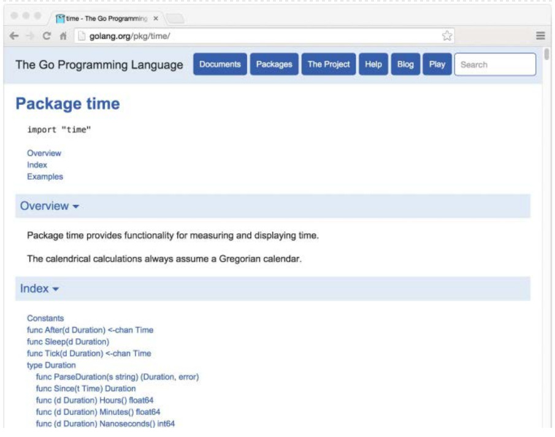
Para hacer frente a estas necesidades, la herramienta go build maneja de un paquete de forma especial si su ruta de importacion contiene un segmento de ruta denominado interno. Dichos paquetes se denominan paquetes internos. Un paquete interno puede ser importadas por otro paquete que esta dentro del arbol raiz en el paquete del directorio internal. Por ejemplo, los paquetes a continuacion, net/http/internal/chunked pueden ser importados de net/http/httputil o net/http, pero no de net/url . Sin embargo, net/url puede importar net/http/httputil.
La herramienta go list reporta informacion sobre los paquetes disponibles. En su forma mas simple, go list comprueba si un paquete esta presente en el espacio de trabajo e imprime su ruta de importacion si es asi:
$ go list github.com/go-sql-driver/mysql
github.com/go-sql-driver/mysql
Un argumento para go list puede contener el comodin ..., que coincide con cualquier subcadena de ruta de importacion de un paquete. Podemos usarlo para enumerar todos los paquetes dentro de un espacio de trabajo Go:
$ go list ...
archive/tar
archive/zip
bufio
bytes
cmd/addr2line
cmd/api
...many more...
O dentro de un subarbol especifico:
$ go list gopl.io/ch3/...
gopl.io/ch3/basename1
gopl.io/ch3/basename2
gopl.io/ch3/comma
gopl.io/ch3/mandelbrot
gopl.io/ch3/netflag
gopl.io/ch3/printints
gopl.io/ch3/surface
O relacionados con un tema particular:
$ go list ...xml...
encoding/xml
gopl.io/ch7/xmlselect
El comando go list obtiene los metadatos completos de cada paquete, no solo la ruta de importacion, y pone esta informacion a disposicion de los usuarios u otras herramientas en una variedad de formatos. La bandera -json proboca que go list imprima el registro completo de cada paquete en formato JSON:
La bandera -f permite a los usuarios personalizar el formato de salida utilizando el lenguaje de la plantilla del paquete de text/template (§4.6). Este comando imprime las dependencias transitivas del paquete strconv, separados por espacios:
$ go list -f '{{join .Deps " "}}' strconv
errors math runtime unicode/utf8 unsafe
y el comando muestra las importaciones directas de cada paquete en el subarbol compress de la biblioteca estandar:
El comando go list es util tanto para consultas interactivas puntuales y para scripts de construccion y automatizacion de pruebas. Lo volveremos a utilizar en la Seccion 11.2.4. Para obtener mas informacion, incluyendo el conjunto de campos disponibles y su significado, ver la salida de la go help list.
En este capitulo, hemos explicado todos los subcomandos importantes de la herramientas go excepto uno. En el siguiente capitulo, veremos como se utiliza el comando go test para probar programas Go.
Ejercicio 10.4: Construir una herramienta que reporte el conjunto de todos los paquetes en el espacio de trabajo que dependen de forma transitiva de los paquetes especificados por los argumentos. Sugerencia: tendra que ejecutar go list dos veces, una para los paquetes iniciales y una vez para todos los paquetes. Es posible que desee analizar su salida JSON utilizando el paquete encoding/json (§4.5).
Pruebas
Maurice Wilkes, el desarrollador de EDSAC, el primer computador con programa almacenado, tevo una vision sorprendente mientras subia las escaleras de su laboratorio en 1949. En Memoirs of a Computer Pioneer, recordo, La realizacion se me vino con toda la fuerza que una buena Parte del resto de mi vida iba a ser gastada en encontrar errores en mis propios programas. Seguramente cada programador de una computadora con programas almacenados desde entonces puede simpatizar con Wilkes, aunque tal vez no sin algo de desconcierto en su ingenuidad sobre las dificultades de la construccion de software.
Los programas de hoy son mucho mas grandes y complejos que en el tiempo de Wilkes, por supuesto, y se ha dedicado mucho esfuerzo a tecnicas para hacer que esta complejidad sea manejable. Dos tecnicas en particular destacan por su eficacia. La primera es la revision por pares de los programas antes de que se desplieguen. El segundo, el tema de este capitulo, son las pruebas.
Las pruebas, que implican implicitamente pruebas automatizadas, es la practica de escribir pequeños programas que comprobar que el codigo bajo prueba (el codigo de produccion) se comporta como se esperaba para ciertas entradas, que suelen ser cuidadosamente elegidas para ejercer ciertas funciones o al azar para asegurar amplia cobertura.
El campo de las pruebas de software es enorme. La tarea del testeo ocupa a todos los programadores en parte del tiempo y algunos programadores todo el tiempo. La literatura sobre las pruebas incluye miles de libros impresos y millones de palabras publicadas en el blogs. En todos los lenguajes de programacion, hay docenas de paquetes de software destinados a la construccion de pruebas, algunos con una gran cantidad de teoria, y el campo parece atraer a mas de unos pocos profetas con seguimientos de culto. Es casi suficiente para convencer a los programadores de que para escribir pruebas efectivas deben adquirir un nuevo conjunto de habilidades.
La aproximacion de Go a las pruebas puede parecer de baja tecnologia en comparacion. Se basa en un solo comando, go test, y un conjunto de convenciones para escribir funciones de prueba que go test puede ejecutar. El mecanismo relativamente ligero es efectivo para pruebas puras, y se extiende naturalmente a puntos de referencia y ejemplos sistematicos para la documentacion.
En la practica, escribir codigo de prueba no es muy diferente de escribir el programa original en si. Escribimos funciones cortas que se centran en una parte de la tarea. Debemos tener cuidado con las condiciones de los limites, pensar en las estructuras de datos y razonar sobre los resultados que un calculo debe producir a partir de entradas adecuadas. Pero este es el mismo proceso que escribir codigo Go ordinario; No requiere nuevas anotaciones, convenciones o herramientas.
La Herramienta go test
El subcomando go test es un controlador de pruebas para paquetes Go que se organizan de acuerdo con ciertas convenciones. En un directorio de paquetes, los archivos cuyos nombres terminan con _test.go no son parte del paquete normalmente construido por go build sino que son una parte de el cuando se construyen mediante go test.
Dentro de archivos *_test.go, tres tipos de funciones se tratan de forma especial: pruebas, benchmarks, y ejemplos. Una funcion de prueba, es una funcion cuyo nombre comienza con Test, ejerce cierta logica del programa para el comportamiento correcto; go test llama a la funcion de prueba e informa del resultado, que es PASS o FAIL. Una funcion de benchmark tiene un nombre que comienza con Benchmark y mide el rendimiento de una operacion; go test informes el tiempo de ejecucion medio de la operacion. Y una funcion de ejemplo, cuyo nombre empieza por Example, proporciona documentacion revisada por la maquina. Vamos a cubrir las pruebas en detalle en la Seccion 11.2, los benchmarks en la Seccion 11.4, y los ejemplos en la Seccion 11.6.
La heramienta go test examina los archivos *_test.go para estas funciones especiales, genera un paquete main temporal que llama a todas de la manera correcta, compila y ejecuta, informa de los resultados, y luego se limpia.
Funciones Test
Cada archivo de prueba debe importar el paquete testing. Las funciones de prueba tienen la siguiente firma:
funcTestNormbre(t*testing.T){// ...}
Los nombres de las funciones de prueba deben comenzar con Test; el sufijo opcional Nombre debe comenzar con una letra mayuscula:
El parametro t proporciona metodos para informar fallos de las pruebas y registrar informacion adicional. Vamos a definir un paquete de ejemplo gopl.io/ch11/word1, que contiene una sola funcion IsPalindrome que informa de si una cadena se lee igual hacia adelante y hacia atras. (Esta implementacion prueba cada byte dos veces si la cadena es un palindromo, volveremos a esto en breve).
// El paquete word proporciona utilidades para juegos de palabras.packageword// IsPalindrome informa si s se lee igual hacia adelante y hacia atras.// (Nuestro primer intento.)funcIsPalindrome(sstring)bool{fori:=ranges{ifs[i]!=s[len(s)-1-i]{returnfalse}}returntrue}
En el mismo directorio, el archive word_test.go contiene dos funciones de prueba con nombre TestPalindrome y TestNonPalindrome. Cada uno comprueba que IsPalindrome da la respuesta correcta para una entrada unica e informa fallos utilizando t.Error:
Una comando go test (o go build) sin argumentos de paquete opera sobre el paquete en el directorio actual. Podemos construir y ejecutar las pruebas con el siguiente comando.
$ cd$GOPATH/src/gopl.io/ch11/word1
$ go test
ok gopl.io/ch11/word1 0.008s
Satisfecho, enviamos el programa, pero no antes de que los invitados de la fiesta envien los informes de error iniciales. Un usuario frances llamado Noelle Eva Elleon se queja de que IsPalindrome no reconoce été. Otro, de Centroamerica, se siente decepcionado al rechazar A man, a plan, a canal: Panama. Estos informes de errores especificos y pequeños naturalmente se prestan a nuevos casos de prueba.
funcTestFrenchPalindrome(t*testing.T){if!IsPalindrome("été"){t.Error(`IsPalindrome("été") = false`)}}funcTestCanalPalindrome(t*testing.T){input:="A man, a plan, a canal: Panama"if!IsPalindrome(input){t.Errorf(`IsPalindrome(%q) = false`,input)}}
Para evitar la langa cadena de entrada dos veces, utilizamos Errorf, que proporciona formato, como Printf.
Cuando se han añadido las dos nuevas pruebas, el comando go test falla con mensajes informativos de error.
$ go test
--- FAIL: TestFrenchPalindrome (0.00s)
word_test.go:28: IsPalindrome("été")=false
--- FAIL: TestCanalPalindrome (0.00s)
word_test.go:35: IsPalindrome("A man, a plan, a canal: Panama")=false
FAIL
FAIL gopl.io/ch11/word1 0.014s
Es recomendable escribir la prueba primero y observar que desencadena el mismo fallo descrito por el informe de error del usuario. Solo entonces podremos estar seguros de que cualquier solucion que hagamos concierne al problema correcto.
Como beneficio adicional, ejecutar go test generalmente es mas rapido que manualmente por los pasos descritos en el informe de errores, lo que nos permite iterar mas rapidamente. Si la suite de pruebas contiene muchas pruebas lentas, podemos hacer un progreso aun mas rapido si somos selectivos sobre cuales corremos.
La bandera -v imprime el nombre y el tiempo de ejecucion de cada prueba en el paquete:
$ go test -v
=== RUN TestPalindrome
--- PASS: TestPalindrome (0.00s)=== RUN TestNonPalindrome
--- PASS: TestNonPalindrome (0.00s)=== RUN TestFrenchPalindrome
--- FAIL: TestFrenchPalindrome (0.00s)
word_test.go:28: IsPalindrome("ete")=false=== RUN TestCanalPalindrome
--- FAIL: TestCanalPalindrome (0.00s)
word_test.go:35: IsPalindrome("A man, a plan, a canal: Panama")=false
FAIL
exit status 1
FAIL gopl.io/ch11/word1 0.017s
y la bandera -run, cuyo argumento es una expresion regular, hace que go test ejecute solo aquellas pruebas cuyo nombre de funcion coincide con el patron:
$ go test -v -run="French|Canal"=== RUN TestFrenchPalindrome
--- FAIL: TestFrenchPalindrome (0.00s)
word_test.go:28: IsPalindrome("ete")=false=== RUN TestCanalPalindrome
--- FAIL: TestCanalPalindrome (0.00s)
word_test.go:35: IsPalindrome("A man, a plan, a canal: Panama")=false
FAIL
exit status 1
FAIL gopl.io/ch11/word1 0.014s
Por supuesto, una vez que hemos conseguido que las pruebas seleccionadas pasen, debemos invocar a go test sin banderas para ejecutar el conjunto de pruebas entero una ultima vez antes de que confirme el cambio.
Ahora nuestra tarea es arreglar los errores. Una rapida investigacion revela la causa del primer fallo en IsPalindrome esta en utilizar secuencias de bytes, no secuencias de runas, por lo que los caracteres no ASCII, como la é en "été" lo confunden. El segundo error surge de no ignorar entre mayusculas y minusculas, los espacios y signos de puntuacion.
// El paquete word proporciona utilidades para juegos de palabras.packagewordimport"unicode"// IsPalindrome informa si s se lee igual hacia adelante y hacia atras.// Se ignora entre mayusculas y minusculas, al igual que las no-letras.funcIsPalindrome(sstring)bool{varletters[]runefor_,r:=ranges{ifunicode.IsLetter(r){letters=append(letters,unicode.ToLower(r))}}fori:=rangeletters{ifletters[i]!=letters[len(letters)-1-i]{returnfalse}}returntrue}
Tambien escribimos un conjunto mas completo de casos de prueba que combina todas las anteriores y una nueva serie en una tabla.
funcTestIsPalindrome(t*testing.T){vartests=[]struct{inputstringwantbool}{{"",true},{"a",true},{"aa",true},{"ab",false},{"kayak",true},{"detartrated",true},{"A man, a plan, a canal: Panama",true},{"Evil I did dwell; lewd did I live.",true},{"Able was I ere I saw Elba",true},{"ete",true},{"Et se resservir, ivresse reste.",true},{"palindrome",false},// no-palindromo{"desserts",false},// semi-palindromo}for_,test:=rangetests{ifgot:=IsPalindrome(test.input);got!=test.want{t.Errorf("IsPalindrome(%q) = %v",test.input,got)}}}
Nuestras nuevas pruebas pasan:
$ go test gopl.io/ch11/word2
ok gopl.io/ch11/word2 0.015s
Este estilo de la prueba basado en tablas es muy comun en Go. Es facil agregar nuevas entradas de tabla segun sea necesario, y como la logica de asercion no se duplica, podemos invertir mas esfuerzo en producir un buen mensaje de error.
La salida de una prueba erronea no incluye la traza de la pila entera en el momento de la llamada a t.Errorf. t.Errorf tampoco provoca un panico o detiene la ejecucion de la prueba, a diferencia de muchos errores de asercion en frameworks de prueba para otros lenguajes. Las pruebas son independientes entre si. Si una entrada temprana en la tabla hace que la prueba falle, las entradas de tabla posteriores se aun se comprobaran, y asi podemos aprender sobre multiples fallas durante una sola ejecucion.
Cuando realmente debemos detener una funcion de prueba, tal vez porque a algun codigo de inicializacion fallo o para prevenir un fallo ya reportado que proboque una cascada confusa de otros, utilizamos t.Fatal o t.Fatalf. Estos deben ser llamados desde la misma gorutina como la funcion Test, no de la otra creada durante la prueba.
Los mensajes de fallo generalmente de la forma "f(x) = y, want z", donde f(x) explica el funcionamiento intentado y su entrada, y es el resultado real, y z el resultado esperado. Cuando es conveniente, como en nuestro ejemplo palindromo, se utiliza la sintaxis actual para la parte f(x). La visualizacion de x es particularmente importante en una prueba basada en tablas, ya que una afirmacion dada se ejecuta muchas veces con diferentes valores. Evite la informacion repetitiva y redundante. Cuando se prueba una funcion booleana como IsPalindrome, omita la parte z puesto que no agrega ninguna informacion. Si x, y o z es largo, en su lugar imprima un resumen relevante de las partes. El autor de una prueba debe esforzarse por ayudar al programador que debe diagnosticar un fallo de la prueba.
Ejercicio 11.1: escribir pruebas para el programa charcount en la Seccion 4.3.
Ejercicio 11.2: Escribir una serie de pruebas para IntSet (§6.5) que comprueba que su comportamiento despues de cada operacion es equivalente a un conjunto basado en mapas incorporados. Guarde su implementacion para el benchmarking del Ejercicio 11.7.
Pruebas Aleatorias
Las pruebas basadas en tablas son convenientes para comprobar que una funcion funciona en entradas cuidadosamente seleccionadas para ejercer casos interesantes en la logica. Otro enfoque, pruebas al azar, explora una gama mas amplia de entradas mediante la construccion de entradas al azar.
¿Como sabemos que resultado esperar de nuestra funcion, dada una entrada aleatoria? Hay dos estrategias. La primera es escribir una implementacion alternativa de la funcion que utiliza un algoritmo menos eficiente pero mas sencillo y claro, y comprobar que ambas implementaciones dan el mismo resultado. La segunda es crear valores de entrada de acuerdo con un patron para que sepamos que salida esperamos.
El ejemplo siguiente utiliza el segundo enfoque: la funcion randomPalindrome genera palabras que se sabe que son palindromos por construccion.
import"math/rand"// randomPalindrome devuelve un palindromo cuya longitud y contenido// se derivan del generador de numeros pseudo aleatorios rng.funcrandomPalindrome(rng*rand.Rand)string{n:=rng.Intn(25)// random length up to 24runes:=make([]rune,n)fori:=0;i<(n+1)/2;i++{r:=rune(rng.Intn(0x1000))// random rune up to '\u0999'runes[i]=rrunes[n-1-i]=r}returnstring(runes)}funcTestRandomPalindromes(t*testing.T){// Initialize a pseudo-random number generator.seed:=time.Now().UTC().UnixNano()t.Logf("Random seed: %d",seed)rng:=rand.New(rand.NewSource(seed))fori:=0;i<1000;i++{p:=randomPalindrome(rng)if!IsPalindrome(p){t.Errorf("IsPalindrome(%q) = false",p)}}}
Dado que las pruebas aleatorizadas son no deterministas, es fundamental que el registro de la prueba de fallo registre informacion suficiente para reproducir el fallo. En nuestro ejemplo, la entrada p para IsPalindrome nos dice todo lo que necesitamos saber, pero para las funciones que aceptan entradas mas complejas, puede ser mas sencillo registrar la semilla del generador de numeros pseudo-aleatorios (como lo hacemos mas arriba) que volcar toda la estructura de datos de entrada. Armado con ese valor de semilla, podemos modificar facilmente la prueba para reproducir el fracaso de forma determinista.
Utilizando la hora actual como una fuente de aleatoriedad, la prueba explorara nuevas entradas cada vez que se ejecute, durante todo el curso de su vida util. Esto es especialmente valioso si su proyecto utiliza un sistema automatizado para ejecutar todas sus pruebas periodicamente.
Ejercicio 11.3: TestRandomPalindromes solo prueba palindromos. Escriba una prueba aleatoria que genere y verifique no-palindromos.
Ejercicio 11.4: Modificar randomPalindrome para probar el manejo de puntuacion y espacios de IsPalindrome.
Probar un Comando
La heramienta go test es util para probar paquetes de librerias, pero con un poco de esfuerzo lo podemos usar para probar tambien los comandos. Un paquete llamado main normalmente produce un programa ejecutable, pero tambien puede ser importado como una libreria.
Vamos a escribir una prueba para el programa echo de la Seccion 2.3.2. Hemos dividido el programa en dos funciones: echo hace el trabajo real, mientras que main analiza y lee los valores bandera y los errores devueltos por echo.
// Echo imprime sus argumentos de linea de comandos.packagemainimport("flag""fmt""io""os""strings")var(n=flag.Bool("n",false,"omit trailing newline")s=flag.String("s"," ","separator"))varoutio.Writer=os.Stdout// modificado durante las pruebasfuncmain(){flag.Parse()iferr:=echo(!*n,*s,flag.Args());err!=nil{fmt.Fprintf(os.Stderr,"echo: %v\n",err)os.Exit(1)}}funcecho(newlinebool,sepstring,args[]string)error{fmt.Fprint(out,strings.Join(args,sep))ifnewline{fmt.Fprintln(out)}returnnil}
A partir de la prueba, llamaremos a echo con una variedad de argumentos y configuraones de parametros bandera y comprobaremos que imprime la salida correcta en cada caso, por lo que hemos añadido parametros a echo para reducir su dependencia de las variables globales. Dicho esto, tambien hemos introducido otra variable global, out, un io.Writer al que se escribira el resultado. Al tener echo escritura a traves de esta variable, no directamente a os.Stdout, las pruebas pueden sustituir una implementacion Writer diferente que registra lo que se escrito para una inspeccion posterior. Aqui esta la prueba, en archivo echo_test.go:
Observe que el codigo de prueba esta en el mismo paquete que el codigo de produccion. Aunque el nombre del paquete es main y define una funcion main, durante la prueba, este paquete actua como una libreria que expone la funcion TestEcho al controlador de pruebas; su funcion main es ignorada.
Al organizar la prueba como una tabla, podemos agregar facilmente nuevos casos de prueba. Veamos que sucede cuando la prueba falla, agregando esta linea a la tabla:
{true,",",[]string{"a","b","c"},"a b c\n"},// NOTA: expectativa equivocada!
go test imprime
$ go test gopl.io/ch11/echo
--- FAIL: TestEcho (0.00s)
echo_test.go:31: echo(true, ",", ["a""b""c"])="a,b,c", want "a b c\n"
FAIL
FAIL gopl.io/ch11/echo 0.006s
El mensaje de error describe el intento de operacion (utilizando la sintaxis similar a Go), el comportamiento real y el comportamiento esperado, en ese orden. Con un mensaje de error informativo como este, es posible que tenga una idea bastante buena sobre la causa raiz antes incluso de haber localizado el codigo fuente de la prueba.
Es importante que el codigo esta probando no llame a log.Fatal o os.Exit, ya que estas detendran el proceso en seco; llamar a estas funciones debe ser considerado como derecho exclusivo de main. Si algo totalmente inesperado ocurre y una funcion entra en panico, el controlador de prueba se recuperara, aunque la prueba, por supuesto, se considerara un fallo. Errores previsibles, como los que resultan de mala entrada del usuario, archivos que faltan, o una configuracion inadecuada deben ser reportados mediante la devolucion de un valor error no-nil. Afortunadamente (aunque desafortunado como una ilustracion), nuestro ejemplo echo es tan simple que nunca volvera un error no-nil.
Prueba de Caja Blanca
Una forma de clasificar las pruebas es por el nivel de conocimiento que requieren del funcionamiento interno del paquete bajo prueba. Una prueba de caja negla no asume nada distinto sobre el paquete de lo expuesto por su API y especificado por su documentacion; Los internos del paquete son opacos. En contraste, una prueba de caja blanca tiene un acceso privilegiado a las funciones internas y estructuras de datos del paquete y puede hacer observaciones y cambios que un cliente comun no puede. Por ejemplo, una prueba de cuadro blanco puede comprobar que las invariantes de los tipos de datos del paquete se mantienen despues de cada operacion. (Er nombre caja blanca es tradicional, pero seria mas exacto caja transparente).
Los dos enfoques son complementarios. Las pruebas de caja negra suelen ser mas robustas, requiriendo menos actualizaciones a medida que el software evoluciona. Tambien ayudan al autor de la prueba a empatizar con el cliente del paquete y pueden revelar defectos en el diseño del API. Por el contrario, las pruebas de caja blanca pueden proporcionar una cobertura mas detallada de las partes mas dificiles de la implementacion.
Ya hemos visto ejemplos de ambos tipos. TestIsPalindrome llama solo a la funcion exportada IsPalindrome y es por lo tanto una prueba de caja negra. TestEcho llama a la funcion echo y actualiza la variable global out, los cuales se dejadan sin exportar, por lo que es una prueba de caja blanca.
Durante el desarrollo de TestEcho, modificamos la funcion echo para utilizar la variable de nivel de paquete out cuando se escribe su salida, por lo que la prueba podria sustituir a la salida estandar con una implementacion alternativa que registra los datos para una inspeccion posterior. Utilizando la misma tecnica, podemos reemplazar otras partes del codigo de produccion con implementaciones falsas faciles de probar. La ventaja de las implementaciones falsas es que pueden ser mas sencillas de configurar, mas predecibles, mas fiables y mas faciles de observar. Tambien pueden evitar efectos secundarios indeseables, como actualizar una base de datos de produccion o cargar una tarjeta de credito.
El siguiente codigo muestra la logica de comprobacion de cuotas en un servicio web que proporciona almacenamiento en red a los usuarios. Cuando los usuarios superan el 90% de su cuota, el sistema les envia un correo electronico de advertencia.
packagestorageimport("fmt""log""net/smtp")varusage=make(map[string]int64)funcbytesInUse(usernamestring)int64{returnusage[username]}// configuracion del remitente del email.// NOTA: nunca ponga contraseñas en el codigo fuente!constsender="notifications@example.com"constpassword="correcthorsebatterystaple"consthostname="smtp.example.com"consttemplate=`Warning: you are using %d bytes of storage,%d%% of your quota.`funcCheckQuota(usernamestring){used:=bytesInUse(username)constquota=1000000000// 1GBpercent:=100*used/quotaifpercent<90{return// OK}msg:=fmt.Sprintf(template,used,percent)auth:=smtp.PlainAuth("",sender,password,hostname)err:=smtp.SendMail(hostname+":587",auth,sender,[]string{username},[]byte(msg))iferr!=nil{log.Printf("smtp.SendMail(%s) failed: %s",username,err)}}
Nos gustaria probarlo, pero no queremos que la prueba envie correo electronico real. Por lo tanto, movemos la logica de correo electronico a su propia funcion y almacenamos esa funcion en una variable de nivel de paquete sin exportar, notifyUser.
Ahora podemos escribir una prueba que sustituye un simple mecanismo de notificacion falsa en lugar de enviar correo electronico real. Este registra el usuario notificado y el contenido del mensaje.
packagestorageimport("strings""testing")funcTestCheckQuotaNotifiesUser(t*testing.T){varnotifiedUser,notifiedMsgstringnotifyUser=func(user,msgstring){notifiedUser,notifiedMsg=user,msg}// ...simular una condicion que utiliza 980MB...constuser="joe@example.org"CheckQuota(user)ifnotifiedUser==""&¬ifiedMsg==""{t.Fatalf("notifyUser not called")}ifnotifiedUser!=user{t.Errorf("wrong user (%s) notified, want %s",notifiedUser,user)}constwantSubstring="98% of your quota"if!strings.Contains(notifiedMsg,wantSubstring){t.Errorf("unexpected notification message <<%s>>, "+"want substring %q",notifiedMsg,wantSubstring)}}
Hay un problema: despues de que esta funcion de prueba ha regresado, CheckQuota ya no funciona como deberia, ya que todavia esta usando la prueba de falsa implementacion de notifyUsers. Debemos modificar la prueba para restaurar el valor anterior para que las pruebas posteriores no observen ningun efecto, y debemos hacerlo en todas las rutas de ejecucion, incluyendo fallas de prueba y panicos. Naturalmente, esto sugiere un defer.
funcTestCheckQuotaNotifiesUser(t*testing.T){// Guardar y restaurar notifiUser originalsaved:=notifyUserdeferfunc(){notifyUser=saved}()// Instala la prueba falsa notifyUser.varnotifiedUser,notifiedMsgstringnotifyUser=func(user,msgstring){notifiedUser,notifiedMsg=user,msg}// ...resto de la prueba...}
Este patron se puede utilizar para guardar y restaurar temporalmente todo tipo de variables globales, incluidas banderas de linea de comandos, opciones de depuracion y parametros de rendimiento; para instalar y eliminar los ganchos que hacen que el codigo de produccion llame al codigo de prueba cuando sucede algo interesante; y para codificar el codigo de produccion en estados raros pero importantes, como tiempos muertos, errores e incluso intercalaciones especificas de actividades concurrentes.
El uso de variables globales de esta manera es seguro solo porque go test normalmente no ejecuta pruebas multiples de forma concurrente.
Paquetes de Pruebas Externos
Considere los paquetes de net/url, que proporciona un analizador de URL, y net/http, que proporciona un servidor web y una libreria de cliente HTTP. Como es de esperar, el nivel superior de net/http depende del nivel inferior net/url. Sin embargo, una de las pruebas en net/url es un ejemplo que demuestra la interaccion entre las URL y la libreria cliente HTTP. En otras palabras, una prueba al paquete de nivel inferior importa el paquete de nivel superior.
Figura 11.1. Una prueba de net/url depende de net/http.
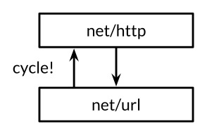
Declarar esta funcion de prueba en el paquete net/url crearia un ciclo en el grafico de importacion paquetes, tal como se representa por las flecha hacia arriba en la Figura 11.1, pero como se explico en la Seccion 10.1, la especificacion Go prohibe los ciclos de importacion.
Resolvemos el problema declarando la funcion de prueba en un paquete de prueba externo, es decir, en un archivo en el directorio net/url cuya declaracion del paquete lee el paquete url_test. El sufijo adicional _test es una señal para go test que debe construir un paquete adicional que contiene solo estos archivos y ejecutar sus pruebas. Puede ser util pensar en este paquete de prueba externo como si tuviera la ruta de importacion net/url_test, pero no se pueden importar con este nombre ni con ningun otro.
Debido a que las pruebas externas viven en un paquete separado, pueden importar paquetes auxiliares que tambien dependen del paquete que se esta probando; Una prueba en el paquete no puede hacer esto. En terminos de las capas de diseño, el paquete de pruebas externo es logicamente mas alto que los dos paquetes de los que depende, como se muestra en la Figura 11.2.
Figura 11.2. Los paquetes de prueba externos rompen los ciclos de dependencia.
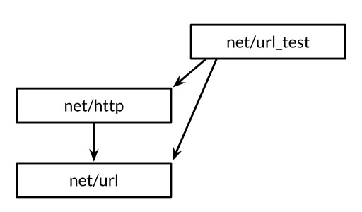
Al evitar ciclos de importacion, los paquetes de prueba externos permiter que las pruebas, especialmente las pruebas de integracion (que ponen a prueba la interaccion de varios componentes), importen otros paquetes libremente, exactamente como haria una aplicacion.
Podemos utilizar la herramienta go list para resumir que archivos fuente en un directorio Go son el codigo de produccion, pruebas en el paquete, y pruebas externas. Usaremos el paquete fmt como ejemplo. GoFiles es la lista de los archivos que contienen el codigo de produccion; estos son los archivos que go build incluira en su aplicacion:
$ go list -f={{.GoFiles}} fmt
[doc.go format.go print.go scan.go]
TestGoFiles es la lista de archivos que tambien pertenecen al paquete fmt, pero estos archivos, cuyos nombres terminan en _test.go, se incluye solo en la construccion de las pruebas:
$ go list -f={{.TestGoFiles}} fmt
[export_test.go]
Las pruebas del paquete por lo general residen en estos archivos, aunque inusualmente fmt no tiene ninguno; vamos a explicar el proposito de export_test.go en un momento.
XTestGoFiles es la lista de los archivos que constituyen el paquete de prueba externo, fmt_test, por lo que estos archivos debe importar el paquete fmt con el fin de usarlo. Una vez mas, se incluyen solo durante las pruebas:
$ go list -f={{.XTestGoFiles}} fmt
[fmt_test.go scan_test.go stringer_test.go]
A veces un paquete de prueba externo puede necesitar acceso privilegiado a los internos del paquete bajo prueba, si por ejemplo una prueba de caja blanca debe vivir en un paquete separado para evitar un ciclo de importacion. En estos casos, se utiliza un truco: agregamos declaraciones a un archivo _test.go del paquete para exponer los componentes internos necesarios para la prueba externa. Este archivo ofrece asi una puerta trasera para la prueba del paquete. Si el archivo origen existe solo para este proposito y no contiene pruebas en si mismo, se le nombra a menudo export_test.go.
Por ejemplo, la implementacion del paquete fmt necesita la funcionalidad de unicode.IsSpace como parte de fmt.Scanf. Para evitar la creacion de una dependencia indeseable, fmt no importa el paquete unicode y sus grandes tablas de datos; en cambio, contiene una implementacion mas sencilla, a la que llama isSpace.
Para asegurar que los comportamientos de fmt.isSpace y unicode.IsSpace no se separan, fmt prudentemente contiene una prueba. Se trata de una prueba externa, y por lo tanto no puede acceder a isSpace directamente, por lo que fmt abre una puerta trasera declarando una variable exportada que contiene la funcion interna isSpace. Esta es la totalidad del archivo export_test.go del paquete fmt.
packagefmtvarIsSpace=isSpace
Este archivo de prueba no define pruebas; simplemente declara el simbolo exportado fmt.IsSpace para el uso de la prueba externa. Este truco tambien se puede utilizar cada vez que una prueba externa necesita utilizar algunas de las tecnicas de prueba de caja blanca.
Escribir Pruebas Efectivas
Muchos recien llegados a Go se sorprenden por el minimalismo del marco de pruebas de Go. los frameworks otros lenguajes proporcionan mecanismos para la identificacion de las funciones de prueba (a menudo utilizan la reflexion o metadatos), ganchos para realizar operaciones de configuracion y desmontaje antes y despues de ejecucion de pruebas, y l librerias de funciones de utilidad para afirmar predicados comunes, comparar valores, formatear mensajes de error, y abortar una prueba fallida (a menudo utilizando excepciones). Aunque estos mecanismos pueden hacer las pruebas muy concisas, las pruebas resultantes a menudo parecen estar escritas en un lenguaje extranjero. Ademas, aunque pueden reportar PASS o FAIL correctamente, su forma puede ser hostil al infortunado mantenedor, con mensajes de error cripticos como "assert: 0 == 1" o pagina tras pagina de trazas de la pila.
La actitud de Go a la pruebas esta en contraste. Se espera que los autores de las pruebas hagan la mayor parte de este trabajo ellos mismos, definiendo funciones para evitar la repeticion, tal como lo harian para los programas ordinarios. El proceso de prueba no es uno relleno de formatos; una prueba tiene una interfaz de usuario tambien, aunque uno cuyos unicos usuarios son tambien sus mantenedores. Una buena prueba no explota al fracasar, en su lugar imprime una descripcion clara y sucinta del sintoma del problema, y tal vez otros hechos relevantes sobre el contexto. Idealmente, el mantenedor no deberia necesitar leer el codigo fuente para descifrar un fallo de prueba. Una buena prueba no debe abandonar despues de un fallo, debe intentar reportar varios errores en una sola ejecucion, ya que el patron de fallas puede ser revelador.
La funcion de asercion siguiente compara dos valores, genera un mensaje de error generico y detiene el programa. Es facil de usar y es correcta, pero cuando falla, el mensaje de error es casi inutil. No resuelve el dificil problema de proporcionar una buena interfaz de usuario.
import("fmt""strings""testing")// Una mala funcion de asercion.funcassertEqual(x,yint){ifx!=y{panic(fmt.Sprintf("%d != %d",x,y))}}funcTestSplit(t*testing.T){words:=strings.Split("a:b:c",":")assertEqual(len(words),3)// ...}
En este sentido, las funciones de asercion sufren de abstraccion prematura: al tratar el fracaso de esta prueba en particular como una mera diferencia de dos numeros enteros, perdemos la oportunidad de proporcionar un contexto significativo. Podemos proporcionar un mejor mensaje a partir de los detalles concretos, como en el ejemplo siguiente. Solo una vez que surgen patrones repetitivos en una suite de pruebas dada es el momento de introducir abstracciones.
funcTestSplit(t*testing.T){s,sep:="a:b:c",":"words:=strings.Split(s,sep)ifgot,want:=len(words),3;got!=want{t.Errorf("Split(%q, %q) returned %d words, want %d",s,sep,got,want)}// ...}
Ahora la prueba reporta la funcion que se llamo, sus entradas y el significado del resultado; Identifica explicitamente el valor actual y la expectativa; Y continua ejecutandose incluso si esta afirmacion falla. Una vez que hemos escrito una prueba de este tipo, el siguiente paso natural a menudo no es definir una funcion para reemplazar toda le sentencia if, sino ejecutar la prueba en un bucle en el que varien s, sep, y want, como en la prueba basada en tablas de IsPalindrome.
El ejemplo anterior no necesitaba funciones de utilidad, pero por supuesto eso no deberia impedirnos introducir funciones cuando ayudan a simplificar el codigo. (Veremos una funcion de utilidad, reflect.DeepEqual, en la Seccion 13.3.) La clave para una buena prueba es empezar por la aplicacion de la conducta concreta que desea y solo entonces utilizar las funciones para simplificar el codigo y eliminar la repeticion. Los mejores resultados rara vez se obtienen comenzando con una libreria de funciones de pruebas abstractas y genericas.
Ejercicio 11.5: Extender TestSplit para utilizar una tabla de entradas y salidas esperadas.
Evitar Pruebas Fragiles
Una aplicacion que falla a menudo cuando se encuentra con entradas nuevas pero validas, se denomina buggy; una prueba que falla falsamente cuando se hace un cambio de sonido al programa se denomina fragil. Asi como un programa buggy frustra a sus usuarios, una prueba fragil exaspera a sus mantenedores. Las pruebas mas fragiles, que fallan por casi cualquier cambio en el codigo de produccion, buena o mala, a veces se denominan pruebas de detector de cambio o de status quo, y el tiempo dedicado a tratar con ellos puede consumir rapidamente cualquier beneficio que una vez parecian ofrecer.
Cuando una funcion bajo prueba produce una salida compleja, como una cadena larga, una estructura de datos elaborada, o un archivo, es tentador comprobar que la salida es exactamente igual a algun valor dorado que se esperaba cuando se escribio la prueba. Pero a medida que el programa evoluciona, partes de la produccion probablemente cambian, probablemente de buenas forma, pero cambien sin embargo. Y no es solo la salida; Las funciones con entradas complejas suelen romperse porque la entrada utilizada en una prueba ya no es valida.
La manera mas facil de evitar las pruebas fragiles es comprobar solo las propiedades que le interesan. Pruebe las interfaces mas sencillas y estables de su programa con preferencia a sus funciones internas. Sea selectivo en sus afirmaciones. Por ejemplo, no compruebe si hay coincidencias exactas de cadenas, pero busque subsecciones relevantes que no cambien a medida que el programa evoluciona. A menudo vale la pena escribir una funcion sustancial para destilar una salida compleja hasta su esencia para que las afirmaciones sean confiables. A pesar de que puede parecer una gran cantidad de esfuerzo inicial, puede pagarse por si mismo rapidamente en el tiempo que de otro modo se gastaria reparando falsas pruebas de error.
Cobertura
Por su naturaleza, las pruebas nunca son completas. Como lo dijo el influyente cientifico informatico Edsger Dijkstra: Las pruebas muestran lo presente, no la ausencia de errores. Ninguna cantidad de pruebas puede probar que un paquete esta libre de errores. En el mejor de los casos, aumentan nuestra confianza en que el paquete funciona bien en una amplia gama de escenarios importantes.
El grado en que una suite de pruebas prueba un paquete que se denomina cobertura de la prueba. La cobertura no se puede cuantificar directamente–la dinamica de todos los programas, excepto los mas triviales, esta mas alla de la medicion exacta–pero hay heuristicas que pueden ayudarnos a dirigir nuestros esfuerzos de pruebas a donde es mas probable que sean utiles.
La cobertura de sentencias es la mas simple y mas utilizada de estas heuristicas. La cobertura de sentencias de una suite de pruebas es la fraccion de sentencias de origen que se ejecutan al menos una vez durante la prueba. En esta seccion, vamos a utilizar la herramienta cover de Go, que esta integrada en go test, para medir la cobertura de sentencias y ayudar a identificar lagunas evidentes en las pruebas.
El codigo siguiente es una prueba basada en tablas para el evaluador de expresiones que construimos en el Capitulo 7:
funcTestCoverage(t*testing.T){vartests=[]struct{inputstringenvEnvwantstring// error esperado de Parse/Check o resultado de Eval}{{"x % 2",nil,"unexpected '%'"},{"!true",nil,"unexpected '!'"},{"log(10)",nil,`unknown function "log"`},{"sqrt(1, 2)",nil,"call to sqrt has 2 args, want 1"},{"sqrt(A / pi)",Env{"A":87616,"pi":math.Pi},"167"},{"pow(x, 3) + pow(y, 3)",Env{"x":9,"y":10},"1729"},{"5 / 9 * (F - 32)",Env{"F":-40},"-40"},}for_,test:=rangetests{expr,err:=Parse(test.input)iferr==nil{err=expr.Check(map[Var]bool{})}iferr!=nil{iferr.Error()!=test.want{t.Errorf("%s: got %q, want %q",test.input,err,test.want)}continue}got:=fmt.Sprintf("%.6g",expr.Eval(test.env))ifgot!=test.want{t.Errorf("%s: %v => %s, want %s",test.input,test.env,got,test.want)}}}
En primer lugar, vamos a comprobar que la prueba pasa:
$ go test -v -run=Coverage gopl.io/ch7/eval
=== RUN TestCoverage
--- PASS: TestCoverage (0.00s)
PASS
ok gopl.io/ch7/eval 0.011s
Este comando muestra el mensaje de uso de la herramienta de cobertura:
$ go tool cover
Usage of 'go tool cover':
Given a coverage profile produced by 'go test':
go test -coverprofile=c.out
Open a web browser displaying annotated source code:
go tool cover -html=c.out
El comando go tool ejecuta uno de los ejecutables de la cadena de herramientas Go. Estos programas viven en el directorio $GOROOT/pkg/tool/${GOOS}_${GOARCH}. Gracias a go build, rara vez es necesario invocarlo directamente.
Ahora corremos la prueba con la bandera -coverprofile:
$ go test -run=Coverage -coverprofile=c.out gopl.io/ch7/eval
ok gopl.io/ch7/eval 0.032s coverage: 68.5% of statements
Este indicador permite la recopilacion de datos de cobertura instrumentando el codigo de produccion. Es decir, modifica una copia del codigo fuente para que, antes de ejecutar cada bloque de sentencias, se establezca una variable booleana, con una variable por bloque. Justo antes de salir del programa modificado, se escribe el valor de cada variable en el archivo de registro especificado c.out e imprime un resumen de la fraccion de declaraciones que fueron ejecutados. (Si todo lo que necesita es el resumen, utilice go test -cover.)
Si go test se ejecuta con la bandera -covermode=count, la instrumentacion para cada bloque incrementa un contador en lugar de establecer un valor booleano. El registro resultante del recuento de ejecucion de cada bloque permite comparaciones cuantitativas entre los bloques mas calientes, que se ejecutan con mayor frecuencia, y los mas frios.
Despues de haber reunido los datos, corremos la herramienta cover, que procesa el registro, genera un informe HTML, y lo abre en una nueva ventana del navegador (Figura 11.3).
$ go tool cover -html=c.out
Figura 11.3. Un informe de cobertura.
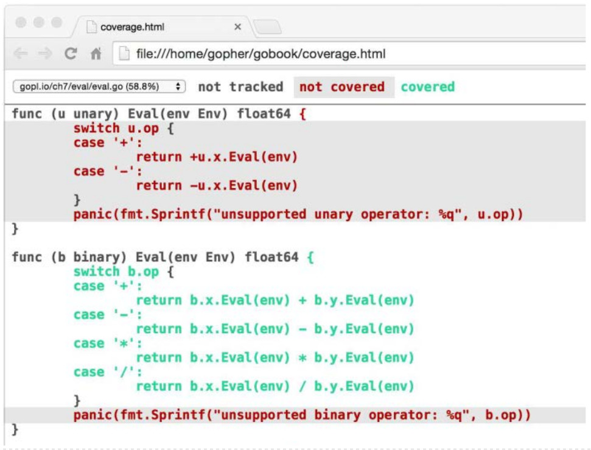
Cada declaracion es de color verde si estaba cubierta o rojo si no. Para mayor claridad, hemos sombreado el fondo del texto rojo. Podemos ver inmediatamente que ninguna de nuestras entradas prueba el operador unario del metodo Eval. Si agregamos este nuevo caso de prueba a la tabla y volvemos a ejecutar los dos comandos anteriores, el codigo de expresion unario se convierte en verde:
{"-x * -x",eval.Env{"x":2},"4"}
Sin embargo, las dos declaraciones panic permanecen de color rojo. Esto no debe ser sorprendente, porque se supone que estas declaraciones son inaccesibles.
Alcanzar una cobertura del 100% de la declaracion suena como un objetivo noble, pero generalmente no es factible en la practica, ni es probable que sea un buen uso del esfuerzo. El hecho de que se ejecute una sentencia no significa que este libre de errores; Las declaraciones que contienen expresiones complejas se deben ejecutar muchas veces con entradas diferentes para cubrir los casos interesantes. Algunos estados, como las declaraciones panic anteriores, no pueden ser alcanzados. Otros, como los que manejan errores esotericos, son dificiles de probar pero raramente alcanzados en la practica. Las pruebas son fundamentalmente un esfuerzo pragmatico, un equilibrio entre el costo de escritura de las pruebas y el costo de los fallos que podrian haber sido evitados por las pruebas. Las herramientas de cobertura pueden ayudar a identificar los puntos mas debiles, pero idear buenos casos de prueba requiere el mismo pensamiento riguroso que la programacion en general.
Funciones Benchmark
Benchmarking es la practica de medir el rendimiento de un programa con una carga de trabajo fija. En Go, una funcion de referencia se parece a una funcion de prueba, pero con el prefijo Benchmark y un parametro *testing.B que proporciona la mayor parte de los mismos metodos que un *testing.T, ademas algunos adicionales relacionados con la medicion del desempeño. Tambien expone un campo entero N, que especifica el numero de veces que se realizara la operacion que se esta midiendo.
Aqui tenemos el benchmark para IsPalindrome que llama N veces en un bucle.
import"testing"funcBenchmarkIsPalindrome(b*testing.B){fori:=0;i<b.N;i++{IsPalindrome("A man, a plan, a canal: Panama")}}
Lo ejecutamos con el siguiente comando. A diferencia de las pruebas, los benchmarks por defecto no se ejecutan. El argumento -bench selecciona que deben ejecutarso los benchmark. Es una expresion regular que coincide con los nombres de las funciones Benchmark, con un valor predeterminado que no coincide con ninguno de ellos. El patron . hace que coincida con todos los benchmark en el paquete word, pero ya que solo hay una, -bench=IsPalindrome habria sido equivalente.
$ cd$GOPATH/src/gopl.io/ch11/word2
$ go test -bench=.
PASS
BenchmarkIsPalindrome-8 10000001035 ns/op
ok gopl.io/ch11/word2 2.179s
El Sufijo numerico de benchmark, 8 aqui, indica el valor de GOMAXPROCS, lo cual es importante para los benchmark concurrentes.
El informe nos dice que cada llamada a IsPalindrome tomo cerca de 1.035 microsegundos, un promedio de mas de 1.000.000 ejecuciones. Puesto que el corredor referencia inicialmente no tiene idea de cuanto tiempo dura la operacion, realiza algunas mediciones iniciales utilizando valores pequeños de N y luego extrapola hasta un valor lo suficientemente grande para realizar una medicion de temporizacion estable.
La razon por la que el bucle se implementa por la funcion benchmark, y no por el codigo de llamada en el controlador de prueba, es para que la funcion de referencia tenga la oportunidad de ejecutar cualquier codigo de configuracion de una sola vez fuera del bucle sin que esto se añada al tiempo medido de cada iteracion. Si este codigo de configuracion sigue perturbando los resultados, el parametro testing.B proporciona metodos para detener, reanudar y reiniciar el temporizador, pero estos rara vez son necesarios.
Ahora que tenemos un punto de referencia y pruebas, es facil probar ideas para hacer el programa mas rapido. Quizas la optimizacion mas abvia es hacer el el bucle de IsPalindrome detenga la verificacion en el punto medio, para evitar hacer cada comparacion dos veces:
Pero como suele ser el caso, una optimizacion obvia no siempre da el beneficio esperado. Este proporciono una mera mejora del 4% en un experimento.
$ go test -bench=.
PASS
BenchmarkIsPalindrome-8 1000000992 ns/op
ok gopl.io/ch11/word2 2.093s
Otra idea es asignar previamente una gama suficientemente amplia para su uso por letters, en lugar de expandirlo mediante llamadas sucesivas a append. Declaramos letters como un arreglo del tamaño adecuado, de esta manera,
Produce una mejora de casi 35%, y el marcador del benchmark ahora informa el promedio de mas de 2.000.000 de iteraciones.
$ go test -bench=.
PASS
BenchmarkIsPalindrome-8 2000000697 ns/op
ok gopl.io/ch11/word2 1.468s
Como muestra este ejemplo, el programa mas rapido es a menudo el que hace menos asignaciones de memoria. La bandera -benchmem de linea de comandos, incluira estadisticas de asignacion de memoria en su informe. Aqui comparamos el numero de asignaciones antes de la optimizacion:
$ go test -bench=. -benchmem
PASS
BenchmarkIsPalindrome 10000001026 ns/op 304 B/op 4 allocs/op
Y despues de ella:
$ go test -bench=. -benchmem
PASS
BenchmarkIsPalindrome 2000000807 ns/op 128 B/op 1 allocs/op
La consolidacion de las asignaciones en una sola llamada a make eliminado el 75% de las asignaciones y reduce a la mitad la cantidad de memoria asignada.
Los benchmark de este tipo nos dicen que el tiempo absoluto requerido para una operacion dada, pero en muchas configuraciones las preguntas de desempeño interesantes estan en los tiempos relativos de dos operaciones diferentes. Por ejemplo, si una funcion toma 1ms para procesar 1,000 elementos, ¿cuanto tiempo tardara en procesar 10,000 o un millon? Tales comparaciones revelan el crecimiento asintotico del tiempo de funcionamiento de la funcion. Otro ejemplo: ¿cual es el mejor tamaño para un bufer de E/S? Los benchmarks del rendimiento de la aplicacion en un rango de tamaños pueden ayudarnos a elegir el buffer mas pequeño que ofrece un rendimiento satisfactorio. Un tercer ejemplo: ¿cual algoritmo funciona mejor para un trabajo determinado? Los benchmark que evaluan dos algoritmos diferentes en los mismos datos de entrada a menudo pueden mostrar las fortalezas y debilidades de cada uno en cargas de trabajo importantes o representativas.
Los benchmarks comparativos son solo codigo regular. Por lo general toman la forma de una sola funcion parametrizada, llamada de varias funciones Benchmark con diferentes valores, como esto:
El parametro de size, que especifica el tamaño de la entrada, varia a traves de los benchmark, pero es constante dentro de cada punto de referencia. Resista la tentacion de utilizar el parametro b.N como el tamaño de entrada. A menos que lo interprete como un recuento de iteracion para una entrada de tamaño fijo, los resultados de su benchmark no tendran sentido.
Los patrones revelados por los benchmark comparativos son particularmente utiles durante el diseño del programa, pero no arrojamos los benchmark cuando el programa esta funcionando. A medida que el programa evoluciona, o su entrada crece, o se despliega en nuevos sistemas operativos o procesadores con caracteristicas diferentes, podemos reutilizar esos benchmark para revisar las decisiones de diseño.
Ejercicio 11.6: Escribir benchmark para comparar la implementacion PopCount en la Seccion 2.6.2 con sus soluciones al Ejercicio 2.4 y Ejercicio 2.5. ¿En que punto el enfoque basado en tablas se equilibra?
Ejercicio 11.7: Escribir benchmark para Add, UnionWith, y otros metodos de *IntSet (Seccion 6.5) utilizando grandes entradas pseudoaleatorias. ¿Que tan rapido puede hacer que estos metodos se ejecuten? ¿Como afecta la eleccion del tamaño de la palabra al rendimiento? ¿Que tan rapido es IntSet en comparacion con una implementacion de conjunto basado en el tipo integrado de mapa?
Perfilado
Los benchmark son utiles para medir el rendimiento de operaciones especificas, pero cuando estamos tratando de hacer un programa lento mas rapido, a menudo no tenemos idea por donde empezar. Todo programador conoce el aforismo de Donald Knuth acerca de la optimizacion prematura, que aparecio en Structured Programming with go to Statements en 1974. Aunque a menudo mal interpretado en el sentido de rendimiento, no importa, en su contexto original, podemos discernir un significado diferente:
No hay duda de que el grial de la eficiencia conduce al abuso. Los programadores pierden enormes cantidades de tiempo pensando o preocupandose por la velocidad de las partes no criticas de sus programas, y estos intentos de eficiencia realmente tienen un fuerte impacto negativo cuando se consideran la depuracion y el mantenimiento. Debemos olvidarnos de las pequeñas eficiencias, digamos alrededor del 97% del tiempo: la optimizacion prematura es la raiz de todo mal.
Sin embargo, no debemos dejar pasar nuestras oportunidades en ese critico 3%. Un buen programador no se engañara en complacencia por tal razonamiento, el sera sabio mirando cuidadosamente el codigo critico; Pero solo despues de que el codigo se ha identificado. A menudo es un error hacer juicios a priori sobre que partes de un programa son realmente criticos, ya que la experiencia universal de los programadores que han estado utilizando herramientas de medicion ha sido que sus suposiciones intuitivas fallan.
Cuando deseamos prestar atencion a la velocidad de nuestros programas, la mejor tecnica para identificar el codigo critico es el perfilado. El perfilado es un enfoque automatizado para la medicion del rendimiento basado en el muestreo de un numero de eventos de perfil durante la ejecucion, extrapolando luego de ellos durante una etapa de post-procesamiento; el resumen estadistico resultante se llama un perfil.
Go soporta muchos tipos de perfiles, cada uno de ellos relacionado con un aspecto diferente del rendimiento, pero todos ellos implican grabar una secuencia de eventos de interes, cada uno de los cuales tiene un seguimiento de pila que acompaña–la pila de llamadas de funcion activas en el momento del evento. La herramienta go test tiene soporte integrado para varios tipos de perfiles.
Un perfil de CPU identifica las funciones cuya ejecucion requiere mas tiempo de CPU. El subproceso actualmente en ejecucion en cada CPU es interrumpido periodicamente por el sistema operativo cada pocos milisegundos, con cada interrupcion registrando un evento de perfil antes de que se reanude la ejecucion normal.
Un perfil de monticulo identifica las declaraciones responsables de la asignacion de la mayoria de la memoria. La libreria de perfiles muestrea las llamadas a las rutinas de asignacion de memoria interna de manera que, en promedio, se registra un evento de perfil por cada 512 KB de memoria asignada.
Un perfil de bloqueo identifica las operaciones responsable del bloqueo de las gorutinas mas largas, como las llamadas al sistema, envio y recepcion de canales, y adquisiciones de bloqueos. La libreria de perfilado registra un evento cada vez que una gorutina es bloqueada por una de estas operaciones.
Recopilar un perfil para el codigo bajo prueba es tan facil como habilitar uno de los indicadores a continuacion. Tenga cuidado al usar mas de una bandera a la vez, sin embargo: la maquinaria para recoger un tipo de perfil puede sesgar los resultados de otros.
$ go test -cpuprofile=cpu.out
$ go test -blockprofile=block.out
$ go test -memprofile=mem.out
Es facil agregar soporte de perfilado a programas que no son de prueba, aunque los detalles de como lo hacemos varian entre las herramientas de linea de comandos de corta duracion y las aplicaciones de servidor de larga ejecucion. El perfilado es especialmente util en aplicaciones de larga duracion, por lo que las caracteristicas de generacion de perfiles en tiempo de ejecucion de Go pueden habilitarse bajo el control del programador utilizando la API runtime.
Una vez que hemos reunido un perfil, es necesario analizar usando la herramienta pprof. Esta es una parte estandar de la distribucion Go, pero ya que no es una herramienta de uso diario, se accede indirectamente usando go tool pprof. Tiene docenas de caracteristicas y opciones, pero el uso basico requiere solo dos argumentos, el ejecutable que produjo el perfil y el registro del perfil.
Para que el perfil sea eficiente y para ahorrar espacio, el registro no incluye nombres de funciones; En su lugar, las funciones se identifican por sus direcciones. Esto significa que pprof necesita el ejecutable para que el registro tenga sentido. Aunque go test generalmente descarta el ejecutable de prueba una vez finalizada la prueba, cuando el perfilado se habilita guarda el archivo ejecutable como Foo.test, donde foo es el nombre del paquete de prueba.
Los siguientes comandos muestran como recopilar y mostrar un perfil de CPU simple. Hemos seleccionado uno de los benchmark del net/http. Por lo general, es mejor hacer un perfil de benchmark especificos que se han construido para ser representativos de las cargas de trabajo que a uno le preocupan. En los benchmark los casos de prueba casi nunca son representativos, es por ello que las desactivo mediante el filtro -run=NONE.
La bandera -text especifica el formato de salida, en este caso, una tabla textual con una fila por cada funcion, ordenada para que las funciones mas activas–Las que consumen mas ciclos de CPU–aparecescan primero. La bandera -nodecount=10 limita el resultado a 10 filas. Para los problemas de rendimiento bruto, este formato textual puede ser suficiente para identificar la causa.
Este perfil nos dice que la criptografia de curva eliptica es importante para el rendimiento de este benchmark HTTPS en particular. Por el contrario, si un perfil esta dominado por funciones de asignacion de memoria desde el paquete runtime, reducir el consumo de memoria puede ser una optimizacion que vale la pena.
Para problemas mas sutiles, puede ser mejor usar una de las pantallas graficas de pprof. Estas requieren GraphViz, que se puede descargar desde www.graphviz.org. La bandera -web entonces crea un grafico dirigido de las funciones del programa, anotadas por sus numeros de perfil de la CPU y de colores para indicar las funciones mas calientes.
Solo hemos arañado la superficie de las herramientas de perfilado de Go. Para obtener mas informacion, lea el articulo Profiling Go Programs en el Blog de Go.
Funciones Example
El tercer tipo de funcion tratada especialmente por go test es una funcion de ejemplo, uno cuyo nombre empieza con Example. No tiene parametros ni resultados. Aqui un ejemplo para la funcion IsPalindrome:
funcExampleIsPalindrome(){fmt.Println(IsPalindrome("A man, a plan, a canal: Panama"))fmt.Println(IsPalindrome("palindrome"))// Output:// true// false}
Las funciones de ejemplo sirven para tres propositos. El principal es la documentacion: un buen ejemplo puede ser una forma mas sucinta o intuitiva de transmitir el comportamiento de una funcion de libreria, que su descripcion en prosa, especialmente cuando se usa como recordatorio o referencia rapida. Un ejemplo tambien puede demostrar la interaccion entre varios tipos y funciones pertenecientes a una API, mientras que la documentacion en prosa siempre debe estar unida a un lugar, como una declaracion de tipo o funcion o el paquete en su conjunto. Y a diferencia de los ejemplos dentro de los comentarios, las funciones de ejemplo son codigo Go real, sujeto a comprobacion en tiempo de compilacion, para que no se vuelvan obsoletos a medida que el codigo evoluciona.
Basado en el sufijo Example de la de funcion, el servidor de documentacion basado en la web godoc asocia funciones ejemplo con la funcion o el paquete que ejemplifican, por lo que ExampleIsPalindrome se mostrara con la documentacion para la funcion IsPalindrome, y se asociara una funcion de ejemplo llamado simplemente Example asociado con el paquete word en su conjunto.
El segundo proposito es que los ejemplos son pruebas ejecutables dirigidas por go test. Si la funcion de ejemplo contiene un comentario final // Output: comentar el de arriba, el controlador de pruebas ejecutara la funcion y comprobar que lo que se imprime en la salida estandar coincide con el texto dentro de los comentarios.
El tercer objetivo de un ejemplo es la experimentacion practica. El servidor godoc en golang.org utiliza la Zona de juegos para permitir al usuario editar y ejecutar cada funcion de ejemplo desde un navegador web, como se muestra en la Figura 11.4. Esta es a menudo la manera mas rapida de conseguir una sensacion para una funcion o caracteristica del lenguaje particular.
Figura 11.4. Un ejemplo interactiva de strings.Join en godoc.
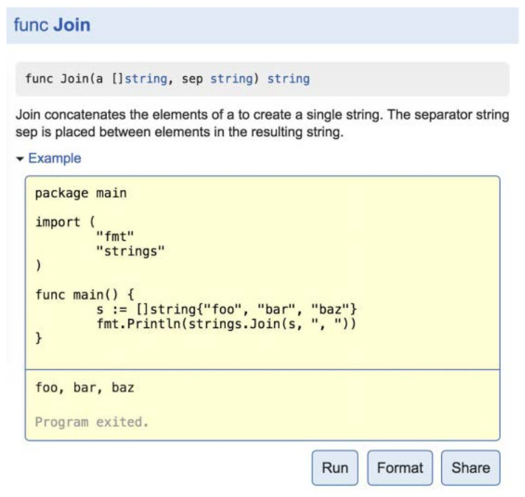
Los dos capitulos finales del libro examinan los paquetes reflect y unsafe, que pocon programadores Go utilizan regularmente–e incluso menos necesitan usarlos. Si aun no ha escrito ningun programa de Go sustancial, ahora seria un buen momento para hacerlo.
Reflexion
Go proporciona un mecanismo para actualizar variables e inspeccionar sus valores en tiempo de ejecucion, llamar a sus metodos y aplicar las operaciones intrinsecas a su representacion, todo sin conocer sus tipos en tiempo de compilacion. Este mecanismo se denomina reflexion. La reflexion tambien nos permite tratar los propios tipos como valores de primera clase.
En este capitulo, vamos a explorar las caracteristicas de reflexion de Go para ver la forma en que aumentan la expresividad del lenguaje, y en particular la forma en que son cruciales para la implementacion de dos APIs importantes: el formateo de cadenas proporcionado por fmt, y el protocolo de codificacion proporcionados por los paquetes encoding/json y encoding/xml. La reflexion es tambien esencial para el mecanismo de plantilla proporcionada por los paquetes text/template y html/template que vimos en la Seccion 4.6. Sin embargo, es complejo razonar la reflexion y no es para uso casual, por lo que aunque estos paquetes se implementan mediante la reflexion, no exponen la reflexion en sus propias API.
¿Por que la Reflexion?
A veces necesitamos escribir una funcion capaz de tratar uniformemente con valores de tipos que no satisfacen una interfaz comun, no tienen una representacion conocida o no existen en el momento en que diseñamos la funcion–o incluso los tres.
Un ejemplo familiar es la logica de formateo dentro de fmt.Fprintf, que puede imprimir de manera util un valor arbitrario de cualquier tipo, incluso uno definido por el usuario. Tratemos de implementar una funcion como esta usando lo que ya sabemos. Para simplificar, nuestra funcion acepta un argumento y devuelve el resultado como una cadena como hace fmt.Sprint, asi que vamos a llamarlo Sprint.
Empezamos con un switch de tipo que pone a prueba si el argumento define una metodo String, y lo llaman si es asi. A continuacion, agregamos casos que ponen a prueba el tipo dinamico del valor en cada uno de los tipos basicos–string, int, bool, etc–y realice la operacion de formato adecuado en cada caso.
funcSprint(xinterface{})string{typestringerinterface{String()string}switchx:=x.(type){casestringer:returnx.String()casestring:returnxcaseint:returnstrconv.Itoa(x)// ...similar cases for int16, uint32, and so on...casebool:ifx{return"true"}return"false"default:// array, chan, func, map, pointer, slice, structreturn"???"}}
Pero, ¿como podemos hacer frente a otros tipos, como []float64, map[string][]string, y demas? Podriamos añadir mas casos, pero el numero de tales tipos es infinito. Y que pasa con los tipos con nombre, como url.Values? Incluso si el switch de tipo tenia un caso para su tipo subyacente map[string][]string, no coincidira con con url.Values porque los dos tipos no son identicos, y el interruptor de tipo no puede incluir un caso para cada tipo como url.Values porque eso requeriria que esta libreria dependa de sus clientes.
Sin una manera de inspeccionar la representacion de valores de tipos desconocidos, rapidamente nos quedamos atascados. Lo que necesitamos es reflexion.
reflect.Type y reflect.Value
La reflexion es proporcionada por el paquete reflect. Este define dos tipos importantes, Type y Value. Type representa un tipo Go. Es una interfaz con muchos metodos para discriminar entre tipos e inspeccionar sus componentes, como los campos de una estructura o los parametros de una funcion. La unica aplicacion de reflect.Type es el descriptor de tipo (§7.5), la misma entidad que identifica el tipo dinamico de un valor interfaz.
la funcion reflect.TypeOf acepta cualquier interface{} y devuelve su tipo dinamico como reflect.Type:
t:=reflect.TypeOf(3)// un reflect.Typefmt.Println(t.String())// "int"fmt.Println(t)// "int"
La llamada TypeOf(3) anterior asigna el valor 3 al parametro interface{}. Recuerdese de la Seccion 7.5 que una asignacion de un valor concreto a un tipo de interfaz lleva a cabo una conversion de la interfaz implicita, que crea un valor interfaz que consta de dos componentes: su tipo dinamico es el tipo del operando (int) y su valor dinamico es el valor del operando (3).
Ya que reflect.TypeOf regresa el tipo dinamico de un valor de interfaz, siempre devuelve un tipo concreto. Asi, por ejemplo, el codigo que aparce a continuacion imprime *os.File, no *io.Writer. Mas tarde, veremos que reflect.Type es capaz de representar tipos de interfaz tambien.
Observe que reflect.Type satisface fmt.Stringer. Como la impresion del tipo dinamico de un valor interfaz es util para depuracion y registro, fmt.Printf proporciona una abreviatura, %T, que internamente utiliza reflect.TypeOf:
fmt.Printf("%T\n",3)// "int"
El otro tipo importante en el paquete reflect es Value. Un reflect.Value puede contener un valor de cualquier tipo. La funcion reflect.ValueOf acepta cualquier interface{} y devuelve un valor reflect.Value que contiene el valor dinamico de la interfaz. Al igual que con reflect.TypeOf, los resultados de reflect.ValueOf son siempre concretos, pero un reflect.Value pueden contener valores de interfaz tambien.
v:=reflect.ValueOf(3)// un reflect.Valuefmt.Println(v)// "3"fmt.Printf("%v\n",v)// "3"fmt.Println(v.String())// NOTA: "<int Value>"
Al igual que reflect.Type, reflect.Value tambien satisface fmt.Stringer, pero a menos que Value contenga un string, el resultado del metodo String solo revela el tipo. En su lugar, utilice el verbo %v del paquete fmt, que maneja reflect.Values especialmente.
Al llamar al metodo Type en un Value devuelve su tipo como reflect.Type:
t:=v.Type()// un reflect.Typefmt.Println(t.String())// "int"
La operacion inversa de reflect.ValueOf es el motodo reflect.Value.Interface. Devuelve una interface{} que contiene el mismo valor concreto que reflect.Value:
v:=reflect.ValueOf(3)// un reflect.Valuex:=v.Interface()// un interface{}i:=x.(int)// un intfmt.Printf("%d\n",i)// "3"
Un reflect.Value y una interface{} pueden ambos contener valores arbitrarios. La diferencia es que una interfaz vacia oculta la representacion y las operaciones intrinsecas del valor que contiene y no expone ninguno de sus metodos, de modo que a menos que conozcamos su tipo dinamico y usemos una asercion de tipo para mirar dentro (como lo hicimos anteriormente), hay Poco que podemos hacer con el valor. Por el contrario, un Value tiene muchos metodos para inspeccionar su contenido, independientemente de su tipo. Vamos a utilizarlos para nuestro segundo intento de una funcion de formateo general, que llamaremos format.Any.
En lugar de un switch de tipo, usaremos reflect.Value y su metodo Kind para discriminar los casos. Aunque hay un numero infinito de tipos, solo hay un numero finito de kinds de tipo: los tipos basicos Bool, String, y todos los numeros; los tipos agregados Array y Struct; los tipos de referencia Chan, Func, Ptr, Slice, y Map; los tipos Interface; y, finalmente, Invalid, es decir, sin valor alguno. (El valor cero de una reflect.Value tiene una tipo Invalid.)
packageformatimport("reflect""strconv")// Any formatea cualquier valor como un string.funcAny(valueinterface{})string{returnformatAtom(reflect.ValueOf(value))}// formatAtom formatea un valor sin inspeccionar su estructura interna.funcformatAtom(vreflect.Value)string{switchv.Kind(){casereflect.Invalid:return"invalid"casereflect.Int,reflect.Int8,reflect.Int16,reflect.Int32,reflect.Int64:returnstrconv.FormatInt(v.Int(),10)casereflect.Uint,reflect.Uint8,reflect.Uint16,reflect.Uint32,reflect.Uint64,reflect.Uintptr:returnstrconv.FormatUint(v.Uint(),10)// ...Casos de punto flotante y complejos omitidos por brevedad...casereflect.Bool:returnstrconv.FormatBool(v.Bool())casereflect.String:returnstrconv.Quote(v.String())casereflect.Chan,reflect.Func,reflect.Ptr,reflect.Slice,reflect.Map:returnv.Type().String()+" 0x"+strconv.FormatUint(uint64(v.Pointer()),16)default:// reflect.Array, reflect.Struct, reflect.Interfacereturnv.Type().String()+" value"}}
Hasta ahora, nuestra funcion maneja cada valor como una cosa indivisible, sin estructura interna–de ahi formatAtom. Para los tipos de agregados (estructuras y matrices) y las interfaces se imprime unicamente el tipo del valor, y para los tipos de referencia (canales, funciones, punteros, slices, y mapas), se imprime el tipo y la direccion de referencia en hexadecimal. Esto es menos que ideal, pero sigue siendo una importante mejora, y ya que Kind se ocupa solo con la representacion subyacente, format.Any funciona tambien para los timpos con nombre. Por ejemplo:
A continuacion veremos como mejorar la visualizacion de tipos compuestos. En lugar de tratar de copiar fmt.Sprint exactamente, vamos a construir una funcion de utilidad de depuracion llamada Display que, dado un valor x arbitrariamente complejo, imprime la estructura completa de ese valor, etiquetando cada elemento con el camino por el cual se encontro. Comencemos con un ejemplo.
e,_:=eval.Parse("sqrt(A / pi)")Display("e",e)
En la llamada anterior, el argumento de Display es un arbol sintactico del evaluador de expresiones en la Seccion 7.9. La salida de Display se muestra a continuacion:
Cuando sea posible, debe evitar exponer la reflexion en la API de un paquete. Definiremos un funcion sin exportacion display para hacer el trabajo real de la recursividad, y la exportacion Display, un simple envoltorio alrededor de el que acepta un parametro interface{}:
En display, usaremos la funcion formatAtom que definimos anteriormente para imprimir valores elementales–tipos basicos, funciones y canales–pero vamos a utilizar los metodos de reflect.Value para mostrar repetidamente cada componente de un tipo mas complejo. A medida que la recursion desciende, la cadena de ruta, que describe inicialmente el valor de partida (por ejemplo, e), se incrementara para indicar como alcanzamos el valor actual (por ejemplo, e.args[0].value).
Como ya no pretendemos implementar fmt.Sprint, utilizaremos el paquete fmt para mantener nuestro ejemplo corto.
La logica es la misma para ambos. El metodo Len devuelve el numero de elementos de un valor slice o arreglo, y Index(i) recupera el elemento en el indice i, tambien como un reflect.Value; entra en panico si i esta fuera de limites. Esto es analoga al len(a) nativo y a la operacion en secuencias a[i]. La funcion display se invoca a si misma recursivamente en cada elemento de la secuencia, añadiendo la notacion subindice [i] a la trayectoria.
Aunque reflect.Value tiene muchos metodos, solo unos pocos son seguros para llamar a cualquier valor dado. Por ejemplo, el metodo Index puede ser llamado en valores de tipo Slice, Array o String, pero entra en panico para cualquier otro tipo.
Estructuras
El metodo NumField informa el numero de campos en la estructura, y Field(i) devuelve el valor del campo i como un reflect.Value. La lista de campos incluye los promocionados desde campos anonimos. Para añadir la notacion de seleccion de campo .f a la ruta, debemos obtener el reflect.Type de la estructura y tener acceso al nombre de su campo i.
Mapas
El metodo MapKeys devuelve un slice de reflect.Values, uno por cada clave del mapa. Como de costumbre cuando se itera sobre un mapa, el orden no esta definido. MapIndex(key) devuelve el valor correspondiente a key. Añadimos la notacion de subindice [key] a la ruta. (Estamos cortando una esquina aqui el tipo de una clave del mapa no se limita a los tipos que formatAtom maneja mejor; arreglos, estructuras e interfaces tambien pueden ser claves validas de mapa. Extender este caso para imprimir la clave en su totalidad es el Ejercicio. 12.1.)
Punteros
El metodo Elem devuelve la variable a la que apunta un puntero, de nuevo como un reflect.Value. Esta operacion seria segura incluso si el valor del puntero es nil, en cuyo caso el resultado tendria tipo Invalid, pero utilizamos IsNil para detectar punteros nulos de manera explicita por lo que podemos imprimir un mensaje mas apropiado. Prefijamos el camino con un * y un parentesis para evitar la ambigüedad.
Interfaces : Una vez mas, utilizamos IsNil para probar si la interfaz es nil, y si no, recuperamos su valor dinamico utilizando v.Elem()) e imprimimos su tipo y valor.
Ahora que nuestro funcion Display esta completa, vamos a ponerla a trabajar. El tipo Movie a continuacion es una ligera variacion del presente en la Seccion 4.5:
Vamos a declarar un valor de este tipo y ver lo que hace Display con el:
strangelove:=Movie{Title:"Dr. Strangelove",Subtitle:"How I Learned to Stop Worrying and Love the Bomb",Year:1964,Color:false,Actor:map[string]string{"Dr. Strangelove":"Peter Sellers","Grp. Capt. Lionel Mandrake":"Peter Sellers","Pres. Merkin Muffley":"Peter Sellers","Gen. Buck Turgidson":"George C. Scott","Brig. Gen. Jack D. Ripper":"Sterling Hayden",`Maj. T.J. "King" Kong`:"Slim Pickens",},Oscars:[]string{"Best Actor (Nomin.)","Best Adapted Screenplay (Nomin.)","Best Director (Nomin.)","Best Picture (Nomin.)",},}
La llamada Display("strangelove", strangelove) imprime:
Display strangelove (display.Movie):
strangelove.Title = "Dr. Strangelove"
strangelove.Subtitle = "How I Learned to Stop Worrying and Love the Bomb"
strangelove.Year = 1964
strangelove.Color = false
strangelove.Actor["Gen. Buck Turgidson"] = "George C. Scott"
strangelove.Actor["Brig. Gen. Jack D. Ripper"] = "Sterling Hayden"
strangelove.Actor["Maj. T.J. \"King\" Kong"] = "Slim Pickens"
strangelove.Actor["Dr. Strangelove"] = "Peter Sellers"
strangelove.Actor["Grp. Capt. Lionel Mandrake"] = "Peter Sellers"
strangelove.Actor["Pres. Merkin Muffley"] = "Peter Sellers"
strangelove.Oscars[0] = "Best Actor (Nomin.)"
strangelove.Oscars[1] = "Best Adapted Screenplay (Nomin.)"
strangelove.Oscars[2] = "Best Director (Nomin.)"
strangelove.Oscars[3] = "Best Picture (Nomin.)"
strangelove.Sequel = nil
Podemos utilizar Display para mostrar el funcionamiento interno de los tipos de librerias, como *os.File:
Observe que incluso los campos no exportados son visibles para la reflexion. Tenga en cuenta que la salida particular de este ejemplo puede variar entre plataformas y puede cambiar con el tiempo a medida que las librerias evolucionan. (Esos campos son privados por una razon!) Incluso podemos aplicar Display a un reflect.Value y verlo atravesar la representacion interna del descriptor de tipo de *os.File. La salida de la llamada Display("rV", reflect.ValueOf(os.Stderr)) se muestra a continuacion, aunque, por supuesto, su experiencia puede variar:
variinterface{}=3Display("i",i)// Output:// Display i (int):// i = 3Display("&i",&i)// Output:// Display &i (*interface {}):// (*&i).type = int// (*&i).value = 3
En el primer ejemplo, Display llama a reflect.ValueOf(i), que devuelve un valor de tipo Int. Como mencionamos en la Seccion 12.2, reflect.ValueOf siempre devuelve un valor de un tipo concreto ya que extrae el contenido de un valor interfaz.
En el segundo ejemplo, Display llama a reflect.ValueOf(&i), que devuelve un puntero a i, de tipo Ptr. El caso del switch para Ptr llama a Elem en este valor, que devuelve un valor que representa la variablei en si, del tipo Interface. Un Value obtenido indirectamente, como este, puede representar cualquier valor en absoluto, incluyendo interfaces. La funcion display se llama a si misma de forma recursiva y esta vez, imprime componentes separados para el tipo y valor dinamico de la interfaz.
Tal como se aplica actualmente, Display nunca terminara si encuentra un ciclo en el grafico del objeto, como esta lista enlazada que se come su propia cola:
// une estructura que apunta a si mismatypeCyclestruct{Valueint;Tail*Cycle}varcCyclec=Cycle{42,&c}Display("c",c)
Muchos programas Go contienen al menos algunos datos ciclicos. Hacer Display robusto frente a estos ciclos es complicado, requiriendo contabilidad adicional para registrar el conjunto de referencias que se han seguido hasta ahora; Es costoso tambien. Una solucion general requiere la caracteristicas unsafe del lenguaje, como veremos en la Seccion 13.3.
Los ciclos plantean un problema menor para fmt.Sprint, ya que rara vez se intenta imprimir la estructura completa. Por ejemplo, cuando encuentra un puntero, rompe la recursion imprimiendo el valor numerico del puntero. Puede quedar atrapado tratando de imprimir un slice o un mapa que se contiene como un elemento, pero estos casos raros no garantizan el considerable problema adicional de la manipulacion de ciclos.
Ejercicio 12.1: Ampliar Display para que pueda mostrar mapas cuyas claves son estructuras o matrices.
Ejercicio 12.2: Hacer display seguro de usar en estructuras de datos ciclicas limitando el numero de pasos necesarios antes de abandonar la recursividad. (En la Seccion 13.3, veremos otra forma de detectar ciclos).
Ejemplo: Codificacion de Expressions-S
Display es una rutina de depuracion para la visualizacion de datos estructurados, pero no esta muy lejos de ser capaz de codificar u ordenar objetos Go arbitrarios como mensajes en una notacion portatil adecuada para la comunicacion entre procesos.
Como vimos en la Seccion 4.5, la libreria estandar de Go es compatible con una variedad de formatos, incluyendo JSON, XML y ASN.1. Otra indicacion de que todavia es ampliamente utilizado expresiones-S, la sintaxis de Lisp. A diferencia de las otras notaciones, las expresiones-S no son compatibles con la libreria estandar de Go, no menos porque no tienen una definicion universalmente aceptada, a pesar de varios intentos de estandarizacion y la existencia de muchas implementaciones.
En esta seccion, definiremos un paquete que codifica objetos Go arbitrarios usando una notacion de expresiones-S que admita las siguientes construcciones:
42
entero
"hello"
cadena (con notacion en estilo Go)
foo
symbolo (un nombre sin cita)
(1 2 3)
lista (zero o mas elementos entre parentesis)
Los booleanos tradicionalmente se codifican utilizando el simbolo t para la verdadero, y la lista vacia () o el simbolo nil para falso, pero por simplicidad, nuestra implementacion los ignora. Tambien ignora canales y funciones, ya que su estado es opaco a la reflexion. Y no hace caso de numeros reales y complejos de punto flotante e interfaces. Agregar soporte para ellos es el Ejercicio 12.3.
Vamos a codificar los tipos de Go usando expresiones-S como sigue. Los enteros y las cadenas se codifican de la manera obvia. Los valores Nil se codifican como el simbolo nil. Los arrays y slices se codifican utilizando la notacion de lista.
Las estructuras se codifican como una lista de campos enlazados, siendo cada enlace de campo una lista de dos elementos cuyo primer elemento (un simbolo) es el nombre del campo y cuyo segundo elemento es el valor del campo. Los mapas tambien se codifican como una lista de pares, siendo cada par la clave y el valor de una entrada de mapa. Tradicionalmente, las expresiones-S representan listas de pares clave/valor utilizando una sola celula cons(key . value) para cada par, en lugar de una lista de dos elementos, pero para simplificar la decodificacion ignoraremos la notacion de lista punteada.
La codificacion se realiza por una sola funcion recursiva, encode, que se muestra a continuacion. Su estructura es esencialmente la misma que la de Display en la seccion anterior:
La funcion Marshal envuelve el codificador en una API similar a los de otros paquetes encoding/...:
// Marshal codifica un valor Go en forma de expresion-S.funcMarshal(vinterface{})([]byte,error){varbufbytes.Bufferiferr:=encode(&buf,reflect.ValueOf(v));err!=nil{returnnil,err}returnbuf.Bytes(),nil}
Aqui esta la salida que Marshal aplica a la variable strangelove de la Seccion 12.3:
((Title"Dr. Strangelove")(Subtitle"How I Learned to Stop Worrying and Love the Bomb")(Year1964)(Actor(("Grp. Capt. Lionel Mandrake""Peter Sellers")("Pres. Merkin Muffley""Peter Sellers")("Gen. Buck Turgidson""George C. Scott")("Brig. Gen. Jack D. Ripper""Sterling Hayden")("Maj. T.J. \"King\" Kong""Slim Pickens")("Dr. Strangelove""Peter Sellers")))(Oscars("Best Actor (Nomin.)""Best Adapted Screenplay (Nomin.)""Best Director (Nomin.)""Best Picture (Nomin.)"))(Sequelnil))
Toda la salida aparece en una linea larga con espacios minimos, por lo que es dificil de leer. Esta es la misma salida formateada manualmente de acuerdo con las convenciones de expresion-S. Escribir una bonita impresora para las expresiones-S se deja como un ejercicio (desafiante); la descarga de gopl.io incluye una version simple.
((Title"Dr. Strangelove")(Subtitle"How I Learned to Stop Worrying and Love the Bomb")(Year1964)(Actor(("Grp. Capt. Lionel Mandrake""Peter Sellers")("Pres. Merkin Muffley""Peter Sellers")("Gen. Buck Turgidson""George C. Scott")("Brig. Gen. Jack D. Ripper""Sterling Hayden")("Maj. T.J. \"King\" Kong""Slim Pickens")("Dr. Strangelove""Peter Sellers")))(Oscars("Best Actor (Nomin.)""Best Adapted Screenplay (Nomin.)""Best Director (Nomin.)""Best Picture (Nomin.)"))(Sequelnil))
Al igual las funciones fmt.Print, json.Marshal y Display, sexpr.Marshal entrara en un bucle infinito si es llamado con los datos ciclicos.
En la Seccion 12.6, esbozaremos la implementacion de la funcion de decodificacion de expreciones-S correspondiente, pero antes de llegar alli, primero debemos entender como se puede usar la reflexion para actualizar las variables del programa.
Ejercicio 12.3: Implementar los casos faltantes de la funcion encode. Codifique booleanos como t y nil, numeros de punto flotante utilizando la notacion de Go, y los numeros complejos como 1+2i como #C(1.0 2.0). Las interfaces se pueden codificar como un par de nombre de tipo y un valor, por ejemplo ("[int" (1 2 3))], pero cuidado que esta notacion es ambigua: el metodo reflect.Type.String puede devolver la misma cadena para diferentes tipos.
Ejercicio 12.4: Modifique encode para imprimir expresiones-S con el estilo mostrado anteriormente.
Ejercicio 12.5: Adapte encode para producir JSON en lugar de expresiones-S. Pruebe su codificador utilizando el descodificador estandar, json.Unmarshal.
Ejercicio 12.6: Adapte encode para que a manera de optimizacion, no codifique un campo cuyo valor es el valor cero de su tipo.
Ejercicio 12.7: Crear un API de streaming para el decodificador de expresiones-S, siguiendo el estilo de json.Decoder (§4.5).
Configurar Variables con reflect.Value
Hasta el momento, la reflexion solo ha interpretado los valores en nuestro programa de diversas maneras. El punto de esta seccion, es cambiarlos.
Recordemos que algunas expresiones van como x, x.f[1], y *p denotan variables, pero otras como x + 1 y f(2) no. Una variable es una ubicacion de almacenamiento direccionable que contiene un valor, y su valor puede ser actualizado a traves de esa direccion.
Una distincion similar se aplica a reflect.Values. Algunos son direccionables; Otros no lo son. Considere las siguientes declaraciones:
x:=2// valor tipo variable?a:=reflect.ValueOf(2)// 2 int nob:=reflect.ValueOf(x)// 2 int noc:=reflect.ValueOf(&x)// &x *int nod:=c.Elem()// 2 int si (x)
El valor dentro de a no es direccionable. Se trata simplemente de una copia del entero 2. Lo mismo es cierto para b. El valor dentro de c tambien es no direccionable, siendo una copia del valor de puntero &x. De hecho, reflect.Value devuelto por reflect.ValueOf(x) no es direccionable. Pero d, derivado de c mediante la desreferenciacion del puntero un su interior, se refiere a una variable y es, por tanto direccionable. Podemos utilizar este enfoque, llamando a reflect.ValueOf(&x).Elem(), para obtener un Value direccionable de cualquier variable x.
Podemos pregruntar a reflect.Value si es direccionable a traves de su metodo CanAddr:
Obtenemos un reflect.Value direccionable siempre indirectamente atravez de un puntero, incluso si partimos de un Value no-direccionable . Todas las reglas habituales de direccionabilidad tienen analogos para la reflexion. Por ejemplo, ya que la expresion de indexacion de un slice e[i] sigue implicitamente un puntero, es direccionable incluso si la expresion e no lo es. Por analogia, reflect.ValueOf(e).Index(i) se refiere a una variable, y por tanto es direccionable incluso si reflect.ValueOf(e) no lo es.
Para recuperar la variable de un reflect.Value direccionable requiere tres pasos. En primer lugar, llamamos a Addr(), que devuelve un valor que contiene un puntero a la variable. Despues, llamamos a Interface() en este Value, que devuelve un valor interface{} que contiene el puntero. Finalmente, si sabemos el tipo de la variable, podemos usar una asercion de tipo para recuperar el contenido de la interfaz como un puntero comun. A continuacion, podemos actualizar la variable a traves del puntero:
x:=2d:=reflect.ValueOf(&x).Elem()// d referencia a la variable xpx:=d.Addr().Interface().(*int)// px := &x*px=3// x = 3fmt.Println(x)// "3"
O bien, podemos actualizar la variable a la que hace referencia reflect.Value directamente, sin necesidad de utilizar un puntero, llamando al metodo reflect.Value.Set:
d.Set(reflect.ValueOf(4))fmt.Println(x)// "4"
Las mismas comprobaciones de asignabilidad que normalmente se realizan por el compilador se realizan en tiempo de ejecucion por los metodos Set. Arriba, la variable y el valor tienen el tipo int, pero si la variable habia sido un int64, el programa entrara en panico, por lo que es crucial asegurarse de que el valor sea asignable al tipo de la variable:
d.Set(reflect.ValueOf(int64(5)))// panico: int64 no es asignable a int
Y, por supuesto, llamando a Set sobre un reflect.Value no direccionable tambien entra en panico:
x:=2b:=reflect.ValueOf(x)b.Set(reflect.ValueOf(3))// panico: se utiliza Set con un valor no direccionable
Hay variantes de Set especializadas para ciertos grupos de tipos basicos: SetInt, SetUint, SetString, SetFloat, y demas:
En algunos aspectos, estos metodos son mas tolerantes. SetInt, por ejemplo, tendra exito siempre y cuando el tipo de la variable sea algun tipo de entero con signo, o incluso un tipo con nombre cuyo tipo subyacente es un entero con signo, y si el valor es demasiado grande sera truncado en silencio para ajustarse. Pero pise con cuidado: llamar a SetInt en un reflect.Value que se refiere a una variable interface{} entrara en panico, aunque Set tendria exito.
x:=1rx:=reflect.ValueOf(&x).Elem()rx.SetInt(2)// OK, x = 2rx.Set(reflect.ValueOf(3))// OK, x = 3rx.SetString("hello")// panic: string no es asignable a intrx.Set(reflect.ValueOf("hello"))// panic: string no es asignable a intvaryinterface{}ry:=reflect.ValueOf(&y).Elem()ry.SetInt(2)// panico: SetInt llamada con un Valoe interfacery.Set(reflect.ValueOf(3))// OK, y = int(3)ry.SetString("hello")// panico: SetString llamada en un Value interfacery.Set(reflect.ValueOf("hello"))// OK, y = "hello"
Cuando aplicamos Display a os.Stdout, encontramos que la reflexion puede leer los valores de los campos no exportados de estructuras que son inaccesibles segun las reglas usuales del lenguaje, como el campo fd int de una estructura os.File en una plataforma Unix. Sin embargo, la reflexion no puede actualizar estos valores:
stdout:=reflect.ValueOf(os.Stdout).Elem()// *os.Stdout, una variable os.Filefmt.Println(stdout.Type())// "os.File"fd:=stdout.FieldByName("fd")fmt.Println(fd.Int())// "1"fd.SetInt(2)// panico: capo sin exportar
Un reflect.Value direccionable registra si se obtuvo al atravesar el campo sin exportar de una estructura y, si es asi, no permite la modificacion. En consecuencia, CanAddr no suele ser la comprobacion correcta a utilizar antes de establecer una variable. El metodo relacionado CanSet informa si un reflect.Value es direccionable y asignable:
Por cada funcion Marshal proporcionada por los paquetes encoding/... de la libreria estandar, hay una funcion correspondiente Unmarshal que realiza la decodificacion. Por ejemplo, como vimos en la Seccion 4.5, dada un slice de bytes que contiene datos codificados JSON para nuestro tipo Movie (§12.3), podemos decodificarla asi:
la funcion Unmarshal utiliza la reflexion para modificar los campos de la variable movie actual, creando nuevos mapas, estructuras, y las slices segun lo determinado por el tipo Movie y el contenido de los datos entrantes.
Ahora vamos a poner en practica una simple funcion Unmarshal para expresiones-S, analoga a la funcion estandar json.Unmarshal utilizada anteriormente, y la inversa de nuestra anterior sexpr.Marshal. Debemos advertirle que una implementacion robusta y general requiere mucho mas codigo del que encajaria comodamente en este ejemplo, que ya es largo, asi que hemos tomado muchos atajos. Soportamos solo un subconjunto limitado de expresiones-S y no manejamos errores con gracia. El codigo pretende ilustrar la reflexion, no el analisis.
El lexer utiliza el tipo Scanner del paquete text/scanner para romper una corriente de entrada en una secuencia de tokens como comentarios, identificadores, literales de cadena, y literales numericos. El metodo del Scan del escaner avanza el escaner y devuelve el tipo del siguiente token, que tiene el tipo rune. La mayoria de los tokens, como '(', consisten en una sola runa, pero el paquete text/scanner representa el tipo de tokens de caracteres multiples Ident, String, e Int usando pequeños valores negativos del tipo rune. Despues de una llamada a Scan que devuelve uno de estos tipos de token, el metodo TokenText de escaner devuelve el texto del token.
Ya que un analizador tipico puede tener que inspeccionar el token actual varias veces, pero el metodo Scan avanza el escaner, envolvemos el escaner en un tipo auxiliar llamado lexer que realiza un seguimiento del token recientemente devuelto por Scan.
typelexerstruct{scanscanner.Scannertokenrune// the current token}func(lex*lexer)next(){lex.token=lex.scan.Scan()}func(lex*lexer)text()string{returnlex.scan.TokenText()}func(lex*lexer)consume(wantrune){iflex.token!=want{// NOTA: No es un ejemplo de buen manejo de errores.panic(fmt.Sprintf("got %q, want %q",lex.text(),want))}lex.next()}
Ahora pasemos al analizador sintactico. Consiste en dos funciones principales. La primera, read, lee la expresion-S que comienza con el token actual y actualiza la variable referida por el reflect.Value v direccionable.
funcread(lex*lexer,vreflect.Value){switchlex.token{casescanner.Ident:// Los unicos identificadores validos son// "nil" y campos con nombre en estructuras.iflex.text()=="nil"{v.Set(reflect.Zero(v.Type()))lex.next()return}casescanner.String:s,_:=strconv.Unquote(lex.text())// NOTA: ignorando erroresv.SetString(s)lex.next()returncasescanner.Int:i,_:=strconv.Atoi(lex.text())// NOTA: ignorando erroresv.SetInt(int64(i))lex.next()returncase'(':lex.next()readList(lex,v)lex.next()// consume ')'return}panic(fmt.Sprintf("unexpected token %q",lex.text()))}
Nuestras expresiones-S utilizan identificadores para dos propositos distintos, nombres de campo en estructuras y el valor de un puntero nil. La funcion read solo se ocupa de este ultimo caso. Cuando scanner.Ident se encuentra con nil, establece v a el valor cero de su tipo usando la funcion reflect.Zero. Para cualquier otro identificador, informa de un error. la funcion readList, que veremos en un momento, maneja identificadores utilizados como nombres de campo estructura.
Un token '(' indica el comienzo de una lista. La segunda funcion, readList, decodifica una lista en una variable de tipo compuesto–un mapa, estructura, slice, o arreglo–dependiendo el tipo de variable Go que estamos rellenando actualmente. En cada caso, el bucle mantiene el analisis de elementos hasta encontrar el parentesis de cierre correspondiente, ')', detectado por la funcion endList.
La parte interesante es la recursion. El caso mas sencillo es un arreglo. Hasta que se ve el cierre ')', utilizamos Index para obtener la variable para cada elemento del arreglo y hacer una llamada recursiva a read para rellenarla. Como en muchos otros casos de error, si los datos de entrada hacen que el decodificador se indexe mas alla del final del arreglo, el descodificador entrara en panico. Un metodo similar se utiliza para los slices, excepto que debemos crear una nueva variable para cada elemento, rellenarlo y, a continuacion, añadirlo a la porcion.
Los bucles de estructuras y mapas deben analizar una sublista (key value) en cada iteracion. Para las estructuras, la clave es un simbolo que identifica el campo. Analogo al caso de los arreglos, obtenemos la variable existente para el campo struct usando FieldByName y realizamos una llamada recursiva para llenarla. Para los mapas, la clave puede ser de cualquier tipo, y de forma analoga al caso de los slices, creamos una nueva variable, rellenandola de forma recursiva y finalmente insertamos el nuevo par clave/valor en el mapa.
funcreadList(lex*lexer,vreflect.Value){switchv.Kind(){casereflect.Array:// (item ...)fori:=0;!endList(lex);i++{read(lex,v.Index(i))}casereflect.Slice:// (item ...)for!endList(lex){item:=reflect.New(v.Type().Elem()).Elem()read(lex,item)v.Set(reflect.Append(v,item))}casereflect.Struct:// ((name value) ...)for!endList(lex){lex.consume('(')iflex.token!=scanner.Ident{panic(fmt.Sprintf("got token %q, want field name",lex.text()))}name:=lex.text()lex.next()read(lex,v.FieldByName(name))lex.consume(')')}casereflect.Map:// ((key value) ...)v.Set(reflect.MakeMap(v.Type()))for!endList(lex){lex.consume('(')key:=reflect.New(v.Type().Key()).Elem()read(lex,key)value:=reflect.New(v.Type().Elem()).Elem()read(lex,value)v.SetMapIndex(key,value)lex.consume(')')}default:panic(fmt.Sprintf("cannot decode list into %v",v.Type()))}}funcendList(lex*lexer)bool{switchlex.token{casescanner.EOF:panic("end of file")case')':returntrue}returnfalse}
Finalmente, terminamos el analizador en una funcion exportada Unmarshal, que se muestra a continuacion, que esconde algunas de las asperezas de la aplicacion. Los errores encontrados durante el analisis dan lugar a un panico, por lo que Unmarshal utiliza una llamada diferida para recuperarse del panico (§5.10) y devolvera un mensaje de error.
// Unmarshal analiza datos de expresiones-S y rellena la variable// cuya direccion esta en el puntero out no-nil.funcUnmarshal(data[]byte,outinterface{})(errerror){lex:=&lexer{scan:scanner.Scanner{Mode:scanner.GoTokens}}lex.scan.Init(bytes.NewReader(data))lex.next()// obtiene el primer tokendeferfunc(){// NOTE: this is not an example of ideal error handling.ifx:=recover();x!=nil{err=fmt.Errorf("error at %s: %v",lex.scan.Position,x)}}()read(lex,reflect.ValueOf(out).Elem())returnnil}
Una implementacion de calidad de produccion nunca debe entrar en panico para cualquier entrada y debe informar un error informativo para cada contratiempo, tal vez con un numero de linea o desplazamiento. No obstante, esperamos que este ejemplo transmita una idea de lo que esta sucediendo bajo el capo de paquetes como encoding/json, y como se puede utilizar la reflexion para poblar las estructuras de datos.
Ejercicio 12.8: La funcion sexpr.Unmarshal, como json.Marshal, requiere la entrada completa en un slice de bytes antes de que pueda comenzar la decodificacion. Defina un tipo sexpr.Decoder que como json.Decoder, permite que una secuencia de valores sea decodificada desde un io.Reader. Cambiar sexpr.Unmarshal para utilizar este nuevo tipo.
Ejercicio 12.9: Escriba una API basada en tokens para decodificar expresiones-S, siguiendo el estilo de xml.Decoder (§7.14). Necesitara cinco tipos de tokens: Symbol, String, Int, StartList y EndList.
Ejercicio 12.10: Extienda sexpr.Unmarshal para manejar booleanos, numeros de punto flotante, e interfaces codificadas con su solucion al Ejercicio 12.3. (Sugerencia: para decodificar interfaces, se necesitara una asignacion del nombre de cada tipo soportado a su reflect.Type).
Accediendo a Etiquetas de Campo en Estructuras
En la Seccion 4.5 utilizamos etiquetas de campo de estructura para modificar la codificacion de valores JSON de estructuras Go. La etiqueta de campo json nos permite escoger nombres de campos alternativos y suprimir la salida de los campos vacios. En esta seccion, veremos como acceder a las etiquetas de campo mediante la reflexion.
En un servidor web, lo primero que hace la mayoria de las funciones del controlador HTTP es extraer los parametros de la peticion en variables locales. Vamos a definir una funcion de utilidad, params.Unpack, que utiliza etiquetas de campos de estructura para que los manipuladores de la escritura HTTP (§7.7) sean mas convenientes.
En primer lugar, vamos a mostrar como se utiliza. La funcion search a continuacion, es un controlador HTTP. Se define una variable llamada data de un tipo de estructura anonima cuyos campos corresponden a los parametros de la peticion HTTP. Las etiquetas de campo de la estructura especifican los nombres de los parametros, que a menudo son cortos y cripticos, ya que el espacio es precioso en una URL. la funcion Unpack llena la estructura del la solicitud, por lo que los parametros se puede acceder convenientemente y con un tipo apropiado.
import"gopl.io/ch12/params"// search implementa la busqueda del /punto-final de la URL.funcsearch(resphttp.ResponseWriter,req*http.Request){vardatastruct{Labels[]string`http:"l"`MaxResultsint`http:"max"`Exactbool`http:"x"`}data.MaxResults=10// establece por defectoiferr:=params.Unpack(req,&data);err!=nil{http.Error(resp,err.Error(),http.StatusBadRequest)// 400return}// ...resto del manejador...fmt.Fprintf(resp,"Search: %+v\n",data)}
La funcion Unpack de abajo hace tres cosas. En primer lugar, llama req.ParseForm() para analizar la solicitud. Posteriormente, req.Form contiene todos los parametros, independientemente de si el cliente HTTP utiliza el metodo de solicitud GET o POST.
A continuacion, Unpack construye una correlacion del nombre efectivo de cada campo a la variable para ese campo. El nombre efectivo puede diferir del nombre real si el campo tiene una etiqueta. El metodo Field de reflect.Type devuelve un reflect.StructField que proporciona informacion sobre el tipo de cada campo, como su nombre, tipo, y la etiqueta opcional. El campo Tag es un reflect.StructTag, que es un tipo de cadena que proporciona un metodo Get para analizar y extraer la subcadena de una clave particular, como http:"..." en este caso.
// Unpack rellena los campos de la estructura apuntada por ptr// con los parametros de la solicitud HTTP en req.funcUnpack(req*http.Request,ptrinterface{})error{iferr:=req.ParseForm();err!=nil{returnerr}// Construye un mapa de los campos marcados con un nombre efectivo.fields:=make(map[string]reflect.Value)v:=reflect.ValueOf(ptr).Elem()// the struct variablefori:=0;i<v.NumField();i++{fieldInfo:=v.Type().Field(i)// un reflect.StructFieldtag:=fieldInfo.Tag// un reflect.StructTagname:=tag.Get("http")ifname==""{name=strings.ToLower(fieldInfo.Name)}fields[name]=v.Field(i)}// Actualiza el campo de estructura para cada parametro en la solicitudforname,values:=rangereq.Form{f:=fields[name]if!f.IsValid(){continue// ingorar los parametros HTTP no reconocidos}for_,value:=rangevalues{iff.Kind()==reflect.Slice{elem:=reflect.New(f.Type().Elem()).Elem()iferr:=populate(elem,value);err!=nil{returnfmt.Errorf("%s: %v",name,err)}f.Set(reflect.Append(f,elem))}else{iferr:=populate(f,value);err!=nil{returnfmt.Errorf("%s: %v",name,err)}}}}returnnil}
Finalmente, Unpack itera sobre los pares nombre/valor de los parametros HTTP y actualiza los campos de estructura correspondientes. Recuerde que el mismo nombre de parametro puede aparecer mas de una vez. Si esto sucede, y el campo es un slice, entonces todos los valores de ese parametro se acumulan en el slice. De lo contrario, el campo se sobrescribe repetidamente para que solo el ultimo valor tenga algun efecto.
la funcion populate se encarga de establecer un unico campo v (o un unico elemento de un campo de slice) a partir de un valor de parametro. Por ahora, solo admite cadenas, enteros con signo y booleanos. Soportar otros tipos se deja como un ejercicio.
Ejercicio 12.11: Escribir la funcion correspondiente Pack. Dado un valor de estructura, Pack debe devolver una direccion URL que incorpora los valores de los parametros de la estructura.
Ejercicio 12.12: Extender la notacion de etiqueta de campo para expresar requisitos de validez de parametros. Por ejemplo, es posible que una cadena tenga que ser una direccion de correo electronico valida o un numero de tarjeta de credito, y un numero entero puede tener que ser un codigo postal valido de los Estados Unidos. Modifique Unpack para comprobar estos requisitos.
Ejercicio 12.13: Modificar el codificador (§12.4) y decodificador (§12.6) de expresiones-S para que cumplan la etiqueta de campo sexpr:"..." de una manera similar a encoding/json (§4.5).
Visualizando los Motodos de Type
Nuestro ultimo ejemplo de reflexion utiliza reflect.Type para imprimir el tipo de un valor arbitrario y enumerar sus metodos:
// Print imprime el conjunto de metodos del valor x.funcPrint(xinterface{}){v:=reflect.ValueOf(x)t:=v.Type()fmt.Printf("type %s\n",t)fori:=0;i<v.NumMethod();i++{methType:=v.Method(i).Type()fmt.Printf("func (%s) %s%s\n",t,t.Method(i).Name,strings.TrimPrefix(methType.String(),"func"))}}
Ambos reflect.Type y reflect.Value tienen un metodo llamado Method. Cada llamada t.Method(i) devuelve una instancia de reflect.Method, un tipo struct que describe el nombre y tipo de un unico metodo. Cada llamada v.Method(i) devuelve un reflect.Value que representa un valor metodo (§6.4), es decir, un metodo vinculado a su receptor. Utilizando el metodo reflect.Value.Call (que no tenemos espacio para mostrar aqui), es posible llamar a Values de tipo Func como este, pero este programa solo necesita su Type.
Estos son los metodos que pertenecen a dos tipos, time.Duration y *strings.Replacer:
Hay mucho mas sobre la API de reflexion que el espacio que tenemos para mostror, pero los ejemplos anteriores dan una idea de lo que es posible. La reflexion es una herramienta poderosa y expresiva, pero debe ser usada con cuidado, por tres razones.
La primera razon es que el codigo basado en reflexion puede ser fragil. Para cada error que podria hacer que un compilador informe un error de tipo, hay una forma correspondiente de usar incorrectamente la reflexion, pero mientras que el compilador informa del error en el tiempo de construccion, un error de reflexion se informa durante la ejecucion como un panico, posiblemente mucho despues heber escrito el programa o incluso mucho despues de que ha comenzado su ejecucion.
Si la funcion readList (§12.6), por ejemplo, debe leer una cadena de la entrada al rellenar una variable de tipo int, la llamada a reflect.Value.SetString entrara en panico. La mayoria de los programas que utilizan la reflexion tienen riesgos similares, y se requiere mucho cuidado para realizar un seguimiento del tipo, capacidad de direccionamiento, y asignabilidad de cada reflect.Value.
La mejor manera de evitar esta fragilidad es asegurar que el uso de la reflexion esta totalmente encapsulado dentro de su paquete y, si es posible, evitar reflect.Value en favor de tipos especificos en la API de su paquete, para restringir las entradas a valores legales. Si esto no es posible, realice comprobaciones dinamicas adicionales antes de cada operacion riesgosa. A modo de ejemplo en la libreria estandar, cuando fmt.Printf aplica un verbo a un operando inadecuado, no entra misteriosamente en panico, por que imprime un mensaje de error informativo. El programa aun tiene un error, pero es mas facil de diagnosticar.
La reflexion tambien reduce la seguridad y la precision de las herramientas automatizadas de refactorizacion y analisis, ya que no pueden determinar o confiar en la informacion de tipo.
La segunda razon para evitar la reflexion es que como los tipos sirven como una forma de documentacion y las operaciones de reflexion no pueden estar sujetas a la verificacion de tipo estatico, el codigo altamente reflexivo es a menudo dificil de entender. Siempre documente cuidadosamente los tipos esperados y otros invariantes de las funciones que aceptan una interface{} o reflect.Value.
La tercera razon es que las funciones basadas en la reflexion pueden ser de uno o dos ordenes de magnitud mas lentas que el codigo especializado para un tipo particular. En un programa tipico, la mayoria de las funciones no son relevantes para el rendimiento general, por lo que es bueno usar la reflexion cuando haga mas claro el programa. Las pruebas son particularmente adecuadas para la reflexion ya que la mayoria de las pruebas utilizan conjuntos de datos pequeños. Pero para las funciones en rutas criticas, es mejor evitar la reflexion.
Programacion de Bajo Nivel
El diseño de Go garantiza una serie de propiedades de seguridad que limitan las formas en que un programa Go puede ir mal. Durante la compilacion, la comprobacion de tipo detecta la mayoria de los intentos de aplicar una operacion a un valor inadecuado para su tipo, por ejemplo, restando una cadena de otra. Las estrictas reglas para las conversiones de tipos impiden el acceso directo a los tipos nativos como cadenas, mapas, slices y canales.
Para errores que no se pueden detectar de forma estatica, como accesos a un arreglo fuera de limites o desreferencias de puntero nulo, las comprobaciones dinamicas aseguran que el programa termina inmediatamente con un error informativo siempre que se produce una operacion prohibida. La gestion automatica de memoria (recoleccion de basura) elimina errores de uso posterior, asi como la mayoria de las perdidas de memoria.
Muchos detalles de la implementacion son inaccesibles para los programas de Go. No hay manera de descubrir el diseño de memoria de un tipo agregado como una estructura, o el codigo maquina para una funcion, o la identidad del hilo del sistema operativo en el que se esta ejecutando la actual gorutina. De hecho, el planificador de Go mueve libremente las gorutas de un hilo a otro. Un puntero identifica una variable sin revelar la direccion numerica de la variable. Las direcciones pueden cambiar a medida que el recolector de basura mueve las variables; Los punteros se actualizan de forma transparente.
Juntas, estas caracteristicas hacen que los programas de Go, especialmente los que fallan, sean mas predecibles y menos misteriosos que los programas en C, la quienta escencia de los lenguajes de bajo nivel. Al ocultar los detalles subyacentes, tambien hace que los programas Go sean altamente portatiles, ya que la semantica del lenguaje es en gran medida independiente de cualquier compilador, sistema operativo o arquitectura de la CPU en particular. (No es totalmente independiente: algunos detalles se filtran, como el tamaño de la palabra del procesador, el orden de evaluacion de ciertas expresiones y el conjunto de restricciones de implementacion impuestas por el compilador).
Ocasionalmente, podemos optar por renunciar a algunas de estas garantias utiles para lograr el maximo rendimiento posible, para interoperar con librerias escritas en otros lenguajes o para implementar una funcion que no puede expresarse en Go puro.
En este capitulo, vamos a ver como el paquete unsafe nos permite saltar las reglas habituales, y como utilizar la herramienta cgo para crear enlaces Go para librerias de C y llamadas al sistema operativo.
Los enfoques descritos en este capitulo no deben utilizarse frivolamente. Sin la atencion cuidadosa a los detalles, pueden causar el tipo de fracasos impredecibles, inescrutables, no locales con los cuales los programadores de C son infelizmente familiarizados. El uso de unsafe tambien anula la garantia de la compatibilidad de Go con versiones futuras, ya que, ya sea intencional o no, es facil depender de detalles de implementacion no especificados que pueden cambiar de forma inesperada.
El paquete unsafe es bastante magico. Aunque parece ser un paquete regular y se importa de la manera habitual, es realmente implementado por el compilador. Proporciona acceso a una serie de caracteristicas nativas de lenguaje que normalmente no estan disponibles porque exponen detalles del diseño de memoria de Go. La presentacion de estas caracteristicas como un paquete por separado hace que las raras ocasiones en que se necesita mas conspicuo. Ademas, algunos entornos pueden restringir el uso del paquete unsafe por razones de seguridad.
El paquete unsafe se utiliza ampliamente en paquetes de bajo nivel como runtime, os, syscall, y net que interactuan con el sistema operativo, pero casi nunca es necesario en programas ordinarios.
unsafe.Sizeof, Alignof, y Offsetof
la funcion unsafe.Sizeof informa el tamaño en bytes de la representacion de su operando, que puede ser una expresion de cualquier tipo; La expresion no se evalua. Una llamada a Sizeof es una expresion constante de tipo uintptr, por lo que el resultado puede ser utilizado como la dimension de un tipo de matriz, o para calcular otras constantes.
Sizeof informa solo el tamaño de la parte fija de cada estructura de datos, como el puntero y longitud de una cadena, pero no partes indirectas como el contenido de la cadena. Los tamaños tipicos para todos los tipos Go no agregados se muestran a continuacion, aunque los tamaños exactos pueden variar segun la cadena de herramientas. Para la portabilidad, hemos dado los tamaños de los tipos de referencia (o tipos que contienen referencias) en terminos de palabras, donde una palabra es 4 bytes en una plataforma de 32 bits y 8 bytes en una plataforma de 64 bits.
Las computadoras cargan y almacenan los valores de memoria mas efecientemente cuando esos valores estan correctamente alineados. Por ejemplo, la direccion de un valor de un tipo de dos bytes como int16 debe ser un numero par, la direccion de un valor de cuatro bytes como una runa debe ser un multiplo de cuatro, y la direccion de un valor de ocho bytes como un float64, uint64, o un puntero de 64 bits debe ser un multiplo de ocho. Los requisitos de alineacion de multiplos mayores son inusuales, incluso para los tipos de datos mas grandes como complex128.
Por esta razon, el tamaño de un valor de un tipo agregado (una estructura o arreglo) es al menos la suma de los tamaños de sus campos o elementos, pero puede ser mayor debido a la presencia de agujeros. Los agujeros son espacios no utilizados añadidos por el compilador para asegurar que el siguiente campo o elemento este correctamente alineado con respecto al inicio de la estructura o arreglo.
Type
Size
bool
1 byte
intN, uintN, floatN, complexN
N / 8 bytes (por ejemplo, float64 es 8 bytes)
int, uint, uintptr
1 palabra
*T
1 palabra
string
2 palabras (data, len)
[]T
3 palabras (data, len, cap)
map
1 palabra
func
1 palabra
chan
1 palabra
interface
2 palabras (type, value)
La especificacion del lenguaje no garantiza que el orden en que se declaran los campos es el orden en el que se exponen en la memoria, por lo que en teoria un compilador es libre de reordenarlos, aunque al escribir esto, ninguno lo hace. Si los tipos de campos de una estructura son de diferentes tamaños, puede ser mas eficiente en el espacio declarar los campos en un orden que los empaqueta tan firmemente como sea posible. Las tres estructuras abajo tienen los mismos campos, pero la primera requiere hasta un 50% mas de memoria que las otras dos:
Los detalles del algoritmo de alineacion estan mas alla del alcance de este libro, y ciertamente no vale la pena preocuparse por cada estructura, pero un enpaque eficiente puede hacer que las estructuras de datos asignadas frecuentemente sean mas compactas y por lo tanto mas rapidas.
La funcion unsafe.Alignof informa la alineacion requerida del tipo de su argumento. Al igual que Sizeof, se puede aplicar a una expresion de cualquier tipo, y produce una constante. Normalmente, los tipos booleanos y numericos estan alineados con su tamaño (hasta un maximo de 8 bytes) y todos los demas tipos estan alineados con palabras.
La funcion unsafe.Offsetof, cuyo operando debe ser un selector de campo x.f, calcula el desplazamiento del campo de f con respecto al comienzo de su estructura contenedora x, representando los agujeros, si los hay.
La Figura 13.1 muestra una variable de estructura x y su disposicion de memoria tipica en de 32 y 64 bits en implementaciones Go. Las regiones grises son agujeros.
varxstruct{aboolbint16c[]int}
Figura 13.1. Agujeros en una estructura.
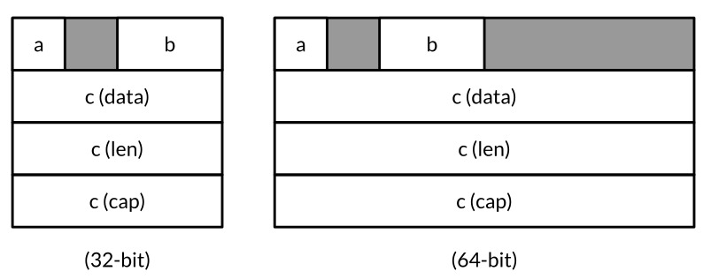
La siguiente tabla muestra los resultados de aplicar las tres funcion unsafe al mismo x y a cada uno de sus tres campos:
A pesar de sus nombres, estas funciones en realidad no son inseguras, y pueden ser utiles para entender el diseño de la memoria en bruto en un programa al optimizar el espacio.
unsafe.Pointer
La mayoria de los tipos de puntero se escriben *T, es decir, un puntero a una variable de tipo T. El tipo unsafe.Pointer es un tipo especial de puntero que puede contener la direccion de cualquier variable. Por supuesto, no podemos aplicar indireccion a traves de un unsafe.Pointer usando *p, porque no sabemos que tipo de expresion que debe tener. Como los punteros ordinarios, unsafe.Pointers es comparable y pueden compararse con nil, que es el valor cero del tipo.
Un puentor *T ordinario puede convertirse en un unsafe.Pointer, y un unsafe.Pointer convertirse de nuevo a un puntero ordinario, no necesariamente del mismo tipo *T. Por ejemplo, al convertir un puntero *float64 en un *uint64, podemos inspeccionar el patron de bits de una variable de punto flotante:
A traves del puntero resultante, podemos actualizar el patron de bits tambien. Esto es inofensivo para una variable de punto flotante, ya que cualquier patron de bits es legal, pero en general, las conversiones unsafe.Pointer nos permiter escribir valores arbitrarios en memoria y asi subvertir el sistema de tipos.
Un unsafe.Pointer tambien se puede convertir en un uintptr que mantiene el valor numerico del puntero, dejandonos realizar aritmetica de direcciones. (Recuerde del Capitulo 3 que un uintptr es un entero sin signo lo suficientemente ancho como para representar una direccion.) Esta conversion tambien se puede aplicar a la inversa, pero de nuevo, la conversion de un uintptr a un unsafe.Pointer puede subvertir el sistema de tipos ya que no todos los numeros son direcciones validas.
Muchos valores unsafe.Pointer son, por tanto, intermediarios para convertir punteros ordinarios en direcciones numericas brutas y viceversa. El ejemplo a continuacion toma la direccion de la variable x, añade el desplazamiento de su campo b, convierte la direccion resultante en *int16, y por medio este puntero actualiza x.b:
varxstruct{aboolbint16c[]int}// equivalente a pb := &x.bpb:=(*int16)(unsafe.Pointer(uintptr(unsafe.Pointer(&x))+unsafe.Offsetof(x.b)))*pb=42fmt.Println(x.b)// "42"
Aunque la sintaxis es engorrosa–quiza no es malo, ya que estas caracteristicas deben utilizarse con moderacion–no se sienta tentado a introducir variables temporales de tipo uintptr para romper las lineas. Este codigo es incorrecto:
La razon es muy sutil. Algunos recolectores de basura mueven las variables en la memoria para reducir la fragmentacion o la contabilidad. Los recolectores de basura de este tipo lo conocen como mover GCs. Cuando se mueve una variable, todos los punteros que contienen la direccion de la antigua ubicacion deben actualizarse para apuntar a la nueva. Desde la perspectiva del colector de basura, un unsafe.Pointer es un puntero y por lo tanto su valor debe cambiar a medida que se mueve la variable, pero un uintptr es solo un numero por lo que su valor no debe cambiar. El codigo anterior es incorrecta por que oculta un puentero del recolector de basura en la variable no puntero tmp. En el momento que la segunda instruccion se ejecuta, la variable x podria haberse movido y el numero de tmp ya no seria la direccion &x.b. La tercera declaracion ataca una ubicacion de memoria arbitraria con el valor 42.
Hay un sin sinnumero de variaciones patologicas sobre este tema. Despues de que esta declaracion se ha ejecutado:
no hay punteros que referencien la variable creado por new, por lo que el recolector de basura tiene derecho a reciclar su almacenamiento cuando esta declaracion se complete, despues de lo cual pT contiene la direccion donde estaba la variable, pero ya no.
Ninguna implementacion actual de Go utiliza un recolector de basura en movimiento (aunque futuras implementaciones podrian), pero esto no es motivo de complacencia: las versiones actuales de Go hacer mover algunas variables en la memoria. Recuerde de la Seccion 5.2 que las pilas de gorutina crecen segun sea necesario. Cuando esto sucede, todas las variables de la pila antigua pueden ser reubicadas en una nueva pila mas grande, por lo que no podemos confiar en que el valor numerico de la direccion de una variable permanezca invariable durante toda su vida util.
En el momento de escribir esto, hay poco clara orientacion sobre lo que los programadores Go pueden esperar despues de una convercion unsafe.Pointer a uintptr (en el repositorio vea el asunto 7192), por lo que recomendamos encarecidamente que asuma el minimo necesario. Trate todos los valores uintptr como si almacenaran la antigua direccion de una variable, y minimice el numero de operaciones entre la conversion de un unsafe.Pointer a un uintptr y el uso de ese uintptr. En nuestro primer ejemplo anterior, las tres operaciones–la conversion a un uintptr, la suma la compensacion de campo, y la conversion de nuevo–aparecieron dentro de una sola expresion.
Cuando se llama a una funcion de libreria que devuelve un uintptr, como las que se muestran a continuacion del paquete reflect, el resultado debe ser convertido inmediatamente a un unsafe.Pointer para asegurarse de que sigue apuntando a la misma variable.
La funcion DeepEqual del paquete reflect informa si dos valores son profundamente iguales. DeepEqual compara los valores basicos como si fuera el operador ==; para los valores compuestos, los recorre recursivamente, comparando los elementos correspondientes. Debido a que funciona para cualquier par de valores, incluso los que no son comparables con ==, este encuentra un uso amplio en pruebas. La siguiente prueba utiliza DeepEqual para comparar dos valores []string:
Aunque DeepEqual es conveniente, sus distinciones pueden parecer arbitrarias. Por ejemplo, no considera un mapa nil igual a un mapa vacio no-nil, ni un slice nil igual a uno vacio no-nil:
En esta seccion vamos a definir una funcion Equal que compara valores arbitrarios. Al igual que DeepEqual, compara slices y mapas en base a sus elementos, pero a diferencia de DeepEqual, considera una slice nil (o mapa) igual a uno no-nil vacio. La recursion basica sobre los argumentos se puede hacer con reflexion, usando un enfoque similar a Display del programa que vimos en la Seccion 12.3. Como de costumbre, definimos una funcion no exportada, equal, para la recursion. Por el momento no se preocupe por el parametro seen. Para cada par de valores x y y a comparar, equal verifica que ambos (o ninguno) son validos y comprueba que tienen el mismo tipo. El resultado de la funcion se define como un conjunto de casos de conmutacion que comparan dos valores del mismo tipo. Por motivos de espacio, hemos omitido varios casos, ya que el patron debe ser familiar por ahora.
funcequal(x,yreflect.Value,seenmap[comparison]bool)bool{if!x.IsValid()||!y.IsValid(){returnx.IsValid()==y.IsValid()}ifx.Type()!=y.Type(){returnfalse}// ...ciclo de verificacion omitido (mostrado mas adelante)...switchx.Kind(){casereflect.Bool:returnx.Bool()==y.Bool()casereflect.String:returnx.String()==y.String()// ...casos numericos omitidos por brevedad...casereflect.Chan,reflect.UnsafePointer,reflect.Func:returnx.Pointer()==y.Pointer()casereflect.Ptr,reflect.Interface:returnequal(x.Elem(),y.Elem(),seen)casereflect.Array,reflect.Slice:ifx.Len()!=y.Len(){returnfalse}fori:=0;i<x.Len();i++{if!equal(x.Index(i),y.Index(i),seen){returnfalse}}returntrue// ...struct and map cases omitted for brevity...}panic("unreachable")}
Como de costumbre, no exponemos el uso de la reflexion en la API, por lo que la funcion exportada Equal debe llamarla con reflect.ValueOf en sus argumentos:
// Equal informa si x e y son profundamente iguales.funcEqual(x,yinterface{})bool{seen:=make(map[comparison]bool)returnequal(reflect.ValueOf(x),reflect.ValueOf(y),seen)}typecomparisonstruct{x,yunsafe.Pointertreflect.Type}
Para asegurar que el algoritmo termina incluso para estructuras de datos ciclicas, debe registrar que pares de variables ya ha comparado y evitar compararlas una segunda vez. Equal asigna un conjunto de comparison estructuras, cada uno con la direccion de dos variables (representado como valores unsafe.Pointer) y el tipo de comparacion. Necesitamos registrar el tipo ademas de las direcciones porque las diferentes variables pueden tener la misma direccion. Por ejemplo, si x y y son ambos arreglos, x y x[0] tienen la misma direccion, como lo hacen y e y[0], y es importante distinguir si hemos comparado x y y o x[0] y y[0].
Una vez equal ha establecido que sus argumentos tienen el mismo tipo, y antes de que ejecute el switch, se comprueba si se esta comparando dos variables que ya ha visto y, si es asi, termina la recursion.
// verificacion de cicloifx.CanAddr()&&y.CanAddr(){xptr:=unsafe.Pointer(x.UnsafeAddr())yptr:=unsafe.Pointer(y.UnsafeAddr())ifxptr==yptr{returntrue// referencias identicas}c:=comparison{xptr,yptr,x.Type()}ifseen[c]{returntrue// ya visto}seen[c]=true}
Incluso funciona en entradas ciclicas similares a la que hizo que la funcion Display de la Seccion 12.3 quedara atascada en un bucle:
// Lista circular enlazada a -> b -> a and c -> c.typelinkstruct{valuestringtail*link}a,b,c:=&link{value:"a"},&link{value:"b"},&link{value:"c"}a.tail,b.tail,c.tail=b,a,cfmt.Println(Equal(a,a))// "true"fmt.Println(Equal(b,b))// "true"fmt.Println(Equal(c,c))// "true"fmt.Println(Equal(a,b))// "false"fmt.Println(Equal(a,c))// "false"
Ejercicio 13.1: Definir una funcion de comparacion de profundidad que tome en cuenta los numeros (de cualquier tipo) igual si difieren en menos de una parte en mil millones.
Ejercicio 13.2: Escribir una funcion que informa si su argumento es una estructura de datos ciclica.
Llamar Codigo C con cgo
Un programa Go puede necesitar utilizar un controlador de hardware implementado en C, consultar una base de datos enbebida implementada en C++ o utilizar algunas rutinas de algebra lineal implementadas en Fortran. C ha sido durante mucho tiempo la lingua franca de la programacion, por lo que muchos paquetes destinados a un uso generalizado exportan una API compatible con C, independientemente del lenguaje de su implementacion.
En esta seccion, vamos a construir un simple programa de compresion de datos que utiliza cgo, una herramienta que crea enlaces de Go para funciones C. Estas herramientas se llaman interfaces de funcion externa (FFIs), y cgo no es el unico para los programas Go. SWIG (swig.org) es otro; Proporciona caracteristicas mas complejas para integrarse con las clases de C++, pero no lo mostraremos aqui.
El subarbol compress/... de la libreria estandar proporciona compresores y descompresores de los algoritmos de compresion mas populares, incluyendo LZW (usado por el comando Unix compress) y DEFLATE (usado por el comando GNU gzip). Las APIs de estos paquetes varian ligeramente en detalles, pero todos ellos proporcionan un envoltorio para un io.Writer que comprime los datos escritos en ellos, y un envoltorio para un io.Reader que descomprime los datos leidos de estos. Por ejemplo:
El algoritmo bzip2, que se basa en la elegante transformacion de Burrows-Wheeler, corre mas lento que gzip pero produce una compresion significativamente mejor. El paquete compress/bzip2 proporciona un descompresor para bzip2, pero en este momento el paquete no proporciona ningun compresor. La construccion de uno desde cero es una tarea sustancial, pero hay una implementacion en C de codigo abierto bien documentada con alto rendimiento, el paquete libbzip2 desde bzip.org.
Si la libreria de C fuera pequeña, simplemente la portariamos a Go puro, y si su rendimiento no fuera critico para nuestros propositos, estariamos mejor invocando un programa en C como un subproceso de ayuda utilizando el paquete os/exec. Es cuando se necesita utilizar una libreria compleja, de rendimiento critico con un API C compacto que puede tener sentido envolverla usando cgo. El resto de este capitulo, trabajaremos con un ejemplo.
Desde el paquete C libbzip2, necesitamos el tipo de estructura bz_stream, que contiene los buferes de entrada y salida, y tres funciones de C: BZ2_bzCompressInit, que asigna buffers del flujo; BZ2_bzCompress, que comprime los datos de bufer d entrada al bufer de salida; y BZ2_bzCompressEnd, que libera los bufferes. (No se preocupe por la mecanica del paquete libbzip2, el proposito de este ejemplo es mostrar como las piezas encajan entre si.)
Vamos a llamar a las funciones BZ2_bzCompressInit y BZ2_bzCompressEnd C directamente desde Go, pero para BZ2_bzCompress, vamos a definir una funcion de envoltorio en C, para mostrar como se hace. El archivo de codigo fuente C vive al lado del codigo Go en nuestro paquete:
/* Este archivo es gopl.io/ch13/bzip/bzip2.c, *//* un simple envoltorio para libbzip2 adecuado para cgo. */#include<bzlib.h>intbz2compress(bz_stream*s,intaction,char*in,unsigned*inlen,char*out,unsigned*outlen){s->next_in=in;s->avail_in=*inlen;s->next_out=out;s->avail_out=*outlen;intr=BZ2_bzCompress(s,action);*inlen-=s->avail_in;*outlen-=s->avail_out;s->next_in=s->next_out=NULL;returnr;}
Ahora veamos el codigo Go, cuya primera parte se muestra a continuacion. La declaracion import "C" es especial. No hay ningun paquete C, pero esta importacion hace que go build preprocese el archivo con la herramienta cgo antes de que el compilador Go lo vea.
// El paquete bzip proporciona un escritor que utiliza compresion bzip2 (bzip.org).packagebzip/*#cgo CFLAGS: -I/usr/include#cgo LDFLAGS: -L/usr/lib -lbz2#include <bzlib.h>int bz2compress(bz_stream *s, int action, char *in, unsigned *inlen, char *out, unsigned *outlen);*/import"C"import("io""unsafe")typewriterstruct{wio.Writer// underlying output streamstream*C.bz_streamoutbuf[64*1024]byte}// NewWriter devuelve un escritor para flujos bzip2 comprimidos.funcNewWriter(outio.Writer)io.WriteCloser{const(blockSize=9verbosity=0workFactor=30)w:=&writer{w:out,stream:new(C.bz_stream)}C.BZ2_bzCompressInit(w.stream,blockSize,verbosity,workFactor)returnw}
Durante el preprocesamiento, cgo genera un paquete temporal que contiene declaraciones Go correspondientes a todas las funciones de C y los tipos utilizados por el archivo, como C.bz_stream y C.BZ2_bzCompressInit. La herramienta cgo descubre este tipo invocando el compilador de C de una manera especial sobre el contenido del comentario que precede a la declaracion de importacion.
El comentario tambien puede contener directivas #cgo que especifican opciones adicionales a la cadena de herramientas C. Los valores CFLAGS y LDFLAGS aportan argumentos adicionales a los comandos de compilacion y enlace para que puedan localizar el archivo de cabecera bzlib.h y la libreria de archivo libbz2.a. El ejemplo supone que estos se instalan debajo de /usr en su sistema. Es posible que necesite modificar o eliminar estos indicadores para su instalacion. NewWriter realiza una llamada a la funcion C BZ2_bzCompressInit para inicializar los buferes de la secuencia. El tipo de escritor incluye otro bufer que se utilizara para drenar el bufer de salida del descompresor.
El metodo Write, se muestra a continuacion, alimenta el compresor con data, llamando a la funcion bz2compress en un bucle hasta que todos los datos se ha consumido. Observe que el programa Go puede acceder tipos C como bz_stream, char, y uint, funciones de C como bz2compress, e incluso macros del preprocesador C como a objetos como BZ_RUN, todo a traves de la notacion C.x. El tipo C.uint es distinto del tipo uint de Go, incluso si ambos tienen el mismo tamaño.
func(w*writer)Write(data[]byte)(int,error){ifw.stream==nil{panic("closed")}vartotalint// bytes escritos sin comprimirforlen(data)>0{inlen,outlen:=C.uint(len(data)),C.uint(cap(w.outbuf))C.bz2compress(w.stream,C.BZ_RUN,(*C.char)(unsafe.Pointer(&data[0])),&inlen,(*C.char)(unsafe.Pointer(&w.outbuf)),&outlen)total+=int(inlen)data=data[inlen:]if_,err:=w.w.Write(w.outbuf[:outlen]);err!=nil{returntotal,err}}returntotal,nil}
Cada iteracion del bucle bz2compress pasa la direccion y longitud de la porcion restante de la variable data, y la direccion y capacidad de w.outbuf. Las dos variables de longitud son pasadas por sus direcciones, no por sus valores, por lo que la funcion C puede actualizarlas para indicar la cantidad de datos sin comprimir que se consumio y la cantidad de datos comprimidos producidos. Cada trozo de datos comprimido se escribe en el io.Writer subyacente.
El metodo Close tiene una estructura similar a Write, utilizando un bucle para eliminar cualquier resto de datos comprimidos del bufer de salida del flujo.
// Cierra los datos comprimidos y cierra el flujo.// No cierra el io.Writer subyacente.func(w*writer)Close()error{ifw.stream==nil{panic("closed")}deferfunc(){C.BZ2_bzCompressEnd(w.stream)w.stream=nil}()for{inlen,outlen:=C.uint(0),C.uint(cap(w.outbuf))r:=C.bz2compress(w.stream,C.BZ_FINISH,nil,&inlen,(*C.char)(unsafe.Pointer(&w.outbuf)),&outlen)if_,err:=w.w.Write(w.outbuf[:outlen]);err!=nil{returnerr}ifr==C.BZ_STREAM_END{returnnil}}}
Al finalizar, Close llama a C.BZ2_bzCompressEnd para liberar los buferes de flujo, utilizando defer para asegurar que esto sucede en todas las rutas de retorno. En este punto el puntero w.stream ya no es seguro de deferenciar. Para estar a la defensiva, lo ponemos a nil, y agregamos chequeos explicitos de nil en cada metodo, por lo que el programa entra en panico si el usuario llama por error un metodo despues de Close.
No solo writer no es concurrentemente seguro, sino que las concurrentes a Close y Write podria hacer que el programa se bloquee en el codigo C. Correjir esto es el Ejercicio 13.3.
El siguiente programa, bzipper, es un comando bzip2 compresor que utiliza nuestro nuevo paquete. Se comporta como el comando bzip2 presente en muchos sistemas Unix.
// Bzipper lee la entrada, lo comprime como bzip2, y lo escribe en la salida.packagemainimport("io""log""os""gopl.io/ch13/bzip")funcmain(){w:=bzip.NewWriter(os.Stdout)if_,err:=io.Copy(w,os.Stdin);err!=nil{log.Fatalf("bzipper: %v\n",err)}iferr:=w.Close();err!=nil{log.Fatalf("bzipper: close: %v\n",err)}}
En la sesion a continuacion, utilizamos bzipper para comprimir /usr/share/dict/words el diccionario del sistema, de 938,848 bytes a 335,405 bytes–aproximadamente de un tercio de su tamaño original–luego lo descomprimimos con el comando del sistema bunzip2. El hash SHA256 es el mismo antes y despues, dandonos confianza de que el compresor esta funcionando correctamente. (Si usted no tiene sha256sum en su sistema, utilice su solucion al Ejercicio 4.2.)
Hemos demostrado la vinculacion de una libreria C con un programa Go. Yendo en la otra direccion, tambien es posible compilar un programa Go como un archivo estatico que se puede vincular en un programa C o como una libreria compartida que puede cargarse dinamicamente por un programa C. Solo hemos arañado la superficie de cgo, y hay mucho mas que decir acerca de la gestion de memoria, punteros, devoluciones de llamada, el manejo de señales, cadenas, errno, finalizadores, y la relacion entre gorutinas y los hilos del sistema operativo, gran parte de ello muy sutil. En particular, las reglas para pasar correctamente punteros de Go a C o viceversa son complejas, por razones similares a las que discutimos en la Seccion 13.2, y aun no autoritariamente especificadas. Para mas informacion, comience con https://golang.org/cmd/cgo.
Ejercicio 13.3: Utilice sync.Mutex para hacer bzip2.writer seguro para el uso concurrente por multiples gorutinas.
Ejercicio 13.4: Depender de librerias C tiene sus inconvenientes. Proporcione una implementacion alternativa en puro Go de bzip.NewWriter que utilice el paquete os/exec para ejecutar /bin/bzip2 como un subproceso.
Otra Palabra de Precaucion
Terminamos el capitulo anterior con una advertencia sobre las desventajas de la interfaz de reflexion. Esa advertencia se aplica incluso con mas fuerza al paquete unsafe descrito en este capitulo.
Los lenguajes de alto nivel aislan a los programas y programadores no solo de los detalles arcanos de los conjuntos de instrucciones individuales de computadora, sino de la dependencia de las irrelevancias, como en la memoria en la que vive una variable, el tamaño del tipo de datos, y otros detalles de implementacion del anfitrion. Debido a esa capa aislante, es posible escribir programas que son seguros y robustos y que se ejecutaran en cualquier sistema operativo sin cambios.
El paquete unsafe permite a los programadores cruzar a traves del aislamiento para utilizar alguna caracteristica crucial, pero de otro modo inaccesibles, o tal vez para lograr un mayor rendimiento. El costo suele ser la portabilidad y la seguridad. Nuestro consejo sobre como y cuando usar unsafe son paralelos a los comentarios de Knuth para la optimizacion prematura, que hemos citado en la Seccion 11.5. La mayoria de los programadores nunca necesitaran utilizar unsafe en absoluto. Sin embargo, ocasionalmente habra situaciones en las que algun fragmento critica de codigo puede ser escrito mejor usando unsafe. Si el estudio y la medicion cuidadosa indican que unsafe realmente es el mejor enfoque, restrinja el fragmento lo mayor posible, para que la mayor parte del programa ignore su uso.
Por ahora, ponga los dos ultimos capitulos en la parte de atras de su mente. Escriba algunos programas importantes en Go. Evite reflect y unsafe; Vuelva a estos capitulos solamente si usted debe.
Mientras tanto, Feliz programacion con Go. Esperamos que disfrutes escribiendo en Go tanto como nosotros.